absolute values of benchmarks per virtualisation (top view by jdk)
time and other 'less is better` are shown inverted, so the view of charts is comaprable
-
all
-
DACAPO
-
m1
-
geom
-
geomMean
-
m2a
-
geom
-
geomMean
-
m2m
-
geom
-
geomMean
-
geomMean
-
J2DBENCH
-
m1
-
j2dbench.geom
-
geomMean
-
m2a
-
j2dbench.geom
-
geomMean
-
m2m
-
j2dbench.geom
-
geomMean
-
geomMean
-
JMH
-
m1
-
geom
-
geomMean
-
m2a
-
geom
-
geomMean
-
m2m
-
geom
-
geomMean
-
geomMean
-
RADARGUNs1
-
m1
-
BasicOperations.Get.Throughput=
-
BasicOperations.Put.Throughput=
-
BasicOperations.Put.ResponseTimeMean
-
BasicOperations.Get.ResponseTimeMean
-
geomMean
-
m2a
-
BasicOperations.Get.Throughput=
-
BasicOperations.Put.Throughput=
-
BasicOperations.Put.ResponseTimeMean
-
BasicOperations.Get.ResponseTimeMean
-
geomMean
-
m2m
-
BasicOperations.Get.Throughput=
-
BasicOperations.Put.Throughput=
-
BasicOperations.Put.ResponseTimeMean
-
BasicOperations.Get.ResponseTimeMean
-
geomMean
-
geomMean
-
RADARGUNs3
-
m1
-
BasicOperations.Get.Throughput=
-
BasicOperations.Put.Throughput=
-
BasicOperations.Put.ResponseTimeMean
-
BasicOperations.Get.ResponseTimeMean
-
geomMean
-
m2a
-
BasicOperations.Get.Throughput=
-
BasicOperations.Put.Throughput=
-
BasicOperations.Put.ResponseTimeMean
-
BasicOperations.Get.ResponseTimeMean
-
geomMean
-
m2m
-
BasicOperations.Get.Throughput=
-
BasicOperations.Put.Throughput=
-
BasicOperations.Put.ResponseTimeMean
-
BasicOperations.Get.ResponseTimeMean
-
geomMean
-
geomMean
-
SPECJBB
-
m1
-
jbb2015.result.metric.critical-jOPS
-
jbb2015.result.metric.max-jOPS
-
geomMean
-
m2a
-
jbb2015.result.metric.critical-jOPS
-
jbb2015.result.metric.max-jOPS
-
geomMean
-
m2m
-
jbb2015.result.metric.critical-jOPS
-
jbb2015.result.metric.max-jOPS
-
geomMean
-
geomMean
-
geomMean
-
java-1.8.0
-
DACAPO
-
m1
-
geom
-
geomMean
-
m2a
-
geom
-
geomMean
-
m2m
-
geom
-
geomMean
-
geomMean
-
J2DBENCH
-
m1
-
j2dbench.geom
-
geomMean
-
m2a
-
j2dbench.geom
-
geomMean
-
m2m
-
j2dbench.geom
-
geomMean
-
geomMean
-
JMH
-
m1
-
geom
-
geomMean
-
m2a
-
geom
-
geomMean
-
m2m
-
geom
-
geomMean
-
geomMean
-
RADARGUNs1
-
m1
-
BasicOperations.Get.Throughput=
-
BasicOperations.Put.Throughput=
-
BasicOperations.Put.ResponseTimeMean
-
BasicOperations.Get.ResponseTimeMean
-
geomMean
-
m2a
-
BasicOperations.Get.Throughput=
-
BasicOperations.Put.Throughput=
-
BasicOperations.Put.ResponseTimeMean
-
BasicOperations.Get.ResponseTimeMean
-
geomMean
-
m2m
-
BasicOperations.Get.Throughput=
-
BasicOperations.Put.Throughput=
-
BasicOperations.Put.ResponseTimeMean
-
BasicOperations.Get.ResponseTimeMean
-
geomMean
-
geomMean
-
RADARGUNs3
-
m1
-
BasicOperations.Get.Throughput=
-
BasicOperations.Put.Throughput=
-
BasicOperations.Put.ResponseTimeMean
-
BasicOperations.Get.ResponseTimeMean
-
geomMean
-
m2a
-
BasicOperations.Get.Throughput=
-
BasicOperations.Put.Throughput=
-
BasicOperations.Put.ResponseTimeMean
-
BasicOperations.Get.ResponseTimeMean
-
geomMean
-
m2m
-
BasicOperations.Get.Throughput=
-
BasicOperations.Put.Throughput=
-
BasicOperations.Put.ResponseTimeMean
-
BasicOperations.Get.ResponseTimeMean
-
geomMean
-
geomMean
-
SPECJBB
-
m1
-
jbb2015.result.metric.critical-jOPS
-
jbb2015.result.metric.max-jOPS
-
geomMean
-
m2a
-
jbb2015.result.metric.critical-jOPS
-
jbb2015.result.metric.max-jOPS
-
geomMean
-
m2m
-
jbb2015.result.metric.critical-jOPS
-
jbb2015.result.metric.max-jOPS
-
geomMean
-
geomMean
-
geomMean
-
java-11
-
DACAPO
-
m1
-
geom
-
geomMean
-
m2a
-
geom
-
geomMean
-
m2m
-
geom
-
geomMean
-
geomMean
-
J2DBENCH
-
m1
-
j2dbench.geom
-
geomMean
-
m2a
-
j2dbench.geom
-
geomMean
-
m2m
-
j2dbench.geom
-
geomMean
-
geomMean
-
JMH
-
m1
-
geom
-
geomMean
-
m2a
-
geom
-
geomMean
-
m2m
-
geom
-
geomMean
-
geomMean
-
RADARGUNs1
-
m1
-
BasicOperations.Get.Throughput=
-
BasicOperations.Put.Throughput=
-
BasicOperations.Put.ResponseTimeMean
-
BasicOperations.Get.ResponseTimeMean
-
geomMean
-
m2a
-
BasicOperations.Get.Throughput=
-
BasicOperations.Put.Throughput=
-
BasicOperations.Put.ResponseTimeMean
-
BasicOperations.Get.ResponseTimeMean
-
geomMean
-
m2m
-
BasicOperations.Get.Throughput=
-
BasicOperations.Put.Throughput=
-
BasicOperations.Put.ResponseTimeMean
-
BasicOperations.Get.ResponseTimeMean
-
geomMean
-
geomMean
-
RADARGUNs3
-
m1
-
BasicOperations.Get.Throughput=
-
BasicOperations.Put.Throughput=
-
BasicOperations.Put.ResponseTimeMean
-
BasicOperations.Get.ResponseTimeMean
-
geomMean
-
m2a
-
BasicOperations.Get.Throughput=
-
BasicOperations.Put.Throughput=
-
BasicOperations.Put.ResponseTimeMean
-
BasicOperations.Get.ResponseTimeMean
-
geomMean
-
m2m
-
BasicOperations.Get.Throughput=
-
BasicOperations.Put.Throughput=
-
BasicOperations.Put.ResponseTimeMean
-
BasicOperations.Get.ResponseTimeMean
-
geomMean
-
geomMean
-
SPECJBB
-
m1
-
jbb2015.result.metric.critical-jOPS
-
jbb2015.result.metric.max-jOPS
-
geomMean
-
m2a
-
jbb2015.result.metric.critical-jOPS
-
jbb2015.result.metric.max-jOPS
-
geomMean
-
m2m
-
jbb2015.result.metric.critical-jOPS
-
jbb2015.result.metric.max-jOPS
-
geomMean
-
geomMean
-
geomMean
-
java-17
-
DACAPO
-
m1
-
geom
-
geomMean
-
m2a
-
geom
-
geomMean
-
m2m
-
geom
-
geomMean
-
geomMean
-
J2DBENCH
-
m1
-
j2dbench.geom
-
geomMean
-
m2a
-
j2dbench.geom
-
geomMean
-
m2m
-
j2dbench.geom
-
geomMean
-
geomMean
-
JMH
-
m1
-
geom
-
geomMean
-
m2a
-
geom
-
geomMean
-
m2m
-
geom
-
geomMean
-
geomMean
-
RADARGUNs1
-
m1
-
BasicOperations.Get.Throughput=
-
BasicOperations.Put.Throughput=
-
BasicOperations.Put.ResponseTimeMean
-
BasicOperations.Get.ResponseTimeMean
-
geomMean
-
m2a
-
BasicOperations.Get.Throughput=
-
BasicOperations.Put.Throughput=
-
BasicOperations.Put.ResponseTimeMean
-
BasicOperations.Get.ResponseTimeMean
-
geomMean
-
m2m
-
BasicOperations.Get.Throughput=
-
BasicOperations.Put.Throughput=
-
BasicOperations.Put.ResponseTimeMean
-
BasicOperations.Get.ResponseTimeMean
-
geomMean
-
geomMean
-
RADARGUNs3
-
m1
-
BasicOperations.Get.Throughput=
-
BasicOperations.Put.Throughput=
-
BasicOperations.Put.ResponseTimeMean
-
BasicOperations.Get.ResponseTimeMean
-
geomMean
-
m2a
-
BasicOperations.Get.Throughput=
-
BasicOperations.Put.Throughput=
-
BasicOperations.Put.ResponseTimeMean
-
BasicOperations.Get.ResponseTimeMean
-
geomMean
-
m2m
-
BasicOperations.Get.Throughput=
-
BasicOperations.Put.Throughput=
-
BasicOperations.Put.ResponseTimeMean
-
BasicOperations.Get.ResponseTimeMean
-
geomMean
-
geomMean
-
SPECJBB
-
m1
-
jbb2015.result.metric.critical-jOPS
-
jbb2015.result.metric.max-jOPS
-
geomMean
-
m2a
-
jbb2015.result.metric.critical-jOPS
-
jbb2015.result.metric.max-jOPS
-
geomMean
-
m2m
-
jbb2015.result.metric.critical-jOPS
-
jbb2015.result.metric.max-jOPS
-
geomMean
-
geomMean
-
geomMean
-
java-21
-
DACAPO
-
m1
-
geom
-
geomMean
-
m2a
-
geom
-
geomMean
-
m2m
-
geom
-
geomMean
-
geomMean
-
J2DBENCH
-
m1
-
j2dbench.geom
-
geomMean
-
m2a
-
j2dbench.geom
-
geomMean
-
m2m
-
j2dbench.geom
-
geomMean
-
geomMean
-
JMH
-
m1
-
geom
-
geomMean
-
m2a
-
geom
-
geomMean
-
m2m
-
geom
-
geomMean
-
geomMean
-
RADARGUNs1
-
m1
-
BasicOperations.Get.Throughput=
-
BasicOperations.Put.Throughput=
-
BasicOperations.Put.ResponseTimeMean
-
BasicOperations.Get.ResponseTimeMean
-
geomMean
-
m2a
-
BasicOperations.Get.Throughput=
-
BasicOperations.Put.Throughput=
-
BasicOperations.Put.ResponseTimeMean
-
BasicOperations.Get.ResponseTimeMean
-
geomMean
-
m2m
-
BasicOperations.Get.Throughput=
-
BasicOperations.Put.Throughput=
-
BasicOperations.Put.ResponseTimeMean
-
BasicOperations.Get.ResponseTimeMean
-
geomMean
-
geomMean
-
RADARGUNs3
-
m1
-
BasicOperations.Get.Throughput=
-
BasicOperations.Put.Throughput=
-
BasicOperations.Put.ResponseTimeMean
-
BasicOperations.Get.ResponseTimeMean
-
geomMean
-
m2a
-
BasicOperations.Get.Throughput=
-
BasicOperations.Put.Throughput=
-
BasicOperations.Put.ResponseTimeMean
-
BasicOperations.Get.ResponseTimeMean
-
geomMean
-
m2m
-
BasicOperations.Get.Throughput=
-
BasicOperations.Put.Throughput=
-
BasicOperations.Put.ResponseTimeMean
-
BasicOperations.Get.ResponseTimeMean
-
geomMean
-
geomMean
-
SPECJBB
-
m1
-
jbb2015.result.metric.critical-jOPS
-
jbb2015.result.metric.max-jOPS
-
geomMean
-
m2a
-
jbb2015.result.metric.critical-jOPS
-
jbb2015.result.metric.max-jOPS
-
geomMean
-
m2m
-
jbb2015.result.metric.critical-jOPS
-
jbb2015.result.metric.max-jOPS
-
geomMean
-
geomMean
-
geomMean
-
geomMean of all (with all, thus wrong)
-
geomMean of all
all
For those values, ALL jdks is moreover useless. But can serve as the ONE number if needed
DACAPO
all runs of one jdk are treated as INDIVIDUAL items
geom
all DACAPO geom where all runs of one jdk are treated as INDIVIDUAL items
MIN -854.0 container-results
MIN -1308.0 containers_in_container
MIN -821.0 containers_in_vm_results
MIN -823.0 local_results
MIN -2441.0 nestedVM_results
MIN -1680.0 vm_results
MAX -1377.0 container-results
MAX -2142.0 containers_in_container
MAX -1386.0 containers_in_vm_results
MAX -1332.0 local_results
MAX -3945.0 nestedVM_results
MAX -2736.0 vm_results
AVG -1170.6263736263736 container-results
AVG -1886.7301587301588 containers_in_container
AVG -1083.0662251655629 containers_in_vm_results
AVG -1131.0734463276835 local_results
AVG -3397.7865853658536 nestedVM_results
AVG -2121.1104294478528 vm_results
MED -1222.0 container-results
MED -1943.0 containers_in_container
MED -1115.0 containers_in_vm_results
MED -1182.0 local_results
MED -3589.0 nestedVM_results
MED -2135.0 vm_results
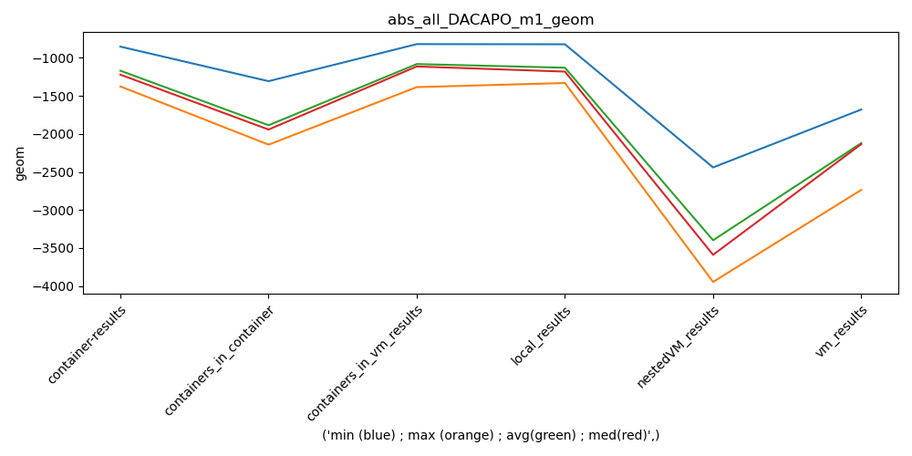
geomMean of all keys (benchmark meassured relativre accuracy)
{'MIN': [854.0, 1308.0, 821.0, 823.0, 2441.0, 1680.0], 'MAX': [1377.0, 2142.0, 1386.0, 1332.0, 3945.0, 2736.0], 'AVG': [1170.6263736263736, 1886.7301587301588, 1083.0662251655629, 1131.0734463276835, 3397.7865853658536, 2121.1104294478528], 'MED': [1222.0, 1943.0, 1115.0, 1182.0, 3589.0, 2135.0]}
all DACAPO geomMean where all runs of one jdk are treated as INDIVIDUAL items
MIN -854.0 container-results
MIN -1308.0 containers_in_container
MIN -821.0 containers_in_vm_results
MIN -823.0 local_results
MIN -2441.0 nestedVM_results
MIN -1680.0 vm_results
MAX -1377.0 container-results
MAX -2142.0 containers_in_container
MAX -1386.0 containers_in_vm_results
MAX -1332.0 local_results
MAX -3945.0 nestedVM_results
MAX -2736.0 vm_results
AVG -1170.6263736263736 container-results
AVG -1886.7301587301588 containers_in_container
AVG -1083.0662251655629 containers_in_vm_results
AVG -1131.0734463276835 local_results
AVG -3397.7865853658536 nestedVM_results
AVG -2121.1104294478528 vm_results
MED -1222.0 container-results
MED -1943.0 containers_in_container
MED -1115.0 containers_in_vm_results
MED -1182.0 local_results
MED -3589.0 nestedVM_results
MED -2135.0 vm_results
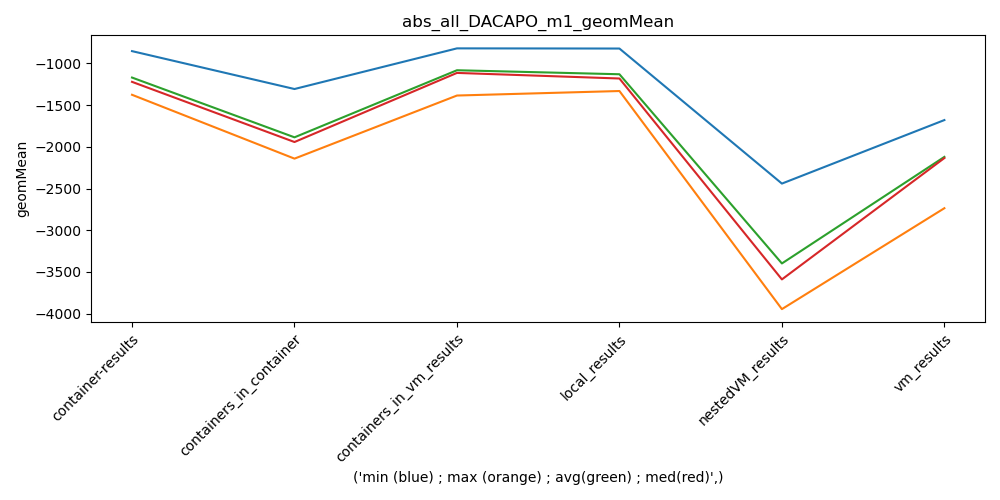
all runs of one jdk were made AVARAGE before processing
geom
all DACAPO geom where all runs of one jdk were made AVARAGE before processing
MIN -867.6 container-results
MIN -1341.0 containers_in_container
MIN -849.0 containers_in_vm_results
MIN -854.4 local_results
MIN -2582.8 nestedVM_results
MIN -1734.6 vm_results
MAX -1313.6 container-results
MAX -2095.5 containers_in_container
MAX -1223.2 containers_in_vm_results
MAX -1243.4 local_results
MAX -3779.6666666666665 nestedVM_results
MAX -2605.4 vm_results
AVG -1169.9513513513514 container-results
AVG -1870.595238095238 containers_in_container
AVG -1092.2148648648647 containers_in_vm_results
AVG -1132.822222222222 local_results
AVG -3425.264864864865 nestedVM_results
AVG -2124.2685185185187 vm_results
MED -1235.0 container-results
MED -1951.5 containers_in_container
MED -1147.3333333333333 containers_in_vm_results
MED -1182.4 local_results
MED -3591.0 nestedVM_results
MED -2146.6 vm_results

geomMean of all keys (benchmark meassured relativre accuracy)
{'MIN': [867.6, 1341.0, 849.0, 854.4, 2582.8, 1734.6], 'MAX': [1313.6, 2095.5, 1223.2, 1243.4, 3779.6666666666665, 2605.4], 'AVG': [1169.9513513513514, 1870.595238095238, 1092.2148648648647, 1132.822222222222, 3425.264864864865, 2124.2685185185187], 'MED': [1235.0, 1951.5, 1147.3333333333333, 1182.4, 3591.0, 2146.6]}
all DACAPO geomMean where all runs of one jdk were made AVARAGE before processing
MIN -867.6 container-results
MIN -1341.0 containers_in_container
MIN -849.0 containers_in_vm_results
MIN -854.4 local_results
MIN -2582.8 nestedVM_results
MIN -1734.6 vm_results
MAX -1313.6 container-results
MAX -2095.5 containers_in_container
MAX -1223.2 containers_in_vm_results
MAX -1243.4 local_results
MAX -3779.6666666666665 nestedVM_results
MAX -2605.4 vm_results
AVG -1169.9513513513514 container-results
AVG -1870.595238095238 containers_in_container
AVG -1092.2148648648647 containers_in_vm_results
AVG -1132.822222222222 local_results
AVG -3425.264864864865 nestedVM_results
AVG -2124.2685185185187 vm_results
MED -1235.0 container-results
MED -1951.5 containers_in_container
MED -1147.3333333333333 containers_in_vm_results
MED -1182.4 local_results
MED -3591.0 nestedVM_results
MED -2146.6 vm_results

all runs of one jdk were made MEDIAN before processing
geom
all DACAPO geom where all runs of one jdk were made MEDIAN before processing
MIN -862.0 container-results
MIN -1357.0 containers_in_container
MIN -838.0 containers_in_vm_results
MIN -839.0 local_results
MIN -2581.0 nestedVM_results
MIN -1695.0 vm_results
MAX -1324.0 container-results
MAX -2142.0 containers_in_container
MAX -1247.0 containers_in_vm_results
MAX -1259.0 local_results
MAX -3792.0 nestedVM_results
MAX -2635.0 vm_results
AVG -1169.6216216216217 container-results
AVG -1887.4857142857143 containers_in_container
AVG -1092.2162162162163 containers_in_vm_results
AVG -1132.4166666666667 local_results
AVG -3435.0 nestedVM_results
AVG -2118.5555555555557 vm_results
MED -1226.0 container-results
MED -1960.0 containers_in_container
MED -1145.0 containers_in_vm_results
MED -1180.0 local_results
MED -3608.0 nestedVM_results
MED -2145.0 vm_results
geomMean of all keys (benchmark meassured relativre accuracy)
{'MIN': [862.0, 1357.0, 838.0, 839.0, 2581.0, 1695.0], 'MAX': [1324.0, 2142.0, 1247.0, 1259.0, 3792.0, 2635.0], 'AVG': [1169.6216216216217, 1887.4857142857143, 1092.2162162162163, 1132.4166666666667, 3435.0, 2118.5555555555557], 'MED': [1226.0, 1960.0, 1145.0, 1180.0, 3608.0, 2145.0]}
all DACAPO geomMean where all runs of one jdk were made MEDIAN before processing
MIN -862.0 container-results
MIN -1357.0 containers_in_container
MIN -838.0 containers_in_vm_results
MIN -839.0 local_results
MIN -2581.0 nestedVM_results
MIN -1695.0 vm_results
MAX -1324.0 container-results
MAX -2142.0 containers_in_container
MAX -1247.0 containers_in_vm_results
MAX -1259.0 local_results
MAX -3792.0 nestedVM_results
MAX -2635.0 vm_results
AVG -1169.6216216216217 container-results
AVG -1887.4857142857143 containers_in_container
AVG -1092.2162162162163 containers_in_vm_results
AVG -1132.4166666666667 local_results
AVG -3435.0 nestedVM_results
AVG -2118.5555555555557 vm_results
MED -1226.0 container-results
MED -1960.0 containers_in_container
MED -1145.0 containers_in_vm_results
MED -1180.0 local_results
MED -3608.0 nestedVM_results
MED -2145.0 vm_results

geomMean of all metrics from geomMean of all keys
{'MIN': [861.1818997568362, 1335.1768380818507, 835.9204603324354, 838.7019998487368, 2534.051988263656, 1703.044941896817], 'MAX': [1337.9144830622067, 2126.386465864002, 1283.4404380451094, 1277.556961054332, 3838.1588558758867, 2658.2166492622346], 'AVG': [1170.0663741434153, 1881.587545562843, 1089.1572130778525, 1132.1038649927814, 3419.3141185935046, 2121.3102143849064], 'MED': [1227.6546445782703, 1951.4876589876326, 1135.6817715151255, 1181.4662000286103, 3595.9899069791263, 2142.1938440977206]}
all DACAPO geomMean geomMean
MIN -861.1818997568362 container-results
MIN -1335.1768380818507 containers_in_container
MIN -835.9204603324354 containers_in_vm_results
MIN -838.7019998487368 local_results
MIN -2534.051988263656 nestedVM_results
MIN -1703.044941896817 vm_results
MAX -1337.9144830622067 container-results
MAX -2126.386465864002 containers_in_container
MAX -1283.4404380451094 containers_in_vm_results
MAX -1277.556961054332 local_results
MAX -3838.1588558758867 nestedVM_results
MAX -2658.2166492622346 vm_results
AVG -1170.0663741434153 container-results
AVG -1881.587545562843 containers_in_container
AVG -1089.1572130778525 containers_in_vm_results
AVG -1132.1038649927814 local_results
AVG -3419.3141185935046 nestedVM_results
AVG -2121.3102143849064 vm_results
MED -1227.6546445782703 container-results
MED -1951.4876589876326 containers_in_container
MED -1135.6817715151255 containers_in_vm_results
MED -1181.4662000286103 local_results
MED -3595.9899069791263 nestedVM_results
MED -2142.1938440977206 vm_results

J2DBENCH
all runs of one jdk are treated as INDIVIDUAL items
j2dbench.geom
all J2DBENCH j2dbench.geom where all runs of one jdk are treated as INDIVIDUAL items
MIN 135915.0 container-results
MIN 134146.0 containers_in_container
MIN 93535.0 containers_in_vm_results
MIN 134580.0 local_results
MIN 86995.0 nestedVM_results
MIN 94417.0 vm_results
MAX 147641.0 container-results
MAX 142535.0 containers_in_container
MAX 105220.0 containers_in_vm_results
MAX 150734.0 local_results
MAX 98551.0 nestedVM_results
MAX 147284.0 vm_results
AVG 142665.5652173913 container-results
AVG 138386.57923497268 containers_in_container
AVG 101275.51123595505 containers_in_vm_results
AVG 143872.53714285715 local_results
AVG 94867.95428571428 nestedVM_results
AVG 120638.13793103448 vm_results
MED 143818.0 container-results
MED 138927.0 containers_in_container
MED 103019.0 containers_in_vm_results
MED 142534.0 local_results
MED 96557.0 nestedVM_results
MED 105038.0 vm_results

geomMean of all keys (benchmark meassured relativre accuracy)
{'MIN': [135915.0, 134146.0, 93535.0, 134580.0, 86995.0, 94417.0], 'MAX': [147641.0, 142535.0, 105220.0, 150734.0, 98551.0, 147284.0], 'AVG': [142665.5652173913, 138386.57923497268, 101275.51123595505, 143872.53714285715, 94867.95428571428, 120638.13793103448], 'MED': [143818.0, 138927.0, 103019.0, 142534.0, 96557.0, 105038.0]}
all J2DBENCH geomMean where all runs of one jdk are treated as INDIVIDUAL items
MIN 135915.0 container-results
MIN 134146.0 containers_in_container
MIN 93535.0 containers_in_vm_results
MIN 134580.0 local_results
MIN 86995.0 nestedVM_results
MIN 94417.0 vm_results
MAX 147641.0 container-results
MAX 142535.0 containers_in_container
MAX 105220.0 containers_in_vm_results
MAX 150734.0 local_results
MAX 98551.0 nestedVM_results
MAX 147284.0 vm_results
AVG 142665.5652173913 container-results
AVG 138386.57923497268 containers_in_container
AVG 101275.51123595505 containers_in_vm_results
AVG 143872.53714285715 local_results
AVG 94867.95428571428 nestedVM_results
AVG 120638.13793103448 vm_results
MED 143818.0 container-results
MED 138927.0 containers_in_container
MED 103019.0 containers_in_vm_results
MED 142534.0 local_results
MED 96557.0 nestedVM_results
MED 105038.0 vm_results

all runs of one jdk were made AVARAGE before processing
j2dbench.geom
all J2DBENCH j2dbench.geom where all runs of one jdk were made AVARAGE before processing
MIN 136145.2 container-results
MIN 134343.0 containers_in_container
MIN 94749.8 containers_in_vm_results
MIN 136486.8 local_results
MIN 88688.8 nestedVM_results
MIN 95084.4 vm_results
MAX 147299.2 container-results
MAX 142234.0 containers_in_container
MAX 104542.0 containers_in_vm_results
MAX 150637.0 local_results
MAX 97991.8 nestedVM_results
MAX 147037.8 vm_results
AVG 142650.54864864863 container-results
AVG 138399.2 containers_in_container
AVG 101217.44504504505 containers_in_vm_results
AVG 143872.53714285712 local_results
AVG 94867.95428571428 nestedVM_results
AVG 120766.02 vm_results
MED 143833.6 container-results
MED 138961.8 containers_in_container
MED 103210.2 containers_in_vm_results
MED 142416.4 local_results
MED 96703.2 nestedVM_results
MED 104425.8 vm_results

geomMean of all keys (benchmark meassured relativre accuracy)
{'MIN': [136145.2, 134343.0, 94749.8, 136486.8, 88688.8, 95084.4], 'MAX': [147299.2, 142234.0, 104542.0, 150637.0, 97991.8, 147037.8], 'AVG': [142650.54864864863, 138399.2, 101217.44504504505, 143872.53714285712, 94867.95428571428, 120766.02], 'MED': [143833.6, 138961.8, 103210.2, 142416.4, 96703.2, 104425.8]}
all J2DBENCH geomMean where all runs of one jdk were made AVARAGE before processing
MIN 136145.2 container-results
MIN 134343.0 containers_in_container
MIN 94749.8 containers_in_vm_results
MIN 136486.8 local_results
MIN 88688.8 nestedVM_results
MIN 95084.4 vm_results
MAX 147299.2 container-results
MAX 142234.0 containers_in_container
MAX 104542.0 containers_in_vm_results
MAX 150637.0 local_results
MAX 97991.8 nestedVM_results
MAX 147037.8 vm_results
AVG 142650.54864864863 container-results
AVG 138399.2 containers_in_container
AVG 101217.44504504505 containers_in_vm_results
AVG 143872.53714285712 local_results
AVG 94867.95428571428 nestedVM_results
AVG 120766.02 vm_results
MED 143833.6 container-results
MED 138961.8 containers_in_container
MED 103210.2 containers_in_vm_results
MED 142416.4 local_results
MED 96703.2 nestedVM_results
MED 104425.8 vm_results
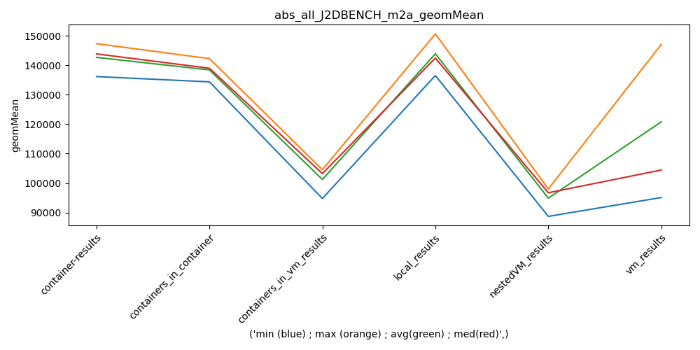
all runs of one jdk were made MEDIAN before processing
j2dbench.geom
all J2DBENCH j2dbench.geom where all runs of one jdk were made MEDIAN before processing
MIN 136154.0 container-results
MIN 134336.0 containers_in_container
MIN 94445.0 containers_in_vm_results
MIN 136016.0 local_results
MIN 89074.0 nestedVM_results
MIN 94446.0 vm_results
MAX 147289.0 container-results
MAX 142287.0 containers_in_container
MAX 104719.0 containers_in_vm_results
MAX 150697.0 local_results
MAX 98073.0 nestedVM_results
MAX 147141.0 vm_results
AVG 142662.16216216216 container-results
AVG 138406.2972972973 containers_in_container
AVG 101335.05405405405 containers_in_vm_results
AVG 143917.62857142856 local_results
AVG 94903.77142857143 nestedVM_results
AVG 120822.31428571428 vm_results
MED 143821.0 container-results
MED 138960.0 containers_in_container
MED 103088.0 containers_in_vm_results
MED 142418.0 local_results
MED 96758.0 nestedVM_results
MED 104689.0 vm_results
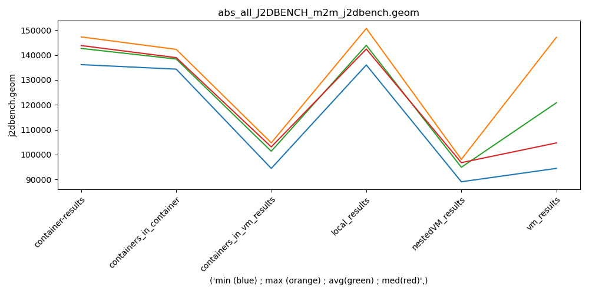
geomMean of all keys (benchmark meassured relativre accuracy)
{'MIN': [136154.0, 134336.0, 94445.0, 136016.0, 89074.0, 94446.0], 'MAX': [147289.0, 142287.0, 104719.0, 150697.0, 98073.0, 147141.0], 'AVG': [142662.16216216216, 138406.2972972973, 101335.05405405405, 143917.62857142856, 94903.77142857143, 120822.31428571428], 'MED': [143821.0, 138960.0, 103088.0, 142418.0, 96758.0, 104689.0]}
all J2DBENCH geomMean where all runs of one jdk were made MEDIAN before processing
MIN 136154.0 container-results
MIN 134336.0 containers_in_container
MIN 94445.0 containers_in_vm_results
MIN 136016.0 local_results
MIN 89074.0 nestedVM_results
MIN 94446.0 vm_results
MAX 147289.0 container-results
MAX 142287.0 containers_in_container
MAX 104719.0 containers_in_vm_results
MAX 150697.0 local_results
MAX 98073.0 nestedVM_results
MAX 147141.0 vm_results
AVG 142662.16216216216 container-results
AVG 138406.2972972973 containers_in_container
AVG 101335.05405405405 containers_in_vm_results
AVG 143917.62857142856 local_results
AVG 94903.77142857143 nestedVM_results
AVG 120822.31428571428 vm_results
MED 143821.0 container-results
MED 138960.0 containers_in_container
MED 103088.0 containers_in_vm_results
MED 142418.0 local_results
MED 96758.0 nestedVM_results
MED 104689.0 vm_results
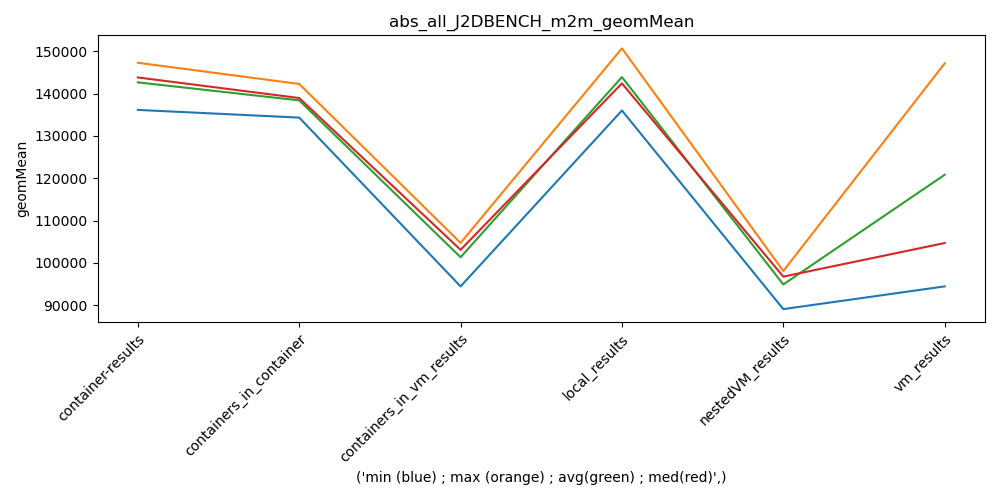
geomMean of all metrics from geomMean of all keys
{'MIN': [136071.3549939892, 134274.9689766326, 94241.85107137507, 135691.8378798464, 88247.9601617622, 94648.6329344724], 'MAX': [147409.6426149877, 142351.93956494966, 104826.60711754345, 150689.32803224502, 98204.95711809296, 147154.23204482588], 'AVG': [142659.4251978831, 138397.3586038537, 101275.99206313443, 143887.5660490753, 94879.89183112982, 120742.13281061174], 'MED': [143824.19984119793, 138949.59907904096, 103105.70302897994, 142456.1226932731, 96672.6960959203, 104717.29987402329]}
all J2DBENCH geomMean geomMean
MIN 136071.3549939892 container-results
MIN 134274.9689766326 containers_in_container
MIN 94241.85107137507 containers_in_vm_results
MIN 135691.8378798464 local_results
MIN 88247.9601617622 nestedVM_results
MIN 94648.6329344724 vm_results
MAX 147409.6426149877 container-results
MAX 142351.93956494966 containers_in_container
MAX 104826.60711754345 containers_in_vm_results
MAX 150689.32803224502 local_results
MAX 98204.95711809296 nestedVM_results
MAX 147154.23204482588 vm_results
AVG 142659.4251978831 container-results
AVG 138397.3586038537 containers_in_container
AVG 101275.99206313443 containers_in_vm_results
AVG 143887.5660490753 local_results
AVG 94879.89183112982 nestedVM_results
AVG 120742.13281061174 vm_results
MED 143824.19984119793 container-results
MED 138949.59907904096 containers_in_container
MED 103105.70302897994 containers_in_vm_results
MED 142456.1226932731 local_results
MED 96672.6960959203 nestedVM_results
MED 104717.29987402329 vm_results
JMH
all runs of one jdk are treated as INDIVIDUAL items
geom
all JMH geom where all runs of one jdk are treated as INDIVIDUAL items
MIN 397.0 container-results
MIN 402.0 containers_in_container
MIN 324.0 containers_in_vm_results
MIN 401.0 local_results
MIN 324.0 nestedVM_results
MIN 345.0 vm_results
MAX 439.0 container-results
MAX 439.0 containers_in_container
MAX 402.0 containers_in_vm_results
MAX 465.0 local_results
MAX 349.0 nestedVM_results
MAX 401.0 vm_results
AVG 426.37297297297295 container-results
AVG 426.9351351351351 containers_in_container
AVG 364.5879120879121 containers_in_vm_results
AVG 426.5135135135135 local_results
AVG 340.33142857142855 nestedVM_results
AVG 377.3131868131868 vm_results
MED 427.0 container-results
MED 427.0 containers_in_container
MED 356.0 containers_in_vm_results
MED 425.0 local_results
MED 341.0 nestedVM_results
MED 372.0 vm_results
geomMean of all keys (benchmark meassured relativre accuracy)
{'MIN': [397.0, 402.0, 324.0, 401.0, 324.0, 345.0], 'MAX': [439.0, 439.0, 402.0, 465.0, 349.0, 401.0], 'AVG': [426.37297297297295, 426.9351351351351, 364.5879120879121, 426.5135135135135, 340.33142857142855, 377.3131868131868], 'MED': [427.0, 427.0, 356.0, 425.0, 341.0, 372.0]}
all JMH geomMean where all runs of one jdk are treated as INDIVIDUAL items
MIN 397.0 container-results
MIN 402.0 containers_in_container
MIN 324.0 containers_in_vm_results
MIN 401.0 local_results
MIN 324.0 nestedVM_results
MIN 345.0 vm_results
MAX 439.0 container-results
MAX 439.0 containers_in_container
MAX 402.0 containers_in_vm_results
MAX 465.0 local_results
MAX 349.0 nestedVM_results
MAX 401.0 vm_results
AVG 426.37297297297295 container-results
AVG 426.9351351351351 containers_in_container
AVG 364.5879120879121 containers_in_vm_results
AVG 426.5135135135135 local_results
AVG 340.33142857142855 nestedVM_results
AVG 377.3131868131868 vm_results
MED 427.0 container-results
MED 427.0 containers_in_container
MED 356.0 containers_in_vm_results
MED 425.0 local_results
MED 341.0 nestedVM_results
MED 372.0 vm_results

all runs of one jdk were made AVARAGE before processing
geom
all JMH geom where all runs of one jdk were made AVARAGE before processing
MIN 398.8 container-results
MIN 404.0 containers_in_container
MIN 327.0 containers_in_vm_results
MIN 404.0 local_results
MIN 324.75 nestedVM_results
MIN 345.8 vm_results
MAX 436.6 container-results
MAX 436.6 containers_in_container
MAX 399.6 containers_in_vm_results
MAX 439.6 local_results
MAX 347.8 nestedVM_results
MAX 399.4 vm_results
AVG 426.37297297297295 container-results
AVG 426.93513513513517 containers_in_container
AVG 364.37567567567567 containers_in_vm_results
AVG 426.5135135135135 local_results
AVG 340.3346846846847 nestedVM_results
AVG 377.5364864864865 vm_results
MED 427.2 container-results
MED 427.2 containers_in_container
MED 355.8 containers_in_vm_results
MED 424.8 local_results
MED 341.0 nestedVM_results
MED 371.4 vm_results
geomMean of all keys (benchmark meassured relativre accuracy)
{'MIN': [398.8, 404.0, 327.0, 404.0, 324.75, 345.8], 'MAX': [436.6, 436.6, 399.6, 439.6, 347.8, 399.4], 'AVG': [426.37297297297295, 426.93513513513517, 364.37567567567567, 426.5135135135135, 340.3346846846847, 377.5364864864865], 'MED': [427.2, 427.2, 355.8, 424.8, 341.0, 371.4]}
all JMH geomMean where all runs of one jdk were made AVARAGE before processing
MIN 398.8 container-results
MIN 404.0 containers_in_container
MIN 327.0 containers_in_vm_results
MIN 404.0 local_results
MIN 324.75 nestedVM_results
MIN 345.8 vm_results
MAX 436.6 container-results
MAX 436.6 containers_in_container
MAX 399.6 containers_in_vm_results
MAX 439.6 local_results
MAX 347.8 nestedVM_results
MAX 399.4 vm_results
AVG 426.37297297297295 container-results
AVG 426.93513513513517 containers_in_container
AVG 364.37567567567567 containers_in_vm_results
AVG 426.5135135135135 local_results
AVG 340.3346846846847 nestedVM_results
AVG 377.5364864864865 vm_results
MED 427.2 container-results
MED 427.2 containers_in_container
MED 355.8 containers_in_vm_results
MED 424.8 local_results
MED 341.0 nestedVM_results
MED 371.4 vm_results
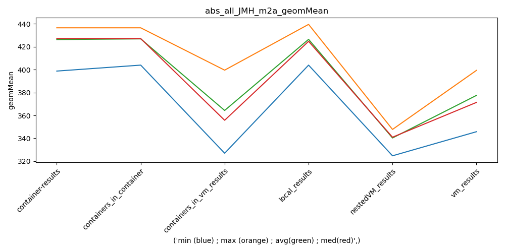
all runs of one jdk were made MEDIAN before processing
geom
all JMH geom where all runs of one jdk were made MEDIAN before processing
MIN 399.0 container-results
MIN 404.0 containers_in_container
MIN 326.0 containers_in_vm_results
MIN 405.0 local_results
MIN 325.0 nestedVM_results
MIN 346.0 vm_results
MAX 437.0 container-results
MAX 436.0 containers_in_container
MAX 400.0 containers_in_vm_results
MAX 436.0 local_results
MAX 348.0 nestedVM_results
MAX 399.0 vm_results
AVG 426.6756756756757 container-results
AVG 426.9189189189189 containers_in_container
AVG 364.3243243243243 containers_in_vm_results
AVG 426.13513513513516 local_results
AVG 340.4864864864865 nestedVM_results
AVG 377.5945945945946 vm_results
MED 427.0 container-results
MED 428.0 containers_in_container
MED 356.0 containers_in_vm_results
MED 425.0 local_results
MED 341.0 nestedVM_results
MED 372.0 vm_results

geomMean of all keys (benchmark meassured relativre accuracy)
{'MIN': [399.0, 404.0, 326.0, 405.0, 325.0, 346.0], 'MAX': [437.0, 436.0, 400.0, 436.0, 348.0, 399.0], 'AVG': [426.6756756756757, 426.9189189189189, 364.3243243243243, 426.13513513513516, 340.4864864864865, 377.5945945945946], 'MED': [427.0, 428.0, 356.0, 425.0, 341.0, 372.0]}
all JMH geomMean where all runs of one jdk were made MEDIAN before processing
MIN 399.0 container-results
MIN 404.0 containers_in_container
MIN 326.0 containers_in_vm_results
MIN 405.0 local_results
MIN 325.0 nestedVM_results
MIN 346.0 vm_results
MAX 437.0 container-results
MAX 436.0 containers_in_container
MAX 400.0 containers_in_vm_results
MAX 436.0 local_results
MAX 348.0 nestedVM_results
MAX 399.0 vm_results
AVG 426.6756756756757 container-results
AVG 426.9189189189189 containers_in_container
AVG 364.3243243243243 containers_in_vm_results
AVG 426.13513513513516 local_results
AVG 340.4864864864865 nestedVM_results
AVG 377.5945945945946 vm_results
MED 427.0 container-results
MED 428.0 containers_in_container
MED 356.0 containers_in_vm_results
MED 425.0 local_results
MED 341.0 nestedVM_results
MED 372.0 vm_results

geomMean of all metrics from geomMean of all keys
{'MIN': [398.2656501113081, 403.33223018769525, 325.66427605764414, 403.3297467218951, 324.5830550705661, 345.59972980410106], 'MAX': [437.532075014371, 437.1980809341795, 400.5319589023698, 446.6826067923442, 348.26627130701513, 399.79906699838966], 'AVG': [426.47385000515123, 426.9297296612906, 364.42928617108197, 426.3873500717006, 340.38419222801, 377.48140313873307], 'MED': [427.0666562608391, 427.3997817128091, 355.9333208450408, 424.933322873082, 340.9999999999999, 371.79989237666416]}
all JMH geomMean geomMean
MIN 398.2656501113081 container-results
MIN 403.33223018769525 containers_in_container
MIN 325.66427605764414 containers_in_vm_results
MIN 403.3297467218951 local_results
MIN 324.5830550705661 nestedVM_results
MIN 345.59972980410106 vm_results
MAX 437.532075014371 container-results
MAX 437.1980809341795 containers_in_container
MAX 400.5319589023698 containers_in_vm_results
MAX 446.6826067923442 local_results
MAX 348.26627130701513 nestedVM_results
MAX 399.79906699838966 vm_results
AVG 426.47385000515123 container-results
AVG 426.9297296612906 containers_in_container
AVG 364.42928617108197 containers_in_vm_results
AVG 426.3873500717006 local_results
AVG 340.38419222801 nestedVM_results
AVG 377.48140313873307 vm_results
MED 427.0666562608391 container-results
MED 427.3997817128091 containers_in_container
MED 355.9333208450408 containers_in_vm_results
MED 424.933322873082 local_results
MED 340.9999999999999 nestedVM_results
MED 371.79989237666416 vm_results

RADARGUNs1
all runs of one jdk are treated as INDIVIDUAL items
BasicOperations.Get.Throughput=
all RADARGUNs1 BasicOperations.Get.Throughput= where all runs of one jdk are treated as INDIVIDUAL items
MIN 2648167.0 container-results
MIN 2691672.0 containers_in_container
MIN 1927367.0 containers_in_vm_results
MIN 2759139.0 local_results
MIN 670113.0 nestedVM_results
MIN 2040746.0 vm_results
MAX 3441304.0 container-results
MAX 3469985.0 containers_in_container
MAX 2863176.0 containers_in_vm_results
MAX 3495524.0 local_results
MAX 741475.0 nestedVM_results
MAX 2900286.0 vm_results
AVG 3166787.8540540542 container-results
AVG 3191718.0659340657 containers_in_container
AVG 2449801.1783783785 containers_in_vm_results
AVG 3191025.293103448 local_results
AVG 707232.2594594595 nestedVM_results
AVG 2498807.843243243 vm_results
MED 3186448.0 container-results
MED 3225754.0 containers_in_container
MED 2380942.0 containers_in_vm_results
MED 3213561.0 local_results
MED 705807.0 nestedVM_results
MED 2469913.0 vm_results
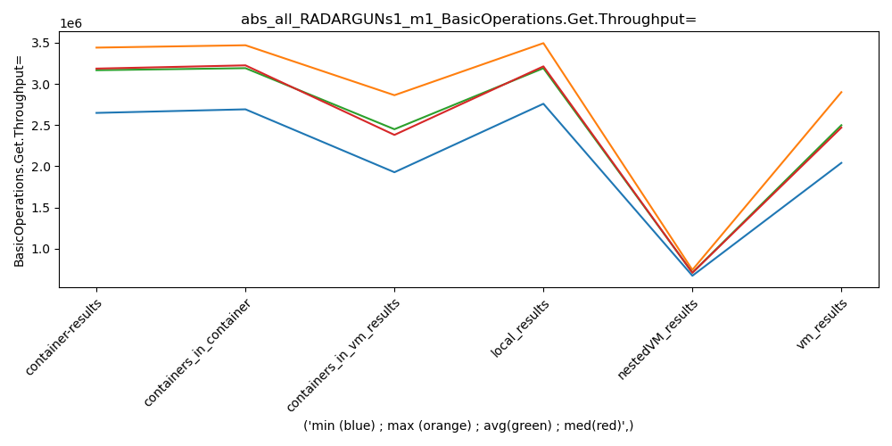
BasicOperations.Put.Throughput=
all RADARGUNs1 BasicOperations.Put.Throughput= where all runs of one jdk are treated as INDIVIDUAL items
MIN 662072.0 container-results
MIN 672844.0 containers_in_container
MIN 481848.0 containers_in_vm_results
MIN 689797.0 local_results
MIN 167528.0 nestedVM_results
MIN 510215.0 vm_results
MAX 860295.0 container-results
MAX 867491.0 containers_in_container
MAX 715770.0 containers_in_vm_results
MAX 873889.0 local_results
MAX 185386.0 nestedVM_results
MAX 725051.0 vm_results
AVG 791701.2594594595 container-results
AVG 797931.6648351648 containers_in_container
AVG 612448.5405405406 containers_in_vm_results
AVG 797758.275862069 local_results
AVG 176809.87567567566 nestedVM_results
AVG 624699.145945946 vm_results
MED 796587.0 container-results
MED 806465.0 containers_in_container
MED 595231.0 containers_in_vm_results
MED 803423.0 local_results
MED 176454.0 nestedVM_results
MED 617451.0 vm_results
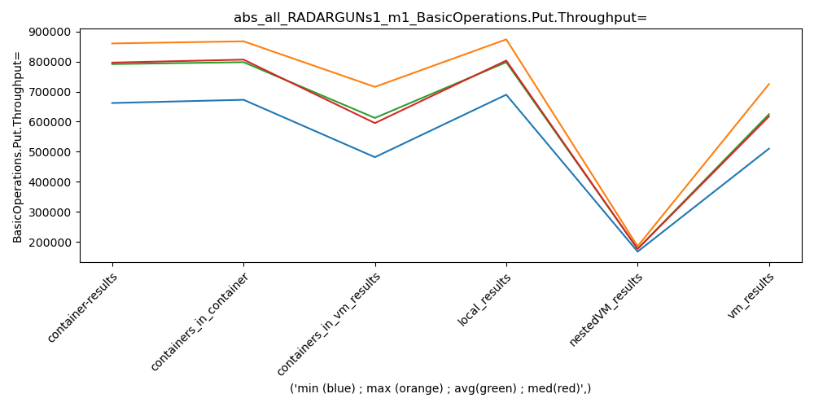
BasicOperations.Put.ResponseTimeMean
all RADARGUNs1 BasicOperations.Put.ResponseTimeMean where all runs of one jdk are treated as INDIVIDUAL items
MIN -4416.0 container-results
MIN -4385.0 containers_in_container
MIN -7065.0 containers_in_vm_results
MIN -4279.0 local_results
MIN -20742.0 nestedVM_results
MIN -7630.0 vm_results
MAX -3595.0 container-results
MAX -3555.0 containers_in_container
MAX -5166.0 containers_in_vm_results
MAX -3576.0 local_results
MAX -16944.0 nestedVM_results
MAX -4989.0 vm_results
AVG -3950.4 container-results
AVG -3943.5824175824177 containers_in_container
AVG -6014.459459459459 containers_in_vm_results
AVG -3917.109195402299 local_results
AVG -17854.52972972973 nestedVM_results
AVG -6268.962162162162 vm_results
MED -3939.0 container-results
MED -3945.0 containers_in_container
MED -6080.0 containers_in_vm_results
MED -3922.0 local_results
MED -17844.0 nestedVM_results
MED -6580.0 vm_results
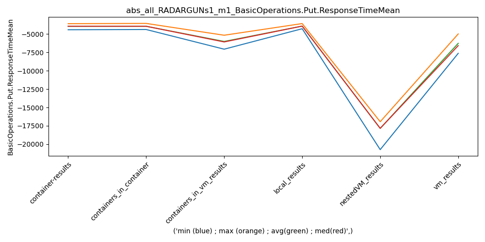
BasicOperations.Get.ResponseTimeMean
all RADARGUNs1 BasicOperations.Get.ResponseTimeMean where all runs of one jdk are treated as INDIVIDUAL items
MIN -1371.0 container-results
MIN -1194.0 containers_in_container
MIN -1758.0 containers_in_vm_results
MIN -1325.0 local_results
MIN -6035.0 nestedVM_results
MIN -1801.0 vm_results
MAX -1003.0 container-results
MAX -996.0 containers_in_container
MAX -1251.0 containers_in_vm_results
MAX -1003.0 local_results
MAX -5512.0 nestedVM_results
MAX -1222.0 vm_results
AVG -1114.8054054054055 container-results
AVG -1101.9615384615386 containers_in_container
AVG -1495.6918918918918 containers_in_vm_results
AVG -1110.5977011494253 local_results
AVG -5770.4 nestedVM_results
AVG -1439.708108108108 vm_results
MED -1111.0 container-results
MED -1102.0 containers_in_container
MED -1532.0 containers_in_vm_results
MED -1108.0 local_results
MED -5769.0 nestedVM_results
MED -1443.0 vm_results
geomMean of all keys (benchmark meassured relativre accuracy)
{'MIN': [57079.383996052544, 55491.64653957729, 58277.56254053953, 57314.33548704302, 61226.697941546896, 61502.83097191516], 'MAX': [57160.04558364025, 57137.71647323717, 60326.52539129812, 57532.96430948782, 59858.3373564459, 59837.5113655881], 'AVG': [57644.1329557513, 57678.22608006029, 60612.16490423471, 57687.405020445934, 59910.88417028668, 61265.850656262905], 'MED': [57731.12524642962, 57991.099458134006, 60276.65944182509, 57875.47115314497, 59838.06699078951, 61687.06318943876]}
all RADARGUNs1 geomMean where all runs of one jdk are treated as INDIVIDUAL items
MIN 57079.383996052544 container-results
MIN 55491.64653957729 containers_in_container
MIN 58277.56254053953 containers_in_vm_results
MIN 57314.33548704302 local_results
MIN 61226.697941546896 nestedVM_results
MIN 61502.83097191516 vm_results
MAX 57160.04558364025 container-results
MAX 57137.71647323717 containers_in_container
MAX 60326.52539129812 containers_in_vm_results
MAX 57532.96430948782 local_results
MAX 59858.3373564459 nestedVM_results
MAX 59837.5113655881 vm_results
AVG 57644.1329557513 container-results
AVG 57678.22608006029 containers_in_container
AVG 60612.16490423471 containers_in_vm_results
AVG 57687.405020445934 local_results
AVG 59910.88417028668 nestedVM_results
AVG 61265.850656262905 vm_results
MED 57731.12524642962 container-results
MED 57991.099458134006 containers_in_container
MED 60276.65944182509 containers_in_vm_results
MED 57875.47115314497 local_results
MED 59838.06699078951 nestedVM_results
MED 61687.06318943876 vm_results
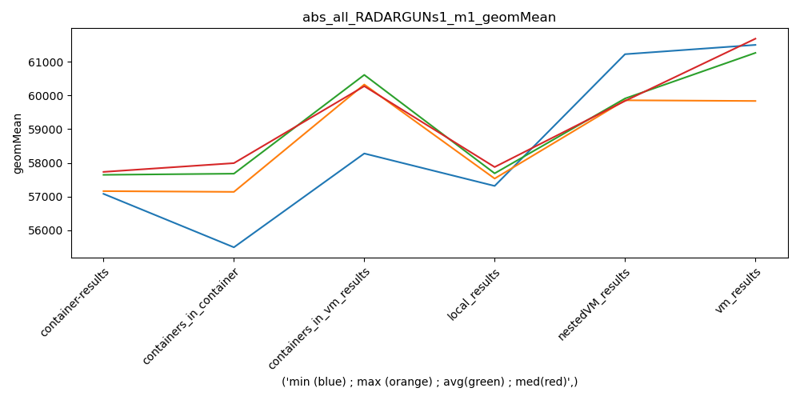
all runs of one jdk were made AVARAGE before processing
BasicOperations.Get.Throughput=
all RADARGUNs1 BasicOperations.Get.Throughput= where all runs of one jdk were made AVARAGE before processing
MIN 2861303.6 container-results
MIN 2922637.0 containers_in_container
MIN 2160122.2 containers_in_vm_results
MIN 2922411.2 local_results
MIN 687070.6 nestedVM_results
MIN 2199656.2 vm_results
MAX 3374991.0 container-results
MAX 3391761.6 containers_in_container
MAX 2804774.4 containers_in_vm_results
MAX 3434464.8 local_results
MAX 729660.2 nestedVM_results
MAX 2794694.2 vm_results
AVG 3166787.854054054 container-results
AVG 3190287.1378378375 containers_in_container
AVG 2449801.178378378 containers_in_vm_results
AVG 3189869.1542857145 local_results
AVG 707232.2594594595 nestedVM_results
AVG 2498807.843243243 vm_results
MED 3182983.2 container-results
MED 3190201.2 containers_in_container
MED 2349744.0 containers_in_vm_results
MED 3199330.0 local_results
MED 702304.2 nestedVM_results
MED 2447311.6 vm_results
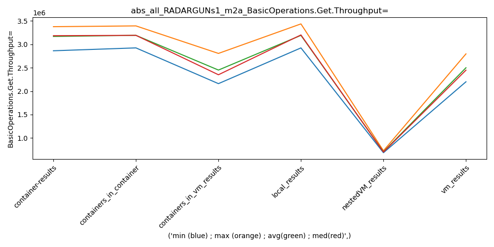
BasicOperations.Put.Throughput=
all RADARGUNs1 BasicOperations.Put.Throughput= where all runs of one jdk were made AVARAGE before processing
MIN 715324.8 container-results
MIN 730686.2 containers_in_container
MIN 540041.6 containers_in_vm_results
MIN 730628.0 local_results
MIN 171766.8 nestedVM_results
MIN 549914.4 vm_results
MAX 843765.2 container-results
MAX 847964.0 containers_in_container
MAX 701212.6 containers_in_vm_results
MAX 858638.0 local_results
MAX 182431.0 nestedVM_results
MAX 698639.0 vm_results
AVG 791701.2594594595 container-results
AVG 797574.8810810811 containers_in_container
AVG 612448.5405405406 containers_in_vm_results
AVG 797469.2785714286 local_results
AVG 176809.8756756757 nestedVM_results
AVG 624699.1459459459 vm_results
MED 795777.4 container-results
MED 797585.2 containers_in_container
MED 587418.6 containers_in_vm_results
MED 799836.6 local_results
MED 175582.8 nestedVM_results
MED 611807.8 vm_results
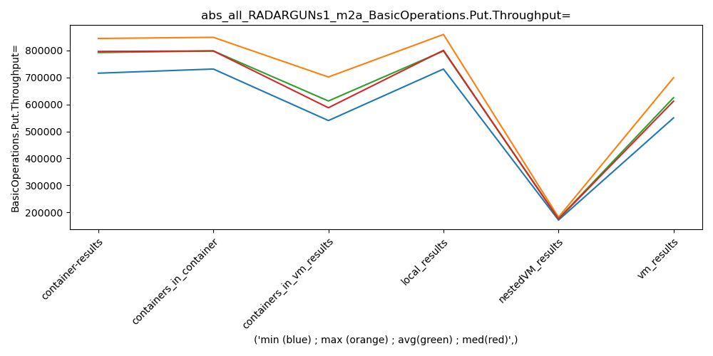
BasicOperations.Put.ResponseTimeMean
all RADARGUNs1 BasicOperations.Put.ResponseTimeMean where all runs of one jdk were made AVARAGE before processing
MIN -4173.2 container-results
MIN -4156.0 containers_in_container
MIN -6658.6 containers_in_vm_results
MIN -4190.75 local_results
MIN -18882.0 nestedVM_results
MIN -7370.8 vm_results
MAX -3675.2 container-results
MAX -3637.6 containers_in_container
MAX -5224.8 containers_in_vm_results
MAX -3632.8 local_results
MAX -17191.6 nestedVM_results
MAX -5200.8 vm_results
AVG -3950.3999999999996 container-results
AVG -3943.337837837838 containers_in_container
AVG -6014.459459459459 containers_in_vm_results
AVG -3918.6728571428566 local_results
AVG -17854.52972972973 nestedVM_results
AVG -6268.962162162163 vm_results
MED -3952.8 container-results
MED -3950.6 containers_in_container
MED -6070.0 containers_in_vm_results
MED -3931.8 local_results
MED -17874.0 nestedVM_results
MED -6681.0 vm_results
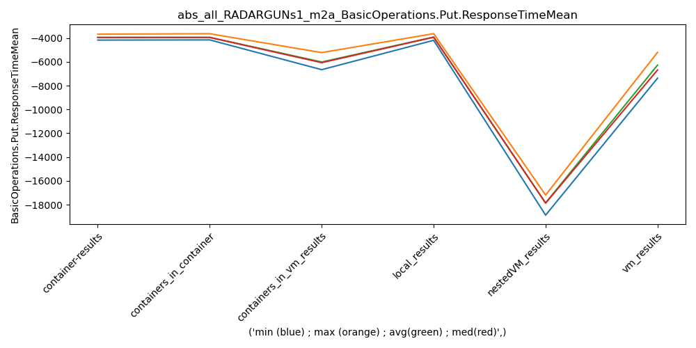
BasicOperations.Get.ResponseTimeMean
all RADARGUNs1 BasicOperations.Get.ResponseTimeMean where all runs of one jdk were made AVARAGE before processing
MIN -1169.2 container-results
MIN -1153.8 containers_in_container
MIN -1669.4 containers_in_vm_results
MIN -1185.4 local_results
MIN -5899.2 nestedVM_results
MIN -1653.0 vm_results
MAX -1024.6 container-results
MAX -1015.8 containers_in_container
MAX -1266.6 containers_in_vm_results
MAX -1017.4 local_results
MAX -5579.4 nestedVM_results
MAX -1260.6 vm_results
AVG -1114.8054054054055 container-results
AVG -1102.2864864864864 containers_in_container
AVG -1495.6918918918918 containers_in_vm_results
AVG -1111.0 local_results
AVG -5770.4 nestedVM_results
AVG -1439.708108108108 vm_results
MED -1108.6 container-results
MED -1106.0 containers_in_container
MED -1531.2 containers_in_vm_results
MED -1114.0 local_results
MED -5778.8 nestedVM_results
MED -1453.4 vm_results

geomMean of all keys (benchmark meassured relativre accuracy)
{'MIN': [56215.529695403435, 56568.93000550079, 60008.42354981291, 57068.77862858076, 60213.71545404598, 61959.705524652374], 'MAX': [57224.55043639817, 57096.10348262749, 60063.992973807246, 57458.01245801254, 59776.53995007003, 59814.7984568232], 'AVG': [57644.132955751295, 57668.66893794298, 60612.164904234705, 57687.9325202122, 59910.88417028668, 61265.850656262905], 'MED': [57720.012390366785, 57743.530922980346, 59847.6654022732, 57860.7728451792, 59740.198792578245, 61749.397785236775]}
all RADARGUNs1 geomMean where all runs of one jdk were made AVARAGE before processing
MIN 56215.529695403435 container-results
MIN 56568.93000550079 containers_in_container
MIN 60008.42354981291 containers_in_vm_results
MIN 57068.77862858076 local_results
MIN 60213.71545404598 nestedVM_results
MIN 61959.705524652374 vm_results
MAX 57224.55043639817 container-results
MAX 57096.10348262749 containers_in_container
MAX 60063.992973807246 containers_in_vm_results
MAX 57458.01245801254 local_results
MAX 59776.53995007003 nestedVM_results
MAX 59814.7984568232 vm_results
AVG 57644.132955751295 container-results
AVG 57668.66893794298 containers_in_container
AVG 60612.164904234705 containers_in_vm_results
AVG 57687.9325202122 local_results
AVG 59910.88417028668 nestedVM_results
AVG 61265.850656262905 vm_results
MED 57720.012390366785 container-results
MED 57743.530922980346 containers_in_container
MED 59847.6654022732 containers_in_vm_results
MED 57860.7728451792 local_results
MED 59740.198792578245 nestedVM_results
MED 61749.397785236775 vm_results
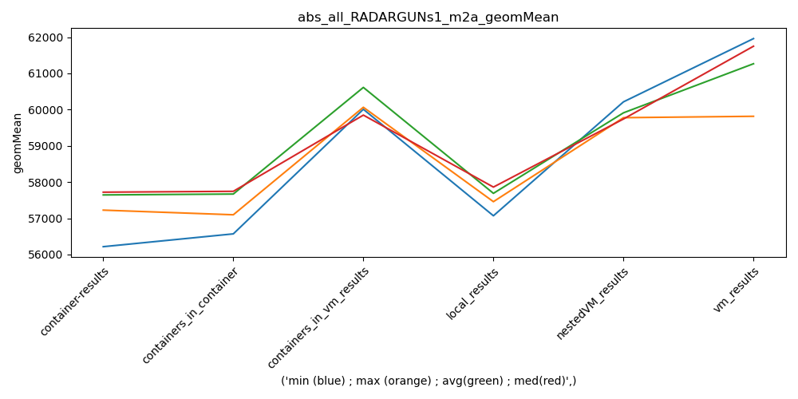
all runs of one jdk were made MEDIAN before processing
BasicOperations.Get.Throughput=
all RADARGUNs1 BasicOperations.Get.Throughput= where all runs of one jdk were made MEDIAN before processing
MIN 2785919.0 container-results
MIN 2783345.0 containers_in_container
MIN 2178538.0 containers_in_vm_results
MIN 2886224.0 local_results
MIN 687754.0 nestedVM_results
MIN 2182818.0 vm_results
MAX 3411192.0 container-results
MAX 3402524.0 containers_in_container
MAX 2828935.0 containers_in_vm_results
MAX 3460878.0 local_results
MAX 729789.0 nestedVM_results
MAX 2803999.0 vm_results
AVG 3186902.6486486485 container-results
AVG 3215927.4594594594 containers_in_container
AVG 2468957.864864865 containers_in_vm_results
AVG 3208136.1714285715 local_results
AVG 708749.7297297297 nestedVM_results
AVG 2509397.5675675673 vm_results
MED 3192653.0 container-results
MED 3219025.0 containers_in_container
MED 2340981.0 containers_in_vm_results
MED 3214399.0 local_results
MED 706780.0 nestedVM_results
MED 2487703.0 vm_results

BasicOperations.Put.Throughput=
all RADARGUNs1 BasicOperations.Put.Throughput= where all runs of one jdk were made MEDIAN before processing
MIN 696475.0 container-results
MIN 695902.0 containers_in_container
MIN 544648.0 containers_in_vm_results
MIN 721604.0 local_results
MIN 171959.0 nestedVM_results
MIN 545652.0 vm_results
MAX 852789.0 container-results
MAX 850620.0 containers_in_container
MAX 707194.0 containers_in_vm_results
MAX 865255.0 local_results
MAX 182465.0 nestedVM_results
MAX 700981.0 vm_results
AVG 796730.2702702703 container-results
AVG 803986.6756756756 containers_in_container
AVG 617228.3513513514 containers_in_vm_results
AVG 802043.2571428572 local_results
AVG 177192.0 nestedVM_results
AVG 627341.027027027 vm_results
MED 798110.0 container-results
MED 804679.0 containers_in_container
MED 585241.0 containers_in_vm_results
MED 803669.0 local_results
MED 176672.0 nestedVM_results
MED 621959.0 vm_results
BasicOperations.Put.ResponseTimeMean
all RADARGUNs1 BasicOperations.Put.ResponseTimeMean where all runs of one jdk were made MEDIAN before processing
MIN -4206.0 container-results
MIN -4136.0 containers_in_container
MIN -6675.0 containers_in_vm_results
MIN -4212.0 local_results
MIN -18593.0 nestedVM_results
MIN -7372.0 vm_results
MAX -3691.0 container-results
MAX -3655.0 containers_in_container
MAX -5218.0 containers_in_vm_results
MAX -3645.0 local_results
MAX -17193.0 nestedVM_results
MAX -5238.0 vm_results
AVG -3952.4054054054054 container-results
AVG -3938.864864864865 containers_in_container
AVG -5993.1621621621625 containers_in_vm_results
AVG -3912.4285714285716 local_results
AVG -17819.216216216217 nestedVM_results
AVG -6272.216216216216 vm_results
MED -3965.0 container-results
MED -3958.0 containers_in_container
MED -6066.0 containers_in_vm_results
MED -3928.0 local_results
MED -17868.0 nestedVM_results
MED -6708.0 vm_results

BasicOperations.Get.ResponseTimeMean
all RADARGUNs1 BasicOperations.Get.ResponseTimeMean where all runs of one jdk were made MEDIAN before processing
MIN -1162.0 container-results
MIN -1149.0 containers_in_container
MIN -1738.0 containers_in_vm_results
MIN -1185.0 local_results
MIN -5927.0 nestedVM_results
MIN -1682.0 vm_results
MAX -1023.0 container-results
MAX -1016.0 containers_in_container
MAX -1269.0 containers_in_vm_results
MAX -1023.0 local_results
MAX -5587.0 nestedVM_results
MAX -1271.0 vm_results
AVG -1111.6486486486488 container-results
AVG -1101.5945945945946 containers_in_container
AVG -1493.8648648648648 containers_in_vm_results
AVG -1107.7142857142858 local_results
AVG -5765.72972972973 nestedVM_results
AVG -1433.2432432432433 vm_results
MED -1111.0 container-results
MED -1104.0 containers_in_container
MED -1532.0 containers_in_vm_results
MED -1116.0 local_results
MED -5781.0 nestedVM_results
MED -1447.0 vm_results
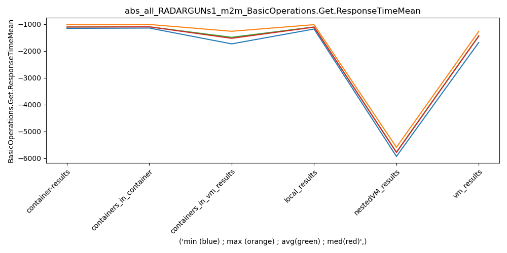
geomMean of all keys (benchmark meassured relativre accuracy)
{'MIN': [55492.89134232338, 55081.26695424554, 60910.97113812636, 56781.76913691518, 60084.24496627705, 61992.071523072795], 'MAX': [57569.420564048916, 57257.11598912088, 60329.78925985841, 57806.39598134377, 59803.527944707064, 60144.897130486504], 'AVG': [57793.27239201481, 57874.46550901007, 60775.94518045615, 57787.13869445383, 59933.54599778552, 61334.315354817314], 'MED': [57881.92024187434, 58002.667925564696, 59734.2549148424, 58010.040496337824, 59928.405483312104, 62252.30948892695]}
all RADARGUNs1 geomMean where all runs of one jdk were made MEDIAN before processing
MIN 55492.89134232338 container-results
MIN 55081.26695424554 containers_in_container
MIN 60910.97113812636 containers_in_vm_results
MIN 56781.76913691518 local_results
MIN 60084.24496627705 nestedVM_results
MIN 61992.071523072795 vm_results
MAX 57569.420564048916 container-results
MAX 57257.11598912088 containers_in_container
MAX 60329.78925985841 containers_in_vm_results
MAX 57806.39598134377 local_results
MAX 59803.527944707064 nestedVM_results
MAX 60144.897130486504 vm_results
AVG 57793.27239201481 container-results
AVG 57874.46550901007 containers_in_container
AVG 60775.94518045615 containers_in_vm_results
AVG 57787.13869445383 local_results
AVG 59933.54599778552 nestedVM_results
AVG 61334.315354817314 vm_results
MED 57881.92024187434 container-results
MED 58002.667925564696 containers_in_container
MED 59734.2549148424 containers_in_vm_results
MED 58010.040496337824 local_results
MED 59928.405483312104 nestedVM_results
MED 62252.30948892695 vm_results
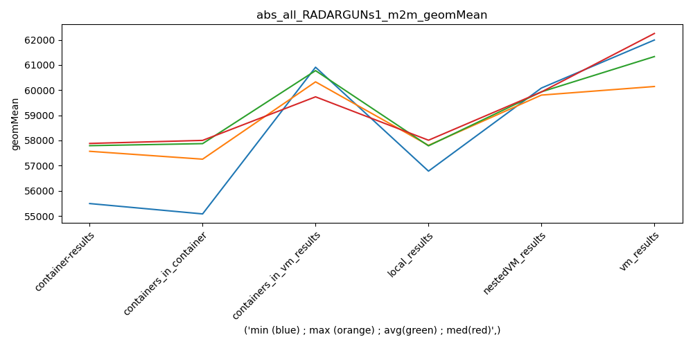
geomMean of all metrics from geomMean of all keys
{'MIN': [56258.866707712776, 55710.428501613686, 59722.27920929049, 57054.54588452451, 60506.07164453128, 61817.79835661272], 'MAX': [57317.72415719408, 57163.604597818, 60239.97368891006, 57598.929847695734, 59812.79207047991, 59932.213465737965], 'AVG': [57693.80328934519, 57740.37567854849, 60666.70923098313, 57720.806372380954, 59918.4371605376, 61288.66372667437], 'MED': [57777.638798182146, 57912.30930616351, 59952.40552651914, 57915.38923417315, 59835.50772837115, 61895.74049702444]}
all RADARGUNs1 geomMean geomMean
MIN 56258.866707712776 container-results
MIN 55710.428501613686 containers_in_container
MIN 59722.27920929049 containers_in_vm_results
MIN 57054.54588452451 local_results
MIN 60506.07164453128 nestedVM_results
MIN 61817.79835661272 vm_results
MAX 57317.72415719408 container-results
MAX 57163.604597818 containers_in_container
MAX 60239.97368891006 containers_in_vm_results
MAX 57598.929847695734 local_results
MAX 59812.79207047991 nestedVM_results
MAX 59932.213465737965 vm_results
AVG 57693.80328934519 container-results
AVG 57740.37567854849 containers_in_container
AVG 60666.70923098313 containers_in_vm_results
AVG 57720.806372380954 local_results
AVG 59918.4371605376 nestedVM_results
AVG 61288.66372667437 vm_results
MED 57777.638798182146 container-results
MED 57912.30930616351 containers_in_container
MED 59952.40552651914 containers_in_vm_results
MED 57915.38923417315 local_results
MED 59835.50772837115 nestedVM_results
MED 61895.74049702444 vm_results
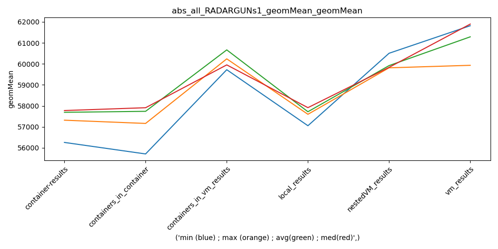
RADARGUNs3
all runs of one jdk are treated as INDIVIDUAL items
BasicOperations.Get.Throughput=
all RADARGUNs3 BasicOperations.Get.Throughput= where all runs of one jdk are treated as INDIVIDUAL items
MIN 86448.0 container-results
MIN 82946.0 containers_in_container
MIN 35188.0 containers_in_vm_results
MIN 84635.0 local_results
MIN 18839.0 nestedVM_results
MIN 42488.0 vm_results
MAX 97058.0 container-results
MAX 91939.0 containers_in_container
MAX 42904.0 containers_in_vm_results
MAX 98653.0 local_results
MAX 27900.0 nestedVM_results
MAX 53433.0 vm_results
AVG 90811.6972972973 container-results
AVG 86414.57142857143 containers_in_container
AVG 39179.414364640885 containers_in_vm_results
AVG 90426.17142857143 local_results
AVG 22417.03804347826 nestedVM_results
AVG 47212.291891891895 vm_results
MED 90304.0 container-results
MED 85997.0 containers_in_container
MED 38898.0 containers_in_vm_results
MED 90938.0 local_results
MED 20534.0 nestedVM_results
MED 46318.0 vm_results

BasicOperations.Put.Throughput=
all RADARGUNs3 BasicOperations.Put.Throughput= where all runs of one jdk are treated as INDIVIDUAL items
MIN 21612.0 container-results
MIN 20728.0 containers_in_container
MIN 8803.0 containers_in_vm_results
MIN 21163.0 local_results
MIN 4702.0 nestedVM_results
MIN 10622.0 vm_results
MAX 24264.0 container-results
MAX 22989.0 containers_in_container
MAX 10723.0 containers_in_vm_results
MAX 24665.0 local_results
MAX 6970.0 nestedVM_results
MAX 13360.0 vm_results
AVG 22702.07027027027 container-results
AVG 21603.186813186814 containers_in_container
AVG 9794.430939226519 containers_in_vm_results
AVG 22606.14857142857 local_results
AVG 5603.826086956522 nestedVM_results
AVG 11802.745945945946 vm_results
MED 22579.0 container-results
MED 21503.0 containers_in_container
MED 9721.0 containers_in_vm_results
MED 22731.0 local_results
MED 5135.0 nestedVM_results
MED 11578.0 vm_results

BasicOperations.Put.ResponseTimeMean
all RADARGUNs3 BasicOperations.Put.ResponseTimeMean where all runs of one jdk are treated as INDIVIDUAL items
MIN -276457.0 container-results
MIN -287394.0 containers_in_container
MIN -675993.0 containers_in_vm_results
MIN -283989.0 local_results
MIN -1277577.0 nestedVM_results
MIN -561771.0 vm_results
MAX -244154.0 container-results
MAX -257407.0 containers_in_container
MAX -553810.0 containers_in_vm_results
MAX -240993.0 local_results
MAX -840728.0 nestedVM_results
MAX -437027.0 vm_results
AVG -262170.427027027 container-results
AVG -275198.4010989011 containers_in_container
AVG -610768.9447513812 containers_in_vm_results
AVG -264749.1657142857 local_results
AVG -1081862.3097826086 nestedVM_results
AVG -501806.9783783784 vm_results
MED -261823.0 container-results
MED -274753.0 containers_in_container
MED -617027.0 containers_in_vm_results
MED -259544.0 local_results
MED -1169291.0 nestedVM_results
MED -509316.0 vm_results
BasicOperations.Get.ResponseTimeMean
all RADARGUNs3 BasicOperations.Get.ResponseTimeMean where all runs of one jdk are treated as INDIVIDUAL items
MIN -67050.0 container-results
MIN -69975.0 containers_in_container
MIN -169475.0 containers_in_vm_results
MIN -68688.0 local_results
MIN -313639.0 nestedVM_results
MIN -139677.0 vm_results
MAX -60078.0 container-results
MAX -63517.0 containers_in_container
MAX -137862.0 containers_in_vm_results
MAX -58937.0 local_results
MAX -215229.0 nestedVM_results
MAX -113370.0 vm_results
AVG -64123.454054054055 container-results
AVG -67543.48351648351 containers_in_container
AVG -152065.34806629835 containers_in_vm_results
AVG -64478.33142857143 local_results
AVG -269187.58152173914 nestedVM_results
AVG -127552.81621621622 vm_results
MED -64540.0 container-results
MED -67962.0 containers_in_container
MED -152708.0 containers_in_vm_results
MED -64389.0 local_results
MED -288498.0 nestedVM_results
MED -129264.0 vm_results

geomMean of all keys (benchmark meassured relativre accuracy)
{'MIN': [76713.01829917602, 76681.98788202055, 77182.40048405743, 76882.48373251401, 77186.15442586875, 77141.69906079926], 'MAX': [76664.31531723538, 76671.25050666227, 76984.77848846951, 76673.61989027791, 77019.07886153647, 77117.97338316208], 'AVG': [76727.6622850369, 76750.91131123746, 77265.58353517504, 76858.56610621061, 77771.85759337303, 77279.84150615144], 'MED': [76614.70113379725, 76656.27959047507, 77259.3487887304, 76664.91413212284, 77227.12278529929, 77083.61320418776]}
all RADARGUNs3 geomMean where all runs of one jdk are treated as INDIVIDUAL items
MIN 76713.01829917602 container-results
MIN 76681.98788202055 containers_in_container
MIN 77182.40048405743 containers_in_vm_results
MIN 76882.48373251401 local_results
MIN 77186.15442586875 nestedVM_results
MIN 77141.69906079926 vm_results
MAX 76664.31531723538 container-results
MAX 76671.25050666227 containers_in_container
MAX 76984.77848846951 containers_in_vm_results
MAX 76673.61989027791 local_results
MAX 77019.07886153647 nestedVM_results
MAX 77117.97338316208 vm_results
AVG 76727.6622850369 container-results
AVG 76750.91131123746 containers_in_container
AVG 77265.58353517504 containers_in_vm_results
AVG 76858.56610621061 local_results
AVG 77771.85759337303 nestedVM_results
AVG 77279.84150615144 vm_results
MED 76614.70113379725 container-results
MED 76656.27959047507 containers_in_container
MED 77259.3487887304 containers_in_vm_results
MED 76664.91413212284 local_results
MED 77227.12278529929 nestedVM_results
MED 77083.61320418776 vm_results
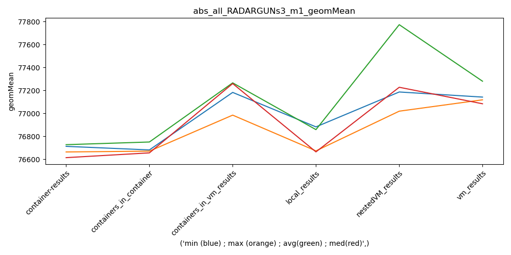
all runs of one jdk were made AVARAGE before processing
BasicOperations.Get.Throughput=
all RADARGUNs3 BasicOperations.Get.Throughput= where all runs of one jdk were made AVARAGE before processing
MIN 87095.6 container-results
MIN 83388.2 containers_in_container
MIN 35880.6 containers_in_vm_results
MIN 84993.8 local_results
MIN 19331.8 nestedVM_results
MIN 43579.0 vm_results
MAX 96547.0 container-results
MAX 91460.8 containers_in_container
MAX 42019.8 containers_in_vm_results
MAX 98020.8 local_results
MAX 26675.2 nestedVM_results
MAX 51910.6 vm_results
AVG 90811.6972972973 container-results
AVG 86471.1518018018 containers_in_container
AVG 39141.23963963964 containers_in_vm_results
AVG 90426.17142857143 local_results
AVG 22403.25 nestedVM_results
AVG 47212.291891891895 vm_results
MED 90294.8 container-results
MED 85920.0 containers_in_container
MED 38282.666666666664 containers_in_vm_results
MED 91573.2 local_results
MED 20382.4 nestedVM_results
MED 46586.4 vm_results

BasicOperations.Put.Throughput=
all RADARGUNs3 BasicOperations.Put.Throughput= where all runs of one jdk were made AVARAGE before processing
MIN 21771.6 container-results
MIN 20842.8 containers_in_container
MIN 8972.8 containers_in_vm_results
MIN 21244.8 local_results
MIN 4829.8 nestedVM_results
MIN 10891.8 vm_results
MAX 24135.4 container-results
MAX 22870.8 containers_in_container
MAX 10505.0 containers_in_vm_results
MAX 24507.2 local_results
MAX 6670.8 nestedVM_results
MAX 12977.6 vm_results
AVG 22702.07027027027 container-results
AVG 21617.381531531533 containers_in_container
AVG 9784.839639639638 containers_in_vm_results
AVG 22606.14857142857 local_results
AVG 5600.37972972973 nestedVM_results
AVG 11802.745945945946 vm_results
MED 22571.8 container-results
MED 21479.8 containers_in_container
MED 9568.333333333334 containers_in_vm_results
MED 22892.2 local_results
MED 5096.2 nestedVM_results
MED 11644.8 vm_results
BasicOperations.Put.ResponseTimeMean
all RADARGUNs3 BasicOperations.Put.ResponseTimeMean where all runs of one jdk were made AVARAGE before processing
MIN -275038.8 container-results
MIN -286834.0 containers_in_container
MIN -665989.4 containers_in_vm_results
MIN -283201.4 local_results
MIN -1246495.0 nestedVM_results
MIN -548198.8 vm_results
MAX -245363.4 container-results
MAX -258425.2 containers_in_container
MAX -565957.4 containers_in_vm_results
MAX -242063.6 local_results
MAX -882026.0 nestedVM_results
MAX -450710.6 vm_results
AVG -262170.42702702706 container-results
AVG -275000.25900900905 containers_in_container
AVG -611349.2918918919 containers_in_vm_results
AVG -264749.16571428574 local_results
AVG -1082571.327027027 nestedVM_results
AVG -501806.9783783784 vm_results
MED -261665.6 container-results
MED -274502.8 containers_in_container
MED -622153.6666666666 containers_in_vm_results
MED -258618.2 local_results
MED -1178986.4 nestedVM_results
MED -502570.0 vm_results

BasicOperations.Get.ResponseTimeMean
all RADARGUNs3 BasicOperations.Get.ResponseTimeMean where all runs of one jdk were made AVARAGE before processing
MIN -66393.8 container-results
MIN -69564.8 containers_in_container
MIN -165422.6 containers_in_vm_results
MIN -68114.8 local_results
MIN -306057.0 nestedVM_results
MIN -136172.8 vm_results
MAX -60484.8 container-results
MAX -64131.2 containers_in_container
MAX -141115.0 containers_in_vm_results
MAX -59568.8 local_results
MAX -224470.8 nestedVM_results
MAX -116948.6 vm_results
AVG -64123.45405405405 container-results
AVG -67506.7927927928 containers_in_container
AVG -152219.84504504505 containers_in_vm_results
AVG -64478.33142857143 local_results
AVG -269336.9054054054 nestedVM_results
AVG -127552.81621621622 vm_results
MED -64500.0 container-results
MED -68096.4 containers_in_container
MED -155344.66666666666 containers_in_vm_results
MED -63894.8 local_results
MED -290124.8 nestedVM_results
MED -129624.0 vm_results
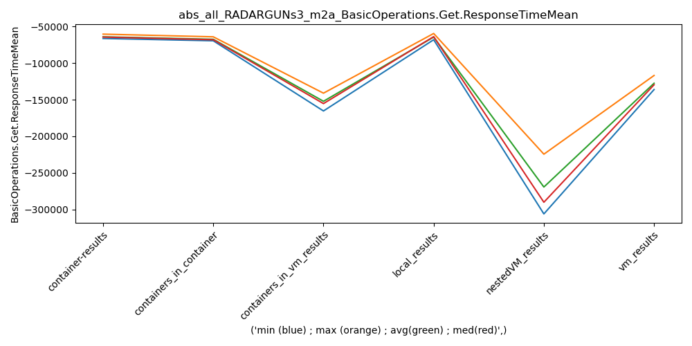
geomMean of all keys (benchmark meassured relativre accuracy)
{'MIN': [76710.00535980824, 76739.71954701027, 77172.48072285118, 76823.5184910825, 77254.46237964678, 77152.7377663679], 'MAX': [76685.33666925311, 76732.64077597571, 77055.16241014304, 76716.72756458508, 77042.73850404817, 77194.40213897866], 'AVG': [76727.66228503692, 76751.82792255418, 77265.78911495858, 76858.56610621061, 77771.4545507767, 77279.84150615144], 'MED': [76583.25481010968, 76638.82864902315, 77136.17913912608, 76717.621622537, 77205.60993652961, 77102.47003201352]}
all RADARGUNs3 geomMean where all runs of one jdk were made AVARAGE before processing
MIN 76710.00535980824 container-results
MIN 76739.71954701027 containers_in_container
MIN 77172.48072285118 containers_in_vm_results
MIN 76823.5184910825 local_results
MIN 77254.46237964678 nestedVM_results
MIN 77152.7377663679 vm_results
MAX 76685.33666925311 container-results
MAX 76732.64077597571 containers_in_container
MAX 77055.16241014304 containers_in_vm_results
MAX 76716.72756458508 local_results
MAX 77042.73850404817 nestedVM_results
MAX 77194.40213897866 vm_results
AVG 76727.66228503692 container-results
AVG 76751.82792255418 containers_in_container
AVG 77265.78911495858 containers_in_vm_results
AVG 76858.56610621061 local_results
AVG 77771.4545507767 nestedVM_results
AVG 77279.84150615144 vm_results
MED 76583.25481010968 container-results
MED 76638.82864902315 containers_in_container
MED 77136.17913912608 containers_in_vm_results
MED 76717.621622537 local_results
MED 77205.60993652961 nestedVM_results
MED 77102.47003201352 vm_results
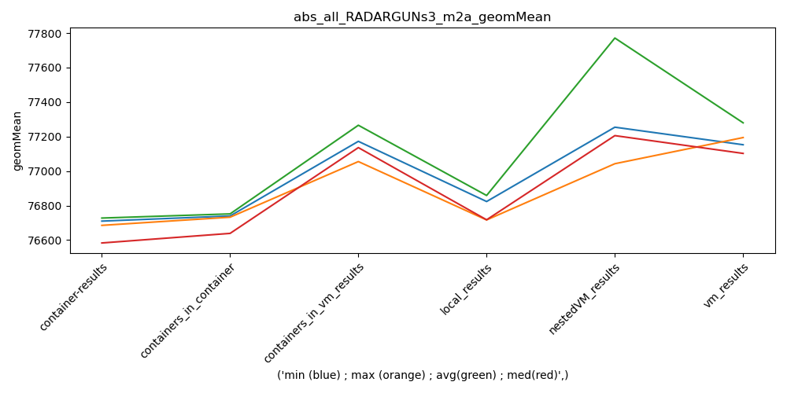
all runs of one jdk were made MEDIAN before processing
BasicOperations.Get.Throughput=
all RADARGUNs3 BasicOperations.Get.Throughput= where all runs of one jdk were made MEDIAN before processing
MIN 87148.0 container-results
MIN 83482.0 containers_in_container
MIN 35749.0 containers_in_vm_results
MIN 85108.0 local_results
MIN 19036.0 nestedVM_results
MIN 43623.0 vm_results
MAX 96570.0 container-results
MAX 91381.0 containers_in_container
MAX 42054.0 containers_in_vm_results
MAX 97812.0 local_results
MAX 26480.0 nestedVM_results
MAX 52408.0 vm_results
AVG 90827.13513513513 container-results
AVG 86486.81081081081 containers_in_container
AVG 39193.97297297297 containers_in_vm_results
AVG 90435.31428571428 local_results
AVG 22331.27027027027 nestedVM_results
AVG 47389.37837837838 vm_results
MED 90348.0 container-results
MED 86183.0 containers_in_container
MED 38172.0 containers_in_vm_results
MED 91497.0 local_results
MED 20497.0 nestedVM_results
MED 46355.0 vm_results
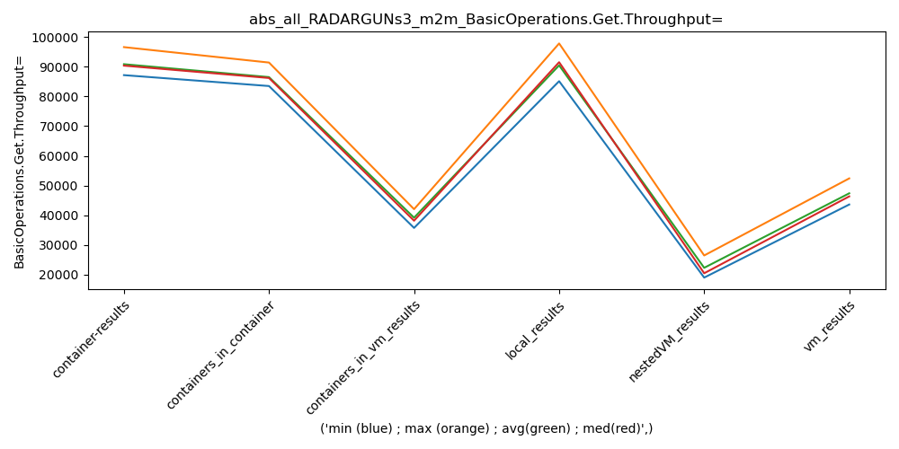
BasicOperations.Put.Throughput=
all RADARGUNs3 BasicOperations.Put.Throughput= where all runs of one jdk were made MEDIAN before processing
MIN 21791.0 container-results
MIN 20854.0 containers_in_container
MIN 8935.0 containers_in_vm_results
MIN 21263.0 local_results
MIN 4759.0 nestedVM_results
MIN 10901.0 vm_results
MAX 24143.0 container-results
MAX 22848.0 containers_in_container
MAX 10517.0 containers_in_vm_results
MAX 24458.0 local_results
MAX 6626.0 nestedVM_results
MAX 13100.0 vm_results
AVG 22706.486486486487 container-results
AVG 21620.945945945947 containers_in_container
AVG 9798.621621621622 containers_in_vm_results
AVG 22609.914285714287 local_results
AVG 5582.540540540541 nestedVM_results
AVG 11846.324324324325 vm_results
MED 22587.0 container-results
MED 21544.0 containers_in_container
MED 9549.0 containers_in_vm_results
MED 22879.0 local_results
MED 5120.0 nestedVM_results
MED 11584.0 vm_results

BasicOperations.Put.ResponseTimeMean
all RADARGUNs3 BasicOperations.Put.ResponseTimeMean where all runs of one jdk were made MEDIAN before processing
MIN -275345.0 container-results
MIN -287217.0 containers_in_container
MIN -670610.0 containers_in_vm_results
MIN -283265.0 local_results
MIN -1265388.0 nestedVM_results
MIN -548893.0 vm_results
MAX -244938.0 container-results
MAX -258832.0 containers_in_container
MAX -563217.0 containers_in_vm_results
MAX -241563.0 local_results
MAX -886218.0 nestedVM_results
MAX -446167.0 vm_results
AVG -262012.94594594595 container-results
AVG -274986.02702702704 containers_in_container
AVG -610110.5675675676 containers_in_vm_results
AVG -264705.3714285714 local_results
AVG -1086096.4864864864 nestedVM_results
AVG -500040.1891891892 vm_results
MED -260988.0 container-results
MED -273757.0 containers_in_container
MED -623482.0 containers_in_vm_results
MED -259122.0 local_results
MED -1172473.0 nestedVM_results
MED -505390.0 vm_results

BasicOperations.Get.ResponseTimeMean
all RADARGUNs3 BasicOperations.Get.ResponseTimeMean where all runs of one jdk were made MEDIAN before processing
MIN -66438.0 container-results
MIN -69563.0 containers_in_container
MIN -165606.0 containers_in_vm_results
MIN -68107.0 local_results
MIN -309915.0 nestedVM_results
MIN -136156.0 vm_results
MAX -60613.0 container-results
MAX -64223.0 containers_in_container
MAX -140912.0 containers_in_vm_results
MAX -59702.0 local_results
MAX -226201.0 nestedVM_results
MAX -116443.0 vm_results
AVG -64119.97297297297 container-results
AVG -67519.27027027027 containers_in_container
AVG -152028.7837837838 containers_in_vm_results
AVG -64459.74285714285 local_results
AVG -270107.97297297296 nestedVM_results
AVG -127058.02702702703 vm_results
MED -64547.0 container-results
MED -67983.0 containers_in_container
MED -155328.0 containers_in_vm_results
MED -63726.0 local_results
MED -289296.0 nestedVM_results
MED -129210.0 vm_results

geomMean of all keys (benchmark meassured relativre accuracy)
{'MIN': [76772.74739220309, 76796.71878861057, 77174.91091884376, 76867.87901180172, 77203.93338438967, 77210.53937066242], 'MAX': [76703.26542458827, 76754.37917779479, 76971.63815473503, 76640.45839152044, 77010.70955958252, 77280.50089782229], 'AVG': [76722.08712917291, 76761.019653981, 77255.5451088119, 76854.99041600729, 77765.64554068776, 77280.14212569744], 'MED': [76571.72379307674, 76670.51432650763, 77080.4283898554, 76677.19370222156, 77241.62206722151, 76951.92284576352]}
all RADARGUNs3 geomMean where all runs of one jdk were made MEDIAN before processing
MIN 76772.74739220309 container-results
MIN 76796.71878861057 containers_in_container
MIN 77174.91091884376 containers_in_vm_results
MIN 76867.87901180172 local_results
MIN 77203.93338438967 nestedVM_results
MIN 77210.53937066242 vm_results
MAX 76703.26542458827 container-results
MAX 76754.37917779479 containers_in_container
MAX 76971.63815473503 containers_in_vm_results
MAX 76640.45839152044 local_results
MAX 77010.70955958252 nestedVM_results
MAX 77280.50089782229 vm_results
AVG 76722.08712917291 container-results
AVG 76761.019653981 containers_in_container
AVG 77255.5451088119 containers_in_vm_results
AVG 76854.99041600729 local_results
AVG 77765.64554068776 nestedVM_results
AVG 77280.14212569744 vm_results
MED 76571.72379307674 container-results
MED 76670.51432650763 containers_in_container
MED 77080.4283898554 containers_in_vm_results
MED 76677.19370222156 local_results
MED 77241.62206722151 nestedVM_results
MED 76951.92284576352 vm_results
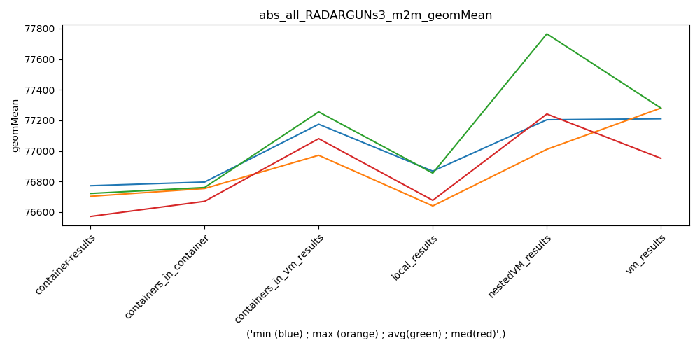
geomMean of all metrics from geomMean of all keys
{'MIN': [76731.91824496513, 76739.46111140767, 77176.5972597883, 76857.95632149244, 77214.84464243629, 77168.31949551201], 'MAX': [76684.30415155132, 76719.415410165, 77003.8509544324, 76676.92892459703, 77024.17444759657, 77197.59692616707], 'AVG': [76725.80385473595, 76754.58616020907, 77262.30577169797, 76857.37419099211, 77769.65250982284, 77279.94171253679], 'MED': [76589.89109230692, 76655.20642679017, 77158.61590511298, 76686.57318011549, 77224.78351249012, 77045.97291198777]}
all RADARGUNs3 geomMean geomMean
MIN 76731.91824496513 container-results
MIN 76739.46111140767 containers_in_container
MIN 77176.5972597883 containers_in_vm_results
MIN 76857.95632149244 local_results
MIN 77214.84464243629 nestedVM_results
MIN 77168.31949551201 vm_results
MAX 76684.30415155132 container-results
MAX 76719.415410165 containers_in_container
MAX 77003.8509544324 containers_in_vm_results
MAX 76676.92892459703 local_results
MAX 77024.17444759657 nestedVM_results
MAX 77197.59692616707 vm_results
AVG 76725.80385473595 container-results
AVG 76754.58616020907 containers_in_container
AVG 77262.30577169797 containers_in_vm_results
AVG 76857.37419099211 local_results
AVG 77769.65250982284 nestedVM_results
AVG 77279.94171253679 vm_results
MED 76589.89109230692 container-results
MED 76655.20642679017 containers_in_container
MED 77158.61590511298 containers_in_vm_results
MED 76686.57318011549 local_results
MED 77224.78351249012 nestedVM_results
MED 77045.97291198777 vm_results
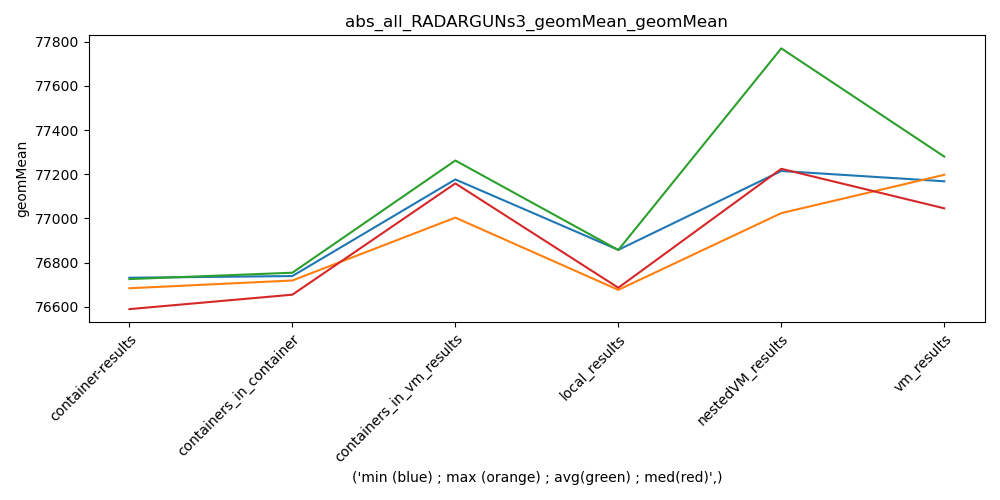
SPECJBB
all runs of one jdk are treated as INDIVIDUAL items
jbb2015.result.metric.critical-jOPS
all SPECJBB jbb2015.result.metric.critical-jOPS where all runs of one jdk are treated as INDIVIDUAL items
MIN 1924.0 container-results
MIN 1847.0 containers_in_container
MIN 1510.0 containers_in_vm_results
MIN 1957.0 local_results
MIN 819.0 nestedVM_results
MIN 1130.0 vm_results
MAX 4096.0 container-results
MAX 4039.0 containers_in_container
MAX 2656.0 containers_in_vm_results
MAX 4251.0 local_results
MAX 1583.0 nestedVM_results
MAX 2770.0 vm_results
AVG 2929.691428571429 container-results
AVG 2936.8171428571427 containers_in_container
AVG 2100.12 containers_in_vm_results
AVG 3022.682634730539 local_results
AVG 1216.236994219653 nestedVM_results
AVG 1965.8685714285714 vm_results
MED 2526.0 container-results
MED 2582.0 containers_in_container
MED 2077.0 containers_in_vm_results
MED 2640.0 local_results
MED 1257.0 nestedVM_results
MED 1902.0 vm_results

jbb2015.result.metric.max-jOPS
all SPECJBB jbb2015.result.metric.max-jOPS where all runs of one jdk are treated as INDIVIDUAL items
MIN 8483.0 container-results
MIN 8610.0 containers_in_container
MIN 6037.0 containers_in_vm_results
MIN 8612.0 local_results
MIN 4665.0 nestedVM_results
MIN 5635.0 vm_results
MAX 10931.0 container-results
MAX 11208.0 containers_in_container
MAX 8580.0 containers_in_vm_results
MAX 11208.0 local_results
MAX 6589.0 nestedVM_results
MAX 8776.0 vm_results
AVG 9769.18857142857 container-results
AVG 9885.697142857143 containers_in_container
AVG 7304.777142857143 containers_in_vm_results
AVG 10062.754491017964 local_results
AVG 5565.0115606936415 nestedVM_results
AVG 7305.148571428572 vm_results
MED 9700.0 container-results
MED 9816.0 containers_in_container
MED 7423.0 containers_in_vm_results
MED 9931.0 local_results
MED 5514.0 nestedVM_results
MED 7519.0 vm_results
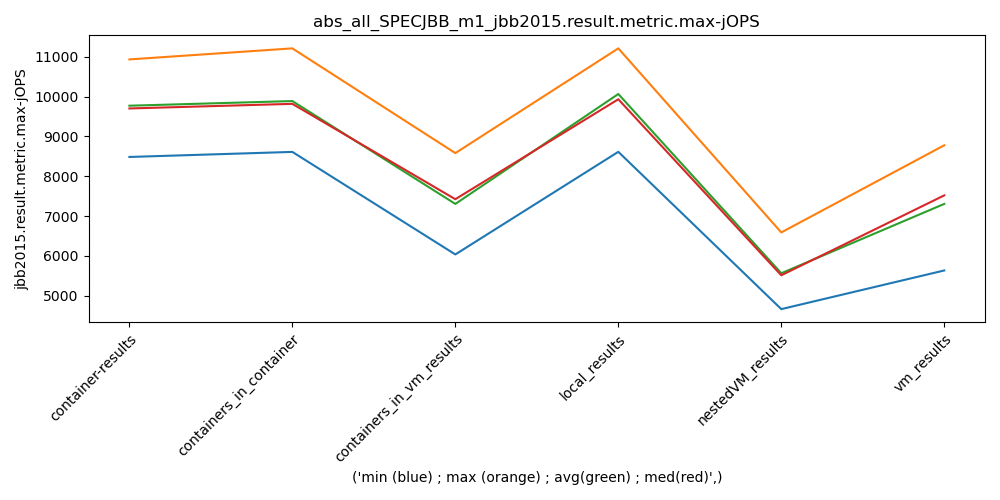
geomMean of all keys (benchmark meassured relativre accuracy)
{'MIN': [4039.9618810082848, 3987.815191304632, 3019.2499068477255, 4105.323860549859, 1954.6444689508114, 2523.4004834746306], 'MAX': [6691.291056291006, 6728.232457339744, 4773.728102856299, 6902.550832844333, 3229.6109672838306, 4930.46853757328], 'AVG': [5349.832522781648, 5388.180104472821, 3916.747192921333, 5515.116794552654, 2601.6096812119326, 3789.5859913963895], 'MED': [4949.969696876941, 5034.373049347853, 3926.5214885442815, 5120.335926479825, 2632.69785581255, 3781.6845452787306]}
all SPECJBB geomMean where all runs of one jdk are treated as INDIVIDUAL items
MIN 4039.9618810082848 container-results
MIN 3987.815191304632 containers_in_container
MIN 3019.2499068477255 containers_in_vm_results
MIN 4105.323860549859 local_results
MIN 1954.6444689508114 nestedVM_results
MIN 2523.4004834746306 vm_results
MAX 6691.291056291006 container-results
MAX 6728.232457339744 containers_in_container
MAX 4773.728102856299 containers_in_vm_results
MAX 6902.550832844333 local_results
MAX 3229.6109672838306 nestedVM_results
MAX 4930.46853757328 vm_results
AVG 5349.832522781648 container-results
AVG 5388.180104472821 containers_in_container
AVG 3916.747192921333 containers_in_vm_results
AVG 5515.116794552654 local_results
AVG 2601.6096812119326 nestedVM_results
AVG 3789.5859913963895 vm_results
MED 4949.969696876941 container-results
MED 5034.373049347853 containers_in_container
MED 3926.5214885442815 containers_in_vm_results
MED 5120.335926479825 local_results
MED 2632.69785581255 nestedVM_results
MED 3781.6845452787306 vm_results

all runs of one jdk were made AVARAGE before processing
jbb2015.result.metric.critical-jOPS
all SPECJBB jbb2015.result.metric.critical-jOPS where all runs of one jdk were made AVARAGE before processing
MIN 2178.4 container-results
MIN 2166.0 containers_in_container
MIN 1608.2 containers_in_vm_results
MIN 2210.2 local_results
MIN 894.0 nestedVM_results
MIN 1251.0 vm_results
MAX 3965.2 container-results
MAX 3954.8 containers_in_container
MAX 2620.4 containers_in_vm_results
MAX 4134.8 local_results
MAX 1517.0 nestedVM_results
MAX 2708.6 vm_results
AVG 2929.6914285714283 container-results
AVG 2936.817142857143 containers_in_container
AVG 2100.12 containers_in_vm_results
AVG 3013.705882352941 local_results
AVG 1216.997142857143 nestedVM_results
AVG 1965.8685714285712 vm_results
MED 2540.6 container-results
MED 2482.4 containers_in_container
MED 2003.8 containers_in_vm_results
MED 2519.2 local_results
MED 1218.8 nestedVM_results
MED 1945.0 vm_results

jbb2015.result.metric.max-jOPS
all SPECJBB jbb2015.result.metric.max-jOPS where all runs of one jdk were made AVARAGE before processing
MIN 8651.0 container-results
MIN 8875.2 containers_in_container
MIN 6214.4 containers_in_vm_results
MIN 8935.6 local_results
MIN 4814.8 nestedVM_results
MIN 5860.2 vm_results
MAX 10737.2 container-results
MAX 11069.6 containers_in_container
MAX 8473.4 containers_in_vm_results
MAX 11125.2 local_results
MAX 6382.6 nestedVM_results
MAX 8641.4 vm_results
AVG 9769.18857142857 container-results
AVG 9885.697142857143 containers_in_container
AVG 7304.777142857143 containers_in_vm_results
AVG 10044.264705882353 local_results
AVG 5568.144285714286 nestedVM_results
AVG 7305.148571428572 vm_results
MED 9769.4 container-results
MED 9792.6 containers_in_container
MED 7420.0 containers_in_vm_results
MED 9954.4 local_results
MED 5460.8 nestedVM_results
MED 7577.0 vm_results

geomMean of all keys (benchmark meassured relativre accuracy)
{'MIN': [4341.121790505307, 4384.482090281588, 3161.3285308553427, 4444.036804528063, 2074.712317406922, 2707.6022972364312], 'MAX': [6524.963252003799, 6616.498626917412, 4712.079939899152, 6782.365144991827, 3111.6561828068347, 4837.984708533089], 'AVG': [5349.832522781647, 5388.180104472821, 3916.747192921333, 5501.85965179299, 2603.1549486595322, 3789.585991396389], 'MED': [4981.981296632896, 4930.431039980176, 3855.9299786173506, 5007.706508971946, 2579.8494219624527, 3838.914560132851]}
all SPECJBB geomMean where all runs of one jdk were made AVARAGE before processing
MIN 4341.121790505307 container-results
MIN 4384.482090281588 containers_in_container
MIN 3161.3285308553427 containers_in_vm_results
MIN 4444.036804528063 local_results
MIN 2074.712317406922 nestedVM_results
MIN 2707.6022972364312 vm_results
MAX 6524.963252003799 container-results
MAX 6616.498626917412 containers_in_container
MAX 4712.079939899152 containers_in_vm_results
MAX 6782.365144991827 local_results
MAX 3111.6561828068347 nestedVM_results
MAX 4837.984708533089 vm_results
AVG 5349.832522781647 container-results
AVG 5388.180104472821 containers_in_container
AVG 3916.747192921333 containers_in_vm_results
AVG 5501.85965179299 local_results
AVG 2603.1549486595322 nestedVM_results
AVG 3789.585991396389 vm_results
MED 4981.981296632896 container-results
MED 4930.431039980176 containers_in_container
MED 3855.9299786173506 containers_in_vm_results
MED 5007.706508971946 local_results
MED 2579.8494219624527 nestedVM_results
MED 3838.914560132851 vm_results

all runs of one jdk were made MEDIAN before processing
jbb2015.result.metric.critical-jOPS
all SPECJBB jbb2015.result.metric.critical-jOPS where all runs of one jdk were made MEDIAN before processing
MIN 2156.0 container-results
MIN 2159.0 containers_in_container
MIN 1614.0 containers_in_vm_results
MIN 2209.0 local_results
MIN 889.0 nestedVM_results
MIN 1230.0 vm_results
MAX 3990.0 container-results
MAX 3971.0 containers_in_container
MAX 2618.0 containers_in_vm_results
MAX 4107.0 local_results
MAX 1491.0 nestedVM_results
MAX 2713.0 vm_results
AVG 2927.1428571428573 container-results
AVG 2936.885714285714 containers_in_container
AVG 2096.1714285714284 containers_in_vm_results
AVG 3009.235294117647 local_results
AVG 1214.7428571428572 nestedVM_results
AVG 1967.6571428571428 vm_results
MED 2500.0 container-results
MED 2483.0 containers_in_container
MED 2001.0 containers_in_vm_results
MED 2530.0 local_results
MED 1230.0 nestedVM_results
MED 1929.0 vm_results

jbb2015.result.metric.max-jOPS
all SPECJBB jbb2015.result.metric.max-jOPS where all runs of one jdk were made MEDIAN before processing
MIN 8676.0 container-results
MIN 8759.0 containers_in_container
MIN 6118.0 containers_in_vm_results
MIN 9008.0 local_results
MIN 4778.0 nestedVM_results
MIN 5716.0 vm_results
MAX 10654.0 container-results
MAX 11070.0 containers_in_container
MAX 8483.0 containers_in_vm_results
MAX 11208.0 local_results
MAX 6359.0 nestedVM_results
MAX 8676.0 vm_results
AVG 9771.714285714286 container-results
AVG 9894.857142857143 containers_in_container
AVG 7294.685714285714 containers_in_vm_results
AVG 10068.70588235294 local_results
AVG 5569.428571428572 nestedVM_results
AVG 7304.342857142857 vm_results
MED 9700.0 container-results
MED 9816.0 containers_in_container
MED 7423.0 containers_in_vm_results
MED 9931.0 local_results
MED 5447.0 nestedVM_results
MED 7605.0 vm_results

geomMean of all keys (benchmark meassured relativre accuracy)
{'MIN': [4324.980462383616, 4348.64128205581, 3142.3640782060884, 4460.792754656956, 2060.9808344572252, 2651.5429470404583], 'MAX': [6519.92791371193, 6630.1561067594785, 4712.588885103389, 6784.633814731639, 3079.16693279205, 4851.5964382870925], 'AVG': [5348.196300947581, 5390.738779402606, 3910.359545450249, 5504.462290475468, 2601.0427861744615, 3791.10042029154], 'MED': [4924.428900898052, 4936.914826083189, 3854.01388165637, 5012.527306658788, 2588.3991191468135, 3830.1494748899813]}
all SPECJBB geomMean where all runs of one jdk were made MEDIAN before processing
MIN 4324.980462383616 container-results
MIN 4348.64128205581 containers_in_container
MIN 3142.3640782060884 containers_in_vm_results
MIN 4460.792754656956 local_results
MIN 2060.9808344572252 nestedVM_results
MIN 2651.5429470404583 vm_results
MAX 6519.92791371193 container-results
MAX 6630.1561067594785 containers_in_container
MAX 4712.588885103389 containers_in_vm_results
MAX 6784.633814731639 local_results
MAX 3079.16693279205 nestedVM_results
MAX 4851.5964382870925 vm_results
AVG 5348.196300947581 container-results
AVG 5390.738779402606 containers_in_container
AVG 3910.359545450249 containers_in_vm_results
AVG 5504.462290475468 local_results
AVG 2601.0427861744615 nestedVM_results
AVG 3791.10042029154 vm_results
MED 4924.428900898052 container-results
MED 4936.914826083189 containers_in_container
MED 3854.01388165637 containers_in_vm_results
MED 5012.527306658788 local_results
MED 2588.3991191468135 nestedVM_results
MED 3830.1494748899813 vm_results

geomMean of all metrics from geomMean of all keys
{'MIN': [4233.060372480744, 4236.4521231107465, 3107.003420062608, 4333.56889841494, 2029.3947746884528, 2626.374020926803], 'MAX': [6578.248294010978, 6658.110360574239, 4732.71073627382, 6822.953285980689, 3139.484548300794, 4873.179971018969], 'AVG': [5349.287059890732, 5389.032861148003, 3914.6168185668926, 5507.143260385132, 2601.9356522653206, 3790.090733797488], 'MED': [4952.070681899435, 4967.013104263829, 3878.675652254614, 5046.590020979265, 2600.2126917890637, 3816.83297911065]}
all SPECJBB geomMean geomMean
MIN 4233.060372480744 container-results
MIN 4236.4521231107465 containers_in_container
MIN 3107.003420062608 containers_in_vm_results
MIN 4333.56889841494 local_results
MIN 2029.3947746884528 nestedVM_results
MIN 2626.374020926803 vm_results
MAX 6578.248294010978 container-results
MAX 6658.110360574239 containers_in_container
MAX 4732.71073627382 containers_in_vm_results
MAX 6822.953285980689 local_results
MAX 3139.484548300794 nestedVM_results
MAX 4873.179971018969 vm_results
AVG 5349.287059890732 container-results
AVG 5389.032861148003 containers_in_container
AVG 3914.6168185668926 containers_in_vm_results
AVG 5507.143260385132 local_results
AVG 2601.9356522653206 nestedVM_results
AVG 3790.090733797488 vm_results
MED 4952.070681899435 container-results
MED 4967.013104263829 containers_in_container
MED 3878.675652254614 containers_in_vm_results
MED 5046.590020979265 local_results
MED 2600.2126917890637 nestedVM_results
MED 3816.83297911065 vm_results

geomMean of all benchamrks from geomMean of all metrics and all keys
{'MIN': [2622.3684260642403, 2788.096239887773, 2325.139130334553, 2630.8273596554654, 2543.2407680549095, 2548.357939074663], 'MAX': [3057.00176411793, 3254.1465115958417, 2747.886562351433, 3073.5817011785766, 2940.015412663875, 3211.8443730118897], 'AVG': [2890.4610934541683, 3084.3072073584735, 2568.551300582363, 2893.2085297775684, 2796.910284188809, 2902.547292433058], 'MED': [2882.250363870867, 3067.473008560963, 2573.5959027718277, 2869.77463247685, 2821.723539015679, 2847.5507632749323]}
all geomMean geomMean geomMean
MIN 2622.3684260642403 container-results
MIN 2788.096239887773 containers_in_container
MIN 2325.139130334553 containers_in_vm_results
MIN 2630.8273596554654 local_results
MIN 2543.2407680549095 nestedVM_results
MIN 2548.357939074663 vm_results
MAX 3057.00176411793 container-results
MAX 3254.1465115958417 containers_in_container
MAX 2747.886562351433 containers_in_vm_results
MAX 3073.5817011785766 local_results
MAX 2940.015412663875 nestedVM_results
MAX 3211.8443730118897 vm_results
AVG 2890.4610934541683 container-results
AVG 3084.3072073584735 containers_in_container
AVG 2568.551300582363 containers_in_vm_results
AVG 2893.2085297775684 local_results
AVG 2796.910284188809 nestedVM_results
AVG 2902.547292433058 vm_results
MED 2882.250363870867 container-results
MED 3067.473008560963 containers_in_container
MED 2573.5959027718277 containers_in_vm_results
MED 2869.77463247685 local_results
MED 2821.723539015679 nestedVM_results
MED 2847.5507632749323 vm_results

java-1.8.0
DACAPO
all runs of one jdk are treated as INDIVIDUAL items
geom
java-1.8.0 DACAPO geom where all runs of one jdk are treated as INDIVIDUAL items
MIN -1167.0 container-results
MIN -1814.0 containers_in_container
MIN -1039.0 containers_in_vm_results
MIN -1119.0 local_results
MIN -3332.0 nestedVM_results
MIN -1961.0 vm_results
MAX -1269.0 container-results
MAX -2096.0 containers_in_container
MAX -1347.0 containers_in_vm_results
MAX -1224.0 local_results
MAX -3685.0 nestedVM_results
MAX -2536.0 vm_results
AVG -1208.5102040816328 container-results
AVG -1927.8125 containers_in_container
AVG -1161.948717948718 containers_in_vm_results
AVG -1171.56 local_results
AVG -3547.3571428571427 nestedVM_results
AVG -2155.0 vm_results
MED -1205.0 container-results
MED -1934.0 containers_in_container
MED -1156.0 containers_in_vm_results
MED -1175.0 local_results
MED -3556.0 nestedVM_results
MED -2066.0 vm_results
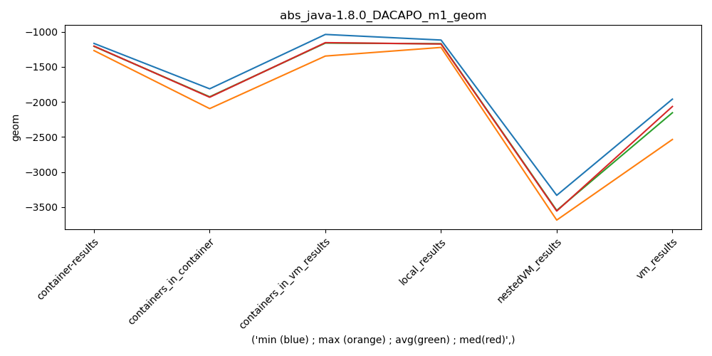
geomMean of all keys (benchmark meassured relativre accuracy)
{'MIN': [1167.0, 1814.0, 1039.0, 1119.0, 3332.0, 1961.0], 'MAX': [1269.0, 2096.0, 1347.0, 1224.0, 3685.0, 2536.0], 'AVG': [1208.5102040816328, 1927.8125, 1161.948717948718, 1171.56, 3547.3571428571427, 2155.0], 'MED': [1205.0, 1934.0, 1156.0, 1175.0, 3556.0, 2066.0]}
java-1.8.0 DACAPO geomMean where all runs of one jdk are treated as INDIVIDUAL items
MIN -1167.0 container-results
MIN -1814.0 containers_in_container
MIN -1039.0 containers_in_vm_results
MIN -1119.0 local_results
MIN -3332.0 nestedVM_results
MIN -1961.0 vm_results
MAX -1269.0 container-results
MAX -2096.0 containers_in_container
MAX -1347.0 containers_in_vm_results
MAX -1224.0 local_results
MAX -3685.0 nestedVM_results
MAX -2536.0 vm_results
AVG -1208.5102040816328 container-results
AVG -1927.8125 containers_in_container
AVG -1161.948717948718 containers_in_vm_results
AVG -1171.56 local_results
AVG -3547.3571428571427 nestedVM_results
AVG -2155.0 vm_results
MED -1205.0 container-results
MED -1934.0 containers_in_container
MED -1156.0 containers_in_vm_results
MED -1175.0 local_results
MED -3556.0 nestedVM_results
MED -2066.0 vm_results

all runs of one jdk were made AVARAGE before processing
geom
java-1.8.0 DACAPO geom where all runs of one jdk were made AVARAGE before processing
MIN -1197.4 container-results
MIN -1814.0 containers_in_container
MIN -1131.6666666666667 containers_in_vm_results
MIN -1151.2 local_results
MIN -3477.75 nestedVM_results
MIN -2026.2 vm_results
MAX -1235.0 container-results
MAX -1975.0 containers_in_container
MAX -1223.2 containers_in_vm_results
MAX -1186.4 local_results
MAX -3596.0 nestedVM_results
MAX -2461.0 vm_results
AVG -1208.3600000000001 container-results
AVG -1920.4 containers_in_container
AVG -1159.4066666666668 containers_in_vm_results
AVG -1171.56 local_results
AVG -3549.15 nestedVM_results
AVG -2168.7200000000003 vm_results
MED -1205.6 container-results
MED -1951.5 containers_in_container
MED -1153.2 containers_in_vm_results
MED -1174.2 local_results
MED -3549.2 nestedVM_results
MED -2071.0 vm_results

geomMean of all keys (benchmark meassured relativre accuracy)
{'MIN': [1197.4, 1814.0, 1131.6666666666667, 1151.2, 3477.75, 2026.2], 'MAX': [1235.0, 1975.0, 1223.2, 1186.4, 3596.0, 2461.0], 'AVG': [1208.3600000000001, 1920.4, 1159.4066666666668, 1171.56, 3549.15, 2168.7200000000003], 'MED': [1205.6, 1951.5, 1153.2, 1174.2, 3549.2, 2071.0]}
java-1.8.0 DACAPO geomMean where all runs of one jdk were made AVARAGE before processing
MIN -1197.4 container-results
MIN -1814.0 containers_in_container
MIN -1131.6666666666667 containers_in_vm_results
MIN -1151.2 local_results
MIN -3477.75 nestedVM_results
MIN -2026.2 vm_results
MAX -1235.0 container-results
MAX -1975.0 containers_in_container
MAX -1223.2 containers_in_vm_results
MAX -1186.4 local_results
MAX -3596.0 nestedVM_results
MAX -2461.0 vm_results
AVG -1208.3600000000001 container-results
AVG -1920.4 containers_in_container
AVG -1159.4066666666668 containers_in_vm_results
AVG -1171.56 local_results
AVG -3549.15 nestedVM_results
AVG -2168.7200000000003 vm_results
MED -1205.6 container-results
MED -1951.5 containers_in_container
MED -1153.2 containers_in_vm_results
MED -1174.2 local_results
MED -3549.2 nestedVM_results
MED -2071.0 vm_results

all runs of one jdk were made MEDIAN before processing
geom
java-1.8.0 DACAPO geom where all runs of one jdk were made MEDIAN before processing
MIN -1202.0 container-results
MIN -1814.0 containers_in_container
MIN -1144.0 containers_in_vm_results
MIN -1159.0 local_results
MIN -3488.0 nestedVM_results
MIN -2018.0 vm_results
MAX -1230.0 container-results
MAX -2096.0 containers_in_container
MAX -1189.0 containers_in_vm_results
MAX -1182.0 local_results
MAX -3615.0 nestedVM_results
MAX -2500.0 vm_results
AVG -1210.3 container-results
AVG -1938.0 containers_in_container
AVG -1155.3 containers_in_vm_results
AVG -1172.3 local_results
AVG -3555.7 nestedVM_results
AVG -2169.9 vm_results
MED -1209.0 container-results
MED -1971.0 containers_in_container
MED -1150.0 containers_in_vm_results
MED -1175.0 local_results
MED -3570.0 nestedVM_results
MED -2065.0 vm_results
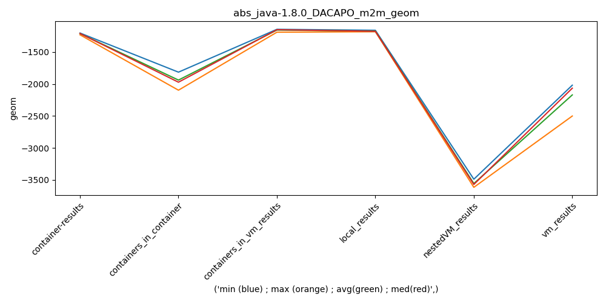
geomMean of all keys (benchmark meassured relativre accuracy)
{'MIN': [1202.0, 1814.0, 1144.0, 1159.0, 3488.0, 2018.0], 'MAX': [1230.0, 2096.0, 1189.0, 1182.0, 3615.0, 2500.0], 'AVG': [1210.3, 1938.0, 1155.3, 1172.3, 3555.7, 2169.9], 'MED': [1209.0, 1971.0, 1150.0, 1175.0, 3570.0, 2065.0]}
java-1.8.0 DACAPO geomMean where all runs of one jdk were made MEDIAN before processing
MIN -1202.0 container-results
MIN -1814.0 containers_in_container
MIN -1144.0 containers_in_vm_results
MIN -1159.0 local_results
MIN -3488.0 nestedVM_results
MIN -2018.0 vm_results
MAX -1230.0 container-results
MAX -2096.0 containers_in_container
MAX -1189.0 containers_in_vm_results
MAX -1182.0 local_results
MAX -3615.0 nestedVM_results
MAX -2500.0 vm_results
AVG -1210.3 container-results
AVG -1938.0 containers_in_container
AVG -1155.3 containers_in_vm_results
AVG -1172.3 local_results
AVG -3555.7 nestedVM_results
AVG -2169.9 vm_results
MED -1209.0 container-results
MED -1971.0 containers_in_container
MED -1150.0 containers_in_vm_results
MED -1175.0 local_results
MED -3570.0 nestedVM_results
MED -2065.0 vm_results
geomMean of all metrics from geomMean of all keys
{'MIN': [1188.6979831396607, 1813.9999999999993, 1103.8753410962345, 1142.9347425981373, 3431.8366617728702, 2001.5219421855506], 'MAX': [1244.54679396356, 2054.8646398450596, 1251.264070730587, 1197.3193763395182, 3631.7991748923255, 2498.8122357758275], 'AVG': [1209.0564136362852, 1928.7240118628447, 1158.881889362768, 1171.8066147503303, 3550.7339044069718, 2164.5294194789917], 'MED': [1206.5320485470343, 1952.1081886078348, 1153.064060747987, 1174.733272790336, 3558.389470140678, 2067.3316680924877]}
java-1.8.0 DACAPO geomMean geomMean
MIN -1188.6979831396607 container-results
MIN -1813.9999999999993 containers_in_container
MIN -1103.8753410962345 containers_in_vm_results
MIN -1142.9347425981373 local_results
MIN -3431.8366617728702 nestedVM_results
MIN -2001.5219421855506 vm_results
MAX -1244.54679396356 container-results
MAX -2054.8646398450596 containers_in_container
MAX -1251.264070730587 containers_in_vm_results
MAX -1197.3193763395182 local_results
MAX -3631.7991748923255 nestedVM_results
MAX -2498.8122357758275 vm_results
AVG -1209.0564136362852 container-results
AVG -1928.7240118628447 containers_in_container
AVG -1158.881889362768 containers_in_vm_results
AVG -1171.8066147503303 local_results
AVG -3550.7339044069718 nestedVM_results
AVG -2164.5294194789917 vm_results
MED -1206.5320485470343 container-results
MED -1952.1081886078348 containers_in_container
MED -1153.064060747987 containers_in_vm_results
MED -1174.733272790336 local_results
MED -3558.389470140678 nestedVM_results
MED -2067.3316680924877 vm_results
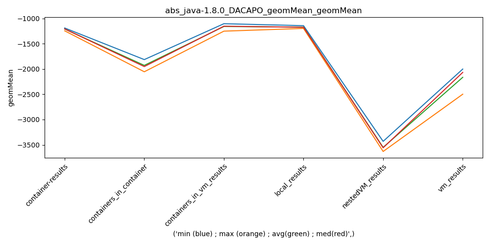
J2DBENCH
all runs of one jdk are treated as INDIVIDUAL items
j2dbench.geom
java-1.8.0 J2DBENCH j2dbench.geom where all runs of one jdk are treated as INDIVIDUAL items
MIN 146406.0 container-results
MIN 141135.0 containers_in_container
MIN 93535.0 containers_in_vm_results
MIN 134580.0 local_results
MIN 86995.0 nestedVM_results
MIN 94417.0 vm_results
MAX 147641.0 container-results
MAX 142535.0 containers_in_container
MAX 96883.0 containers_in_vm_results
MAX 149444.0 local_results
MAX 91253.0 nestedVM_results
MAX 134147.0 vm_results
AVG 146823.76 container-results
AVG 141922.62 containers_in_container
AVG 95218.46808510639 containers_in_vm_results
AVG 140754.8 local_results
AVG 89707.96 nestedVM_results
AVG 121841.32 vm_results
MED 146722.0 container-results
MED 142053.0 containers_in_container
MED 95321.0 containers_in_vm_results
MED 137926.0 local_results
MED 89756.0 nestedVM_results
MED 132314.0 vm_results
geomMean of all keys (benchmark meassured relativre accuracy)
{'MIN': [146406.0, 141135.0, 93535.0, 134580.0, 86995.0, 94417.0], 'MAX': [147641.0, 142535.0, 96883.0, 149444.0, 91253.0, 134147.0], 'AVG': [146823.76, 141922.62, 95218.46808510639, 140754.8, 89707.96, 121841.32], 'MED': [146722.0, 142053.0, 95321.0, 137926.0, 89756.0, 132314.0]}
java-1.8.0 J2DBENCH geomMean where all runs of one jdk are treated as INDIVIDUAL items
MIN 146406.0 container-results
MIN 141135.0 containers_in_container
MIN 93535.0 containers_in_vm_results
MIN 134580.0 local_results
MIN 86995.0 nestedVM_results
MIN 94417.0 vm_results
MAX 147641.0 container-results
MAX 142535.0 containers_in_container
MAX 96883.0 containers_in_vm_results
MAX 149444.0 local_results
MAX 91253.0 nestedVM_results
MAX 134147.0 vm_results
AVG 146823.76 container-results
AVG 141922.62 containers_in_container
AVG 95218.46808510639 containers_in_vm_results
AVG 140754.8 local_results
AVG 89707.96 nestedVM_results
AVG 121841.32 vm_results
MED 146722.0 container-results
MED 142053.0 containers_in_container
MED 95321.0 containers_in_vm_results
MED 137926.0 local_results
MED 89756.0 nestedVM_results
MED 132314.0 vm_results

all runs of one jdk were made AVARAGE before processing
j2dbench.geom
java-1.8.0 J2DBENCH j2dbench.geom where all runs of one jdk were made AVARAGE before processing
MIN 146591.4 container-results
MIN 141253.4 containers_in_container
MIN 94749.8 containers_in_vm_results
MIN 136486.8 local_results
MIN 88688.8 nestedVM_results
MIN 95084.4 vm_results
MAX 147299.2 container-results
MAX 142234.0 containers_in_container
MAX 95625.4 containers_in_vm_results
MAX 149279.0 local_results
MAX 90536.2 nestedVM_results
MAX 133477.8 vm_results
AVG 146823.76 container-results
AVG 141922.62 containers_in_container
AVG 95219.62666666668 containers_in_vm_results
AVG 140754.8 local_results
AVG 89707.95999999999 nestedVM_results
AVG 121841.31999999999 vm_results
MED 146720.6 container-results
MED 142100.8 containers_in_container
MED 95338.66666666667 containers_in_vm_results
MED 137439.8 local_results
MED 89860.6 nestedVM_results
MED 132753.6 vm_results

geomMean of all keys (benchmark meassured relativre accuracy)
{'MIN': [146591.4, 141253.4, 94749.8, 136486.8, 88688.8, 95084.4], 'MAX': [147299.2, 142234.0, 95625.4, 149279.0, 90536.2, 133477.8], 'AVG': [146823.76, 141922.62, 95219.62666666668, 140754.8, 89707.95999999999, 121841.31999999999], 'MED': [146720.6, 142100.8, 95338.66666666667, 137439.8, 89860.6, 132753.6]}
java-1.8.0 J2DBENCH geomMean where all runs of one jdk were made AVARAGE before processing
MIN 146591.4 container-results
MIN 141253.4 containers_in_container
MIN 94749.8 containers_in_vm_results
MIN 136486.8 local_results
MIN 88688.8 nestedVM_results
MIN 95084.4 vm_results
MAX 147299.2 container-results
MAX 142234.0 containers_in_container
MAX 95625.4 containers_in_vm_results
MAX 149279.0 local_results
MAX 90536.2 nestedVM_results
MAX 133477.8 vm_results
AVG 146823.76 container-results
AVG 141922.62 containers_in_container
AVG 95219.62666666668 containers_in_vm_results
AVG 140754.8 local_results
AVG 89707.95999999999 nestedVM_results
AVG 121841.31999999999 vm_results
MED 146720.6 container-results
MED 142100.8 containers_in_container
MED 95338.66666666667 containers_in_vm_results
MED 137439.8 local_results
MED 89860.6 nestedVM_results
MED 132753.6 vm_results

all runs of one jdk were made MEDIAN before processing
j2dbench.geom
java-1.8.0 J2DBENCH j2dbench.geom where all runs of one jdk were made MEDIAN before processing
MIN 146552.0 container-results
MIN 141273.0 containers_in_container
MIN 94445.0 containers_in_vm_results
MIN 136016.0 local_results
MIN 89074.0 nestedVM_results
MIN 94446.0 vm_results
MAX 147289.0 container-results
MAX 142287.0 containers_in_container
MAX 95815.0 containers_in_vm_results
MAX 149273.0 local_results
MAX 90858.0 nestedVM_results
MAX 133717.0 vm_results
AVG 146807.4 container-results
AVG 141920.4 containers_in_container
AVG 95320.7 containers_in_vm_results
AVG 140868.1 local_results
AVG 89827.6 nestedVM_results
AVG 121986.5 vm_results
MED 146722.0 container-results
MED 142075.0 containers_in_container
MED 95443.0 containers_in_vm_results
MED 137865.0 local_results
MED 89756.0 nestedVM_results
MED 133327.0 vm_results
geomMean of all keys (benchmark meassured relativre accuracy)
{'MIN': [146552.0, 141273.0, 94445.0, 136016.0, 89074.0, 94446.0], 'MAX': [147289.0, 142287.0, 95815.0, 149273.0, 90858.0, 133717.0], 'AVG': [146807.4, 141920.4, 95320.7, 140868.1, 89827.6, 121986.5], 'MED': [146722.0, 142075.0, 95443.0, 137865.0, 89756.0, 133327.0]}
java-1.8.0 J2DBENCH geomMean where all runs of one jdk were made MEDIAN before processing
MIN 146552.0 container-results
MIN 141273.0 containers_in_container
MIN 94445.0 containers_in_vm_results
MIN 136016.0 local_results
MIN 89074.0 nestedVM_results
MIN 94446.0 vm_results
MAX 147289.0 container-results
MAX 142287.0 containers_in_container
MAX 95815.0 containers_in_vm_results
MAX 149273.0 local_results
MAX 90858.0 nestedVM_results
MAX 133717.0 vm_results
AVG 146807.4 container-results
AVG 141920.4 containers_in_container
AVG 95320.7 containers_in_vm_results
AVG 140868.1 local_results
AVG 89827.6 nestedVM_results
AVG 121986.5 vm_results
MED 146722.0 container-results
MED 142075.0 containers_in_container
MED 95443.0 containers_in_vm_results
MED 137865.0 local_results
MED 89756.0 nestedVM_results
MED 133327.0 vm_results

geomMean of all metrics from geomMean of all keys
{'MIN': [146516.4449574747, 141220.45350639068, 94241.85107137507, 135691.8378798464, 88247.9601617622, 94648.6329344724], 'MAX': [147409.6426149877, 142351.93956494966, 96106.2095754268, 149331.978984955, 90881.92736245273, 133780.31361472487], 'AVG': [146818.30646410614, 141921.87999614142, 95252.91953201854, 140792.55653782113, 89747.82228432485, 121889.69412502478], 'MED': [146721.53333184894, 142076.26532370652, 95367.54036568433, 137743.4301191372, 89790.85313110375, 132797.55252790696]}
java-1.8.0 J2DBENCH geomMean geomMean
MIN 146516.4449574747 container-results
MIN 141220.45350639068 containers_in_container
MIN 94241.85107137507 containers_in_vm_results
MIN 135691.8378798464 local_results
MIN 88247.9601617622 nestedVM_results
MIN 94648.6329344724 vm_results
MAX 147409.6426149877 container-results
MAX 142351.93956494966 containers_in_container
MAX 96106.2095754268 containers_in_vm_results
MAX 149331.978984955 local_results
MAX 90881.92736245273 nestedVM_results
MAX 133780.31361472487 vm_results
AVG 146818.30646410614 container-results
AVG 141921.87999614142 containers_in_container
AVG 95252.91953201854 containers_in_vm_results
AVG 140792.55653782113 local_results
AVG 89747.82228432485 nestedVM_results
AVG 121889.69412502478 vm_results
MED 146721.53333184894 container-results
MED 142076.26532370652 containers_in_container
MED 95367.54036568433 containers_in_vm_results
MED 137743.4301191372 local_results
MED 89790.85313110375 nestedVM_results
MED 132797.55252790696 vm_results

JMH
all runs of one jdk are treated as INDIVIDUAL items
geom
java-1.8.0 JMH geom where all runs of one jdk are treated as INDIVIDUAL items
MIN 397.0 container-results
MIN 402.0 containers_in_container
MIN 324.0 containers_in_vm_results
MIN 401.0 local_results
MIN 324.0 nestedVM_results
MIN 345.0 vm_results
MAX 439.0 container-results
MAX 439.0 containers_in_container
MAX 402.0 containers_in_vm_results
MAX 455.0 local_results
MAX 349.0 nestedVM_results
MAX 401.0 vm_results
AVG 429.7 container-results
AVG 429.78 containers_in_container
AVG 359.7 containers_in_vm_results
AVG 430.82 local_results
AVG 343.77777777777777 nestedVM_results
AVG 375.53061224489795 vm_results
MED 434.0 container-results
MED 433.0 containers_in_container
MED 350.0 containers_in_vm_results
MED 434.0 local_results
MED 346.0 nestedVM_results
MED 370.0 vm_results
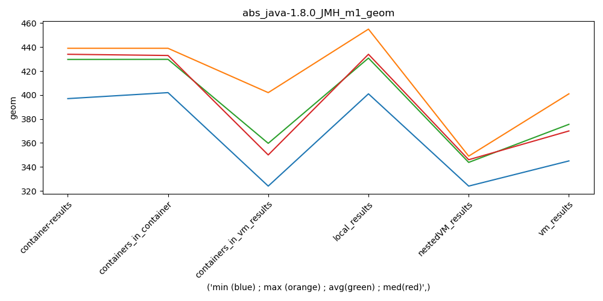
geomMean of all keys (benchmark meassured relativre accuracy)
{'MIN': [397.0, 402.0, 324.0, 401.0, 324.0, 345.0], 'MAX': [439.0, 439.0, 402.0, 455.0, 349.0, 401.0], 'AVG': [429.7, 429.78, 359.7, 430.82, 343.77777777777777, 375.53061224489795], 'MED': [434.0, 433.0, 350.0, 434.0, 346.0, 370.0]}
java-1.8.0 JMH geomMean where all runs of one jdk are treated as INDIVIDUAL items
MIN 397.0 container-results
MIN 402.0 containers_in_container
MIN 324.0 containers_in_vm_results
MIN 401.0 local_results
MIN 324.0 nestedVM_results
MIN 345.0 vm_results
MAX 439.0 container-results
MAX 439.0 containers_in_container
MAX 402.0 containers_in_vm_results
MAX 455.0 local_results
MAX 349.0 nestedVM_results
MAX 401.0 vm_results
AVG 429.7 container-results
AVG 429.78 containers_in_container
AVG 359.7 containers_in_vm_results
AVG 430.82 local_results
AVG 343.77777777777777 nestedVM_results
AVG 375.53061224489795 vm_results
MED 434.0 container-results
MED 433.0 containers_in_container
MED 350.0 containers_in_vm_results
MED 434.0 local_results
MED 346.0 nestedVM_results
MED 370.0 vm_results

all runs of one jdk were made AVARAGE before processing
geom
java-1.8.0 JMH geom where all runs of one jdk were made AVARAGE before processing
MIN 398.8 container-results
MIN 404.0 containers_in_container
MIN 327.0 containers_in_vm_results
MIN 404.0 local_results
MIN 324.75 nestedVM_results
MIN 345.8 vm_results
MAX 436.6 container-results
MAX 436.6 containers_in_container
MAX 399.6 containers_in_vm_results
MAX 439.6 local_results
MAX 347.8 nestedVM_results
MAX 399.4 vm_results
AVG 429.7 container-results
AVG 429.78000000000003 containers_in_container
AVG 359.7 containers_in_vm_results
AVG 430.82 local_results
AVG 343.42333333333335 nestedVM_results
AVG 375.975 vm_results
MED 434.8 container-results
MED 433.2 containers_in_container
MED 350.2 containers_in_vm_results
MED 433.8 local_results
MED 346.25 nestedVM_results
MED 370.2 vm_results

geomMean of all keys (benchmark meassured relativre accuracy)
{'MIN': [398.8, 404.0, 327.0, 404.0, 324.75, 345.8], 'MAX': [436.6, 436.6, 399.6, 439.6, 347.8, 399.4], 'AVG': [429.7, 429.78000000000003, 359.7, 430.82, 343.42333333333335, 375.975], 'MED': [434.8, 433.2, 350.2, 433.8, 346.25, 370.2]}
java-1.8.0 JMH geomMean where all runs of one jdk were made AVARAGE before processing
MIN 398.8 container-results
MIN 404.0 containers_in_container
MIN 327.0 containers_in_vm_results
MIN 404.0 local_results
MIN 324.75 nestedVM_results
MIN 345.8 vm_results
MAX 436.6 container-results
MAX 436.6 containers_in_container
MAX 399.6 containers_in_vm_results
MAX 439.6 local_results
MAX 347.8 nestedVM_results
MAX 399.4 vm_results
AVG 429.7 container-results
AVG 429.78000000000003 containers_in_container
AVG 359.7 containers_in_vm_results
AVG 430.82 local_results
AVG 343.42333333333335 nestedVM_results
AVG 375.975 vm_results
MED 434.8 container-results
MED 433.2 containers_in_container
MED 350.2 containers_in_vm_results
MED 433.8 local_results
MED 346.25 nestedVM_results
MED 370.2 vm_results

all runs of one jdk were made MEDIAN before processing
geom
java-1.8.0 JMH geom where all runs of one jdk were made MEDIAN before processing
MIN 399.0 container-results
MIN 404.0 containers_in_container
MIN 326.0 containers_in_vm_results
MIN 405.0 local_results
MIN 325.0 nestedVM_results
MIN 346.0 vm_results
MAX 437.0 container-results
MAX 436.0 containers_in_container
MAX 400.0 containers_in_vm_results
MAX 436.0 local_results
MAX 348.0 nestedVM_results
MAX 399.0 vm_results
AVG 429.6 container-results
AVG 429.6 containers_in_container
AVG 359.1 containers_in_vm_results
AVG 430.4 local_results
AVG 343.7 nestedVM_results
AVG 376.1 vm_results
MED 434.0 container-results
MED 433.0 containers_in_container
MED 350.0 containers_in_vm_results
MED 434.0 local_results
MED 346.0 nestedVM_results
MED 370.0 vm_results

geomMean of all keys (benchmark meassured relativre accuracy)
{'MIN': [399.0, 404.0, 326.0, 405.0, 325.0, 346.0], 'MAX': [437.0, 436.0, 400.0, 436.0, 348.0, 399.0], 'AVG': [429.6, 429.6, 359.1, 430.4, 343.7, 376.1], 'MED': [434.0, 433.0, 350.0, 434.0, 346.0, 370.0]}
java-1.8.0 JMH geomMean where all runs of one jdk were made MEDIAN before processing
MIN 399.0 container-results
MIN 404.0 containers_in_container
MIN 326.0 containers_in_vm_results
MIN 405.0 local_results
MIN 325.0 nestedVM_results
MIN 346.0 vm_results
MAX 437.0 container-results
MAX 436.0 containers_in_container
MAX 400.0 containers_in_vm_results
MAX 436.0 local_results
MAX 348.0 nestedVM_results
MAX 399.0 vm_results
AVG 429.6 container-results
AVG 429.6 containers_in_container
AVG 359.1 containers_in_vm_results
AVG 430.4 local_results
AVG 343.7 nestedVM_results
AVG 376.1 vm_results
MED 434.0 container-results
MED 433.0 containers_in_container
MED 350.0 containers_in_vm_results
MED 434.0 local_results
MED 346.0 nestedVM_results
MED 370.0 vm_results
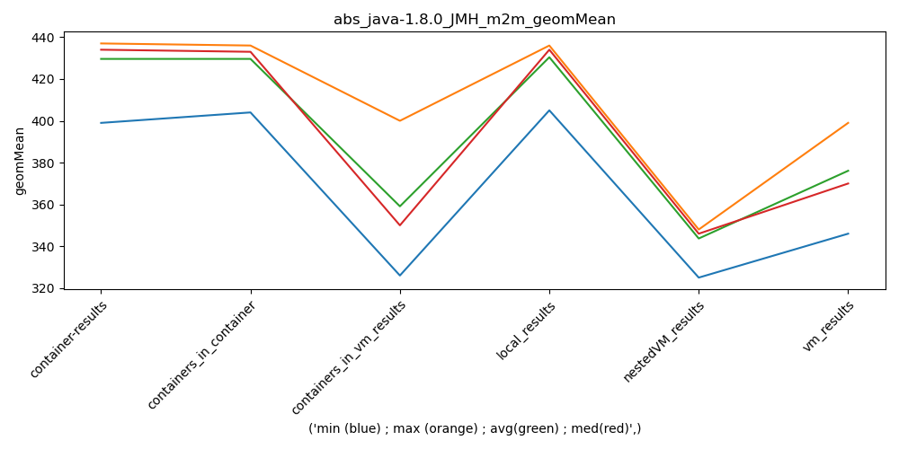
geomMean of all metrics from geomMean of all keys
{'MIN': [398.2656501113081, 403.33223018769525, 325.66427605764414, 403.3297467218951, 324.5830550705661, 345.59972980410106], 'MAX': [437.532075014371, 437.1980809341795, 400.5319589023698, 443.4573491156323, 348.26627130701513, 399.79906699838966], 'AVG': [429.6666640805488, 429.7199916216717, 359.4998886930519, 430.67995448070565, 343.63367003416374, 375.86845797807064], 'MED': [434.26650298376785, 433.06665640499375, 350.0666539722836, 433.93332309005524, 346.0833132707373, 370.06665465826046]}
java-1.8.0 JMH geomMean geomMean
MIN 398.2656501113081 container-results
MIN 403.33223018769525 containers_in_container
MIN 325.66427605764414 containers_in_vm_results
MIN 403.3297467218951 local_results
MIN 324.5830550705661 nestedVM_results
MIN 345.59972980410106 vm_results
MAX 437.532075014371 container-results
MAX 437.1980809341795 containers_in_container
MAX 400.5319589023698 containers_in_vm_results
MAX 443.4573491156323 local_results
MAX 348.26627130701513 nestedVM_results
MAX 399.79906699838966 vm_results
AVG 429.6666640805488 container-results
AVG 429.7199916216717 containers_in_container
AVG 359.4998886930519 containers_in_vm_results
AVG 430.67995448070565 local_results
AVG 343.63367003416374 nestedVM_results
AVG 375.86845797807064 vm_results
MED 434.26650298376785 container-results
MED 433.06665640499375 containers_in_container
MED 350.0666539722836 containers_in_vm_results
MED 433.93332309005524 local_results
MED 346.0833132707373 nestedVM_results
MED 370.06665465826046 vm_results
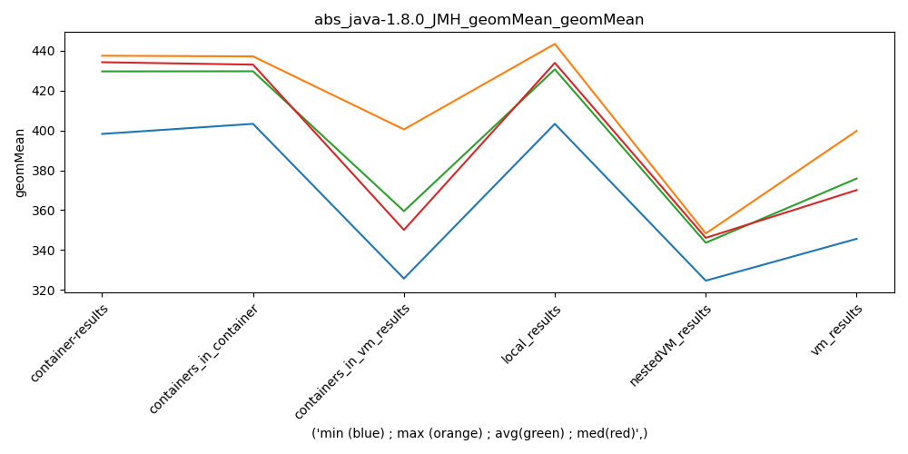
RADARGUNs1
all runs of one jdk are treated as INDIVIDUAL items
BasicOperations.Get.Throughput=
java-1.8.0 RADARGUNs1 BasicOperations.Get.Throughput= where all runs of one jdk are treated as INDIVIDUAL items
MIN 2648167.0 container-results
MIN 2691672.0 containers_in_container
MIN 2089654.0 containers_in_vm_results
MIN 2759139.0 local_results
MIN 680218.0 nestedVM_results
MIN 2040746.0 vm_results
MAX 3315154.0 container-results
MAX 3296719.0 containers_in_container
MAX 2625739.0 containers_in_vm_results
MAX 3294459.0 local_results
MAX 726476.0 nestedVM_results
MAX 2669630.0 vm_results
AVG 3073262.86 container-results
AVG 3094655.68 containers_in_container
AVG 2338326.38 containers_in_vm_results
AVG 3071751.1794871795 local_results
AVG 703589.06 nestedVM_results
AVG 2331949.06 vm_results
MED 3107951.0 container-results
MED 3145826.0 containers_in_container
MED 2314771.0 containers_in_vm_results
MED 3088055.0 local_results
MED 702953.0 nestedVM_results
MED 2291161.0 vm_results

BasicOperations.Put.Throughput=
java-1.8.0 RADARGUNs1 BasicOperations.Put.Throughput= where all runs of one jdk are treated as INDIVIDUAL items
MIN 662072.0 container-results
MIN 672844.0 containers_in_container
MIN 522504.0 containers_in_vm_results
MIN 689797.0 local_results
MIN 170062.0 nestedVM_results
MIN 510215.0 vm_results
MAX 828751.0 container-results
MAX 824080.0 containers_in_container
MAX 656394.0 containers_in_vm_results
MAX 823633.0 local_results
MAX 181659.0 nestedVM_results
MAX 667501.0 vm_results
AVG 768323.94 container-results
AVG 773666.92 containers_in_container
AVG 584579.56 containers_in_vm_results
AVG 767941.9230769231 local_results
AVG 175899.0 nestedVM_results
AVG 582987.28 vm_results
MED 777021.0 container-results
MED 786501.0 containers_in_container
MED 578652.0 containers_in_vm_results
MED 772049.0 local_results
MED 175719.0 nestedVM_results
MED 572819.0 vm_results

BasicOperations.Put.ResponseTimeMean
java-1.8.0 RADARGUNs1 BasicOperations.Put.ResponseTimeMean where all runs of one jdk are treated as INDIVIDUAL items
MIN -4270.0 container-results
MIN -4385.0 containers_in_container
MIN -6812.0 containers_in_vm_results
MIN -4267.0 local_results
MIN -19262.0 nestedVM_results
MIN -7630.0 vm_results
MAX -3840.0 container-results
MAX -3835.0 containers_in_container
MAX -5816.0 containers_in_vm_results
MAX -3934.0 local_results
MAX -17522.0 nestedVM_results
MAX -5762.0 vm_results
AVG -4069.32 container-results
AVG -4064.98 containers_in_container
AVG -6377.32 containers_in_vm_results
AVG -4067.769230769231 local_results
AVG -18118.3 nestedVM_results
AVG -6893.26 vm_results
MED -4080.0 container-results
MED -4067.0 containers_in_container
MED -6480.0 containers_in_vm_results
MED -4057.0 local_results
MED -18128.0 nestedVM_results
MED -7217.0 vm_results
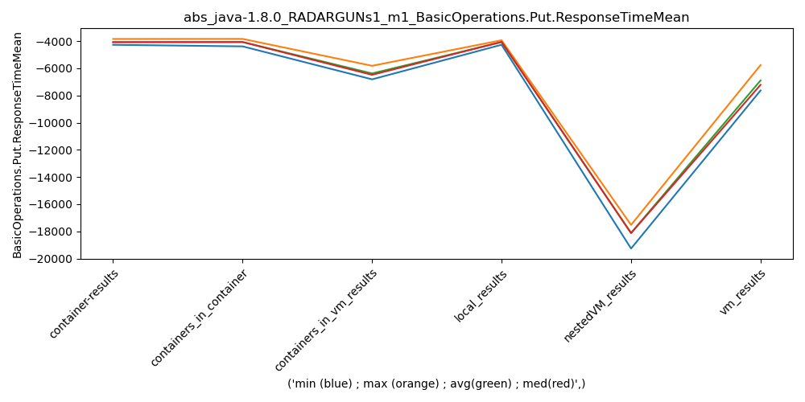
BasicOperations.Get.ResponseTimeMean
java-1.8.0 RADARGUNs1 BasicOperations.Get.ResponseTimeMean where all runs of one jdk are treated as INDIVIDUAL items
MIN -1227.0 container-results
MIN -1190.0 containers_in_container
MIN -1758.0 containers_in_vm_results
MIN -1325.0 local_results
MIN -6035.0 nestedVM_results
MIN -1801.0 vm_results
MAX -1044.0 container-results
MAX -1054.0 containers_in_container
MAX -1396.0 containers_in_vm_results
MAX -1071.0 local_results
MAX -5576.0 nestedVM_results
MAX -1379.0 vm_results
AVG -1123.86 container-results
AVG -1122.0 containers_in_container
AVG -1592.22 containers_in_vm_results
AVG -1152.6410256410256 local_results
AVG -5797.56 nestedVM_results
AVG -1563.42 vm_results
MED -1124.0 container-results
MED -1124.0 containers_in_container
MED -1580.0 containers_in_vm_results
MED -1140.0 local_results
MED -5794.0 nestedVM_results
MED -1533.0 vm_results
geomMean of all keys (benchmark meassured relativre accuracy)
{'MIN': [55052.970484284706, 55445.112623151486, 60133.20865524165, 57274.11017124776, 60556.18593992458, 61502.83097191516], 'MAX': [57608.93863575837, 57565.7703897038, 61161.97393949617, 58148.08519871032, 59923.36013069681, 61342.31032477975], 'AVG': [57325.06192582056, 57484.983139559066, 61037.60858446719, 57668.8376085674, 60046.304836690375, 61868.50407961782], 'MED': [57687.71652268192, 57992.070548996264, 60854.03725484379, 57624.86721405131, 60016.17992433507, 61729.53006391297]}
java-1.8.0 RADARGUNs1 geomMean where all runs of one jdk are treated as INDIVIDUAL items
MIN 55052.970484284706 container-results
MIN 55445.112623151486 containers_in_container
MIN 60133.20865524165 containers_in_vm_results
MIN 57274.11017124776 local_results
MIN 60556.18593992458 nestedVM_results
MIN 61502.83097191516 vm_results
MAX 57608.93863575837 container-results
MAX 57565.7703897038 containers_in_container
MAX 61161.97393949617 containers_in_vm_results
MAX 58148.08519871032 local_results
MAX 59923.36013069681 nestedVM_results
MAX 61342.31032477975 vm_results
AVG 57325.06192582056 container-results
AVG 57484.983139559066 containers_in_container
AVG 61037.60858446719 containers_in_vm_results
AVG 57668.8376085674 local_results
AVG 60046.304836690375 nestedVM_results
AVG 61868.50407961782 vm_results
MED 57687.71652268192 container-results
MED 57992.070548996264 containers_in_container
MED 60854.03725484379 containers_in_vm_results
MED 57624.86721405131 local_results
MED 60016.17992433507 nestedVM_results
MED 61729.53006391297 vm_results
all runs of one jdk were made AVARAGE before processing
BasicOperations.Get.Throughput=
java-1.8.0 RADARGUNs1 BasicOperations.Get.Throughput= where all runs of one jdk were made AVARAGE before processing
MIN 2861303.6 container-results
MIN 2922637.0 containers_in_container
MIN 2173362.8 containers_in_vm_results
MIN 2922411.2 local_results
MIN 695045.6 nestedVM_results
MIN 2199656.2 vm_results
MAX 3182983.2 container-results
MAX 3242323.6 containers_in_container
MAX 2558582.4 containers_in_vm_results
MAX 3224544.0 local_results
MAX 714668.2 nestedVM_results
MAX 2550127.6 vm_results
AVG 3073262.8600000003 container-results
AVG 3094655.68 containers_in_container
AVG 2338326.38 containers_in_vm_results
AVG 3069674.925 local_results
AVG 703589.0599999999 nestedVM_results
AVG 2331949.06 vm_results
MED 3129815.4 container-results
MED 3125190.8 containers_in_container
MED 2295744.2 containers_in_vm_results
MED 3122844.6 local_results
MED 702304.2 nestedVM_results
MED 2266454.2 vm_results
BasicOperations.Put.Throughput=
java-1.8.0 RADARGUNs1 BasicOperations.Put.Throughput= where all runs of one jdk were made AVARAGE before processing
MIN 715324.8 container-results
MIN 730686.2 containers_in_container
MIN 543344.0 containers_in_vm_results
MIN 730628.0 local_results
MIN 173764.6 nestedVM_results
MIN 549914.4 vm_results
MAX 795777.4 container-results
MAX 810584.4 containers_in_container
MAX 639649.6 containers_in_vm_results
MAX 806139.8 local_results
MAX 178661.8 nestedVM_results
MAX 637539.6 vm_results
AVG 768323.9400000001 container-results
AVG 773666.92 containers_in_container
AVG 584579.5599999999 containers_in_vm_results
AVG 767422.96875 local_results
AVG 175899.0 nestedVM_results
AVG 582987.28 vm_results
MED 782440.2 container-results
MED 781297.2 containers_in_container
MED 573935.4 containers_in_vm_results
MED 780724.2 local_results
MED 175582.8 nestedVM_results
MED 566624.0 vm_results

BasicOperations.Put.ResponseTimeMean
java-1.8.0 RADARGUNs1 BasicOperations.Put.ResponseTimeMean where all runs of one jdk were made AVARAGE before processing
MIN -4173.2 container-results
MIN -4156.0 containers_in_container
MIN -6605.8 containers_in_vm_results
MIN -4190.75 local_results
MIN -18480.4 nestedVM_results
MIN -7370.8 vm_results
MAX -3915.4 container-results
MAX -3982.4 containers_in_container
MAX -5986.0 containers_in_vm_results
MAX -4010.2 local_results
MAX -17740.6 nestedVM_results
MAX -5909.4 vm_results
AVG -4069.3199999999997 container-results
AVG -4064.9800000000005 containers_in_container
AVG -6377.32 containers_in_vm_results
AVG -4070.84375 local_results
AVG -18118.3 nestedVM_results
AVG -6893.26 vm_results
MED -4056.8 container-results
MED -4074.4 containers_in_container
MED -6535.2 containers_in_vm_results
MED -4082.0 local_results
MED -18168.4 nestedVM_results
MED -7301.2 vm_results

BasicOperations.Get.ResponseTimeMean
java-1.8.0 RADARGUNs1 BasicOperations.Get.ResponseTimeMean where all runs of one jdk were made AVARAGE before processing
MIN -1164.4 container-results
MIN -1153.8 containers_in_container
MIN -1669.4 containers_in_vm_results
MIN -1185.4 local_results
MIN -5872.2 nestedVM_results
MIN -1653.0 vm_results
MAX -1076.6 container-results
MAX -1090.4 containers_in_container
MAX -1480.0 containers_in_vm_results
MAX -1114.0 local_results
MAX -5697.2 nestedVM_results
MAX -1452.6 vm_results
AVG -1123.8600000000001 container-results
AVG -1122.0 containers_in_container
AVG -1592.22 containers_in_vm_results
AVG -1153.35 local_results
AVG -5797.5599999999995 nestedVM_results
AVG -1563.4199999999998 vm_results
MED -1127.6 container-results
MED -1120.8 containers_in_container
MED -1641.8 containers_in_vm_results
MED -1150.2 local_results
MED -5819.0 nestedVM_results
MED -1595.8 vm_results

geomMean of all keys (benchmark meassured relativre accuracy)
{'MIN': [56157.744253584795, 56568.93000550079, 60072.158012576285, 57068.77862858076, 60168.848798928084, 61959.705524652374], 'MAX': [57162.88176519287, 58122.773559432986, 61707.07946429413, 58375.75002749275, 59936.51442511823, 61120.88390924059], 'AVG': [57325.06192582057, 57484.983139559066, 61037.60858446718, 57669.10127099609, 60046.30483669037, 61868.504079617815], 'MED': [57853.166696249355, 57785.80232792639, 61318.48422632391, 58166.588715455786, 60088.73607421893, 62194.7397250921]}
java-1.8.0 RADARGUNs1 geomMean where all runs of one jdk were made AVARAGE before processing
MIN 56157.744253584795 container-results
MIN 56568.93000550079 containers_in_container
MIN 60072.158012576285 containers_in_vm_results
MIN 57068.77862858076 local_results
MIN 60168.848798928084 nestedVM_results
MIN 61959.705524652374 vm_results
MAX 57162.88176519287 container-results
MAX 58122.773559432986 containers_in_container
MAX 61707.07946429413 containers_in_vm_results
MAX 58375.75002749275 local_results
MAX 59936.51442511823 nestedVM_results
MAX 61120.88390924059 vm_results
AVG 57325.06192582057 container-results
AVG 57484.983139559066 containers_in_container
AVG 61037.60858446718 containers_in_vm_results
AVG 57669.10127099609 local_results
AVG 60046.30483669037 nestedVM_results
AVG 61868.504079617815 vm_results
MED 57853.166696249355 container-results
MED 57785.80232792639 containers_in_container
MED 61318.48422632391 containers_in_vm_results
MED 58166.588715455786 local_results
MED 60088.73607421893 nestedVM_results
MED 62194.7397250921 vm_results
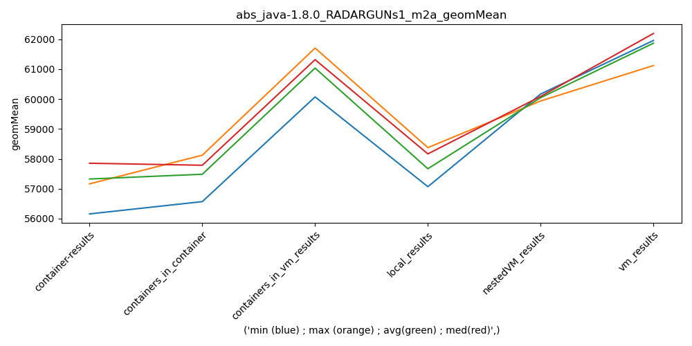
all runs of one jdk were made MEDIAN before processing
BasicOperations.Get.Throughput=
java-1.8.0 RADARGUNs1 BasicOperations.Get.Throughput= where all runs of one jdk were made MEDIAN before processing
MIN 2785919.0 container-results
MIN 2783345.0 containers_in_container
MIN 2178538.0 containers_in_vm_results
MIN 2923879.0 local_results
MIN 694222.0 nestedVM_results
MIN 2182818.0 vm_results
MAX 3239430.0 container-results
MAX 3258521.0 containers_in_container
MAX 2573662.0 containers_in_vm_results
MAX 3224131.0 local_results
MAX 714315.0 nestedVM_results
MAX 2612401.0 vm_results
AVG 3087319.1 container-results
AVG 3102960.3 containers_in_container
AVG 2349197.8 containers_in_vm_results
AVG 3093346.125 local_results
AVG 703711.7 nestedVM_results
AVG 2350084.0 vm_results
MED 3126426.0 container-results
MED 3176762.0 containers_in_container
MED 2305500.0 containers_in_vm_results
MED 3154108.0 local_results
MED 703736.0 nestedVM_results
MED 2321928.0 vm_results
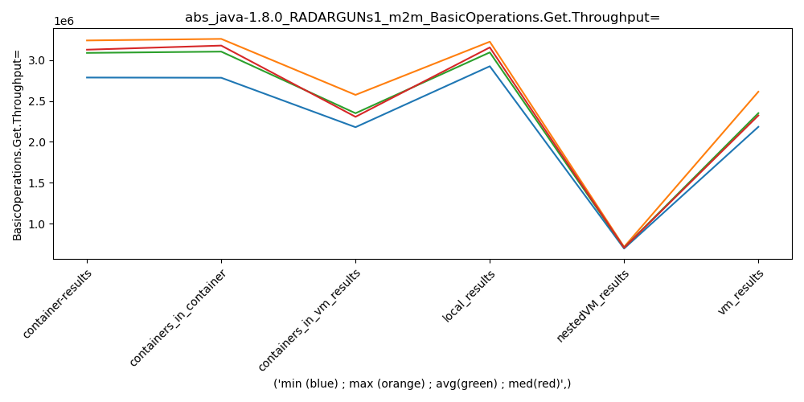
BasicOperations.Put.Throughput=
java-1.8.0 RADARGUNs1 BasicOperations.Put.Throughput= where all runs of one jdk were made MEDIAN before processing
MIN 696475.0 container-results
MIN 695902.0 containers_in_container
MIN 544648.0 containers_in_vm_results
MIN 730968.0 local_results
MIN 173540.0 nestedVM_results
MIN 545652.0 vm_results
MAX 809890.0 container-results
MAX 814689.0 containers_in_container
MAX 643471.0 containers_in_vm_results
MAX 806079.0 local_results
MAX 178575.0 nestedVM_results
MAX 653093.0 vm_results
AVG 771853.3 container-results
AVG 775750.9 containers_in_container
AVG 587298.3 containers_in_vm_results
AVG 773362.875 local_results
AVG 175931.9 nestedVM_results
AVG 587496.3 vm_results
MED 781733.0 container-results
MED 794195.0 containers_in_container
MED 576334.0 containers_in_vm_results
MED 788542.0 local_results
MED 175958.0 nestedVM_results
MED 580449.0 vm_results
BasicOperations.Put.ResponseTimeMean
java-1.8.0 RADARGUNs1 BasicOperations.Put.ResponseTimeMean where all runs of one jdk were made MEDIAN before processing
MIN -4206.0 container-results
MIN -4136.0 containers_in_container
MIN -6596.0 containers_in_vm_results
MIN -4212.0 local_results
MIN -18323.0 nestedVM_results
MIN -7372.0 vm_results
MAX -3904.0 container-results
MAX -3996.0 containers_in_container
MAX -6007.0 containers_in_vm_results
MAX -3981.0 local_results
MAX -17760.0 nestedVM_results
MAX -5901.0 vm_results
AVG -4074.8 container-results
AVG -4054.4 containers_in_container
AVG -6367.4 containers_in_vm_results
AVG -4064.5 local_results
AVG -18086.2 nestedVM_results
AVG -6899.2 vm_results
MED -4080.0 container-results
MED -4053.0 containers_in_container
MED -6488.0 containers_in_vm_results
MED -4067.0 local_results
MED -18185.0 nestedVM_results
MED -7236.0 vm_results

BasicOperations.Get.ResponseTimeMean
java-1.8.0 RADARGUNs1 BasicOperations.Get.ResponseTimeMean where all runs of one jdk were made MEDIAN before processing
MIN -1149.0 container-results
MIN -1149.0 containers_in_container
MIN -1738.0 containers_in_vm_results
MIN -1185.0 local_results
MIN -5845.0 nestedVM_results
MIN -1682.0 vm_results
MAX -1064.0 container-results
MAX -1074.0 containers_in_container
MAX -1448.0 containers_in_vm_results
MAX -1121.0 local_results
MAX -5692.0 nestedVM_results
MAX -1426.0 vm_results
AVG -1115.2 container-results
AVG -1117.8 containers_in_container
AVG -1597.5 containers_in_vm_results
AVG -1141.25 local_results
AVG -5773.2 nestedVM_results
AVG -1547.0 vm_results
MED -1125.0 container-results
MED -1124.0 containers_in_container
MED -1598.0 containers_in_vm_results
MED -1142.0 local_results
MED -5798.0 nestedVM_results
MED -1531.0 vm_results
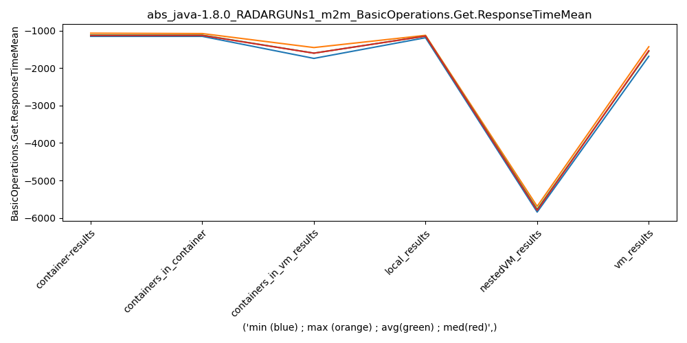
geomMean of all keys (benchmark meassured relativre accuracy)
{'MIN': [55337.02773396088, 55081.26695424554, 60729.94222972779, 57149.98470354486, 59933.51728685466, 61992.071523072795], 'MAX': [57456.14957101009, 58097.913335291, 61606.51907332569, 58357.54574569136, 59924.520887627536, 61555.23626738824], 'AVG': [57364.58232610786, 57470.80778548043, 61206.18805012426, 57716.4936099158, 59961.960524505324, 61957.572323948945], 'MED': [57873.50977489014, 58225.56154051755, 60923.06522805435, 58298.90753500126, 60110.809337885694, 62161.52225452892]}
java-1.8.0 RADARGUNs1 geomMean where all runs of one jdk were made MEDIAN before processing
MIN 55337.02773396088 container-results
MIN 55081.26695424554 containers_in_container
MIN 60729.94222972779 containers_in_vm_results
MIN 57149.98470354486 local_results
MIN 59933.51728685466 nestedVM_results
MIN 61992.071523072795 vm_results
MAX 57456.14957101009 container-results
MAX 58097.913335291 containers_in_container
MAX 61606.51907332569 containers_in_vm_results
MAX 58357.54574569136 local_results
MAX 59924.520887627536 nestedVM_results
MAX 61555.23626738824 vm_results
AVG 57364.58232610786 container-results
AVG 57470.80778548043 containers_in_container
AVG 61206.18805012426 containers_in_vm_results
AVG 57716.4936099158 local_results
AVG 59961.960524505324 nestedVM_results
AVG 61957.572323948945 vm_results
MED 57873.50977489014 container-results
MED 58225.56154051755 containers_in_container
MED 60923.06522805435 containers_in_vm_results
MED 58298.90753500126 local_results
MED 60110.809337885694 nestedVM_results
MED 62161.52225452892 vm_results
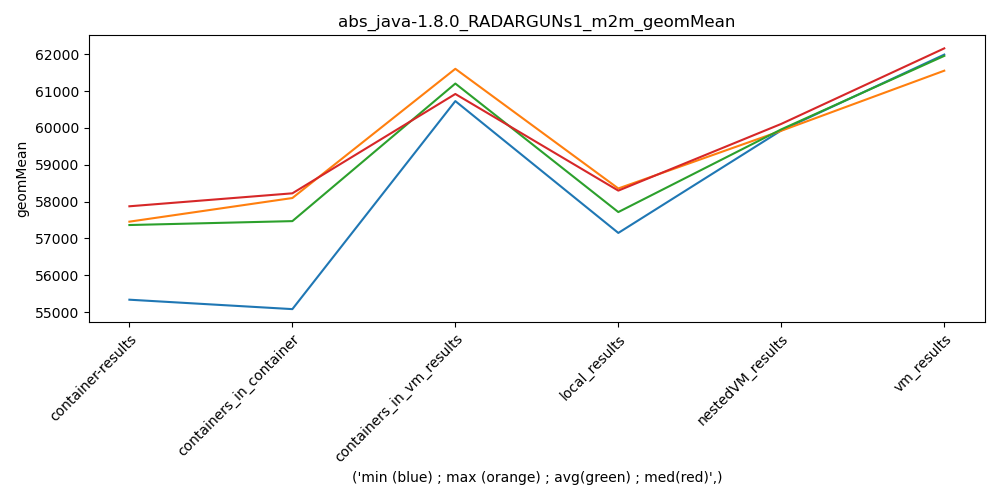
geomMean of all metrics from geomMean of all keys
{'MIN': [55513.943636715376, 55694.851686176844, 60311.04126182867, 57164.22882611393, 60218.9705954646, 61817.79835661272], 'MAX': [57409.02472789691, 57928.248197054134, 61491.400637951614, 58293.702057208255, 59928.131519485534, 61339.22047964343], 'AVG': [57338.23236644074, 57480.257633087036, 61093.75008572096, 57684.806480163, 60018.17689183338, 61898.17925844315], 'MED': [57804.73774341005, 58000.86664193976, 61031.51971131256, 58029.387007874975, 60071.8948414166, 62028.234807250665]}
java-1.8.0 RADARGUNs1 geomMean geomMean
MIN 55513.943636715376 container-results
MIN 55694.851686176844 containers_in_container
MIN 60311.04126182867 containers_in_vm_results
MIN 57164.22882611393 local_results
MIN 60218.9705954646 nestedVM_results
MIN 61817.79835661272 vm_results
MAX 57409.02472789691 container-results
MAX 57928.248197054134 containers_in_container
MAX 61491.400637951614 containers_in_vm_results
MAX 58293.702057208255 local_results
MAX 59928.131519485534 nestedVM_results
MAX 61339.22047964343 vm_results
AVG 57338.23236644074 container-results
AVG 57480.257633087036 containers_in_container
AVG 61093.75008572096 containers_in_vm_results
AVG 57684.806480163 local_results
AVG 60018.17689183338 nestedVM_results
AVG 61898.17925844315 vm_results
MED 57804.73774341005 container-results
MED 58000.86664193976 containers_in_container
MED 61031.51971131256 containers_in_vm_results
MED 58029.387007874975 local_results
MED 60071.8948414166 nestedVM_results
MED 62028.234807250665 vm_results
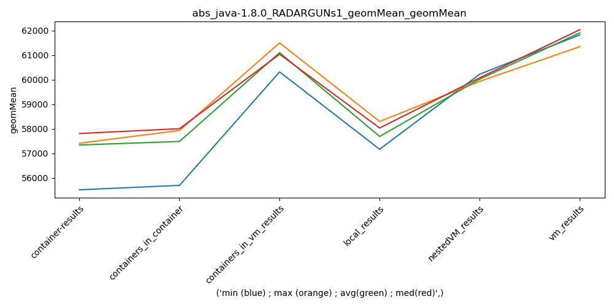
RADARGUNs3
all runs of one jdk are treated as INDIVIDUAL items
BasicOperations.Get.Throughput=
java-1.8.0 RADARGUNs3 BasicOperations.Get.Throughput= where all runs of one jdk are treated as INDIVIDUAL items
MIN 93390.0 container-results
MIN 88694.0 containers_in_container
MIN 36062.0 containers_in_vm_results
MIN 95290.0 local_results
MIN 19244.0 nestedVM_results
MIN 42488.0 vm_results
MAX 97058.0 container-results
MAX 91939.0 containers_in_container
MAX 41617.0 containers_in_vm_results
MAX 98653.0 local_results
MAX 21920.0 nestedVM_results
MAX 52884.0 vm_results
AVG 94922.82 container-results
AVG 90129.93617021276 containers_in_container
AVG 38000.145833333336 containers_in_vm_results
AVG 96548.975 local_results
AVG 20175.88 nestedVM_results
AVG 48391.88 vm_results
MED 94688.0 container-results
MED 90033.0 containers_in_container
MED 37234.0 containers_in_vm_results
MED 96430.0 local_results
MED 20205.0 nestedVM_results
MED 49495.0 vm_results
BasicOperations.Put.Throughput=
java-1.8.0 RADARGUNs3 BasicOperations.Put.Throughput= where all runs of one jdk are treated as INDIVIDUAL items
MIN 23342.0 container-results
MIN 22160.0 containers_in_container
MIN 9014.0 containers_in_vm_results
MIN 23817.0 local_results
MIN 4813.0 nestedVM_results
MIN 10622.0 vm_results
MAX 24264.0 container-results
MAX 22989.0 containers_in_container
MAX 10405.0 containers_in_vm_results
MAX 24665.0 local_results
MAX 5478.0 nestedVM_results
MAX 13208.0 vm_results
AVG 23729.72 container-results
AVG 22532.787234042553 containers_in_container
AVG 9499.75 containers_in_vm_results
AVG 24137.8 local_results
AVG 5044.14 nestedVM_results
AVG 12096.64 vm_results
MED 23670.0 container-results
MED 22506.0 containers_in_container
MED 9312.0 containers_in_vm_results
MED 24111.0 local_results
MED 5051.0 nestedVM_results
MED 12369.0 vm_results

BasicOperations.Put.ResponseTimeMean
java-1.8.0 RADARGUNs3 BasicOperations.Put.ResponseTimeMean where all runs of one jdk are treated as INDIVIDUAL items
MIN -253298.0 container-results
MIN -265558.0 containers_in_container
MIN -664337.0 containers_in_vm_results
MIN -248478.0 local_results
MIN -1246926.0 nestedVM_results
MIN -561771.0 vm_results
MAX -244154.0 container-results
MAX -257407.0 containers_in_container
MAX -571803.0 containers_in_vm_results
MAX -240993.0 local_results
MAX -1094660.0 nestedVM_results
MAX -440380.0 vm_results
AVG -249286.1 container-results
AVG -262221.4680851064 containers_in_container
AVG -630328.3541666666 containers_in_vm_results
AVG -245572.8 local_results
AVG -1190163.08 nestedVM_results
AVG -489257.06 vm_results
MED -249654.0 container-results
MED -262672.0 containers_in_container
MED -642803.0 containers_in_vm_results
MED -245619.0 local_results
MED -1191146.0 nestedVM_results
MED -475340.0 vm_results

BasicOperations.Get.ResponseTimeMean
java-1.8.0 RADARGUNs3 BasicOperations.Get.ResponseTimeMean where all runs of one jdk are treated as INDIVIDUAL items
MIN -62915.0 container-results
MIN -66641.0 containers_in_container
MIN -165278.0 containers_in_vm_results
MIN -61631.0 local_results
MIN -308057.0 nestedVM_results
MIN -139677.0 vm_results
MAX -60078.0 container-results
MAX -63517.0 containers_in_container
MAX -142575.0 containers_in_vm_results
MAX -58937.0 local_results
MAX -270129.0 nestedVM_results
MAX -115600.0 vm_results
AVG -61668.26 container-results
AVG -65146.10638297872 containers_in_container
AVG -156792.9375 containers_in_vm_results
AVG -60645.825 local_results
AVG -293831.36 nestedVM_results
AVG -125254.12 vm_results
MED -61986.0 container-results
MED -65175.0 containers_in_container
MED -160019.0 containers_in_vm_results
MED -60786.0 local_results
MED -293766.0 nestedVM_results
MED -122828.0 vm_results
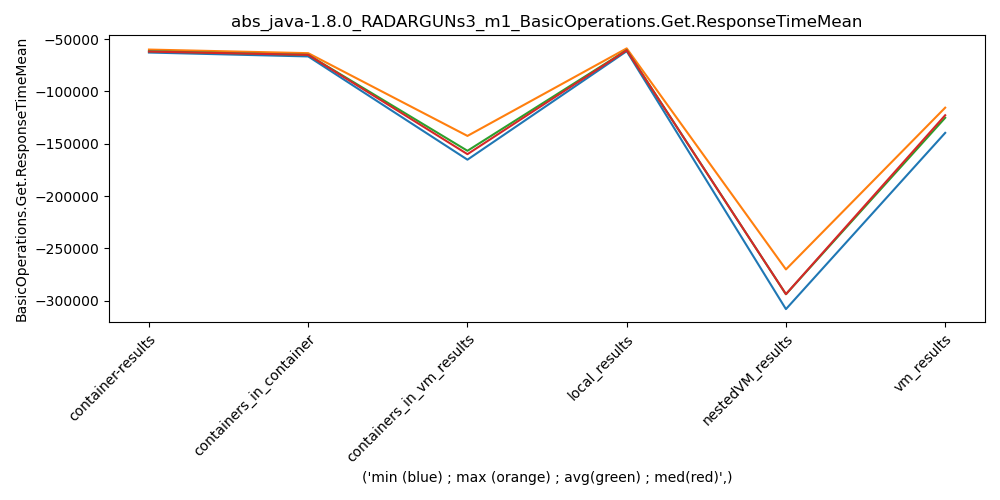
geomMean of all keys (benchmark meassured relativre accuracy)
{'MIN': [76772.57377653156, 76796.46384202917, 77293.4536767603, 76781.28660589883, 77231.72642097744, 77141.69906079926], 'MAX': [76664.31531723538, 76671.25050666227, 77081.59030793444, 76673.61989027791, 77193.06040298761, 77221.22637369012], 'AVG': [76710.66558123937, 76746.78155714192, 77285.44198720917, 76754.99197352567, 77238.00705653976, 77391.20218698557], 'MED': [76741.68585844446, 76744.75680371477, 77278.3831809692, 76757.9254740249, 77303.77232445612, 77321.34769178084]}
java-1.8.0 RADARGUNs3 geomMean where all runs of one jdk are treated as INDIVIDUAL items
MIN 76772.57377653156 container-results
MIN 76796.46384202917 containers_in_container
MIN 77293.4536767603 containers_in_vm_results
MIN 76781.28660589883 local_results
MIN 77231.72642097744 nestedVM_results
MIN 77141.69906079926 vm_results
MAX 76664.31531723538 container-results
MAX 76671.25050666227 containers_in_container
MAX 77081.59030793444 containers_in_vm_results
MAX 76673.61989027791 local_results
MAX 77193.06040298761 nestedVM_results
MAX 77221.22637369012 vm_results
AVG 76710.66558123937 container-results
AVG 76746.78155714192 containers_in_container
AVG 77285.44198720917 containers_in_vm_results
AVG 76754.99197352567 local_results
AVG 77238.00705653976 nestedVM_results
AVG 77391.20218698557 vm_results
MED 76741.68585844446 container-results
MED 76744.75680371477 containers_in_container
MED 77278.3831809692 containers_in_vm_results
MED 76757.9254740249 local_results
MED 77303.77232445612 nestedVM_results
MED 77321.34769178084 vm_results
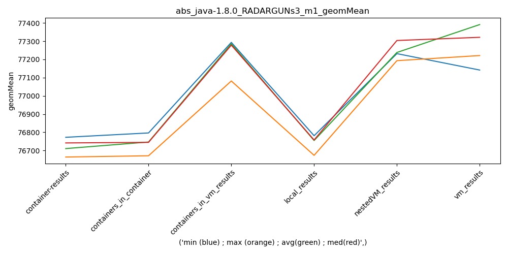
all runs of one jdk were made AVARAGE before processing
BasicOperations.Get.Throughput=
java-1.8.0 RADARGUNs3 BasicOperations.Get.Throughput= where all runs of one jdk were made AVARAGE before processing
MIN 93850.2 container-results
MIN 89265.75 containers_in_container
MIN 36294.6 containers_in_vm_results
MIN 95757.4 local_results
MIN 19704.8 nestedVM_results
MIN 43579.0 vm_results
MAX 96547.0 container-results
MAX 91460.8 containers_in_container
MAX 40871.2 containers_in_vm_results
MAX 98020.8 local_results
MAX 20700.0 nestedVM_results
MAX 51219.2 vm_results
AVG 94922.81999999999 container-results
AVG 90116.36166666666 containers_in_container
AVG 37941.94 containers_in_vm_results
AVG 96548.975 local_results
AVG 20175.879999999997 nestedVM_results
AVG 48391.88 vm_results
MED 94625.8 container-results
MED 90078.6 containers_in_container
MED 37246.8 containers_in_vm_results
MED 96416.4 local_results
MED 20345.4 nestedVM_results
MED 50141.6 vm_results
BasicOperations.Put.Throughput=
java-1.8.0 RADARGUNs3 BasicOperations.Put.Throughput= where all runs of one jdk were made AVARAGE before processing
MIN 23460.2 container-results
MIN 22320.25 containers_in_container
MIN 9073.0 containers_in_vm_results
MIN 23941.6 local_results
MIN 4927.0 nestedVM_results
MIN 10891.8 vm_results
MAX 24135.4 container-results
MAX 22870.8 containers_in_container
MAX 10220.4 containers_in_vm_results
MAX 24507.2 local_results
MAX 5172.4 nestedVM_results
MAX 12805.2 vm_results
AVG 23729.72 container-results
AVG 22529.53166666667 containers_in_container
AVG 9485.093333333334 containers_in_vm_results
AVG 24137.8 local_results
AVG 5044.14 nestedVM_results
AVG 12096.64 vm_results
MED 23653.8 container-results
MED 22521.0 containers_in_container
MED 9312.2 containers_in_vm_results
MED 24108.0 local_results
MED 5082.6 nestedVM_results
MED 12535.0 vm_results
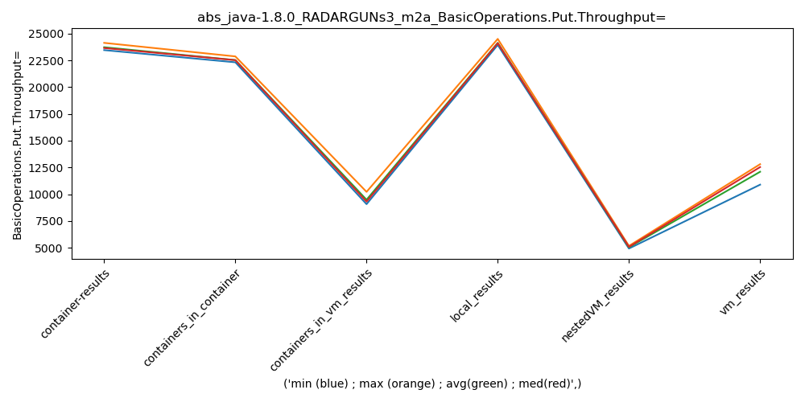
BasicOperations.Put.ResponseTimeMean
java-1.8.0 RADARGUNs3 BasicOperations.Put.ResponseTimeMean where all runs of one jdk were made AVARAGE before processing
MIN -252380.2 container-results
MIN -264344.8 containers_in_container
MIN -658495.6 containers_in_vm_results
MIN -247132.2 local_results
MIN -1219378.6 nestedVM_results
MIN -548198.8 vm_results
MAX -245363.4 container-results
MAX -258425.2 containers_in_container
MAX -585849.2 containers_in_vm_results
MAX -242063.6 local_results
MAX -1160671.4 nestedVM_results
MAX -456948.8 vm_results
AVG -249286.1 container-results
AVG -262266.9583333334 containers_in_container
AVG -631237.8733333333 containers_in_vm_results
AVG -245572.8 local_results
AVG -1190163.08 nestedVM_results
AVG -489257.05999999994 vm_results
MED -249787.6 container-results
MED -263462.8 containers_in_container
MED -646406.8 containers_in_vm_results
MED -246039.6 local_results
MED -1195530.0 nestedVM_results
MED -469376.4 vm_results
BasicOperations.Get.ResponseTimeMean
java-1.8.0 RADARGUNs3 BasicOperations.Get.ResponseTimeMean where all runs of one jdk were made AVARAGE before processing
MIN -62418.6 container-results
MIN -65918.0 containers_in_container
MIN -164000.4 containers_in_vm_results
MIN -61281.4 local_results
MIN -300732.0 nestedVM_results
MIN -136172.8 vm_results
MAX -60484.8 container-results
MAX -64131.2 containers_in_container
MAX -144825.2 containers_in_vm_results
MAX -59568.8 local_results
MAX -286249.8 nestedVM_results
MAX -118789.2 vm_results
AVG -61668.259999999995 container-results
AVG -65154.193333333336 containers_in_container
AVG -157044.3 containers_in_vm_results
AVG -60645.825 local_results
AVG -293831.36 nestedVM_results
AVG -125254.12 vm_results
MED -61990.8 container-results
MED -65326.6 containers_in_container
MED -160806.6 containers_in_vm_results
MED -60784.0 local_results
MED -295580.2 nestedVM_results
MED -122156.8 vm_results
geomMean of all keys (benchmark meassured relativre accuracy)
{'MIN': [76742.16624184625, 76760.8325860841, 77223.17926827777, 76761.92946367085, 77244.61292217717, 77152.7377663679], 'MAX': [76685.33666925311, 76732.64077597571, 77157.61860662905, 76716.72756458508, 77228.79007278878, 77244.20608836818], 'AVG': [76710.66558123937, 76746.829132455, 77284.80080945436, 76754.99197352567, 77238.00705653976, 77391.20218698557], 'MED': [76727.69475156645, 76869.60761647184, 77488.59062558037, 76785.03662589085, 77749.39092181438, 77480.1327028863]}
java-1.8.0 RADARGUNs3 geomMean where all runs of one jdk were made AVARAGE before processing
MIN 76742.16624184625 container-results
MIN 76760.8325860841 containers_in_container
MIN 77223.17926827777 containers_in_vm_results
MIN 76761.92946367085 local_results
MIN 77244.61292217717 nestedVM_results
MIN 77152.7377663679 vm_results
MAX 76685.33666925311 container-results
MAX 76732.64077597571 containers_in_container
MAX 77157.61860662905 containers_in_vm_results
MAX 76716.72756458508 local_results
MAX 77228.79007278878 nestedVM_results
MAX 77244.20608836818 vm_results
AVG 76710.66558123937 container-results
AVG 76746.829132455 containers_in_container
AVG 77284.80080945436 containers_in_vm_results
AVG 76754.99197352567 local_results
AVG 77238.00705653976 nestedVM_results
AVG 77391.20218698557 vm_results
MED 76727.69475156645 container-results
MED 76869.60761647184 containers_in_container
MED 77488.59062558037 containers_in_vm_results
MED 76785.03662589085 local_results
MED 77749.39092181438 nestedVM_results
MED 77480.1327028863 vm_results
all runs of one jdk were made MEDIAN before processing
BasicOperations.Get.Throughput=
java-1.8.0 RADARGUNs3 BasicOperations.Get.Throughput= where all runs of one jdk were made MEDIAN before processing
MIN 93788.0 container-results
MIN 89164.0 containers_in_container
MIN 36140.0 containers_in_vm_results
MIN 95718.0 local_results
MIN 19400.0 nestedVM_results
MIN 43623.0 vm_results
MAX 96570.0 container-results
MAX 91381.0 containers_in_container
MAX 41188.0 containers_in_vm_results
MAX 97812.0 local_results
MAX 20719.0 nestedVM_results
MAX 52408.0 vm_results
AVG 94926.6 container-results
AVG 90094.7 containers_in_container
AVG 38045.0 containers_in_vm_results
AVG 96522.25 local_results
AVG 20125.6 nestedVM_results
AVG 48712.7 vm_results
MED 94688.0 container-results
MED 90103.0 containers_in_container
MED 37220.0 containers_in_vm_results
MED 96397.0 local_results
MED 20328.0 nestedVM_results
MED 50473.0 vm_results

BasicOperations.Put.Throughput=
java-1.8.0 RADARGUNs3 BasicOperations.Put.Throughput= where all runs of one jdk were made MEDIAN before processing
MIN 23425.0 container-results
MIN 22297.0 containers_in_container
MIN 9033.0 containers_in_vm_results
MIN 23942.0 local_results
MIN 4848.0 nestedVM_results
MIN 10901.0 vm_results
MAX 24143.0 container-results
MAX 22848.0 containers_in_container
MAX 10298.0 containers_in_vm_results
MAX 24458.0 local_results
MAX 5175.0 nestedVM_results
MAX 13100.0 vm_results
AVG 23731.7 container-results
AVG 22525.0 containers_in_container
AVG 9511.2 containers_in_vm_results
AVG 24135.5 local_results
AVG 5032.1 nestedVM_results
AVG 12176.8 vm_results
MED 23670.0 container-results
MED 22523.0 containers_in_container
MED 9309.0 containers_in_vm_results
MED 24114.0 local_results
MED 5083.0 nestedVM_results
MED 12614.0 vm_results

BasicOperations.Put.ResponseTimeMean
java-1.8.0 RADARGUNs3 BasicOperations.Put.ResponseTimeMean where all runs of one jdk were made MEDIAN before processing
MIN -252944.0 container-results
MIN -264642.0 containers_in_container
MIN -659325.0 containers_in_vm_results
MIN -246998.0 local_results
MIN -1239762.0 nestedVM_results
MIN -548893.0 vm_results
MAX -244938.0 container-results
MAX -258832.0 containers_in_container
MAX -581048.0 containers_in_vm_results
MAX -241563.0 local_results
MAX -1157325.0 nestedVM_results
MAX -446167.0 vm_results
AVG -249092.3 container-results
AVG -262420.4 containers_in_container
AVG -629210.0 containers_in_vm_results
AVG -245357.625 local_results
AVG -1193591.4 nestedVM_results
AVG -486156.4 vm_results
MED -249654.0 container-results
MED -263588.0 containers_in_container
MED -644391.0 containers_in_vm_results
MED -245608.0 local_results
MED -1199044.0 nestedVM_results
MED -467849.0 vm_results
BasicOperations.Get.ResponseTimeMean
java-1.8.0 RADARGUNs3 BasicOperations.Get.ResponseTimeMean where all runs of one jdk were made MEDIAN before processing
MIN -62334.0 container-results
MIN -66213.0 containers_in_container
MIN -164728.0 containers_in_vm_results
MIN -61336.0 local_results
MIN -303992.0 nestedVM_results
MIN -136156.0 vm_results
MAX -60613.0 container-results
MAX -64223.0 containers_in_container
MAX -144283.0 containers_in_vm_results
MAX -59702.0 local_results
MAX -286258.0 nestedVM_results
MAX -116443.0 vm_results
AVG -61675.9 container-results
AVG -65199.0 containers_in_container
AVG -156833.1 containers_in_vm_results
AVG -60724.75 local_results
AVG -294359.8 nestedVM_results
AVG -124468.4 vm_results
MED -62029.0 container-results
MED -65218.0 containers_in_container
MED -160519.0 containers_in_vm_results
MED -60901.0 local_results
MED -295023.0 nestedVM_results
MED -122221.0 vm_results
geomMean of all keys (benchmark meassured relativre accuracy)
{'MIN': [76717.43309824016, 76826.22664403661, 77165.25254470973, 76761.01915895545, 77159.81968982732, 77210.53937066242], 'MAX': [76703.26542458827, 76754.37917779479, 77221.40364869584, 76640.45839152044, 77201.01814749614, 77280.50089782229], 'AVG': [76700.49089103087, 76762.77084869152, 77302.14791952715, 76755.98653410413, 77233.91857897943, 77402.07835793274], 'MED': [76754.99142101953, 76853.67682828334, 77372.8915924794, 76789.1617668604, 77754.66224844081, 77676.71862976055]}
java-1.8.0 RADARGUNs3 geomMean where all runs of one jdk were made MEDIAN before processing
MIN 76717.43309824016 container-results
MIN 76826.22664403661 containers_in_container
MIN 77165.25254470973 containers_in_vm_results
MIN 76761.01915895545 local_results
MIN 77159.81968982732 nestedVM_results
MIN 77210.53937066242 vm_results
MAX 76703.26542458827 container-results
MAX 76754.37917779479 containers_in_container
MAX 77221.40364869584 containers_in_vm_results
MAX 76640.45839152044 local_results
MAX 77201.01814749614 nestedVM_results
MAX 77280.50089782229 vm_results
AVG 76700.49089103087 container-results
AVG 76762.77084869152 containers_in_container
AVG 77302.14791952715 containers_in_vm_results
AVG 76755.98653410413 local_results
AVG 77233.91857897943 nestedVM_results
AVG 77402.07835793274 vm_results
MED 76754.99142101953 container-results
MED 76853.67682828334 containers_in_container
MED 77372.8915924794 containers_in_vm_results
MED 76789.1617668604 local_results
MED 77754.66224844081 nestedVM_results
MED 77676.71862976055 vm_results
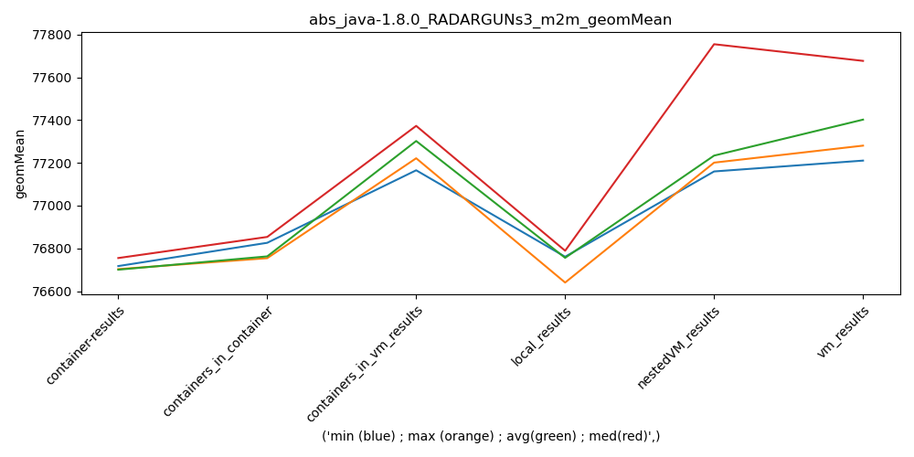
geomMean of all metrics from geomMean of all keys
{'MIN': [76744.0543924135, 76794.50303763697, 77227.27737433065, 76768.077840513, 77212.04399604157, 77168.31949551201], 'MAX': [76684.30415155132, 76719.415410165, 77153.5163525015, 76676.92892459703, 77207.62135539114, 77248.64059954096], 'AVG': [76707.27386787625, 76752.12681043896, 77290.79648821823, 76755.32349228655, 77236.64420663918, 77394.82740748311], 'MED': [76741.45653439336, 76822.66037437061, 77379.90738932625, 76777.37337198103, 77602.32040467272, 77492.59671093119]}
java-1.8.0 RADARGUNs3 geomMean geomMean
MIN 76744.0543924135 container-results
MIN 76794.50303763697 containers_in_container
MIN 77227.27737433065 containers_in_vm_results
MIN 76768.077840513 local_results
MIN 77212.04399604157 nestedVM_results
MIN 77168.31949551201 vm_results
MAX 76684.30415155132 container-results
MAX 76719.415410165 containers_in_container
MAX 77153.5163525015 containers_in_vm_results
MAX 76676.92892459703 local_results
MAX 77207.62135539114 nestedVM_results
MAX 77248.64059954096 vm_results
AVG 76707.27386787625 container-results
AVG 76752.12681043896 containers_in_container
AVG 77290.79648821823 containers_in_vm_results
AVG 76755.32349228655 local_results
AVG 77236.64420663918 nestedVM_results
AVG 77394.82740748311 vm_results
MED 76741.45653439336 container-results
MED 76822.66037437061 containers_in_container
MED 77379.90738932625 containers_in_vm_results
MED 76777.37337198103 local_results
MED 77602.32040467272 nestedVM_results
MED 77492.59671093119 vm_results

SPECJBB
all runs of one jdk are treated as INDIVIDUAL items
jbb2015.result.metric.critical-jOPS
java-1.8.0 SPECJBB jbb2015.result.metric.critical-jOPS where all runs of one jdk are treated as INDIVIDUAL items
MIN 2001.0 container-results
MIN 2014.0 containers_in_container
MIN 1679.0 containers_in_vm_results
MIN 1989.0 local_results
MIN 1026.0 nestedVM_results
MIN 1543.0 vm_results
MAX 2498.0 container-results
MAX 2668.0 containers_in_container
MAX 2350.0 containers_in_vm_results
MAX 2605.0 local_results
MAX 1303.0 nestedVM_results
MAX 2131.0 vm_results
AVG 2271.14 container-results
AVG 2319.92 containers_in_container
AVG 1956.8 containers_in_vm_results
AVG 2318.14 local_results
AVG 1195.469387755102 nestedVM_results
AVG 1782.02 vm_results
MED 2299.0 container-results
MED 2335.0 containers_in_container
MED 1953.0 containers_in_vm_results
MED 2319.0 local_results
MED 1197.0 nestedVM_results
MED 1740.0 vm_results

jbb2015.result.metric.max-jOPS
java-1.8.0 SPECJBB jbb2015.result.metric.max-jOPS where all runs of one jdk are treated as INDIVIDUAL items
MIN 10278.0 container-results
MIN 9271.0 containers_in_container
MIN 7519.0 containers_in_vm_results
MIN 10516.0 local_results
MIN 5605.0 nestedVM_results
MIN 7326.0 vm_results
MAX 10931.0 container-results
MAX 11208.0 containers_in_container
MAX 8580.0 containers_in_vm_results
MAX 11208.0 local_results
MAX 6589.0 nestedVM_results
MAX 8776.0 vm_results
AVG 10615.86 container-results
AVG 10878.06 containers_in_container
AVG 7973.3 containers_in_vm_results
AVG 11003.28 local_results
AVG 6218.448979591837 nestedVM_results
AVG 7888.84 vm_results
MED 10654.0 container-results
MED 10931.0 containers_in_container
MED 7905.0 containers_in_vm_results
MED 11070.0 local_results
MED 6231.0 nestedVM_results
MED 7712.0 vm_results
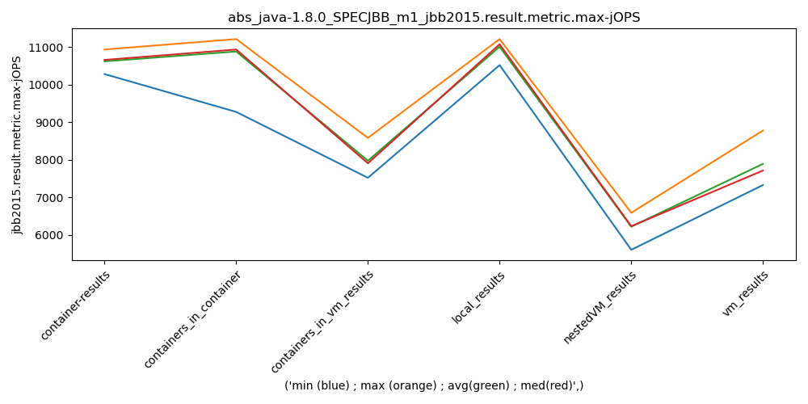
geomMean of all keys (benchmark meassured relativre accuracy)
{'MIN': [4535.005843436147, 4321.0871317297, 3553.0833089022835, 4573.436782114737, 2398.0679723477397, 3362.1448511329786], 'MAX': [5225.4796908992, 5468.358437410628, 4490.322928253601, 5403.410034413454, 2930.0967560816143, 4324.541131727157], 'AVG': [4910.204097631788, 5023.567353504877, 3949.956131401968, 5050.459731469998, 2726.5299181228493, 3749.4093743948524], 'MED': [4949.095472912197, 5052.116883050114, 3929.181212415635, 5066.688267497814, 2731.02673000467, 3663.1789473079252]}
java-1.8.0 SPECJBB geomMean where all runs of one jdk are treated as INDIVIDUAL items
MIN 4535.005843436147 container-results
MIN 4321.0871317297 containers_in_container
MIN 3553.0833089022835 containers_in_vm_results
MIN 4573.436782114737 local_results
MIN 2398.0679723477397 nestedVM_results
MIN 3362.1448511329786 vm_results
MAX 5225.4796908992 container-results
MAX 5468.358437410628 containers_in_container
MAX 4490.322928253601 containers_in_vm_results
MAX 5403.410034413454 local_results
MAX 2930.0967560816143 nestedVM_results
MAX 4324.541131727157 vm_results
AVG 4910.204097631788 container-results
AVG 5023.567353504877 containers_in_container
AVG 3949.956131401968 containers_in_vm_results
AVG 5050.459731469998 local_results
AVG 2726.5299181228493 nestedVM_results
AVG 3749.4093743948524 vm_results
MED 4949.095472912197 container-results
MED 5052.116883050114 containers_in_container
MED 3929.181212415635 containers_in_vm_results
MED 5066.688267497814 local_results
MED 2731.02673000467 nestedVM_results
MED 3663.1789473079252 vm_results

all runs of one jdk were made AVARAGE before processing
jbb2015.result.metric.critical-jOPS
java-1.8.0 SPECJBB jbb2015.result.metric.critical-jOPS where all runs of one jdk were made AVARAGE before processing
MIN 2178.4 container-results
MIN 2269.0 containers_in_container
MIN 1907.8 containers_in_vm_results
MIN 2218.8 local_results
MIN 1161.2 nestedVM_results
MIN 1661.6 vm_results
MAX 2423.0 container-results
MAX 2437.6 containers_in_container
MAX 2009.2 containers_in_vm_results
MAX 2417.6 local_results
MAX 1230.6 nestedVM_results
MAX 1968.8 vm_results
AVG 2271.1400000000003 container-results
AVG 2319.92 containers_in_container
AVG 1956.8 containers_in_vm_results
AVG 2318.1400000000003 local_results
AVG 1195.705 nestedVM_results
AVG 1782.02 vm_results
MED 2269.8 container-results
MED 2298.2 containers_in_container
MED 1957.2 containers_in_vm_results
MED 2321.8 local_results
MED 1203.8 nestedVM_results
MED 1759.4 vm_results
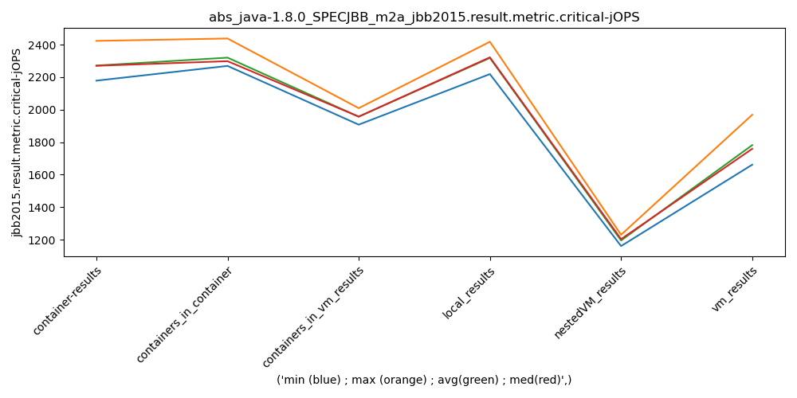
jbb2015.result.metric.max-jOPS
java-1.8.0 SPECJBB jbb2015.result.metric.max-jOPS where all runs of one jdk were made AVARAGE before processing
MIN 10493.2 container-results
MIN 10682.4 containers_in_container
MIN 7673.4 containers_in_vm_results
MIN 10820.4 local_results
MIN 6022.8 nestedVM_results
MIN 7541.8 vm_results
MAX 10737.2 container-results
MAX 11069.6 containers_in_container
MAX 8473.4 containers_in_vm_results
MAX 11125.2 local_results
MAX 6382.6 nestedVM_results
MAX 8641.4 vm_results
AVG 10615.86 container-results
AVG 10878.060000000001 containers_in_container
AVG 7973.3 containers_in_vm_results
AVG 11003.28 local_results
AVG 6220.37 nestedVM_results
AVG 7888.839999999999 vm_results
MED 10654.2 container-results
MED 10931.2 containers_in_container
MED 7838.8 containers_in_vm_results
MED 11042.0 local_results
MED 6296.8 nestedVM_results
MED 7648.6 vm_results
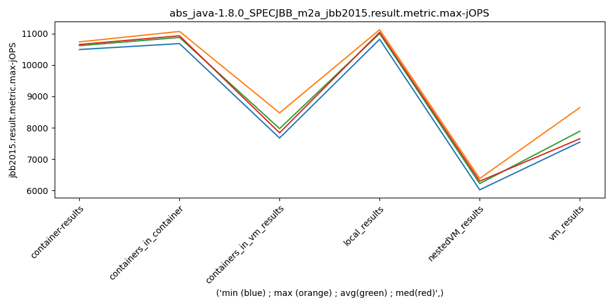
geomMean of all keys (benchmark meassured relativre accuracy)
{'MIN': [4781.044538591959, 4923.247464834568, 3826.135454998947, 4899.826886737938, 2644.5557963484152, 3539.9795027655173], 'MAX': [5100.611296697682, 5194.54107308817, 4126.1065521869405, 5186.162697023687, 2802.5751658073327, 4124.704634273829], 'AVG': [4910.2040976317885, 5023.567353504878, 3949.956131401968, 5050.459731469998, 2727.2197401107965, 3749.4093743948524], 'MED': [4917.611530001125, 5012.193515817202, 3916.8992021751083, 5063.33048496738, 2753.195932003387, 3668.371142619024]}
java-1.8.0 SPECJBB geomMean where all runs of one jdk were made AVARAGE before processing
MIN 4781.044538591959 container-results
MIN 4923.247464834568 containers_in_container
MIN 3826.135454998947 containers_in_vm_results
MIN 4899.826886737938 local_results
MIN 2644.5557963484152 nestedVM_results
MIN 3539.9795027655173 vm_results
MAX 5100.611296697682 container-results
MAX 5194.54107308817 containers_in_container
MAX 4126.1065521869405 containers_in_vm_results
MAX 5186.162697023687 local_results
MAX 2802.5751658073327 nestedVM_results
MAX 4124.704634273829 vm_results
AVG 4910.2040976317885 container-results
AVG 5023.567353504878 containers_in_container
AVG 3949.956131401968 containers_in_vm_results
AVG 5050.459731469998 local_results
AVG 2727.2197401107965 nestedVM_results
AVG 3749.4093743948524 vm_results
MED 4917.611530001125 container-results
MED 5012.193515817202 containers_in_container
MED 3916.8992021751083 containers_in_vm_results
MED 5063.33048496738 local_results
MED 2753.195932003387 nestedVM_results
MED 3668.371142619024 vm_results
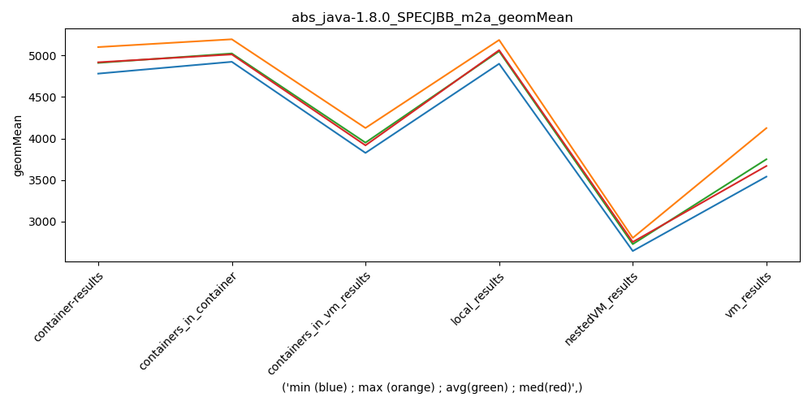
all runs of one jdk were made MEDIAN before processing
jbb2015.result.metric.critical-jOPS
java-1.8.0 SPECJBB jbb2015.result.metric.critical-jOPS where all runs of one jdk were made MEDIAN before processing
MIN 2156.0 container-results
MIN 2233.0 containers_in_container
MIN 1837.0 containers_in_vm_results
MIN 2209.0 local_results
MIN 1161.0 nestedVM_results
MIN 1636.0 vm_results
MAX 2446.0 container-results
MAX 2483.0 containers_in_container
MAX 2064.0 containers_in_vm_results
MAX 2384.0 local_results
MAX 1235.0 nestedVM_results
MAX 2019.0 vm_results
AVG 2267.3 container-results
AVG 2341.3 containers_in_container
AVG 1945.5 containers_in_vm_results
AVG 2305.5 local_results
AVG 1199.8 nestedVM_results
AVG 1791.5 vm_results
MED 2260.0 container-results
MED 2348.0 containers_in_container
MED 1959.0 containers_in_vm_results
MED 2331.0 local_results
MED 1201.0 nestedVM_results
MED 1720.0 vm_results

jbb2015.result.metric.max-jOPS
java-1.8.0 SPECJBB jbb2015.result.metric.max-jOPS where all runs of one jdk were made MEDIAN before processing
MIN 10509.0 container-results
MIN 10654.0 containers_in_container
MIN 7712.0 containers_in_vm_results
MIN 10931.0 local_results
MIN 6007.0 nestedVM_results
MIN 7538.0 vm_results
MAX 10654.0 container-results
MAX 11070.0 containers_in_container
MAX 8483.0 containers_in_vm_results
MAX 11208.0 local_results
MAX 6359.0 nestedVM_results
MAX 8676.0 vm_results
AVG 10611.9 container-results
AVG 10917.5 containers_in_container
AVG 7972.1 containers_in_vm_results
AVG 11028.2 local_results
AVG 6218.0 nestedVM_results
AVG 7895.2 vm_results
MED 10654.0 container-results
MED 10931.0 containers_in_container
MED 7808.0 containers_in_vm_results
MED 11070.0 local_results
MED 6261.0 nestedVM_results
MED 7616.0 vm_results
geomMean of all keys (benchmark meassured relativre accuracy)
{'MIN': [4759.979411720181, 4877.538518556261, 3763.900104944338, 4913.916869463707, 2640.8572471831944, 3511.718667547274], 'MAX': [5104.868656488627, 5242.786472859638, 4184.3651848279205, 5169.126812141486, 2802.3855908850232, 4185.312891529139], 'AVG': [4905.1361724217195, 5055.802878870972, 3938.2382546006534, 5042.371971602254, 2731.3652996258115, 3760.8843109034874], 'MED': [4906.937945399351, 5066.161071264908, 3910.9937356124724, 5079.780507069178, 2742.1635618613273, 3619.325904087666]}
java-1.8.0 SPECJBB geomMean where all runs of one jdk were made MEDIAN before processing
MIN 4759.979411720181 container-results
MIN 4877.538518556261 containers_in_container
MIN 3763.900104944338 containers_in_vm_results
MIN 4913.916869463707 local_results
MIN 2640.8572471831944 nestedVM_results
MIN 3511.718667547274 vm_results
MAX 5104.868656488627 container-results
MAX 5242.786472859638 containers_in_container
MAX 4184.3651848279205 containers_in_vm_results
MAX 5169.126812141486 local_results
MAX 2802.3855908850232 nestedVM_results
MAX 4185.312891529139 vm_results
AVG 4905.1361724217195 container-results
AVG 5055.802878870972 containers_in_container
AVG 3938.2382546006534 containers_in_vm_results
AVG 5042.371971602254 local_results
AVG 2731.3652996258115 nestedVM_results
AVG 3760.8843109034874 vm_results
MED 4906.937945399351 container-results
MED 5066.161071264908 containers_in_container
MED 3910.9937356124724 containers_in_vm_results
MED 5079.780507069178 local_results
MED 2742.1635618613273 nestedVM_results
MED 3619.325904087666 vm_results
geomMean of all metrics from geomMean of all keys
{'MIN': [4690.673865435533, 4699.1048176388895, 3712.512632219642, 4793.106445671606, 2558.5056657676423, 3470.395417987448], 'MAX': [5143.329192799994, 5300.564328151449, 4263.986928512137, 5251.8270560540805, 2844.389329468174, 4210.693267984373], 'AVG': [4908.514207704668, 5034.289626786184, 3946.0463036380565, 5047.7623711585975, 2728.3708171911485, 3753.230457780683], 'MED': [4924.5158395030485, 5043.438597616433, 3919.017398556558, 5069.92812221807, 2742.113805020717, 3650.225528102192]}
java-1.8.0 SPECJBB geomMean geomMean
MIN 4690.673865435533 container-results
MIN 4699.1048176388895 containers_in_container
MIN 3712.512632219642 containers_in_vm_results
MIN 4793.106445671606 local_results
MIN 2558.5056657676423 nestedVM_results
MIN 3470.395417987448 vm_results
MAX 5143.329192799994 container-results
MAX 5300.564328151449 containers_in_container
MAX 4263.986928512137 containers_in_vm_results
MAX 5251.8270560540805 local_results
MAX 2844.389329468174 nestedVM_results
MAX 4210.693267984373 vm_results
AVG 4908.514207704668 container-results
AVG 5034.289626786184 containers_in_container
AVG 3946.0463036380565 containers_in_vm_results
AVG 5047.7623711585975 local_results
AVG 2728.3708171911485 nestedVM_results
AVG 3753.230457780683 vm_results
MED 4924.5158395030485 container-results
MED 5043.438597616433 containers_in_container
MED 3919.017398556558 containers_in_vm_results
MED 5069.92812221807 local_results
MED 2742.113805020717 nestedVM_results
MED 3650.225528102192 vm_results

geomMean of all benchamrks from geomMean of all metrics and all keys
{'MIN': [2810.8029518515805, 2977.887621039266, 2485.3962340219714, 2789.9339962485988, 2743.3440040904406, 2713.7417675665465], 'MAX': [2921.7275325897917, 3140.449443677649, 2672.7633677129365, 2931.6756617354076, 2846.137105578889, 3086.1815699580607], 'AVG': [2880.7977049052956, 3077.1617961279435, 2569.4684075142304, 2865.9300912270683, 2810.465073452942, 2913.7455903577493], 'MED': [2888.9175803451676, 3091.5467482894396, 2555.86413169443, 2865.418290547943, 2818.658984906864, 2913.638353237916]}
java-1.8.0 geomMean geomMean geomMean
MIN 2810.8029518515805 container-results
MIN 2977.887621039266 containers_in_container
MIN 2485.3962340219714 containers_in_vm_results
MIN 2789.9339962485988 local_results
MIN 2743.3440040904406 nestedVM_results
MIN 2713.7417675665465 vm_results
MAX 2921.7275325897917 container-results
MAX 3140.449443677649 containers_in_container
MAX 2672.7633677129365 containers_in_vm_results
MAX 2931.6756617354076 local_results
MAX 2846.137105578889 nestedVM_results
MAX 3086.1815699580607 vm_results
AVG 2880.7977049052956 container-results
AVG 3077.1617961279435 containers_in_container
AVG 2569.4684075142304 containers_in_vm_results
AVG 2865.9300912270683 local_results
AVG 2810.465073452942 nestedVM_results
AVG 2913.7455903577493 vm_results
MED 2888.9175803451676 container-results
MED 3091.5467482894396 containers_in_container
MED 2555.86413169443 containers_in_vm_results
MED 2865.418290547943 local_results
MED 2818.658984906864 nestedVM_results
MED 2913.638353237916 vm_results
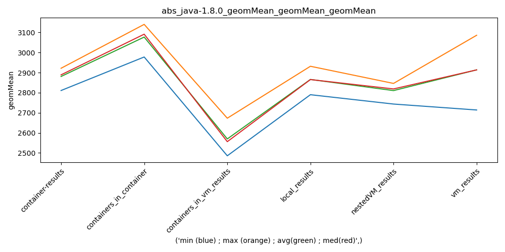
java-11
DACAPO
all runs of one jdk are treated as INDIVIDUAL items
geom
java-11 DACAPO geom where all runs of one jdk are treated as INDIVIDUAL items
MIN -854.0 container-results
MIN -1865.0 containers_in_container
MIN -973.0 containers_in_vm_results
MIN -823.0 local_results
MIN -2502.0 nestedVM_results
MIN -1945.0 vm_results
MAX -1357.0 container-results
MAX -2099.0 containers_in_container
MAX -1386.0 containers_in_vm_results
MAX -1332.0 local_results
MAX -3945.0 nestedVM_results
MAX -2736.0 vm_results
AVG -1207.6666666666667 container-results
AVG -1943.8636363636363 containers_in_container
AVG -1173.8809523809523 containers_in_vm_results
AVG -1177.4807692307693 local_results
AVG -3651.5333333333333 nestedVM_results
AVG -2273.909090909091 vm_results
MED -1234.0 container-results
MED -1943.0 containers_in_container
MED -1182.0 containers_in_vm_results
MED -1208.0 local_results
MED -3668.0 nestedVM_results
MED -2184.0 vm_results

geomMean of all keys (benchmark meassured relativre accuracy)
{'MIN': [854.0, 1865.0, 973.0, 823.0, 2502.0, 1945.0], 'MAX': [1357.0, 2099.0, 1386.0, 1332.0, 3945.0, 2736.0], 'AVG': [1207.6666666666667, 1943.8636363636363, 1173.8809523809523, 1177.4807692307693, 3651.5333333333333, 2273.909090909091], 'MED': [1234.0, 1943.0, 1182.0, 1208.0, 3668.0, 2184.0]}
java-11 DACAPO geomMean where all runs of one jdk are treated as INDIVIDUAL items
MIN -854.0 container-results
MIN -1865.0 containers_in_container
MIN -973.0 containers_in_vm_results
MIN -823.0 local_results
MIN -2502.0 nestedVM_results
MIN -1945.0 vm_results
MAX -1357.0 container-results
MAX -2099.0 containers_in_container
MAX -1386.0 containers_in_vm_results
MAX -1332.0 local_results
MAX -3945.0 nestedVM_results
MAX -2736.0 vm_results
AVG -1207.6666666666667 container-results
AVG -1943.8636363636363 containers_in_container
AVG -1173.8809523809523 containers_in_vm_results
AVG -1177.4807692307693 local_results
AVG -3651.5333333333333 nestedVM_results
AVG -2273.909090909091 vm_results
MED -1234.0 container-results
MED -1943.0 containers_in_container
MED -1182.0 containers_in_vm_results
MED -1208.0 local_results
MED -3668.0 nestedVM_results
MED -2184.0 vm_results
all runs of one jdk were made AVARAGE before processing
geom
java-11 DACAPO geom where all runs of one jdk were made AVARAGE before processing
MIN -867.6 container-results
MIN -1875.0 containers_in_container
MIN -1003.6 containers_in_vm_results
MIN -854.4 local_results
MIN -3454.2 nestedVM_results
MIN -1991.8 vm_results
MAX -1252.6 container-results
MAX -2024.6666666666667 containers_in_container
MAX -1215.0 containers_in_vm_results
MAX -1240.4 local_results
MAX -3779.6666666666665 nestedVM_results
MAX -2605.4 vm_results
AVG -1208.2045454545455 container-results
AVG -1935.5757575757575 containers_in_container
AVG -1177.9348484848485 containers_in_vm_results
AVG -1180.6727272727273 local_results
AVG -3661.181818181818 nestedVM_results
AVG -2268.1983333333333 vm_results
MED -1240.2 container-results
MED -1932.0 containers_in_container
MED -1195.6666666666667 containers_in_vm_results
MED -1217.4 local_results
MED -3667.8 nestedVM_results
MED -2165.5 vm_results
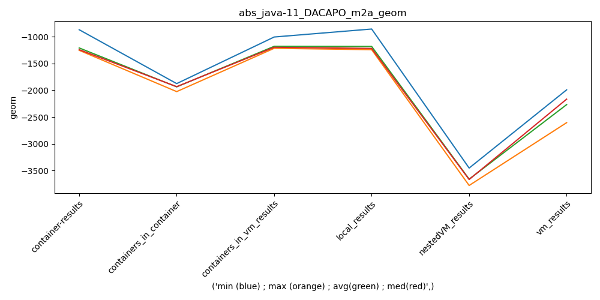
geomMean of all keys (benchmark meassured relativre accuracy)
{'MIN': [867.6, 1875.0, 1003.6, 854.4, 3454.2, 1991.8], 'MAX': [1252.6, 2024.6666666666667, 1215.0, 1240.4, 3779.6666666666665, 2605.4], 'AVG': [1208.2045454545455, 1935.5757575757575, 1177.9348484848485, 1180.6727272727273, 3661.181818181818, 2268.1983333333333], 'MED': [1240.2, 1932.0, 1195.6666666666667, 1217.4, 3667.8, 2165.5]}
java-11 DACAPO geomMean where all runs of one jdk were made AVARAGE before processing
MIN -867.6 container-results
MIN -1875.0 containers_in_container
MIN -1003.6 containers_in_vm_results
MIN -854.4 local_results
MIN -3454.2 nestedVM_results
MIN -1991.8 vm_results
MAX -1252.6 container-results
MAX -2024.6666666666667 containers_in_container
MAX -1215.0 containers_in_vm_results
MAX -1240.4 local_results
MAX -3779.6666666666665 nestedVM_results
MAX -2605.4 vm_results
AVG -1208.2045454545455 container-results
AVG -1935.5757575757575 containers_in_container
AVG -1177.9348484848485 containers_in_vm_results
AVG -1180.6727272727273 local_results
AVG -3661.181818181818 nestedVM_results
AVG -2268.1983333333333 vm_results
MED -1240.2 container-results
MED -1932.0 containers_in_container
MED -1195.6666666666667 containers_in_vm_results
MED -1217.4 local_results
MED -3667.8 nestedVM_results
MED -2165.5 vm_results

all runs of one jdk were made MEDIAN before processing
geom
java-11 DACAPO geom where all runs of one jdk were made MEDIAN before processing
MIN -862.0 container-results
MIN -1875.0 containers_in_container
MIN -994.0 containers_in_vm_results
MIN -839.0 local_results
MIN -3591.0 nestedVM_results
MIN -1996.0 vm_results
MAX -1261.0 container-results
MAX -2009.0 containers_in_container
MAX -1247.0 containers_in_vm_results
MAX -1259.0 local_results
MAX -3792.0 nestedVM_results
MAX -2635.0 vm_results
AVG -1207.8181818181818 container-results
AVG -1948.2727272727273 containers_in_container
AVG -1180.909090909091 containers_in_vm_results
AVG -1180.7272727272727 local_results
AVG -3672.5454545454545 nestedVM_results
AVG -2271.5 vm_results
MED -1242.0 container-results
MED -1960.0 containers_in_container
MED -1201.0 containers_in_vm_results
MED -1218.0 local_results
MED -3664.0 nestedVM_results
MED -2184.0 vm_results

geomMean of all keys (benchmark meassured relativre accuracy)
{'MIN': [862.0, 1875.0, 994.0, 839.0, 3591.0, 1996.0], 'MAX': [1261.0, 2009.0, 1247.0, 1259.0, 3792.0, 2635.0], 'AVG': [1207.8181818181818, 1948.2727272727273, 1180.909090909091, 1180.7272727272727, 3672.5454545454545, 2271.5], 'MED': [1242.0, 1960.0, 1201.0, 1218.0, 3664.0, 2184.0]}
java-11 DACAPO geomMean where all runs of one jdk were made MEDIAN before processing
MIN -862.0 container-results
MIN -1875.0 containers_in_container
MIN -994.0 containers_in_vm_results
MIN -839.0 local_results
MIN -3591.0 nestedVM_results
MIN -1996.0 vm_results
MAX -1261.0 container-results
MAX -2009.0 containers_in_container
MAX -1247.0 containers_in_vm_results
MAX -1259.0 local_results
MAX -3792.0 nestedVM_results
MAX -2635.0 vm_results
AVG -1207.8181818181818 container-results
AVG -1948.2727272727273 containers_in_container
AVG -1180.909090909091 containers_in_vm_results
AVG -1180.7272727272727 local_results
AVG -3672.5454545454545 nestedVM_results
AVG -2271.5 vm_results
MED -1242.0 container-results
MED -1960.0 containers_in_container
MED -1201.0 containers_in_vm_results
MED -1218.0 local_results
MED -3664.0 nestedVM_results
MED -2184.0 vm_results
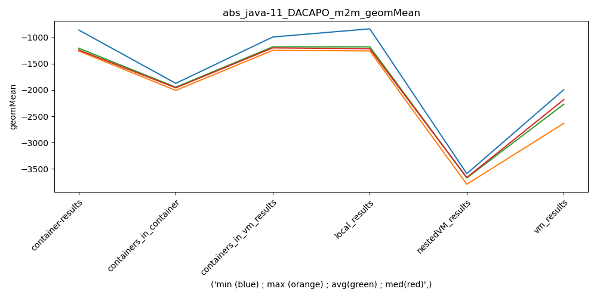
geomMean of all metrics from geomMean of all keys
{'MIN': [861.1818997568362, 1871.6607231197663, 990.1172473455006, 838.7019998487368, 3142.558686494084, 1977.4641716473973], 'MAX': [1289.3449211294367, 2043.8481961237792, 1280.5660602599328, 1276.5286629916654, 3838.1588558758867, 2658.2166492622346], 'AVG': [1207.89644341949, 1942.5635715588423, 1177.5714398402552, 1179.6259461232596, 3661.7434668133083, 2271.201268242902], 'MED': [1238.7285887802366, 1944.9659292256558, 1192.8619948299145, 1214.4580184959386, 3666.59953806506, 2177.8158389417517]}
java-11 DACAPO geomMean geomMean
MIN -861.1818997568362 container-results
MIN -1871.6607231197663 containers_in_container
MIN -990.1172473455006 containers_in_vm_results
MIN -838.7019998487368 local_results
MIN -3142.558686494084 nestedVM_results
MIN -1977.4641716473973 vm_results
MAX -1289.3449211294367 container-results
MAX -2043.8481961237792 containers_in_container
MAX -1280.5660602599328 containers_in_vm_results
MAX -1276.5286629916654 local_results
MAX -3838.1588558758867 nestedVM_results
MAX -2658.2166492622346 vm_results
AVG -1207.89644341949 container-results
AVG -1942.5635715588423 containers_in_container
AVG -1177.5714398402552 containers_in_vm_results
AVG -1179.6259461232596 local_results
AVG -3661.7434668133083 nestedVM_results
AVG -2271.201268242902 vm_results
MED -1238.7285887802366 container-results
MED -1944.9659292256558 containers_in_container
MED -1192.8619948299145 containers_in_vm_results
MED -1214.4580184959386 local_results
MED -3666.59953806506 nestedVM_results
MED -2177.8158389417517 vm_results

J2DBENCH
all runs of one jdk are treated as INDIVIDUAL items
j2dbench.geom
java-11 J2DBENCH j2dbench.geom where all runs of one jdk are treated as INDIVIDUAL items
MIN 143502.0 container-results
MIN 138660.0 containers_in_container
MIN 101050.0 containers_in_vm_results
MIN 146509.0 local_results
MIN 95517.0 nestedVM_results
MIN 102399.0 vm_results
MAX 144920.0 container-results
MAX 139902.0 containers_in_container
MAX 105220.0 containers_in_vm_results
MAX 150734.0 local_results
MAX 98551.0 nestedVM_results
MAX 147284.0 vm_results
AVG 144173.0909090909 container-results
AVG 139257.77358490566 containers_in_container
AVG 103696.25925925926 containers_in_vm_results
AVG 148703.6222222222 local_results
AVG 97489.93333333333 nestedVM_results
AVG 127862.44444444444 vm_results
MED 144002.0 container-results
MED 139100.0 containers_in_container
MED 103774.0 containers_in_vm_results
MED 149900.0 local_results
MED 97716.0 nestedVM_results
MED 146361.0 vm_results

geomMean of all keys (benchmark meassured relativre accuracy)
{'MIN': [143502.0, 138660.0, 101050.0, 146509.0, 95517.0, 102399.0], 'MAX': [144920.0, 139902.0, 105220.0, 150734.0, 98551.0, 147284.0], 'AVG': [144173.0909090909, 139257.77358490566, 103696.25925925926, 148703.6222222222, 97489.93333333333, 127862.44444444444], 'MED': [144002.0, 139100.0, 103774.0, 149900.0, 97716.0, 146361.0]}
java-11 J2DBENCH geomMean where all runs of one jdk are treated as INDIVIDUAL items
MIN 143502.0 container-results
MIN 138660.0 containers_in_container
MIN 101050.0 containers_in_vm_results
MIN 146509.0 local_results
MIN 95517.0 nestedVM_results
MIN 102399.0 vm_results
MAX 144920.0 container-results
MAX 139902.0 containers_in_container
MAX 105220.0 containers_in_vm_results
MAX 150734.0 local_results
MAX 98551.0 nestedVM_results
MAX 147284.0 vm_results
AVG 144173.0909090909 container-results
AVG 139257.77358490566 containers_in_container
AVG 103696.25925925926 containers_in_vm_results
AVG 148703.6222222222 local_results
AVG 97489.93333333333 nestedVM_results
AVG 127862.44444444444 vm_results
MED 144002.0 container-results
MED 139100.0 containers_in_container
MED 103774.0 containers_in_vm_results
MED 149900.0 local_results
MED 97716.0 nestedVM_results
MED 146361.0 vm_results
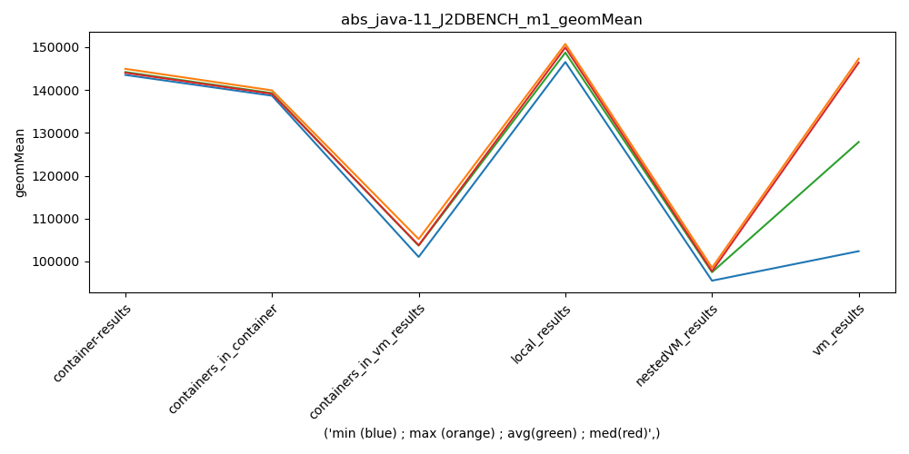
all runs of one jdk were made AVARAGE before processing
j2dbench.geom
java-11 J2DBENCH j2dbench.geom where all runs of one jdk were made AVARAGE before processing
MIN 143705.2 container-results
MIN 138820.0 containers_in_container
MIN 102801.2 containers_in_vm_results
MIN 146650.8 local_results
MIN 97081.8 nestedVM_results
MIN 103963.6 vm_results
MAX 144831.0 container-results
MAX 139751.2 containers_in_container
MAX 104542.0 containers_in_vm_results
MAX 150637.0 local_results
MAX 97991.8 nestedVM_results
MAX 147037.8 vm_results
AVG 144173.0909090909 container-results
AVG 139268.54545454544 containers_in_container
AVG 103688.03181818183 containers_in_vm_results
AVG 148703.62222222224 local_results
AVG 97489.93333333333 nestedVM_results
AVG 127862.44444444444 vm_results
MED 143948.4 container-results
MED 139065.6 containers_in_container
MED 103790.8 containers_in_vm_results
MED 149416.0 local_results
MED 97544.2 nestedVM_results
MED 146419.4 vm_results

geomMean of all keys (benchmark meassured relativre accuracy)
{'MIN': [143705.2, 138820.0, 102801.2, 146650.8, 97081.8, 103963.6], 'MAX': [144831.0, 139751.2, 104542.0, 150637.0, 97991.8, 147037.8], 'AVG': [144173.0909090909, 139268.54545454544, 103688.03181818183, 148703.62222222224, 97489.93333333333, 127862.44444444444], 'MED': [143948.4, 139065.6, 103790.8, 149416.0, 97544.2, 146419.4]}
java-11 J2DBENCH geomMean where all runs of one jdk were made AVARAGE before processing
MIN 143705.2 container-results
MIN 138820.0 containers_in_container
MIN 102801.2 containers_in_vm_results
MIN 146650.8 local_results
MIN 97081.8 nestedVM_results
MIN 103963.6 vm_results
MAX 144831.0 container-results
MAX 139751.2 containers_in_container
MAX 104542.0 containers_in_vm_results
MAX 150637.0 local_results
MAX 97991.8 nestedVM_results
MAX 147037.8 vm_results
AVG 144173.0909090909 container-results
AVG 139268.54545454544 containers_in_container
AVG 103688.03181818183 containers_in_vm_results
AVG 148703.62222222224 local_results
AVG 97489.93333333333 nestedVM_results
AVG 127862.44444444444 vm_results
MED 143948.4 container-results
MED 139065.6 containers_in_container
MED 103790.8 containers_in_vm_results
MED 149416.0 local_results
MED 97544.2 nestedVM_results
MED 146419.4 vm_results
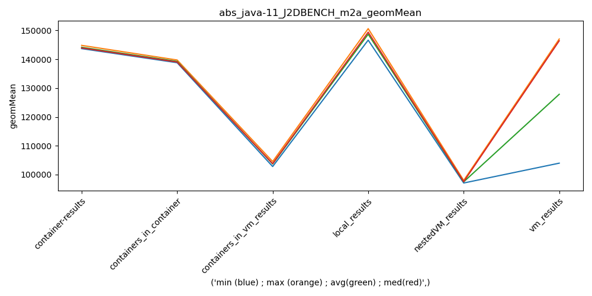
all runs of one jdk were made MEDIAN before processing
j2dbench.geom
java-11 J2DBENCH j2dbench.geom where all runs of one jdk were made MEDIAN before processing
MIN 143751.0 container-results
MIN 138829.0 containers_in_container
MIN 102797.0 containers_in_vm_results
MIN 146578.0 local_results
MIN 96867.0 nestedVM_results
MIN 104005.0 vm_results
MAX 144826.0 container-results
MAX 139774.0 containers_in_container
MAX 104719.0 containers_in_vm_results
MAX 150697.0 local_results
MAX 98073.0 nestedVM_results
MAX 147141.0 vm_results
AVG 144193.0909090909 container-results
AVG 139271.72727272726 containers_in_container
AVG 103778.27272727272 containers_in_vm_results
AVG 148755.66666666666 local_results
AVG 97430.11111111111 nestedVM_results
AVG 127880.0 vm_results
MED 143992.0 container-results
MED 139100.0 containers_in_container
MED 103800.0 containers_in_vm_results
MED 149900.0 local_results
MED 97572.0 nestedVM_results
MED 146480.0 vm_results
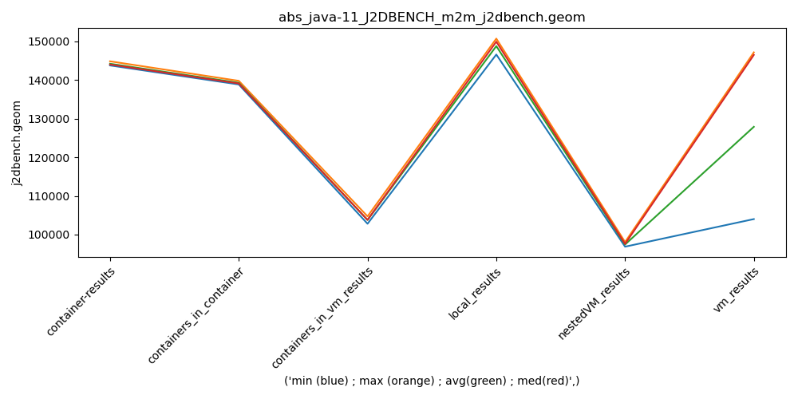
geomMean of all keys (benchmark meassured relativre accuracy)
{'MIN': [143751.0, 138829.0, 102797.0, 146578.0, 96867.0, 104005.0], 'MAX': [144826.0, 139774.0, 104719.0, 150697.0, 98073.0, 147141.0], 'AVG': [144193.0909090909, 139271.72727272726, 103778.27272727272, 148755.66666666666, 97430.11111111111, 127880.0], 'MED': [143992.0, 139100.0, 103800.0, 149900.0, 97572.0, 146480.0]}
java-11 J2DBENCH geomMean where all runs of one jdk were made MEDIAN before processing
MIN 143751.0 container-results
MIN 138829.0 containers_in_container
MIN 102797.0 containers_in_vm_results
MIN 146578.0 local_results
MIN 96867.0 nestedVM_results
MIN 104005.0 vm_results
MAX 144826.0 container-results
MAX 139774.0 containers_in_container
MAX 104719.0 containers_in_vm_results
MAX 150697.0 local_results
MAX 98073.0 nestedVM_results
MAX 147141.0 vm_results
AVG 144193.0909090909 container-results
AVG 139271.72727272726 containers_in_container
AVG 103778.27272727272 containers_in_vm_results
AVG 148755.66666666666 local_results
AVG 97430.11111111111 nestedVM_results
AVG 127880.0 vm_results
MED 143992.0 container-results
MED 139100.0 containers_in_container
MED 103800.0 containers_in_vm_results
MED 149900.0 local_results
MED 97572.0 nestedVM_results
MED 146480.0 vm_results

geomMean of all metrics from geomMean of all keys
{'MIN': [143652.69256318855, 138769.64494555347, 102212.72831592384, 146579.25523264773, 96486.10637684216, 103453.15689884726], 'MAX': [144858.99356475132, 139809.05091645953, 104826.60711754345, 150689.32803224502, 98204.95711809296, 147154.23204482588], 'AVG': [144179.75726750982, 139266.0153093932, 103720.84660219356, 148720.96834688398, 97469.98851249178, 127868.29602849623], 'MED': [143980.79811925505, 139088.53238795215, 103788.26610842296, 149738.4927158013, 97610.70430224763, 146420.12527288482]}
java-11 J2DBENCH geomMean geomMean
MIN 143652.69256318855 container-results
MIN 138769.64494555347 containers_in_container
MIN 102212.72831592384 containers_in_vm_results
MIN 146579.25523264773 local_results
MIN 96486.10637684216 nestedVM_results
MIN 103453.15689884726 vm_results
MAX 144858.99356475132 container-results
MAX 139809.05091645953 containers_in_container
MAX 104826.60711754345 containers_in_vm_results
MAX 150689.32803224502 local_results
MAX 98204.95711809296 nestedVM_results
MAX 147154.23204482588 vm_results
AVG 144179.75726750982 container-results
AVG 139266.0153093932 containers_in_container
AVG 103720.84660219356 containers_in_vm_results
AVG 148720.96834688398 local_results
AVG 97469.98851249178 nestedVM_results
AVG 127868.29602849623 vm_results
MED 143980.79811925505 container-results
MED 139088.53238795215 containers_in_container
MED 103788.26610842296 containers_in_vm_results
MED 149738.4927158013 local_results
MED 97610.70430224763 nestedVM_results
MED 146420.12527288482 vm_results
JMH
all runs of one jdk are treated as INDIVIDUAL items
geom
java-11 JMH geom where all runs of one jdk are treated as INDIVIDUAL items
MIN 419.0 container-results
MIN 423.0 containers_in_container
MIN 329.0 containers_in_vm_results
MIN 412.0 local_results
MIN 339.0 nestedVM_results
MIN 361.0 vm_results
MAX 429.0 container-results
MAX 437.0 containers_in_container
MAX 395.0 containers_in_vm_results
MAX 465.0 local_results
MAX 344.0 nestedVM_results
MAX 395.0 vm_results
AVG 425.5090909090909 container-results
AVG 426.25454545454545 containers_in_container
AVG 357.6981132075472 containers_in_vm_results
AVG 424.7090909090909 local_results
AVG 341.19607843137254 nestedVM_results
AVG 373.90909090909093 vm_results
MED 426.0 container-results
MED 426.0 containers_in_container
MED 341.0 containers_in_vm_results
MED 424.0 local_results
MED 341.0 nestedVM_results
MED 364.0 vm_results
geomMean of all keys (benchmark meassured relativre accuracy)
{'MIN': [419.0, 423.0, 329.0, 412.0, 339.0, 361.0], 'MAX': [429.0, 437.0, 395.0, 465.0, 344.0, 395.0], 'AVG': [425.5090909090909, 426.25454545454545, 357.6981132075472, 424.7090909090909, 341.19607843137254, 373.90909090909093], 'MED': [426.0, 426.0, 341.0, 424.0, 341.0, 364.0]}
java-11 JMH geomMean where all runs of one jdk are treated as INDIVIDUAL items
MIN 419.0 container-results
MIN 423.0 containers_in_container
MIN 329.0 containers_in_vm_results
MIN 412.0 local_results
MIN 339.0 nestedVM_results
MIN 361.0 vm_results
MAX 429.0 container-results
MAX 437.0 containers_in_container
MAX 395.0 containers_in_vm_results
MAX 465.0 local_results
MAX 344.0 nestedVM_results
MAX 395.0 vm_results
AVG 425.5090909090909 container-results
AVG 426.25454545454545 containers_in_container
AVG 357.6981132075472 containers_in_vm_results
AVG 424.7090909090909 local_results
AVG 341.19607843137254 nestedVM_results
AVG 373.90909090909093 vm_results
MED 426.0 container-results
MED 426.0 containers_in_container
MED 341.0 containers_in_vm_results
MED 424.0 local_results
MED 341.0 nestedVM_results
MED 364.0 vm_results
all runs of one jdk were made AVARAGE before processing
geom
java-11 JMH geom where all runs of one jdk were made AVARAGE before processing
MIN 421.8 container-results
MIN 424.0 containers_in_container
MIN 333.6 containers_in_vm_results
MIN 421.6 local_results
MIN 340.2 nestedVM_results
MIN 362.8 vm_results
MAX 427.8 container-results
MAX 429.0 containers_in_container
MAX 393.8 containers_in_vm_results
MAX 431.8 local_results
MAX 343.0 nestedVM_results
MAX 393.6 vm_results
AVG 425.50909090909096 container-results
AVG 426.25454545454545 containers_in_container
AVG 356.8363636363636 containers_in_vm_results
AVG 424.70909090909095 local_results
AVG 341.17727272727274 nestedVM_results
AVG 373.90909090909093 vm_results
MED 426.8 container-results
MED 425.8 containers_in_container
MED 338.4 containers_in_vm_results
MED 424.2 local_results
MED 341.0 nestedVM_results
MED 363.6 vm_results
geomMean of all keys (benchmark meassured relativre accuracy)
{'MIN': [421.8, 424.0, 333.6, 421.6, 340.2, 362.8], 'MAX': [427.8, 429.0, 393.8, 431.8, 343.0, 393.6], 'AVG': [425.50909090909096, 426.25454545454545, 356.8363636363636, 424.70909090909095, 341.17727272727274, 373.90909090909093], 'MED': [426.8, 425.8, 338.4, 424.2, 341.0, 363.6]}
java-11 JMH geomMean where all runs of one jdk were made AVARAGE before processing
MIN 421.8 container-results
MIN 424.0 containers_in_container
MIN 333.6 containers_in_vm_results
MIN 421.6 local_results
MIN 340.2 nestedVM_results
MIN 362.8 vm_results
MAX 427.8 container-results
MAX 429.0 containers_in_container
MAX 393.8 containers_in_vm_results
MAX 431.8 local_results
MAX 343.0 nestedVM_results
MAX 393.6 vm_results
AVG 425.50909090909096 container-results
AVG 426.25454545454545 containers_in_container
AVG 356.8363636363636 containers_in_vm_results
AVG 424.70909090909095 local_results
AVG 341.17727272727274 nestedVM_results
AVG 373.90909090909093 vm_results
MED 426.8 container-results
MED 425.8 containers_in_container
MED 338.4 containers_in_vm_results
MED 424.2 local_results
MED 341.0 nestedVM_results
MED 363.6 vm_results

all runs of one jdk were made MEDIAN before processing
geom
java-11 JMH geom where all runs of one jdk were made MEDIAN before processing
MIN 422.0 container-results
MIN 424.0 containers_in_container
MIN 333.0 containers_in_vm_results
MIN 423.0 local_results
MIN 340.0 nestedVM_results
MIN 363.0 vm_results
MAX 428.0 container-results
MAX 428.0 containers_in_container
MAX 394.0 containers_in_vm_results
MAX 425.0 local_results
MAX 343.0 nestedVM_results
MAX 394.0 vm_results
AVG 425.6363636363636 container-results
AVG 426.1818181818182 containers_in_container
AVG 357.09090909090907 containers_in_vm_results
AVG 424.09090909090907 local_results
AVG 341.3636363636364 nestedVM_results
AVG 374.0 vm_results
MED 427.0 container-results
MED 426.0 containers_in_container
MED 339.0 containers_in_vm_results
MED 424.0 local_results
MED 341.0 nestedVM_results
MED 364.0 vm_results
geomMean of all keys (benchmark meassured relativre accuracy)
{'MIN': [422.0, 424.0, 333.0, 423.0, 340.0, 363.0], 'MAX': [428.0, 428.0, 394.0, 425.0, 343.0, 394.0], 'AVG': [425.6363636363636, 426.1818181818182, 357.09090909090907, 424.09090909090907, 341.3636363636364, 374.0], 'MED': [427.0, 426.0, 339.0, 424.0, 341.0, 364.0]}
java-11 JMH geomMean where all runs of one jdk were made MEDIAN before processing
MIN 422.0 container-results
MIN 424.0 containers_in_container
MIN 333.0 containers_in_vm_results
MIN 423.0 local_results
MIN 340.0 nestedVM_results
MIN 363.0 vm_results
MAX 428.0 container-results
MAX 428.0 containers_in_container
MAX 394.0 containers_in_vm_results
MAX 425.0 local_results
MAX 343.0 nestedVM_results
MAX 394.0 vm_results
AVG 425.6363636363636 container-results
AVG 426.1818181818182 containers_in_container
AVG 357.09090909090907 containers_in_vm_results
AVG 424.09090909090907 local_results
AVG 341.3636363636364 nestedVM_results
AVG 374.0 vm_results
MED 427.0 container-results
MED 426.0 containers_in_container
MED 339.0 containers_in_vm_results
MED 424.0 local_results
MED 341.0 nestedVM_results
MED 364.0 vm_results
geomMean of all metrics from geomMean of all keys
{'MIN': [420.93110210573406, 423.6664042682556, 331.86036853366403, 418.83798529581514, 339.7329275224545, 362.2655489774851], 'MAX': [428.26634512202634, 431.31460674572344, 394.26631740877554, 440.2589298960878, 343.33300991789883, 394.199560496323], 'AVG': [425.5515109224225, 426.23030165142995, 357.20827911844594, 424.50293024550126, 341.24565222586574, 373.9393914838514], 'MED': [426.59978112778447, 425.933322897643, 339.46484901659016, 424.06665618723224, 340.9999999999999, 363.866617796779]}
java-11 JMH geomMean geomMean
MIN 420.93110210573406 container-results
MIN 423.6664042682556 containers_in_container
MIN 331.86036853366403 containers_in_vm_results
MIN 418.83798529581514 local_results
MIN 339.7329275224545 nestedVM_results
MIN 362.2655489774851 vm_results
MAX 428.26634512202634 container-results
MAX 431.31460674572344 containers_in_container
MAX 394.26631740877554 containers_in_vm_results
MAX 440.2589298960878 local_results
MAX 343.33300991789883 nestedVM_results
MAX 394.199560496323 vm_results
AVG 425.5515109224225 container-results
AVG 426.23030165142995 containers_in_container
AVG 357.20827911844594 containers_in_vm_results
AVG 424.50293024550126 local_results
AVG 341.24565222586574 nestedVM_results
AVG 373.9393914838514 vm_results
MED 426.59978112778447 container-results
MED 425.933322897643 containers_in_container
MED 339.46484901659016 containers_in_vm_results
MED 424.06665618723224 local_results
MED 340.9999999999999 nestedVM_results
MED 363.866617796779 vm_results
RADARGUNs1
all runs of one jdk are treated as INDIVIDUAL items
BasicOperations.Get.Throughput=
java-11 RADARGUNs1 BasicOperations.Get.Throughput= where all runs of one jdk are treated as INDIVIDUAL items
MIN 2808723.0 container-results
MIN 2852640.0 containers_in_container
MIN 1933528.0 containers_in_vm_results
MIN 2908298.0 local_results
MIN 674899.0 nestedVM_results
MIN 2296720.0 vm_results
MAX 3331523.0 container-results
MAX 3331409.0 containers_in_container
MAX 2730315.0 containers_in_vm_results
MAX 3353942.0 local_results
MAX 717179.0 nestedVM_results
MAX 2748843.0 vm_results
AVG 3168950.2363636363 container-results
AVG 3185463.0384615385 containers_in_container
AVG 2360097.109090909 containers_in_vm_results
AVG 3212023.4 local_results
AVG 697483.2181818181 nestedVM_results
AVG 2478289.9454545453 vm_results
MED 3186448.0 container-results
MED 3216167.0 containers_in_container
MED 2289654.0 containers_in_vm_results
MED 3206786.0 local_results
MED 698952.0 nestedVM_results
MED 2420158.0 vm_results

BasicOperations.Put.Throughput=
java-11 RADARGUNs1 BasicOperations.Put.Throughput= where all runs of one jdk are treated as INDIVIDUAL items
MIN 702230.0 container-results
MIN 713058.0 containers_in_container
MIN 483370.0 containers_in_vm_results
MIN 727048.0 local_results
MIN 168749.0 nestedVM_results
MIN 574159.0 vm_results
MAX 832896.0 container-results
MAX 832862.0 containers_in_container
MAX 682555.0 containers_in_vm_results
MAX 838532.0 local_results
MAX 179279.0 nestedVM_results
MAX 687211.0 vm_results
AVG 792243.1818181818 container-results
AVG 796363.1730769231 containers_in_container
AVG 590029.3818181818 containers_in_vm_results
AVG 803004.6 local_results
AVG 174377.12727272726 nestedVM_results
AVG 619571.3090909091 vm_results
MED 796587.0 container-results
MED 804051.0 containers_in_container
MED 572429.0 containers_in_vm_results
MED 801753.0 local_results
MED 174707.0 nestedVM_results
MED 605098.0 vm_results
BasicOperations.Put.ResponseTimeMean
java-11 RADARGUNs1 BasicOperations.Put.ResponseTimeMean where all runs of one jdk are treated as INDIVIDUAL items
MIN -4294.0 container-results
MIN -4244.0 containers_in_container
MIN -7065.0 containers_in_vm_results
MIN -4212.0 local_results
MIN -20742.0 nestedVM_results
MIN -7477.0 vm_results
MAX -3795.0 container-results
MAX -3837.0 containers_in_container
MAX -5447.0 containers_in_vm_results
MAX -3783.0 local_results
MAX -17541.0 nestedVM_results
MAX -5377.0 vm_results
AVG -4008.9636363636364 container-results
AVG -3995.019230769231 containers_in_container
AVG -6204.545454545455 containers_in_vm_results
AVG -3968.1454545454544 local_results
AVG -18093.272727272728 nestedVM_results
AVG -6375.454545454545 vm_results
MED -4003.0 container-results
MED -3998.0 containers_in_container
MED -6368.0 containers_in_vm_results
MED -3970.0 local_results
MED -18050.0 nestedVM_results
MED -6720.0 vm_results

BasicOperations.Get.ResponseTimeMean
java-11 RADARGUNs1 BasicOperations.Get.ResponseTimeMean where all runs of one jdk are treated as INDIVIDUAL items
MIN -1204.0 container-results
MIN -1194.0 containers_in_container
MIN -1733.0 containers_in_vm_results
MIN -1176.0 local_results
MIN -6014.0 nestedVM_results
MIN -1560.0 vm_results
MAX -1080.0 container-results
MAX -1068.0 containers_in_container
MAX -1344.0 containers_in_vm_results
MAX -1083.0 local_results
MAX -5654.0 nestedVM_results
MAX -1321.0 vm_results
AVG -1139.1090909090908 container-results
AVG -1118.6923076923076 containers_in_container
AVG -1544.9818181818182 containers_in_vm_results
AVG -1118.7272727272727 local_results
AVG -5826.272727272727 nestedVM_results
AVG -1440.7454545454545 vm_results
MED -1137.0 container-results
MED -1123.0 containers_in_container
MED -1596.0 containers_in_vm_results
MED -1115.0 local_results
MED -5816.0 nestedVM_results
MED -1447.0 vm_results
geomMean of all keys (benchmark meassured relativre accuracy)
{'MIN': [56509.20587203573, 56661.47575623611, 58161.449544973664, 56888.49155523447, 61393.65813700172, 62625.04515632893], 'MAX': [58072.0666704962, 58068.55426444202, 60775.251240185884, 58261.94738638072, 59757.41254082065, 60523.03848395092], 'AVG': [58189.26091691466, 58026.75924050494, 60444.837421435856, 58170.41143991005, 59838.79030021278, 61282.35640775792], 'MED': [58300.398895593935, 58372.88839105076, 60413.20233843604, 58082.32421008653, 59836.3116616404, 61429.47594506693]}
java-11 RADARGUNs1 geomMean where all runs of one jdk are treated as INDIVIDUAL items
MIN 56509.20587203573 container-results
MIN 56661.47575623611 containers_in_container
MIN 58161.449544973664 containers_in_vm_results
MIN 56888.49155523447 local_results
MIN 61393.65813700172 nestedVM_results
MIN 62625.04515632893 vm_results
MAX 58072.0666704962 container-results
MAX 58068.55426444202 containers_in_container
MAX 60775.251240185884 containers_in_vm_results
MAX 58261.94738638072 local_results
MAX 59757.41254082065 nestedVM_results
MAX 60523.03848395092 vm_results
AVG 58189.26091691466 container-results
AVG 58026.75924050494 containers_in_container
AVG 60444.837421435856 containers_in_vm_results
AVG 58170.41143991005 local_results
AVG 59838.79030021278 nestedVM_results
AVG 61282.35640775792 vm_results
MED 58300.398895593935 container-results
MED 58372.88839105076 containers_in_container
MED 60413.20233843604 containers_in_vm_results
MED 58082.32421008653 local_results
MED 59836.3116616404 nestedVM_results
MED 61429.47594506693 vm_results
all runs of one jdk were made AVARAGE before processing
BasicOperations.Get.Throughput=
java-11 RADARGUNs1 BasicOperations.Get.Throughput= where all runs of one jdk were made AVARAGE before processing
MIN 3101648.0 container-results
MIN 3103477.5 containers_in_container
MIN 2160122.2 containers_in_vm_results
MIN 3137751.0 local_results
MIN 687070.6 nestedVM_results
MIN 2355622.6 vm_results
MAX 3247295.6 container-results
MAX 3257215.2 containers_in_container
MAX 2656156.0 containers_in_vm_results
MAX 3291557.6 local_results
MAX 707526.0 nestedVM_results
MAX 2661819.2 vm_results
AVG 3168950.2363636363 container-results
AVG 3180991.1 containers_in_container
AVG 2360097.109090909 containers_in_vm_results
AVG 3212023.4 local_results
AVG 697483.2181818183 nestedVM_results
AVG 2478289.9454545453 vm_results
MED 3174347.0 container-results
MED 3177013.2 containers_in_container
MED 2264387.4 containers_in_vm_results
MED 3200514.4 local_results
MED 699704.8 nestedVM_results
MED 2403859.0 vm_results
BasicOperations.Put.Throughput=
java-11 RADARGUNs1 BasicOperations.Put.Throughput= where all runs of one jdk were made AVARAGE before processing
MIN 775425.0 container-results
MIN 775930.0 containers_in_container
MIN 540041.6 containers_in_vm_results
MIN 784435.4 local_results
MIN 171766.8 nestedVM_results
MIN 588933.8 vm_results
MAX 811847.8 container-results
MAX 814313.8 containers_in_container
MAX 664038.6 containers_in_vm_results
MAX 822873.2 local_results
MAX 176890.4 nestedVM_results
MAX 665473.2 vm_results
AVG 792243.1818181818 container-results
AVG 795248.6363636364 containers_in_container
AVG 590029.3818181818 containers_in_vm_results
AVG 803004.6 local_results
AVG 174377.12727272726 nestedVM_results
AVG 619571.3090909091 vm_results
MED 793576.4 container-results
MED 794268.8 containers_in_container
MED 566093.8 containers_in_vm_results
MED 800140.6 local_results
MED 174945.6 nestedVM_results
MED 600953.2 vm_results
BasicOperations.Put.ResponseTimeMean
java-11 RADARGUNs1 BasicOperations.Put.ResponseTimeMean where all runs of one jdk were made AVARAGE before processing
MIN -4157.0 container-results
MIN -4110.4 containers_in_container
MIN -6658.6 containers_in_vm_results
MIN -4031.8 local_results
MIN -18882.0 nestedVM_results
MIN -6945.6 vm_results
MAX -3942.8 container-results
MAX -3919.6 containers_in_container
MAX -5601.6 containers_in_vm_results
MAX -3867.2 local_results
MAX -17817.4 nestedVM_results
MAX -5468.8 vm_results
AVG -4008.9636363636364 container-results
AVG -3991.390909090909 containers_in_container
AVG -6204.545454545455 containers_in_vm_results
AVG -3968.1454545454544 local_results
AVG -18093.272727272728 nestedVM_results
AVG -6375.454545454545 vm_results
MED -3999.8 container-results
MED -3977.6 containers_in_container
MED -6422.8 containers_in_vm_results
MED -3948.4 local_results
MED -17999.4 nestedVM_results
MED -6776.2 vm_results
BasicOperations.Get.ResponseTimeMean
java-11 RADARGUNs1 BasicOperations.Get.ResponseTimeMean where all runs of one jdk were made AVARAGE before processing
MIN -1162.4 container-results
MIN -1137.0 containers_in_container
MIN -1662.6 containers_in_vm_results
MIN -1130.6 local_results
MIN -5899.2 nestedVM_results
MIN -1505.8 vm_results
MAX -1108.2 container-results
MAX -1098.4 containers_in_container
MAX -1380.8 containers_in_vm_results
MAX -1095.6 local_results
MAX -5756.0 nestedVM_results
MAX -1363.0 vm_results
AVG -1139.109090909091 container-results
AVG -1118.8727272727274 containers_in_container
AVG -1544.9818181818182 containers_in_vm_results
AVG -1118.7272727272727 local_results
AVG -5826.272727272727 nestedVM_results
AVG -1440.7454545454545 vm_results
MED -1139.0 container-results
MED -1120.8 containers_in_container
MED -1605.8 containers_in_vm_results
MED -1121.0 local_results
MED -5823.4 nestedVM_results
MED -1470.0 vm_results

geomMean of all keys (benchmark meassured relativre accuracy)
{'MIN': [58387.110534673266, 57920.049459489244, 59947.22161038038, 57875.65320375937, 60213.71545404598, 61718.06669212631], 'MAX': [58257.90110689516, 58131.31270598161, 60774.646835749605, 58203.05201719872, 59855.34602027452, 60280.14039170747], 'AVG': [58189.26091691467, 57975.24394610167, 60444.837421435856, 58170.41143991005, 59838.79030021278, 61282.35640775792], 'MED': [58203.79278322503, 57914.05015777638, 60299.50473013102, 58023.40516278614, 59849.859051416126, 61590.438796795825]}
java-11 RADARGUNs1 geomMean where all runs of one jdk were made AVARAGE before processing
MIN 58387.110534673266 container-results
MIN 57920.049459489244 containers_in_container
MIN 59947.22161038038 containers_in_vm_results
MIN 57875.65320375937 local_results
MIN 60213.71545404598 nestedVM_results
MIN 61718.06669212631 vm_results
MAX 58257.90110689516 container-results
MAX 58131.31270598161 containers_in_container
MAX 60774.646835749605 containers_in_vm_results
MAX 58203.05201719872 local_results
MAX 59855.34602027452 nestedVM_results
MAX 60280.14039170747 vm_results
AVG 58189.26091691467 container-results
AVG 57975.24394610167 containers_in_container
AVG 60444.837421435856 containers_in_vm_results
AVG 58170.41143991005 local_results
AVG 59838.79030021278 nestedVM_results
AVG 61282.35640775792 vm_results
MED 58203.79278322503 container-results
MED 57914.05015777638 containers_in_container
MED 60299.50473013102 containers_in_vm_results
MED 58023.40516278614 local_results
MED 59849.859051416126 nestedVM_results
MED 61590.438796795825 vm_results
all runs of one jdk were made MEDIAN before processing
BasicOperations.Get.Throughput=
java-11 RADARGUNs1 BasicOperations.Get.Throughput= where all runs of one jdk were made MEDIAN before processing
MIN 3141260.0 container-results
MIN 3172644.0 containers_in_container
MIN 2199049.0 containers_in_vm_results
MIN 3186187.0 local_results
MIN 687754.0 nestedVM_results
MIN 2338917.0 vm_results
MAX 3205051.0 container-results
MAX 3277257.0 containers_in_container
MAX 2676921.0 containers_in_vm_results
MAX 3292377.0 local_results
MAX 705473.0 nestedVM_results
MAX 2684795.0 vm_results
AVG 3183581.4545454546 container-results
AVG 3219854.6363636362 containers_in_container
AVG 2374421.090909091 containers_in_vm_results
AVG 3226530.090909091 local_results
AVG 698795.8181818182 nestedVM_results
AVG 2484683.4545454546 vm_results
MED 3192653.0 container-results
MED 3208348.0 containers_in_container
MED 2263148.0 containers_in_vm_results
MED 3206671.0 local_results
MED 700107.0 nestedVM_results
MED 2402004.0 vm_results
BasicOperations.Put.Throughput=
java-11 RADARGUNs1 BasicOperations.Put.Throughput= where all runs of one jdk were made MEDIAN before processing
MIN 785297.0 container-results
MIN 793193.0 containers_in_container
MIN 549809.0 containers_in_vm_results
MIN 796588.0 local_results
MIN 171959.0 nestedVM_results
MIN 584766.0 vm_results
MAX 801315.0 container-results
MAX 819387.0 containers_in_container
MAX 669193.0 containers_in_vm_results
MAX 823045.0 local_results
MAX 176396.0 nestedVM_results
MAX 671199.0 vm_results
AVG 795891.3636363636 container-results
AVG 804959.2727272727 containers_in_container
AVG 593613.0 containers_in_vm_results
AVG 806633.9090909091 local_results
AVG 174708.81818181818 nestedVM_results
AVG 621180.0 vm_results
MED 798110.0 container-results
MED 802021.0 containers_in_container
MED 565749.0 containers_in_vm_results
MED 801662.0 local_results
MED 175070.0 nestedVM_results
MED 600500.0 vm_results
BasicOperations.Put.ResponseTimeMean
java-11 RADARGUNs1 BasicOperations.Put.ResponseTimeMean where all runs of one jdk were made MEDIAN before processing
MIN -4159.0 container-results
MIN -4100.0 containers_in_container
MIN -6675.0 containers_in_vm_results
MIN -4025.0 local_results
MIN -18593.0 nestedVM_results
MIN -7026.0 vm_results
MAX -3943.0 container-results
MAX -3905.0 containers_in_container
MAX -5599.0 containers_in_vm_results
MAX -3829.0 local_results
MAX -17839.0 nestedVM_results
MAX -5444.0 vm_results
AVG -4009.090909090909 container-results
AVG -3990.0 containers_in_container
AVG -6178.0 containers_in_vm_results
AVG -3950.3636363636365 local_results
AVG -18066.363636363636 nestedVM_results
AVG -6365.363636363636 vm_results
MED -3988.0 container-results
MED -3998.0 containers_in_container
MED -6414.0 containers_in_vm_results
MED -3972.0 local_results
MED -17996.0 nestedVM_results
MED -6745.0 vm_results
BasicOperations.Get.ResponseTimeMean
java-11 RADARGUNs1 BasicOperations.Get.ResponseTimeMean where all runs of one jdk were made MEDIAN before processing
MIN -1162.0 container-results
MIN -1141.0 containers_in_container
MIN -1655.0 containers_in_vm_results
MIN -1134.0 local_results
MIN -5927.0 nestedVM_results
MIN -1503.0 vm_results
MAX -1114.0 container-results
MAX -1092.0 containers_in_container
MAX -1374.0 containers_in_vm_results
MAX -1098.0 local_results
MAX -5750.0 nestedVM_results
MAX -1363.0 vm_results
AVG -1138.8181818181818 container-results
AVG -1122.3636363636363 containers_in_container
AVG -1543.0 containers_in_vm_results
AVG -1117.1818181818182 local_results
AVG -5832.272727272727 nestedVM_results
AVG -1439.4545454545455 vm_results
MED -1140.0 container-results
MED -1125.0 containers_in_container
MED -1608.0 containers_in_vm_results
MED -1120.0 local_results
MED -5827.0 nestedVM_results
MED -1462.0 vm_results
geomMean of all keys (benchmark meassured relativre accuracy)
{'MIN': [58760.19356228163, 58575.692173709365, 60453.855672628735, 58340.613274248935, 60084.24496627705, 61647.57711149366], 'MAX': [57954.55109812906, 58171.57351478059, 60928.57712397356, 58097.201283350056, 59772.56183659239, 60470.5753684555], 'AVG': [58319.99978434205, 58368.584865669494, 60543.67006036331, 58216.12335171074, 59888.498354173105, 61323.569569836756], 'MED': [58340.2946307462, 58326.46155638869, 60282.039568340035, 58152.48007220724, 59875.51867939107, 61412.109578116004]}
java-11 RADARGUNs1 geomMean where all runs of one jdk were made MEDIAN before processing
MIN 58760.19356228163 container-results
MIN 58575.692173709365 containers_in_container
MIN 60453.855672628735 containers_in_vm_results
MIN 58340.613274248935 local_results
MIN 60084.24496627705 nestedVM_results
MIN 61647.57711149366 vm_results
MAX 57954.55109812906 container-results
MAX 58171.57351478059 containers_in_container
MAX 60928.57712397356 containers_in_vm_results
MAX 58097.201283350056 local_results
MAX 59772.56183659239 nestedVM_results
MAX 60470.5753684555 vm_results
AVG 58319.99978434205 container-results
AVG 58368.584865669494 containers_in_container
AVG 60543.67006036331 containers_in_vm_results
AVG 58216.12335171074 local_results
AVG 59888.498354173105 nestedVM_results
AVG 61323.569569836756 vm_results
MED 58340.2946307462 container-results
MED 58326.46155638869 containers_in_container
MED 60282.039568340035 containers_in_vm_results
MED 58152.48007220724 local_results
MED 59875.51867939107 nestedVM_results
MED 61412.109578116004 vm_results
geomMean of all metrics from geomMean of all keys
{'MIN': [57877.06085580595, 57713.58846019095, 59512.66913286474, 57698.4001552893, 60561.02009694817, 61995.30381463211], 'MAX': [58094.705446018874, 58123.79803518924, 60826.11531062592, 58187.36029554911, 59795.091312495395, 60424.494569114024], 'AVG': [58232.8079420276, 58123.26759608469, 60477.763695140035, 58185.644754287416, 59855.35506559837, 61296.091050003764], 'MED': [58281.467253314135, 58204.10076126523, 60331.55419770968, 58086.045854384465, 59853.89425600858, 61477.28904713452]}
java-11 RADARGUNs1 geomMean geomMean
MIN 57877.06085580595 container-results
MIN 57713.58846019095 containers_in_container
MIN 59512.66913286474 containers_in_vm_results
MIN 57698.4001552893 local_results
MIN 60561.02009694817 nestedVM_results
MIN 61995.30381463211 vm_results
MAX 58094.705446018874 container-results
MAX 58123.79803518924 containers_in_container
MAX 60826.11531062592 containers_in_vm_results
MAX 58187.36029554911 local_results
MAX 59795.091312495395 nestedVM_results
MAX 60424.494569114024 vm_results
AVG 58232.8079420276 container-results
AVG 58123.26759608469 containers_in_container
AVG 60477.763695140035 containers_in_vm_results
AVG 58185.644754287416 local_results
AVG 59855.35506559837 nestedVM_results
AVG 61296.091050003764 vm_results
MED 58281.467253314135 container-results
MED 58204.10076126523 containers_in_container
MED 60331.55419770968 containers_in_vm_results
MED 58086.045854384465 local_results
MED 59853.89425600858 nestedVM_results
MED 61477.28904713452 vm_results
RADARGUNs3
all runs of one jdk are treated as INDIVIDUAL items
BasicOperations.Get.Throughput=
java-11 RADARGUNs3 BasicOperations.Get.Throughput= where all runs of one jdk are treated as INDIVIDUAL items
MIN 88949.0 container-results
MIN 84507.0 containers_in_container
MIN 35188.0 containers_in_vm_results
MIN 90368.0 local_results
MIN 18839.0 nestedVM_results
MIN 42697.0 vm_results
MAX 92110.0 container-results
MAX 87838.0 containers_in_container
MAX 42850.0 containers_in_vm_results
MAX 93284.0 local_results
MAX 20571.0 nestedVM_results
MAX 50291.0 vm_results
AVG 90788.10909090909 container-results
AVG 86499.6 containers_in_container
AVG 38634.05454545454 containers_in_vm_results
AVG 92057.36363636363 local_results
AVG 19723.75925925926 nestedVM_results
AVG 46790.181818181816 vm_results
MED 90728.0 container-results
MED 86504.0 containers_in_container
MED 37621.0 containers_in_vm_results
MED 92148.0 local_results
MED 19627.0 nestedVM_results
MED 46875.0 vm_results

BasicOperations.Put.Throughput=
java-11 RADARGUNs3 BasicOperations.Put.Throughput= where all runs of one jdk are treated as INDIVIDUAL items
MIN 22238.0 container-results
MIN 21119.0 containers_in_container
MIN 8803.0 containers_in_vm_results
MIN 22588.0 local_results
MIN 4702.0 nestedVM_results
MIN 10667.0 vm_results
MAX 23021.0 container-results
MAX 21952.0 containers_in_container
MAX 10712.0 containers_in_vm_results
MAX 23326.0 local_results
MAX 5141.0 nestedVM_results
MAX 12570.0 vm_results
AVG 22696.036363636365 container-results
AVG 21623.854545454546 containers_in_container
AVG 9657.709090909091 containers_in_vm_results
AVG 23014.418181818182 local_results
AVG 4929.518518518518 nestedVM_results
AVG 11697.072727272727 vm_results
MED 22678.0 container-results
MED 21626.0 containers_in_container
MED 9408.0 containers_in_vm_results
MED 23040.0 local_results
MED 4905.0 nestedVM_results
MED 11724.0 vm_results

BasicOperations.Put.ResponseTimeMean
java-11 RADARGUNs3 BasicOperations.Put.ResponseTimeMean where all runs of one jdk are treated as INDIVIDUAL items
MIN -265946.0 container-results
MIN -278152.0 containers_in_container
MIN -675993.0 containers_in_vm_results
MIN -262271.0 local_results
MIN -1277577.0 nestedVM_results
MIN -561081.0 vm_results
MAX -257100.0 container-results
MAX -268984.0 containers_in_container
MAX -553810.0 containers_in_vm_results
MAX -254120.0 local_results
MAX -1166261.0 nestedVM_results
MAX -463829.0 vm_results
AVG -260301.36363636365 container-results
AVG -272914.83636363636 containers_in_container
AVG -620410.4 containers_in_vm_results
AVG -257516.74545454545 local_results
AVG -1219199.888888889 nestedVM_results
AVG -504583.9636363636 vm_results
MED -260185.0 container-results
MED -272678.0 containers_in_container
MED -633992.0 containers_in_vm_results
MED -257330.0 local_results
MED -1225098.0 nestedVM_results
MED -502359.0 vm_results

BasicOperations.Get.ResponseTimeMean
java-11 RADARGUNs3 BasicOperations.Get.ResponseTimeMean where all runs of one jdk are treated as INDIVIDUAL items
MIN -65879.0 container-results
MIN -69588.0 containers_in_container
MIN -169475.0 containers_in_vm_results
MIN -64919.0 local_results
MIN -313639.0 nestedVM_results
MIN -138078.0 vm_results
MAX -63070.0 container-results
MAX -66340.0 containers_in_container
MAX -139130.0 containers_in_vm_results
MAX -62633.0 local_results
MAX -287141.0 nestedVM_results
MAX -121129.0 vm_results
AVG -64362.56363636364 container-results
AVG -67714.36363636363 containers_in_container
AVG -154244.30909090908 containers_in_vm_results
AVG -63485.27272727273 local_results
AVG -299779.22222222225 nestedVM_results
AVG -128846.03636363636 vm_results
MED -64368.0 container-results
MED -67666.0 containers_in_container
MED -157640.0 containers_in_vm_results
MED -63356.0 local_results
MED -300847.0 nestedVM_results
MED -128578.0 vm_results

geomMean of all keys (benchmark meassured relativre accuracy)
{'MIN': [76726.31035469692, 76664.73593534181, 77182.40048405743, 76780.9773242214, 77186.15442586875, 77072.14156689071], 'MAX': [76575.34615632688, 76588.68481713752, 77117.10935965176, 76713.60165489539, 77143.34963221928, 77198.32810453196], 'AVG': [76651.7706950247, 76676.76636812119, 77300.65194693884, 76715.69953390688, 77208.95236068554, 77234.10308743524], 'MED': [76616.90242392907, 76649.30974814121, 77120.4334823295, 76702.87447411279, 77179.57141162574, 77187.9462891418]}
java-11 RADARGUNs3 geomMean where all runs of one jdk are treated as INDIVIDUAL items
MIN 76726.31035469692 container-results
MIN 76664.73593534181 containers_in_container
MIN 77182.40048405743 containers_in_vm_results
MIN 76780.9773242214 local_results
MIN 77186.15442586875 nestedVM_results
MIN 77072.14156689071 vm_results
MAX 76575.34615632688 container-results
MAX 76588.68481713752 containers_in_container
MAX 77117.10935965176 containers_in_vm_results
MAX 76713.60165489539 local_results
MAX 77143.34963221928 nestedVM_results
MAX 77198.32810453196 vm_results
AVG 76651.7706950247 container-results
AVG 76676.76636812119 containers_in_container
AVG 77300.65194693884 containers_in_vm_results
AVG 76715.69953390688 local_results
AVG 77208.95236068554 nestedVM_results
AVG 77234.10308743524 vm_results
MED 76616.90242392907 container-results
MED 76649.30974814121 containers_in_container
MED 77120.4334823295 containers_in_vm_results
MED 76702.87447411279 local_results
MED 77179.57141162574 nestedVM_results
MED 77187.9462891418 vm_results
all runs of one jdk were made AVARAGE before processing
BasicOperations.Get.Throughput=
java-11 RADARGUNs3 BasicOperations.Get.Throughput= where all runs of one jdk were made AVARAGE before processing
MIN 89725.8 container-results
MIN 85425.4 containers_in_container
MIN 35880.6 containers_in_vm_results
MIN 90610.6 local_results
MIN 19331.8 nestedVM_results
MIN 44031.0 vm_results
MAX 91466.2 container-results
MAX 87141.2 containers_in_container
MAX 42019.8 containers_in_vm_results
MAX 92641.4 local_results
MAX 20104.6 nestedVM_results
MAX 49142.8 vm_results
AVG 90788.1090909091 container-results
AVG 86499.59999999999 containers_in_container
AVG 38634.05454545454 containers_in_vm_results
AVG 92057.36363636363 local_results
AVG 19726.350000000002 nestedVM_results
AVG 46790.181818181816 vm_results
MED 90841.6 container-results
MED 86556.0 containers_in_container
MED 37481.2 containers_in_vm_results
MED 92280.6 local_results
MED 19735.6 nestedVM_results
MED 47930.0 vm_results
BasicOperations.Put.Throughput=
java-11 RADARGUNs3 BasicOperations.Put.Throughput= where all runs of one jdk were made AVARAGE before processing
MIN 22436.2 container-results
MIN 21355.2 containers_in_container
MIN 8972.8 containers_in_vm_results
MIN 22647.6 local_results
MIN 4829.8 nestedVM_results
MIN 11003.8 vm_results
MAX 22866.4 container-results
MAX 21784.8 containers_in_container
MAX 10505.0 containers_in_vm_results
MAX 23165.0 local_results
MAX 5026.6 nestedVM_results
MAX 12287.8 vm_results
AVG 22696.03636363636 container-results
AVG 21623.854545454546 containers_in_container
AVG 9657.709090909091 containers_in_vm_results
AVG 23014.418181818182 local_results
AVG 4930.186363636364 nestedVM_results
AVG 11697.072727272725 vm_results
MED 22709.0 container-results
MED 21635.8 containers_in_container
MED 9371.4 containers_in_vm_results
MED 23072.2 local_results
MED 4933.0 nestedVM_results
MED 11981.6 vm_results

BasicOperations.Put.ResponseTimeMean
java-11 RADARGUNs3 BasicOperations.Put.ResponseTimeMean where all runs of one jdk were made AVARAGE before processing
MIN -263597.4 container-results
MIN -276342.2 containers_in_container
MIN -665989.4 containers_in_vm_results
MIN -261464.2 local_results
MIN -1246495.0 nestedVM_results
MIN -541069.6 vm_results
MAX -258289.8 container-results
MAX -270926.0 containers_in_container
MAX -565957.4 containers_in_vm_results
MAX -255911.0 local_results
MAX -1194521.2 nestedVM_results
MAX -476014.0 vm_results
AVG -260301.36363636365 container-results
AVG -272914.83636363636 containers_in_container
AVG -620410.4 containers_in_vm_results
AVG -257516.74545454548 local_results
AVG -1219087.7181818183 nestedVM_results
AVG -504583.9636363636 vm_results
MED -259505.0 container-results
MED -272518.6 containers_in_container
MED -638040.4 containers_in_vm_results
MED -257273.0 local_results
MED -1218404.8 nestedVM_results
MED -490034.0 vm_results
BasicOperations.Get.ResponseTimeMean
java-11 RADARGUNs3 BasicOperations.Get.ResponseTimeMean where all runs of one jdk were made AVARAGE before processing
MIN -65356.2 container-results
MIN -68676.2 containers_in_container
MIN -165422.6 containers_in_vm_results
MIN -64557.4 local_results
MIN -306057.0 nestedVM_results
MIN -134714.2 vm_results
MAX -63673.6 container-results
MAX -67157.2 containers_in_container
MAX -141115.0 containers_in_vm_results
MAX -63032.6 local_results
MAX -294044.6 nestedVM_results
MAX -123572.8 vm_results
AVG -64362.56363636363 container-results
AVG -67714.36363636363 containers_in_container
AVG -154244.30909090908 containers_in_vm_results
AVG -63485.27272727273 local_results
AVG -299725.2818181818 nestedVM_results
AVG -128846.03636363638 vm_results
MED -64268.4 container-results
MED -67560.4 containers_in_container
MED -158383.4 containers_in_vm_results
MED -63324.2 local_results
MED -299475.2 nestedVM_results
MED -126373.8 vm_results
geomMean of all keys (benchmark meassured relativre accuracy)
{'MIN': [76740.32591891795, 76707.18281088912, 77172.48072285118, 76716.69132821243, 77254.46237964678, 77088.9156525552], 'MAX': [76582.80574061665, 76661.99110347261, 77055.16241014304, 76704.8627808295, 77187.00831085595, 77200.33078880241], 'AVG': [76651.7706950247, 76676.76636812119, 77300.65194693884, 76715.69953390688, 77208.85304122635, 77234.10308743524], 'MED': [76587.254428049, 76628.37650975931, 77186.96248523206, 76743.36447077655, 77201.98708095802, 77223.83692010204]}
java-11 RADARGUNs3 geomMean where all runs of one jdk were made AVARAGE before processing
MIN 76740.32591891795 container-results
MIN 76707.18281088912 containers_in_container
MIN 77172.48072285118 containers_in_vm_results
MIN 76716.69132821243 local_results
MIN 77254.46237964678 nestedVM_results
MIN 77088.9156525552 vm_results
MAX 76582.80574061665 container-results
MAX 76661.99110347261 containers_in_container
MAX 77055.16241014304 containers_in_vm_results
MAX 76704.8627808295 local_results
MAX 77187.00831085595 nestedVM_results
MAX 77200.33078880241 vm_results
AVG 76651.7706950247 container-results
AVG 76676.76636812119 containers_in_container
AVG 77300.65194693884 containers_in_vm_results
AVG 76715.69953390688 local_results
AVG 77208.85304122635 nestedVM_results
AVG 77234.10308743524 vm_results
MED 76587.254428049 container-results
MED 76628.37650975931 containers_in_container
MED 77186.96248523206 containers_in_vm_results
MED 76743.36447077655 local_results
MED 77201.98708095802 nestedVM_results
MED 77223.83692010204 vm_results
all runs of one jdk were made MEDIAN before processing
BasicOperations.Get.Throughput=
java-11 RADARGUNs3 BasicOperations.Get.Throughput= where all runs of one jdk were made MEDIAN before processing
MIN 89457.0 container-results
MIN 85469.0 containers_in_container
MIN 35749.0 containers_in_vm_results
MIN 90621.0 local_results
MIN 19036.0 nestedVM_results
MIN 44028.0 vm_results
MAX 91652.0 container-results
MAX 87372.0 containers_in_container
MAX 42054.0 containers_in_vm_results
MAX 92646.0 local_results
MAX 20236.0 nestedVM_results
MAX 49229.0 vm_results
AVG 90763.36363636363 container-results
AVG 86542.90909090909 containers_in_container
AVG 38684.72727272727 containers_in_vm_results
AVG 92056.27272727272 local_results
AVG 19744.545454545456 nestedVM_results
AVG 46877.181818181816 vm_results
MED 90782.0 container-results
MED 86504.0 containers_in_container
MED 37500.0 containers_in_vm_results
MED 92183.0 local_results
MED 19832.0 nestedVM_results
MED 47937.0 vm_results

BasicOperations.Put.Throughput=
java-11 RADARGUNs3 BasicOperations.Put.Throughput= where all runs of one jdk were made MEDIAN before processing
MIN 22370.0 container-results
MIN 21378.0 containers_in_container
MIN 8935.0 containers_in_vm_results
MIN 22658.0 local_results
MIN 4759.0 nestedVM_results
MIN 11001.0 vm_results
MAX 22912.0 container-results
MAX 21839.0 containers_in_container
MAX 10517.0 containers_in_vm_results
MAX 23167.0 local_results
MAX 5054.0 nestedVM_results
MAX 12306.0 vm_results
AVG 22689.545454545456 container-results
AVG 21635.454545454544 containers_in_container
AVG 9673.272727272728 containers_in_vm_results
AVG 23015.0 local_results
AVG 4933.454545454545 nestedVM_results
AVG 11718.09090909091 vm_results
MED 22683.0 container-results
MED 21626.0 containers_in_container
MED 9376.0 containers_in_vm_results
MED 23048.0 local_results
MED 4956.0 nestedVM_results
MED 11983.0 vm_results

BasicOperations.Put.ResponseTimeMean
java-11 RADARGUNs3 BasicOperations.Put.ResponseTimeMean where all runs of one jdk were made MEDIAN before processing
MIN -263698.0 container-results
MIN -276552.0 containers_in_container
MIN -670610.0 containers_in_vm_results
MIN -261298.0 local_results
MIN -1265388.0 nestedVM_results
MIN -542115.0 vm_results
MAX -257654.0 container-results
MAX -270239.0 containers_in_container
MAX -563217.0 containers_in_vm_results
MAX -255576.0 local_results
MAX -1190770.0 nestedVM_results
MAX -478465.0 vm_results
AVG -260151.81818181818 container-results
AVG -272757.2727272727 containers_in_container
AVG -618863.3636363636 containers_in_vm_results
AVG -257537.27272727274 local_results
AVG -1221693.7272727273 nestedVM_results
AVG -503827.45454545453 vm_results
MED -259772.0 container-results
MED -272678.0 containers_in_container
MED -637001.0 containers_in_vm_results
MED -257141.0 local_results
MED -1219221.0 nestedVM_results
MED -489734.0 vm_results

BasicOperations.Get.ResponseTimeMean
java-11 RADARGUNs3 BasicOperations.Get.ResponseTimeMean where all runs of one jdk were made MEDIAN before processing
MIN -65364.0 container-results
MIN -68670.0 containers_in_container
MIN -165606.0 containers_in_vm_results
MIN -64628.0 local_results
MIN -309915.0 nestedVM_results
MIN -134683.0 vm_results
MAX -63635.0 container-results
MAX -67021.0 containers_in_container
MAX -140912.0 containers_in_vm_results
MAX -63097.0 local_results
MAX -291380.0 nestedVM_results
MAX -122880.0 vm_results
AVG -64357.0 container-results
AVG -67694.0 containers_in_container
AVG -154011.18181818182 containers_in_vm_results
AVG -63467.818181818184 local_results
AVG -299808.45454545453 nestedVM_results
AVG -128523.81818181818 vm_results
MED -64365.0 container-results
MED -67627.0 containers_in_container
MED -158209.0 containers_in_vm_results
MED -63374.0 local_results
MED -300847.0 nestedVM_results
MED -126479.0 vm_results

geomMean of all keys (benchmark meassured relativre accuracy)
{'MIN': [76635.7554283353, 76750.26551886329, 77174.91091884376, 76736.46807136686, 77203.93338438967, 77115.43842582076], 'MAX': [76601.00563100708, 76672.74086645852, 76971.63815473503, 76701.93369999823, 77181.26332847684, 77253.35075906722], 'AVG': [76628.40018793875, 76679.80635966867, 77279.62387824817, 76712.2121709915, 77286.05199037956, 77227.31780088677], 'MED': [76601.20256540868, 76638.26295434804, 77153.39505528013, 76708.17188738963, 77487.47027291529, 77233.15433540462]}
java-11 RADARGUNs3 geomMean where all runs of one jdk were made MEDIAN before processing
MIN 76635.7554283353 container-results
MIN 76750.26551886329 containers_in_container
MIN 77174.91091884376 containers_in_vm_results
MIN 76736.46807136686 local_results
MIN 77203.93338438967 nestedVM_results
MIN 77115.43842582076 vm_results
MAX 76601.00563100708 container-results
MAX 76672.74086645852 containers_in_container
MAX 76971.63815473503 containers_in_vm_results
MAX 76701.93369999823 local_results
MAX 77181.26332847684 nestedVM_results
MAX 77253.35075906722 vm_results
AVG 76628.40018793875 container-results
AVG 76679.80635966867 containers_in_container
AVG 77279.62387824817 containers_in_vm_results
AVG 76712.2121709915 local_results
AVG 77286.05199037956 nestedVM_results
AVG 77227.31780088677 vm_results
MED 76601.20256540868 container-results
MED 76638.26295434804 containers_in_container
MED 77153.39505528013 containers_in_vm_results
MED 76708.17188738963 local_results
MED 77487.47027291529 nestedVM_results
MED 77233.15433540462 vm_results
geomMean of all metrics from geomMean of all keys
{'MIN': [76700.78322807867, 76707.38680770439, 77176.5972597883, 76744.70753285135, 77214.84464243629, 77092.16315454824], 'MAX': [76586.38508443243, 76641.12982635715, 77047.94691665206, 76706.79921845264, 77170.53799279426, 77217.33234786103], 'AVG': [76643.97973414195, 76677.77968524548, 77293.64195502827, 76714.53706198688, 77234.61056998021, 77231.84125901456], 'MED': [76601.78551510876, 76638.64926045155, 77153.59222686972, 76718.13483991113, 77289.54927481532, 77214.97672156521]}
java-11 RADARGUNs3 geomMean geomMean
MIN 76700.78322807867 container-results
MIN 76707.38680770439 containers_in_container
MIN 77176.5972597883 containers_in_vm_results
MIN 76744.70753285135 local_results
MIN 77214.84464243629 nestedVM_results
MIN 77092.16315454824 vm_results
MAX 76586.38508443243 container-results
MAX 76641.12982635715 containers_in_container
MAX 77047.94691665206 containers_in_vm_results
MAX 76706.79921845264 local_results
MAX 77170.53799279426 nestedVM_results
MAX 77217.33234786103 vm_results
AVG 76643.97973414195 container-results
AVG 76677.77968524548 containers_in_container
AVG 77293.64195502827 containers_in_vm_results
AVG 76714.53706198688 local_results
AVG 77234.61056998021 nestedVM_results
AVG 77231.84125901456 vm_results
MED 76601.78551510876 container-results
MED 76638.64926045155 containers_in_container
MED 77153.59222686972 containers_in_vm_results
MED 76718.13483991113 local_results
MED 77289.54927481532 nestedVM_results
MED 77214.97672156521 vm_results
SPECJBB
all runs of one jdk are treated as INDIVIDUAL items
jbb2015.result.metric.critical-jOPS
java-11 SPECJBB jbb2015.result.metric.critical-jOPS where all runs of one jdk are treated as INDIVIDUAL items
MIN 1924.0 container-results
MIN 1847.0 containers_in_container
MIN 1510.0 containers_in_vm_results
MIN 1957.0 local_results
MIN 819.0 nestedVM_results
MIN 1130.0 vm_results
MAX 2823.0 container-results
MAX 2819.0 containers_in_container
MAX 1953.0 containers_in_vm_results
MAX 2755.0 local_results
MAX 1056.0 nestedVM_results
MAX 1867.0 vm_results
AVG 2379.1555555555556 container-results
AVG 2360.1555555555556 containers_in_container
AVG 1717.7555555555555 containers_in_vm_results
AVG 2378.5135135135133 local_results
AVG 937.7333333333333 nestedVM_results
AVG 1492.8666666666666 vm_results
MED 2405.0 container-results
MED 2361.0 containers_in_container
MED 1700.0 containers_in_vm_results
MED 2342.0 local_results
MED 929.0 nestedVM_results
MED 1375.0 vm_results

jbb2015.result.metric.max-jOPS
java-11 SPECJBB jbb2015.result.metric.max-jOPS where all runs of one jdk are treated as INDIVIDUAL items
MIN 8483.0 container-results
MIN 8610.0 containers_in_container
MIN 6037.0 containers_in_vm_results
MIN 8612.0 local_results
MIN 4665.0 nestedVM_results
MIN 5635.0 vm_results
MAX 9305.0 container-results
MAX 9311.0 containers_in_container
MAX 7245.0 containers_in_vm_results
MAX 9503.0 local_results
MAX 5313.0 nestedVM_results
MAX 7406.0 vm_results
AVG 8879.133333333333 container-results
AVG 8994.844444444445 containers_in_container
AVG 6650.177777777778 containers_in_vm_results
AVG 9066.297297297297 local_results
AVG 5005.6 nestedVM_results
AVG 6465.666666666667 vm_results
MED 8892.0 container-results
MED 9037.0 containers_in_container
MED 6440.0 containers_in_vm_results
MED 9107.0 local_results
MED 5003.0 nestedVM_results
MED 6198.0 vm_results

geomMean of all keys (benchmark meassured relativre accuracy)
{'MIN': [4039.9618810082848, 3987.815191304632, 3019.2499068477255, 4105.323860549859, 1954.6444689508114, 2523.4004834746306], 'MAX': [5125.233165427696, 5123.251799394599, 3761.5801201091012, 5116.714277737227, 2368.6553147302798, 3718.4676951669217], 'AVG': [4596.17660654141, 4607.519081557187, 3379.849082904424, 4643.738864229195, 2166.5451699268433, 3106.827681807352], 'MED': [4624.419963627871, 4619.129463437889, 3308.776208811953, 4618.289077136684, 2155.8726771310035, 2919.2892970721487]}
java-11 SPECJBB geomMean where all runs of one jdk are treated as INDIVIDUAL items
MIN 4039.9618810082848 container-results
MIN 3987.815191304632 containers_in_container
MIN 3019.2499068477255 containers_in_vm_results
MIN 4105.323860549859 local_results
MIN 1954.6444689508114 nestedVM_results
MIN 2523.4004834746306 vm_results
MAX 5125.233165427696 container-results
MAX 5123.251799394599 containers_in_container
MAX 3761.5801201091012 containers_in_vm_results
MAX 5116.714277737227 local_results
MAX 2368.6553147302798 nestedVM_results
MAX 3718.4676951669217 vm_results
AVG 4596.17660654141 container-results
AVG 4607.519081557187 containers_in_container
AVG 3379.849082904424 containers_in_vm_results
AVG 4643.738864229195 local_results
AVG 2166.5451699268433 nestedVM_results
AVG 3106.827681807352 vm_results
MED 4624.419963627871 container-results
MED 4619.129463437889 containers_in_container
MED 3308.776208811953 containers_in_vm_results
MED 4618.289077136684 local_results
MED 2155.8726771310035 nestedVM_results
MED 2919.2892970721487 vm_results
all runs of one jdk were made AVARAGE before processing
jbb2015.result.metric.critical-jOPS
java-11 SPECJBB jbb2015.result.metric.critical-jOPS where all runs of one jdk were made AVARAGE before processing
MIN 2214.2 container-results
MIN 2166.0 containers_in_container
MIN 1608.2 containers_in_vm_results
MIN 2210.2 local_results
MIN 894.0 nestedVM_results
MIN 1251.0 vm_results
MAX 2552.0 container-results
MAX 2588.8 containers_in_container
MAX 1847.6 containers_in_vm_results
MAX 2519.2 local_results
MAX 992.4 nestedVM_results
MAX 1776.8 vm_results
AVG 2379.155555555555 container-results
AVG 2360.1555555555556 containers_in_container
AVG 1717.7555555555555 containers_in_vm_results
AVG 2388.675 local_results
AVG 937.7333333333333 nestedVM_results
AVG 1492.8666666666668 vm_results
MED 2375.2 container-results
MED 2337.6 containers_in_container
MED 1674.2 containers_in_vm_results
MED 2426.6 local_results
MED 941.0 nestedVM_results
MED 1319.4 vm_results
jbb2015.result.metric.max-jOPS
java-11 SPECJBB jbb2015.result.metric.max-jOPS where all runs of one jdk were made AVARAGE before processing
MIN 8651.0 container-results
MIN 8875.2 containers_in_container
MIN 6214.4 containers_in_vm_results
MIN 8935.6 local_results
MIN 4814.8 nestedVM_results
MIN 5860.2 vm_results
MAX 9045.0 container-results
MAX 9091.0 containers_in_container
MAX 7100.0 containers_in_vm_results
MAX 9217.2 local_results
MAX 5136.0 nestedVM_results
MAX 7164.2 vm_results
AVG 8879.133333333333 container-results
AVG 8994.844444444445 containers_in_container
AVG 6650.177777777778 containers_in_vm_results
AVG 9062.45 local_results
AVG 5005.6 nestedVM_results
AVG 6465.666666666667 vm_results
MED 8931.8 container-results
MED 9026.0 containers_in_container
MED 6391.4 containers_in_vm_results
MED 9064.6 local_results
MED 5036.0 nestedVM_results
MED 6032.2 vm_results
geomMean of all keys (benchmark meassured relativre accuracy)
{'MIN': [4376.647598333683, 4384.482090281588, 3161.3285308553427, 4444.036804528063, 2074.712317406922, 2707.6022972364312], 'MAX': [4804.460427561039, 4851.265896650069, 3621.872443916268, 4818.710433300594, 2257.6462078899785, 3567.8215426223323], 'AVG': [4596.17660654141, 4607.519081557187, 3379.849082904424, 4652.660287808471, 2166.5451699268433, 3106.827681807352], 'MED': [4605.953903373328, 4593.384111959286, 3271.1591034371895, 4690.006221744274, 2176.8959552537185, 2821.149531662581]}
java-11 SPECJBB geomMean where all runs of one jdk were made AVARAGE before processing
MIN 4376.647598333683 container-results
MIN 4384.482090281588 containers_in_container
MIN 3161.3285308553427 containers_in_vm_results
MIN 4444.036804528063 local_results
MIN 2074.712317406922 nestedVM_results
MIN 2707.6022972364312 vm_results
MAX 4804.460427561039 container-results
MAX 4851.265896650069 containers_in_container
MAX 3621.872443916268 containers_in_vm_results
MAX 4818.710433300594 local_results
MAX 2257.6462078899785 nestedVM_results
MAX 3567.8215426223323 vm_results
AVG 4596.17660654141 container-results
AVG 4607.519081557187 containers_in_container
AVG 3379.849082904424 containers_in_vm_results
AVG 4652.660287808471 local_results
AVG 2166.5451699268433 nestedVM_results
AVG 3106.827681807352 vm_results
MED 4605.953903373328 container-results
MED 4593.384111959286 containers_in_container
MED 3271.1591034371895 containers_in_vm_results
MED 4690.006221744274 local_results
MED 2176.8959552537185 nestedVM_results
MED 2821.149531662581 vm_results

all runs of one jdk were made MEDIAN before processing
jbb2015.result.metric.critical-jOPS
java-11 SPECJBB jbb2015.result.metric.critical-jOPS where all runs of one jdk were made MEDIAN before processing
MIN 2179.0 container-results
MIN 2159.0 containers_in_container
MIN 1614.0 containers_in_vm_results
MIN 2275.0 local_results
MIN 889.0 nestedVM_results
MIN 1230.0 vm_results
MAX 2564.0 container-results
MAX 2603.0 containers_in_container
MAX 1827.0 containers_in_vm_results
MAX 2530.0 local_results
MAX 987.0 nestedVM_results
MAX 1801.0 vm_results
AVG 2383.1111111111113 container-results
AVG 2363.1111111111113 containers_in_container
AVG 1714.2222222222222 containers_in_vm_results
AVG 2396.5 local_results
AVG 930.7777777777778 nestedVM_results
AVG 1492.888888888889 vm_results
MED 2374.0 container-results
MED 2349.0 containers_in_container
MED 1661.0 containers_in_vm_results
MED 2351.0 local_results
MED 928.0 nestedVM_results
MED 1333.0 vm_results

jbb2015.result.metric.max-jOPS
java-11 SPECJBB jbb2015.result.metric.max-jOPS where all runs of one jdk were made MEDIAN before processing
MIN 8676.0 container-results
MIN 8759.0 containers_in_container
MIN 6118.0 containers_in_vm_results
MIN 9008.0 local_results
MIN 4778.0 nestedVM_results
MIN 5716.0 vm_results
MAX 9123.0 container-results
MAX 9206.0 containers_in_container
MAX 7084.0 containers_in_vm_results
MAX 9206.0 local_results
MAX 5111.0 nestedVM_results
MAX 7164.0 vm_results
AVG 8895.333333333334 container-results
AVG 8972.777777777777 containers_in_container
AVG 6645.555555555556 containers_in_vm_results
AVG 9124.0 local_results
AVG 5001.333333333333 nestedVM_results
AVG 6439.777777777777 vm_results
MED 8909.0 container-results
MED 9007.0 containers_in_container
MED 6440.0 containers_in_vm_results
MED 9123.0 local_results
MED 5044.0 nestedVM_results
MED 6037.0 vm_results

geomMean of all keys (benchmark meassured relativre accuracy)
{'MIN': [4347.988500444774, 4348.64128205581, 3142.3640782060884, 4526.941572408462, 2060.9808344572252, 2651.5429470404583], 'MAX': [4836.46275701571, 4895.22399896062, 3597.564175939048, 4826.093658436396, 2246.0091273189432, 3591.9860801512023], 'AVG': [4604.190233222744, 4604.744386412511, 3375.197625672559, 4676.073780427336, 2157.5750104981116, 3100.624564722086], 'MED': [4598.909218499534, 4599.72205682039, 3270.6023909977193, 4631.217226604686, 2163.523052800686, 2836.7800408209305]}
java-11 SPECJBB geomMean where all runs of one jdk were made MEDIAN before processing
MIN 4347.988500444774 container-results
MIN 4348.64128205581 containers_in_container
MIN 3142.3640782060884 containers_in_vm_results
MIN 4526.941572408462 local_results
MIN 2060.9808344572252 nestedVM_results
MIN 2651.5429470404583 vm_results
MAX 4836.46275701571 container-results
MAX 4895.22399896062 containers_in_container
MAX 3597.564175939048 containers_in_vm_results
MAX 4826.093658436396 local_results
MAX 2246.0091273189432 nestedVM_results
MAX 3591.9860801512023 vm_results
AVG 4604.190233222744 container-results
AVG 4604.744386412511 containers_in_container
AVG 3375.197625672559 containers_in_vm_results
AVG 4676.073780427336 local_results
AVG 2157.5750104981116 nestedVM_results
AVG 3100.624564722086 vm_results
MED 4598.909218499534 container-results
MED 4599.72205682039 containers_in_container
MED 3270.6023909977193 containers_in_vm_results
MED 4631.217226604686 local_results
MED 2163.523052800686 nestedVM_results
MED 2836.7800408209305 vm_results

geomMean of all metrics from geomMean of all keys
{'MIN': [4252.089636477684, 4236.4521231107465, 3107.003420062608, 4354.884620934833, 2029.3947746884528, 2626.374020926803], 'MAX': [4919.965213338277, 4955.161151422931, 3659.6313492838794, 4918.574423829041, 2290.1104214304687, 3625.494581837923], 'AVG': [4598.8462644822885, 4606.593997452395, 3378.2978853399954, 4657.471036529301, 2163.5509806877467, 3104.7585984511884], 'MED': [4609.748487049385, 4604.065527481684, 3283.4640885570566, 4646.399644971092, 2165.413147504886, 2858.750813708581]}
java-11 SPECJBB geomMean geomMean
MIN 4252.089636477684 container-results
MIN 4236.4521231107465 containers_in_container
MIN 3107.003420062608 containers_in_vm_results
MIN 4354.884620934833 local_results
MIN 2029.3947746884528 nestedVM_results
MIN 2626.374020926803 vm_results
MAX 4919.965213338277 container-results
MAX 4955.161151422931 containers_in_container
MAX 3659.6313492838794 containers_in_vm_results
MAX 4918.574423829041 local_results
MAX 2290.1104214304687 nestedVM_results
MAX 3625.494581837923 vm_results
AVG 4598.8462644822885 container-results
AVG 4606.593997452395 containers_in_container
AVG 3378.2978853399954 containers_in_vm_results
AVG 4657.471036529301 local_results
AVG 2163.5509806877467 nestedVM_results
AVG 3104.7585984511884 vm_results
MED 4609.748487049385 container-results
MED 4604.065527481684 containers_in_container
MED 3283.4640885570566 containers_in_vm_results
MED 4646.399644971092 local_results
MED 2165.413147504886 nestedVM_results
MED 2858.750813708581 vm_results

geomMean of all benchamrks from geomMean of all metrics and all keys
{'MIN': [2676.110556703398, 2975.2489748954067, 2415.130155618459, 2679.9749222492546, 2674.0145313370645, 2655.133909545312], 'MAX': [2906.2001842559853, 3095.0276741136245, 2645.8457778717766, 2931.204667351344, 2805.3832535121082, 3076.4756221558996], 'AVG': [2848.375602497747, 3034.1548585837877, 2543.659033614721, 2855.561753711958, 2759.404940474085, 2868.0214105211026], 'MED': [2860.1747382084477, 3033.978869992074, 2518.3115526709257, 2868.172148936172, 2760.822373740256, 2862.4418355524126]}
java-11 geomMean geomMean geomMean
MIN 2676.110556703398 container-results
MIN 2975.2489748954067 containers_in_container
MIN 2415.130155618459 containers_in_vm_results
MIN 2679.9749222492546 local_results
MIN 2674.0145313370645 nestedVM_results
MIN 2655.133909545312 vm_results
MAX 2906.2001842559853 container-results
MAX 3095.0276741136245 containers_in_container
MAX 2645.8457778717766 containers_in_vm_results
MAX 2931.204667351344 local_results
MAX 2805.3832535121082 nestedVM_results
MAX 3076.4756221558996 vm_results
AVG 2848.375602497747 container-results
AVG 3034.1548585837877 containers_in_container
AVG 2543.659033614721 containers_in_vm_results
AVG 2855.561753711958 local_results
AVG 2759.404940474085 nestedVM_results
AVG 2868.0214105211026 vm_results
MED 2860.1747382084477 container-results
MED 3033.978869992074 containers_in_container
MED 2518.3115526709257 containers_in_vm_results
MED 2868.172148936172 local_results
MED 2760.822373740256 nestedVM_results
MED 2862.4418355524126 vm_results
java-17
DACAPO
all runs of one jdk are treated as INDIVIDUAL items
geom
java-17 DACAPO geom where all runs of one jdk are treated as INDIVIDUAL items
MIN -1202.0 container-results
MIN -1881.0 containers_in_container
MIN -1009.0 containers_in_vm_results
MIN -1175.0 local_results
MIN -3436.0 nestedVM_results
MIN -2096.0 vm_results
MAX -1377.0 container-results
MAX -2142.0 containers_in_container
MAX -1244.0 containers_in_vm_results
MAX -1284.0 local_results
MAX -3828.0 nestedVM_results
MAX -2518.0 vm_results
AVG -1272.8222222222223 container-results
AVG -2011.1176470588234 containers_in_container
AVG -1053.918918918919 containers_in_vm_results
AVG -1231.15 local_results
AVG -3633.7619047619046 nestedVM_results
AVG -2199.2 vm_results
MED -1270.0 container-results
MED -1994.0 containers_in_container
MED -1036.0 containers_in_vm_results
MED -1232.0 local_results
MED -3642.0 nestedVM_results
MED -2181.0 vm_results
geomMean of all keys (benchmark meassured relativre accuracy)
{'MIN': [1202.0, 1881.0, 1009.0, 1175.0, 3436.0, 2096.0], 'MAX': [1377.0, 2142.0, 1244.0, 1284.0, 3828.0, 2518.0], 'AVG': [1272.8222222222223, 2011.1176470588234, 1053.918918918919, 1231.15, 3633.7619047619046, 2199.2], 'MED': [1270.0, 1994.0, 1036.0, 1232.0, 3642.0, 2181.0]}
java-17 DACAPO geomMean where all runs of one jdk are treated as INDIVIDUAL items
MIN -1202.0 container-results
MIN -1881.0 containers_in_container
MIN -1009.0 containers_in_vm_results
MIN -1175.0 local_results
MIN -3436.0 nestedVM_results
MIN -2096.0 vm_results
MAX -1377.0 container-results
MAX -2142.0 containers_in_container
MAX -1244.0 containers_in_vm_results
MAX -1284.0 local_results
MAX -3828.0 nestedVM_results
MAX -2518.0 vm_results
AVG -1272.8222222222223 container-results
AVG -2011.1176470588234 containers_in_container
AVG -1053.918918918919 containers_in_vm_results
AVG -1231.15 local_results
AVG -3633.7619047619046 nestedVM_results
AVG -2199.2 vm_results
MED -1270.0 container-results
MED -1994.0 containers_in_container
MED -1036.0 containers_in_vm_results
MED -1232.0 local_results
MED -3642.0 nestedVM_results
MED -2181.0 vm_results
all runs of one jdk were made AVARAGE before processing
geom
java-17 DACAPO geom where all runs of one jdk were made AVARAGE before processing
MIN -1251.6 container-results
MIN -1918.5 containers_in_container
MIN -1026.25 containers_in_vm_results
MIN -1214.8 local_results
MIN -3548.2 nestedVM_results
MIN -2131.4 vm_results
MAX -1313.6 container-results
MAX -2095.5 containers_in_container
MAX -1131.0 containers_in_vm_results
MAX -1243.4 local_results
MAX -3701.6 nestedVM_results
MAX -2277.0 vm_results
AVG -1272.822222222222 container-results
AVG -2008.1666666666667 containers_in_container
AVG -1059.4666666666667 containers_in_vm_results
AVG -1231.15 local_results
AVG -3634.233333333333 nestedVM_results
AVG -2199.2 vm_results
MED -1266.4 container-results
MED -2009.5 containers_in_container
MED -1055.25 containers_in_vm_results
MED -1235.6 local_results
MED -3634.8 nestedVM_results
MED -2159.2 vm_results

geomMean of all keys (benchmark meassured relativre accuracy)
{'MIN': [1251.6, 1918.5, 1026.25, 1214.8, 3548.2, 2131.4], 'MAX': [1313.6, 2095.5, 1131.0, 1243.4, 3701.6, 2277.0], 'AVG': [1272.822222222222, 2008.1666666666667, 1059.4666666666667, 1231.15, 3634.233333333333, 2199.2], 'MED': [1266.4, 2009.5, 1055.25, 1235.6, 3634.8, 2159.2]}
java-17 DACAPO geomMean where all runs of one jdk were made AVARAGE before processing
MIN -1251.6 container-results
MIN -1918.5 containers_in_container
MIN -1026.25 containers_in_vm_results
MIN -1214.8 local_results
MIN -3548.2 nestedVM_results
MIN -2131.4 vm_results
MAX -1313.6 container-results
MAX -2095.5 containers_in_container
MAX -1131.0 containers_in_vm_results
MAX -1243.4 local_results
MAX -3701.6 nestedVM_results
MAX -2277.0 vm_results
AVG -1272.822222222222 container-results
AVG -2008.1666666666667 containers_in_container
AVG -1059.4666666666667 containers_in_vm_results
AVG -1231.15 local_results
AVG -3634.233333333333 nestedVM_results
AVG -2199.2 vm_results
MED -1266.4 container-results
MED -2009.5 containers_in_container
MED -1055.25 containers_in_vm_results
MED -1235.6 local_results
MED -3634.8 nestedVM_results
MED -2159.2 vm_results

all runs of one jdk were made MEDIAN before processing
geom
java-17 DACAPO geom where all runs of one jdk were made MEDIAN before processing
MIN -1251.0 container-results
MIN -1955.0 containers_in_container
MIN -1023.0 containers_in_vm_results
MIN -1215.0 local_results
MIN -3532.0 nestedVM_results
MIN -2129.0 vm_results
MAX -1324.0 container-results
MAX -2142.0 containers_in_container
MAX -1244.0 containers_in_vm_results
MAX -1253.0 local_results
MAX -3742.0 nestedVM_results
MAX -2286.0 vm_results
AVG -1276.5555555555557 container-results
AVG -2031.3333333333333 containers_in_container
AVG -1064.7777777777778 containers_in_vm_results
AVG -1232.75 local_results
AVG -3649.777777777778 nestedVM_results
AVG -2194.0 vm_results
MED -1265.0 container-results
MED -2038.0 containers_in_container
MED -1036.0 containers_in_vm_results
MED -1234.0 local_results
MED -3658.0 nestedVM_results
MED -2167.0 vm_results

geomMean of all keys (benchmark meassured relativre accuracy)
{'MIN': [1251.0, 1955.0, 1023.0, 1215.0, 3532.0, 2129.0], 'MAX': [1324.0, 2142.0, 1244.0, 1253.0, 3742.0, 2286.0], 'AVG': [1276.5555555555557, 2031.3333333333333, 1064.7777777777778, 1232.75, 3649.777777777778, 2194.0], 'MED': [1265.0, 2038.0, 1036.0, 1234.0, 3658.0, 2167.0]}
java-17 DACAPO geomMean where all runs of one jdk were made MEDIAN before processing
MIN -1251.0 container-results
MIN -1955.0 containers_in_container
MIN -1023.0 containers_in_vm_results
MIN -1215.0 local_results
MIN -3532.0 nestedVM_results
MIN -2129.0 vm_results
MAX -1324.0 container-results
MAX -2142.0 containers_in_container
MAX -1244.0 containers_in_vm_results
MAX -1253.0 local_results
MAX -3742.0 nestedVM_results
MAX -2286.0 vm_results
AVG -1276.5555555555557 container-results
AVG -2031.3333333333333 containers_in_container
AVG -1064.7777777777778 containers_in_vm_results
AVG -1232.75 local_results
AVG -3649.777777777778 nestedVM_results
AVG -2194.0 vm_results
MED -1265.0 container-results
MED -2038.0 containers_in_container
MED -1036.0 containers_in_vm_results
MED -1234.0 local_results
MED -3658.0 nestedVM_results
MED -2167.0 vm_results
geomMean of all metrics from geomMean of all keys
{'MIN': [1234.6459722064353, 1917.9286805454678, 1019.3891106078671, 1201.4516806445977, 3505.048086649823, 2118.7382174768454], 'MAX': [1337.9144830622067, 2126.386465864002, 1205.1315469640856, 1260.0148181678821, 3756.831640426914, 2357.753115965795], 'AVG': [1274.0654519460652, 2016.8463276266039, 1059.3785101579208, 1231.6831024603657, 3639.250071471404, 2197.465298715892], 'MED': [1267.131584029594, 2013.751057031182, 1042.3773290436122, 1233.8657876723692, 3644.9204472016445, 2169.0479332325535]}
java-17 DACAPO geomMean geomMean
MIN -1234.6459722064353 container-results
MIN -1917.9286805454678 containers_in_container
MIN -1019.3891106078671 containers_in_vm_results
MIN -1201.4516806445977 local_results
MIN -3505.048086649823 nestedVM_results
MIN -2118.7382174768454 vm_results
MAX -1337.9144830622067 container-results
MAX -2126.386465864002 containers_in_container
MAX -1205.1315469640856 containers_in_vm_results
MAX -1260.0148181678821 local_results
MAX -3756.831640426914 nestedVM_results
MAX -2357.753115965795 vm_results
AVG -1274.0654519460652 container-results
AVG -2016.8463276266039 containers_in_container
AVG -1059.3785101579208 containers_in_vm_results
AVG -1231.6831024603657 local_results
AVG -3639.250071471404 nestedVM_results
AVG -2197.465298715892 vm_results
MED -1267.131584029594 container-results
MED -2013.751057031182 containers_in_container
MED -1042.3773290436122 containers_in_vm_results
MED -1233.8657876723692 local_results
MED -3644.9204472016445 nestedVM_results
MED -2169.0479332325535 vm_results

J2DBENCH
all runs of one jdk are treated as INDIVIDUAL items
j2dbench.geom
java-17 J2DBENCH j2dbench.geom where all runs of one jdk are treated as INDIVIDUAL items
MIN 139093.0 container-results
MIN 134146.0 containers_in_container
MIN 101552.0 containers_in_vm_results
MIN 142152.0 local_results
MIN 94244.0 nestedVM_results
MIN 102245.0 vm_results
MAX 140911.0 container-results
MAX 135110.0 containers_in_container
MAX 104160.0 containers_in_vm_results
MAX 147066.0 local_results
MAX 97559.0 nestedVM_results
MAX 143433.0 vm_results
AVG 139784.8409090909 container-results
AVG 134719.95555555556 containers_in_container
AVG 102904.97674418605 containers_in_vm_results
AVG 144727.0888888889 local_results
AVG 96350.04444444444 nestedVM_results
AVG 125011.47727272728 vm_results
MED 139497.0 container-results
MED 134806.0 containers_in_container
MED 102892.0 containers_in_vm_results
MED 146352.0 local_results
MED 96410.0 nestedVM_results
MED 142736.0 vm_results
geomMean of all keys (benchmark meassured relativre accuracy)
{'MIN': [139093.0, 134146.0, 101552.0, 142152.0, 94244.0, 102245.0], 'MAX': [140911.0, 135110.0, 104160.0, 147066.0, 97559.0, 143433.0], 'AVG': [139784.8409090909, 134719.95555555556, 102904.97674418605, 144727.0888888889, 96350.04444444444, 125011.47727272728], 'MED': [139497.0, 134806.0, 102892.0, 146352.0, 96410.0, 142736.0]}
java-17 J2DBENCH geomMean where all runs of one jdk are treated as INDIVIDUAL items
MIN 139093.0 container-results
MIN 134146.0 containers_in_container
MIN 101552.0 containers_in_vm_results
MIN 142152.0 local_results
MIN 94244.0 nestedVM_results
MIN 102245.0 vm_results
MAX 140911.0 container-results
MAX 135110.0 containers_in_container
MAX 104160.0 containers_in_vm_results
MAX 147066.0 local_results
MAX 97559.0 nestedVM_results
MAX 143433.0 vm_results
AVG 139784.8409090909 container-results
AVG 134719.95555555556 containers_in_container
AVG 102904.97674418605 containers_in_vm_results
AVG 144727.0888888889 local_results
AVG 96350.04444444444 nestedVM_results
AVG 125011.47727272728 vm_results
MED 139497.0 container-results
MED 134806.0 containers_in_container
MED 102892.0 containers_in_vm_results
MED 146352.0 local_results
MED 96410.0 nestedVM_results
MED 142736.0 vm_results

all runs of one jdk were made AVARAGE before processing
j2dbench.geom
java-17 J2DBENCH j2dbench.geom where all runs of one jdk were made AVARAGE before processing
MIN 139277.4 container-results
MIN 134343.0 containers_in_container
MIN 102250.2 containers_in_vm_results
MIN 142322.2 local_results
MIN 95496.8 nestedVM_results
MIN 103125.0 vm_results
MAX 140521.6 container-results
MAX 134901.2 containers_in_container
MAX 103360.8 containers_in_vm_results
MAX 146701.6 local_results
MAX 96895.8 nestedVM_results
MAX 143096.4 vm_results
AVG 139787.12222222224 container-results
AVG 134719.95555555556 containers_in_container
AVG 102898.02222222222 containers_in_vm_results
AVG 144727.0888888889 local_results
AVG 96350.04444444444 nestedVM_results
AVG 125411.61111111111 vm_results
MED 139478.8 container-results
MED 134820.6 containers_in_container
MED 102990.0 containers_in_vm_results
MED 146502.4 local_results
MED 96455.6 nestedVM_results
MED 142898.4 vm_results

geomMean of all keys (benchmark meassured relativre accuracy)
{'MIN': [139277.4, 134343.0, 102250.2, 142322.2, 95496.8, 103125.0], 'MAX': [140521.6, 134901.2, 103360.8, 146701.6, 96895.8, 143096.4], 'AVG': [139787.12222222224, 134719.95555555556, 102898.02222222222, 144727.0888888889, 96350.04444444444, 125411.61111111111], 'MED': [139478.8, 134820.6, 102990.0, 146502.4, 96455.6, 142898.4]}
java-17 J2DBENCH geomMean where all runs of one jdk were made AVARAGE before processing
MIN 139277.4 container-results
MIN 134343.0 containers_in_container
MIN 102250.2 containers_in_vm_results
MIN 142322.2 local_results
MIN 95496.8 nestedVM_results
MIN 103125.0 vm_results
MAX 140521.6 container-results
MAX 134901.2 containers_in_container
MAX 103360.8 containers_in_vm_results
MAX 146701.6 local_results
MAX 96895.8 nestedVM_results
MAX 143096.4 vm_results
AVG 139787.12222222224 container-results
AVG 134719.95555555556 containers_in_container
AVG 102898.02222222222 containers_in_vm_results
AVG 144727.0888888889 local_results
AVG 96350.04444444444 nestedVM_results
AVG 125411.61111111111 vm_results
MED 139478.8 container-results
MED 134820.6 containers_in_container
MED 102990.0 containers_in_vm_results
MED 146502.4 local_results
MED 96455.6 nestedVM_results
MED 142898.4 vm_results

all runs of one jdk were made MEDIAN before processing
j2dbench.geom
java-17 J2DBENCH j2dbench.geom where all runs of one jdk were made MEDIAN before processing
MIN 139241.0 container-results
MIN 134336.0 containers_in_container
MIN 102519.0 containers_in_vm_results
MIN 142334.0 local_results
MIN 95698.0 nestedVM_results
MIN 103108.0 vm_results
MAX 140556.0 container-results
MAX 134917.0 containers_in_container
MAX 103631.0 containers_in_vm_results
MAX 146698.0 local_results
MAX 96893.0 nestedVM_results
MAX 143219.0 vm_results
AVG 139826.33333333334 container-results
AVG 134742.44444444444 containers_in_container
AVG 102943.22222222222 containers_in_vm_results
AVG 144713.0 local_results
AVG 96454.66666666667 nestedVM_results
AVG 125456.88888888889 vm_results
MED 139497.0 container-results
MED 134825.0 containers_in_container
MED 102839.0 containers_in_vm_results
MED 146465.0 local_results
MED 96410.0 nestedVM_results
MED 142863.0 vm_results
geomMean of all keys (benchmark meassured relativre accuracy)
{'MIN': [139241.0, 134336.0, 102519.0, 142334.0, 95698.0, 103108.0], 'MAX': [140556.0, 134917.0, 103631.0, 146698.0, 96893.0, 143219.0], 'AVG': [139826.33333333334, 134742.44444444444, 102943.22222222222, 144713.0, 96454.66666666667, 125456.88888888889], 'MED': [139497.0, 134825.0, 102839.0, 146465.0, 96410.0, 142863.0]}
java-17 J2DBENCH geomMean where all runs of one jdk were made MEDIAN before processing
MIN 139241.0 container-results
MIN 134336.0 containers_in_container
MIN 102519.0 containers_in_vm_results
MIN 142334.0 local_results
MIN 95698.0 nestedVM_results
MIN 103108.0 vm_results
MAX 140556.0 container-results
MAX 134917.0 containers_in_container
MAX 103631.0 containers_in_vm_results
MAX 146698.0 local_results
MAX 96893.0 nestedVM_results
MAX 143219.0 vm_results
AVG 139826.33333333334 container-results
AVG 134742.44444444444 containers_in_container
AVG 102943.22222222222 containers_in_vm_results
AVG 144713.0 local_results
AVG 96454.66666666667 nestedVM_results
AVG 125456.88888888889 vm_results
MED 139497.0 container-results
MED 134825.0 containers_in_container
MED 102839.0 containers_in_vm_results
MED 146465.0 local_results
MED 96410.0 nestedVM_results
MED 142863.0 vm_results

geomMean of all metrics from geomMean of all keys
{'MIN': [139203.77715363886, 134274.9689766326, 102106.2522923289, 142269.37569236849, 95144.08570005275, 102825.17750551629], 'MAX': [140662.75660004708, 134976.03329870477, 103716.73595724428, 146821.7652301103, 97115.42874780107, 143249.3991502031], 'AVG': [139799.43085773423, 134727.45143476993, 102915.4051444576, 144722.3924401926, 96384.90590339302, 125293.16577287963], 'MED': [139490.9330694773, 134817.19975541637, 102906.98099196874, 146439.78604143945, 96425.19760419754, 142832.44964436057]}
java-17 J2DBENCH geomMean geomMean
MIN 139203.77715363886 container-results
MIN 134274.9689766326 containers_in_container
MIN 102106.2522923289 containers_in_vm_results
MIN 142269.37569236849 local_results
MIN 95144.08570005275 nestedVM_results
MIN 102825.17750551629 vm_results
MAX 140662.75660004708 container-results
MAX 134976.03329870477 containers_in_container
MAX 103716.73595724428 containers_in_vm_results
MAX 146821.7652301103 local_results
MAX 97115.42874780107 nestedVM_results
MAX 143249.3991502031 vm_results
AVG 139799.43085773423 container-results
AVG 134727.45143476993 containers_in_container
AVG 102915.4051444576 containers_in_vm_results
AVG 144722.3924401926 local_results
AVG 96384.90590339302 nestedVM_results
AVG 125293.16577287963 vm_results
MED 139490.9330694773 container-results
MED 134817.19975541637 containers_in_container
MED 102906.98099196874 containers_in_vm_results
MED 146439.78604143945 local_results
MED 96425.19760419754 nestedVM_results
MED 142832.44964436057 vm_results
JMH
all runs of one jdk are treated as INDIVIDUAL items
geom
java-17 JMH geom where all runs of one jdk are treated as INDIVIDUAL items
MIN 405.0 container-results
MIN 421.0 containers_in_container
MIN 324.0 containers_in_vm_results
MIN 416.0 local_results
MIN 332.0 nestedVM_results
MIN 355.0 vm_results
MAX 426.0 container-results
MAX 425.0 containers_in_container
MAX 389.0 containers_in_vm_results
MAX 431.0 local_results
MAX 340.0 nestedVM_results
MAX 391.0 vm_results
AVG 420.53333333333336 container-results
AVG 422.6666666666667 containers_in_container
AVG 355.22727272727275 containers_in_vm_results
AVG 421.4888888888889 local_results
AVG 335.9111111111111 nestedVM_results
AVG 369.4651162790698 vm_results
MED 422.0 container-results
MED 422.0 containers_in_container
MED 334.0 containers_in_vm_results
MED 421.0 local_results
MED 336.0 nestedVM_results
MED 358.0 vm_results

geomMean of all keys (benchmark meassured relativre accuracy)
{'MIN': [405.0, 421.0, 324.0, 416.0, 332.0, 355.0], 'MAX': [426.0, 425.0, 389.0, 431.0, 340.0, 391.0], 'AVG': [420.53333333333336, 422.6666666666667, 355.22727272727275, 421.4888888888889, 335.9111111111111, 369.4651162790698], 'MED': [422.0, 422.0, 334.0, 421.0, 336.0, 358.0]}
java-17 JMH geomMean where all runs of one jdk are treated as INDIVIDUAL items
MIN 405.0 container-results
MIN 421.0 containers_in_container
MIN 324.0 containers_in_vm_results
MIN 416.0 local_results
MIN 332.0 nestedVM_results
MIN 355.0 vm_results
MAX 426.0 container-results
MAX 425.0 containers_in_container
MAX 389.0 containers_in_vm_results
MAX 431.0 local_results
MAX 340.0 nestedVM_results
MAX 391.0 vm_results
AVG 420.53333333333336 container-results
AVG 422.6666666666667 containers_in_container
AVG 355.22727272727275 containers_in_vm_results
AVG 421.4888888888889 local_results
AVG 335.9111111111111 nestedVM_results
AVG 369.4651162790698 vm_results
MED 422.0 container-results
MED 422.0 containers_in_container
MED 334.0 containers_in_vm_results
MED 421.0 local_results
MED 336.0 nestedVM_results
MED 358.0 vm_results

all runs of one jdk were made AVARAGE before processing
geom
java-17 JMH geom where all runs of one jdk were made AVARAGE before processing
MIN 415.2 container-results
MIN 421.8 containers_in_container
MIN 328.0 containers_in_vm_results
MIN 417.6 local_results
MIN 334.6 nestedVM_results
MIN 356.2 vm_results
MAX 423.4 container-results
MAX 423.2 containers_in_container
MAX 387.8 containers_in_vm_results
MAX 425.4 local_results
MAX 337.2 nestedVM_results
MAX 388.5 vm_results
AVG 420.5333333333333 container-results
AVG 422.6666666666667 containers_in_container
AVG 355.9222222222222 containers_in_vm_results
AVG 421.4888888888889 local_results
AVG 335.9111111111111 nestedVM_results
AVG 370.27777777777777 vm_results
MED 421.6 container-results
MED 422.8 containers_in_container
MED 333.0 containers_in_vm_results
MED 422.0 local_results
MED 335.2 nestedVM_results
MED 357.2 vm_results
geomMean of all keys (benchmark meassured relativre accuracy)
{'MIN': [415.2, 421.8, 328.0, 417.6, 334.6, 356.2], 'MAX': [423.4, 423.2, 387.8, 425.4, 337.2, 388.5], 'AVG': [420.5333333333333, 422.6666666666667, 355.9222222222222, 421.4888888888889, 335.9111111111111, 370.27777777777777], 'MED': [421.6, 422.8, 333.0, 422.0, 335.2, 357.2]}
java-17 JMH geomMean where all runs of one jdk were made AVARAGE before processing
MIN 415.2 container-results
MIN 421.8 containers_in_container
MIN 328.0 containers_in_vm_results
MIN 417.6 local_results
MIN 334.6 nestedVM_results
MIN 356.2 vm_results
MAX 423.4 container-results
MAX 423.2 containers_in_container
MAX 387.8 containers_in_vm_results
MAX 425.4 local_results
MAX 337.2 nestedVM_results
MAX 388.5 vm_results
AVG 420.5333333333333 container-results
AVG 422.6666666666667 containers_in_container
AVG 355.9222222222222 containers_in_vm_results
AVG 421.4888888888889 local_results
AVG 335.9111111111111 nestedVM_results
AVG 370.27777777777777 vm_results
MED 421.6 container-results
MED 422.8 containers_in_container
MED 333.0 containers_in_vm_results
MED 422.0 local_results
MED 335.2 nestedVM_results
MED 357.2 vm_results

all runs of one jdk were made MEDIAN before processing
geom
java-17 JMH geom where all runs of one jdk were made MEDIAN before processing
MIN 417.0 container-results
MIN 422.0 containers_in_container
MIN 327.0 containers_in_vm_results
MIN 417.0 local_results
MIN 335.0 nestedVM_results
MIN 356.0 vm_results
MAX 424.0 container-results
MAX 423.0 containers_in_container
MAX 388.0 containers_in_vm_results
MAX 425.0 local_results
MAX 337.0 nestedVM_results
MAX 388.0 vm_results
AVG 421.55555555555554 container-results
AVG 422.55555555555554 containers_in_container
AVG 356.0 containers_in_vm_results
AVG 421.1111111111111 local_results
AVG 336.0 nestedVM_results
AVG 370.1111111111111 vm_results
MED 422.0 container-results
MED 423.0 containers_in_container
MED 333.0 containers_in_vm_results
MED 420.0 local_results
MED 336.0 nestedVM_results
MED 358.0 vm_results

geomMean of all keys (benchmark meassured relativre accuracy)
{'MIN': [417.0, 422.0, 327.0, 417.0, 335.0, 356.0], 'MAX': [424.0, 423.0, 388.0, 425.0, 337.0, 388.0], 'AVG': [421.55555555555554, 422.55555555555554, 356.0, 421.1111111111111, 336.0, 370.1111111111111], 'MED': [422.0, 423.0, 333.0, 420.0, 336.0, 358.0]}
java-17 JMH geomMean where all runs of one jdk were made MEDIAN before processing
MIN 417.0 container-results
MIN 422.0 containers_in_container
MIN 327.0 containers_in_vm_results
MIN 417.0 local_results
MIN 335.0 nestedVM_results
MIN 356.0 vm_results
MAX 424.0 container-results
MAX 423.0 containers_in_container
MAX 388.0 containers_in_vm_results
MAX 425.0 local_results
MAX 337.0 nestedVM_results
MAX 388.0 vm_results
AVG 421.55555555555554 container-results
AVG 422.55555555555554 containers_in_container
AVG 356.0 containers_in_vm_results
AVG 421.1111111111111 local_results
AVG 336.0 nestedVM_results
AVG 370.1111111111111 vm_results
MED 422.0 container-results
MED 423.0 containers_in_container
MED 333.0 containers_in_vm_results
MED 420.0 local_results
MED 336.0 nestedVM_results
MED 358.0 vm_results

geomMean of all metrics from geomMean of all keys
{'MIN': [412.36595975465457, 421.5997785309936, 326.32889887271926, 416.86614408755827, 333.8640129114271, 355.73294578617964], 'MAX': [424.46521265259776, 423.73237977220026, 388.2663120146508, 427.12457721592864, 338.0638979133391, 389.16445708728276], 'AVG': [420.8737983582006, 422.6296263837088, 355.7163286130931, 421.36292532201907, 335.94073812759126, 369.9511689804479], 'MED': [421.866624517033, 422.5997790552696, 333.3330002218892, 420.9992082328734, 335.7331214127291, 357.733134451979]}
java-17 JMH geomMean geomMean
MIN 412.36595975465457 container-results
MIN 421.5997785309936 containers_in_container
MIN 326.32889887271926 containers_in_vm_results
MIN 416.86614408755827 local_results
MIN 333.8640129114271 nestedVM_results
MIN 355.73294578617964 vm_results
MAX 424.46521265259776 container-results
MAX 423.73237977220026 containers_in_container
MAX 388.2663120146508 containers_in_vm_results
MAX 427.12457721592864 local_results
MAX 338.0638979133391 nestedVM_results
MAX 389.16445708728276 vm_results
AVG 420.8737983582006 container-results
AVG 422.6296263837088 containers_in_container
AVG 355.7163286130931 containers_in_vm_results
AVG 421.36292532201907 local_results
AVG 335.94073812759126 nestedVM_results
AVG 369.9511689804479 vm_results
MED 421.866624517033 container-results
MED 422.5997790552696 containers_in_container
MED 333.3330002218892 containers_in_vm_results
MED 420.9992082328734 local_results
MED 335.7331214127291 nestedVM_results
MED 357.733134451979 vm_results
RADARGUNs1
all runs of one jdk are treated as INDIVIDUAL items
BasicOperations.Get.Throughput=
java-17 RADARGUNs1 BasicOperations.Get.Throughput= where all runs of one jdk are treated as INDIVIDUAL items
MIN 2766577.0 container-results
MIN 2800306.0 containers_in_container
MIN 1927367.0 containers_in_vm_results
MIN 2802128.0 local_results
MIN 670113.0 nestedVM_results
MIN 2135148.0 vm_results
MAX 3418311.0 container-results
MAX 3467426.0 containers_in_container
MAX 2863176.0 containers_in_vm_results
MAX 3467326.0 local_results
MAX 732251.0 nestedVM_results
MAX 2900286.0 vm_results
AVG 3201234.8 container-results
AVG 3267397.288888889 containers_in_container
AVG 2463994.222222222 containers_in_vm_results
AVG 3218323.1555555556 local_results
AVG 711713.9777777778 nestedVM_results
AVG 2521890.8444444444 vm_results
MED 3280090.0 container-results
MED 3311536.0 containers_in_container
MED 2408129.0 containers_in_vm_results
MED 3288422.0 local_results
MED 714078.0 nestedVM_results
MED 2504828.0 vm_results
BasicOperations.Put.Throughput=
java-17 RADARGUNs1 BasicOperations.Put.Throughput= where all runs of one jdk are treated as INDIVIDUAL items
MIN 691612.0 container-results
MIN 700055.0 containers_in_container
MIN 481848.0 containers_in_vm_results
MIN 700570.0 local_results
MIN 167528.0 nestedVM_results
MIN 533757.0 vm_results
MAX 854533.0 container-results
MAX 866880.0 containers_in_container
MAX 715770.0 containers_in_vm_results
MAX 866844.0 local_results
MAX 183073.0 nestedVM_results
MAX 725051.0 vm_results
AVG 800308.9333333333 container-results
AVG 816854.9333333333 containers_in_container
AVG 615988.3111111111 containers_in_vm_results
AVG 804586.4888888889 local_results
AVG 177928.55555555556 nestedVM_results
AVG 630464.911111111 vm_results
MED 820006.0 container-results
MED 827955.0 containers_in_container
MED 602073.0 containers_in_vm_results
MED 822031.0 local_results
MED 178531.0 nestedVM_results
MED 626205.0 vm_results

BasicOperations.Put.ResponseTimeMean
java-17 RADARGUNs1 BasicOperations.Put.ResponseTimeMean where all runs of one jdk are treated as INDIVIDUAL items
MIN -4050.0 container-results
MIN -3987.0 containers_in_container
MIN -6738.0 containers_in_vm_results
MIN -4279.0 local_results
MIN -18964.0 nestedVM_results
MIN -7146.0 vm_results
MAX -3595.0 container-results
MAX -3555.0 containers_in_container
MAX -5166.0 containers_in_vm_results
MAX -3576.0 local_results
MAX -17083.0 nestedVM_results
MAX -4989.0 vm_results
AVG -3777.9777777777776 container-results
AVG -3779.5777777777776 containers_in_container
AVG -5844.977777777778 containers_in_vm_results
AVG -3755.9777777777776 local_results
AVG -17554.82222222222 nestedVM_results
AVG -6106.422222222222 vm_results
MED -3779.0 container-results
MED -3791.0 containers_in_container
MED -5925.0 containers_in_vm_results
MED -3755.0 local_results
MED -17529.0 nestedVM_results
MED -6597.0 vm_results

BasicOperations.Get.ResponseTimeMean
java-17 RADARGUNs1 BasicOperations.Get.ResponseTimeMean where all runs of one jdk are treated as INDIVIDUAL items
MIN -1160.0 container-results
MIN -1169.0 containers_in_container
MIN -1670.0 containers_in_vm_results
MIN -1178.0 local_results
MIN -5921.0 nestedVM_results
MIN -1544.0 vm_results
MAX -1003.0 container-results
MAX -996.0 containers_in_container
MAX -1251.0 containers_in_vm_results
MAX -1003.0 local_results
MAX -5513.0 nestedVM_results
MAX -1222.0 vm_results
AVG -1079.9555555555555 container-results
AVG -1073.9555555555555 containers_in_container
AVG -1460.4 containers_in_vm_results
AVG -1084.7111111111112 local_results
AVG -5738.111111111111 nestedVM_results
AVG -1394.2888888888888 vm_results
MED -1082.0 container-results
MED -1074.0 containers_in_container
MED -1515.0 containers_in_vm_results
MED -1084.0 local_results
MED -5741.0 nestedVM_results
MED -1423.0 vm_results

geomMean of all keys (benchmark meassured relativre accuracy)
{'MIN': [54755.730039692105, 54979.34985479458, 56856.54813277192, 56086.29741797952, 59585.43492401365, 59548.450995314975], 'MAX': [56968.53611039192, 57117.117505743656, 60326.52539129812, 57300.51386710378, 59608.62462552686, 59837.5113655881], 'AVG': [56860.427295099216, 57371.22447193874, 59995.22842822655, 56991.4717113002, 59762.55197617919, 60657.10803481387], 'MED': [57587.30249068079, 57802.75920755454, 60063.06242635862, 57594.19879287987, 59848.18643914782, 61945.741534009445]}
java-17 RADARGUNs1 geomMean where all runs of one jdk are treated as INDIVIDUAL items
MIN 54755.730039692105 container-results
MIN 54979.34985479458 containers_in_container
MIN 56856.54813277192 containers_in_vm_results
MIN 56086.29741797952 local_results
MIN 59585.43492401365 nestedVM_results
MIN 59548.450995314975 vm_results
MAX 56968.53611039192 container-results
MAX 57117.117505743656 containers_in_container
MAX 60326.52539129812 containers_in_vm_results
MAX 57300.51386710378 local_results
MAX 59608.62462552686 nestedVM_results
MAX 59837.5113655881 vm_results
AVG 56860.427295099216 container-results
AVG 57371.22447193874 containers_in_container
AVG 59995.22842822655 containers_in_vm_results
AVG 56991.4717113002 local_results
AVG 59762.55197617919 nestedVM_results
AVG 60657.10803481387 vm_results
MED 57587.30249068079 container-results
MED 57802.75920755454 containers_in_container
MED 60063.06242635862 containers_in_vm_results
MED 57594.19879287987 local_results
MED 59848.18643914782 nestedVM_results
MED 61945.741534009445 vm_results
all runs of one jdk were made AVARAGE before processing
BasicOperations.Get.Throughput=
java-17 RADARGUNs1 BasicOperations.Get.Throughput= where all runs of one jdk were made AVARAGE before processing
MIN 2984045.2 container-results
MIN 3137458.2 containers_in_container
MIN 2214104.0 containers_in_vm_results
MIN 3013736.2 local_results
MIN 697231.6 nestedVM_results
MIN 2285503.4 vm_results
MAX 3374991.0 container-results
MAX 3391761.6 containers_in_container
MAX 2790881.2 containers_in_vm_results
MAX 3434464.8 local_results
MAX 729660.2 nestedVM_results
MAX 2794694.2 vm_results
AVG 3201234.8 container-results
AVG 3267397.288888889 containers_in_container
AVG 2463994.222222222 containers_in_vm_results
AVG 3218323.1555555556 local_results
AVG 711713.9777777777 nestedVM_results
AVG 2521890.8444444444 vm_results
MED 3233738.4 container-results
MED 3298506.6 containers_in_container
MED 2349744.0 containers_in_vm_results
MED 3196242.2 local_results
MED 708263.2 nestedVM_results
MED 2447311.6 vm_results

BasicOperations.Put.Throughput=
java-17 RADARGUNs1 BasicOperations.Put.Throughput= where all runs of one jdk were made AVARAGE before processing
MIN 746001.4 container-results
MIN 784344.2 containers_in_container
MIN 553518.4 containers_in_vm_results
MIN 753443.0 local_results
MIN 174311.4 nestedVM_results
MIN 571380.6 vm_results
MAX 843765.2 container-results
MAX 847964.0 containers_in_container
MAX 697707.8 containers_in_vm_results
MAX 858638.0 local_results
MAX 182431.0 nestedVM_results
MAX 698639.0 vm_results
AVG 800308.9333333333 container-results
AVG 816854.9333333333 containers_in_container
AVG 615988.3111111111 containers_in_vm_results
AVG 804586.488888889 local_results
AVG 177928.55555555556 nestedVM_results
AVG 630464.9111111112 vm_results
MED 808429.8 container-results
MED 824616.0 containers_in_container
MED 587418.6 containers_in_vm_results
MED 799043.4 local_results
MED 177064.6 nestedVM_results
MED 611807.8 vm_results

BasicOperations.Put.ResponseTimeMean
java-17 RADARGUNs1 BasicOperations.Put.ResponseTimeMean where all runs of one jdk were made AVARAGE before processing
MIN -3872.4 container-results
MIN -3825.2 containers_in_container
MIN -6521.2 containers_in_vm_results
MIN -3877.4 local_results
MIN -18065.6 nestedVM_results
MIN -6817.2 vm_results
MAX -3675.2 container-results
MAX -3637.6 containers_in_container
MAX -5224.8 containers_in_vm_results
MAX -3632.8 local_results
MAX -17191.6 nestedVM_results
MAX -5200.8 vm_results
AVG -3777.977777777778 container-results
AVG -3779.5777777777776 containers_in_container
AVG -5844.977777777778 containers_in_vm_results
AVG -3755.977777777778 local_results
AVG -17554.82222222222 nestedVM_results
AVG -6106.422222222222 vm_results
MED -3774.6 container-results
MED -3802.8 containers_in_container
MED -6070.0 containers_in_vm_results
MED -3748.2 local_results
MED -17622.0 nestedVM_results
MED -6681.0 vm_results
BasicOperations.Get.ResponseTimeMean
java-17 RADARGUNs1 BasicOperations.Get.ResponseTimeMean where all runs of one jdk were made AVARAGE before processing
MIN -1107.8 container-results
MIN -1106.0 containers_in_container
MIN -1609.6 containers_in_vm_results
MIN -1130.0 local_results
MIN -5843.6 nestedVM_results
MIN -1480.8 vm_results
MAX -1024.6 container-results
MAX -1015.8 containers_in_container
MAX -1266.6 containers_in_vm_results
MAX -1017.4 local_results
MAX -5579.4 nestedVM_results
MAX -1260.6 vm_results
AVG -1079.9555555555555 container-results
AVG -1073.9555555555555 containers_in_container
AVG -1460.4 containers_in_vm_results
AVG -1084.711111111111 local_results
AVG -5738.111111111111 nestedVM_results
AVG -1394.288888888889 vm_results
MED -1079.6 container-results
MED -1080.0 containers_in_container
MED -1531.2 containers_in_vm_results
MED -1096.0 local_results
MED -5778.8 nestedVM_results
MED -1450.4 vm_results
geomMean of all keys (benchmark meassured relativre accuracy)
{'MIN': [55589.99730609129, 56803.288374189695, 59888.56272409628, 56162.14308505667, 59849.28010367942, 60256.29865478368], 'MAX': [57224.55043639817, 57096.10348262749, 59914.37326066809, 57458.01245801254, 59776.53995007003, 59814.7984568232], 'AVG': [56860.427295099216, 57371.22447193874, 59995.22842822655, 56991.4717113002, 59762.55197617919, 60657.10803481388], 'MED': [57130.793000675505, 57812.8113291051, 59847.6654022732, 56912.91630306812, 59779.84989944468, 61717.50846414933]}
java-17 RADARGUNs1 geomMean where all runs of one jdk were made AVARAGE before processing
MIN 55589.99730609129 container-results
MIN 56803.288374189695 containers_in_container
MIN 59888.56272409628 containers_in_vm_results
MIN 56162.14308505667 local_results
MIN 59849.28010367942 nestedVM_results
MIN 60256.29865478368 vm_results
MAX 57224.55043639817 container-results
MAX 57096.10348262749 containers_in_container
MAX 59914.37326066809 containers_in_vm_results
MAX 57458.01245801254 local_results
MAX 59776.53995007003 nestedVM_results
MAX 59814.7984568232 vm_results
AVG 56860.427295099216 container-results
AVG 57371.22447193874 containers_in_container
AVG 59995.22842822655 containers_in_vm_results
AVG 56991.4717113002 local_results
AVG 59762.55197617919 nestedVM_results
AVG 60657.10803481388 vm_results
MED 57130.793000675505 container-results
MED 57812.8113291051 containers_in_container
MED 59847.6654022732 containers_in_vm_results
MED 56912.91630306812 local_results
MED 59779.84989944468 nestedVM_results
MED 61717.50846414933 vm_results
all runs of one jdk were made MEDIAN before processing
BasicOperations.Get.Throughput=
java-17 RADARGUNs1 BasicOperations.Get.Throughput= where all runs of one jdk were made MEDIAN before processing
MIN 2935985.0 container-results
MIN 3270228.0 containers_in_container
MIN 2273994.0 containers_in_vm_results
MIN 2886224.0 local_results
MIN 705840.0 nestedVM_results
MIN 2195392.0 vm_results
MAX 3411192.0 container-results
MAX 3402524.0 containers_in_container
MAX 2803613.0 containers_in_vm_results
MAX 3433805.0 local_results
MAX 729789.0 nestedVM_results
MAX 2802040.0 vm_results
AVG 3227373.777777778 container-results
AVG 3320062.222222222 containers_in_container
AVG 2492840.6666666665 containers_in_vm_results
AVG 3239097.888888889 local_results
AVG 715057.3333333334 nestedVM_results
AVG 2535417.4444444445 vm_results
MED 3280509.0 container-results
MED 3301732.0 containers_in_container
MED 2340981.0 containers_in_vm_results
MED 3245305.0 local_results
MED 710453.0 nestedVM_results
MED 2487703.0 vm_results

BasicOperations.Put.Throughput=
java-17 RADARGUNs1 BasicOperations.Put.Throughput= where all runs of one jdk were made MEDIAN before processing
MIN 733956.0 container-results
MIN 817566.0 containers_in_container
MIN 568478.0 containers_in_vm_results
MIN 721604.0 local_results
MIN 176458.0 nestedVM_results
MIN 548864.0 vm_results
MAX 852789.0 container-results
MAX 850620.0 containers_in_container
MAX 700844.0 containers_in_vm_results
MAX 858491.0 local_results
MAX 182465.0 nestedVM_results
MAX 700457.0 vm_results
AVG 806829.2222222222 container-results
AVG 830019.3333333334 containers_in_container
AVG 623189.1111111111 containers_in_vm_results
AVG 809793.2222222222 local_results
AVG 178765.66666666666 nestedVM_results
AVG 633836.3333333334 vm_results
MED 820007.0 container-results
MED 825429.0 containers_in_container
MED 585241.0 containers_in_vm_results
MED 811313.0 local_results
MED 177619.0 nestedVM_results
MED 621959.0 vm_results

BasicOperations.Put.ResponseTimeMean
java-17 RADARGUNs1 BasicOperations.Put.ResponseTimeMean where all runs of one jdk were made MEDIAN before processing
MIN -3875.0 container-results
MIN -3820.0 containers_in_container
MIN -6506.0 containers_in_vm_results
MIN -3802.0 local_results
MIN -17965.0 nestedVM_results
MIN -6777.0 vm_results
MAX -3691.0 container-results
MAX -3655.0 containers_in_container
MAX -5218.0 containers_in_vm_results
MAX -3645.0 local_results
MAX -17193.0 nestedVM_results
MAX -5238.0 vm_results
AVG -3782.1111111111113 container-results
AVG -3775.0 containers_in_container
AVG -5821.222222222223 containers_in_vm_results
AVG -3753.4444444444443 local_results
AVG -17509.88888888889 nestedVM_results
AVG -6123.666666666667 vm_results
MED -3779.0 container-results
MED -3800.0 containers_in_container
MED -6025.0 containers_in_vm_results
MED -3759.0 local_results
MED -17580.0 nestedVM_results
MED -6708.0 vm_results
BasicOperations.Get.ResponseTimeMean
java-17 RADARGUNs1 BasicOperations.Get.ResponseTimeMean where all runs of one jdk were made MEDIAN before processing
MIN -1104.0 container-results
MIN -1095.0 containers_in_container
MIN -1597.0 containers_in_vm_results
MIN -1136.0 local_results
MIN -5878.0 nestedVM_results
MIN -1468.0 vm_results
MAX -1023.0 container-results
MAX -1016.0 containers_in_container
MAX -1269.0 containers_in_vm_results
MAX -1023.0 local_results
MAX -5587.0 nestedVM_results
MAX -1271.0 vm_results
AVG -1080.7777777777778 container-results
AVG -1070.4444444444443 containers_in_container
AVG -1454.6666666666667 containers_in_vm_results
AVG -1084.888888888889 local_results
AVG -5733.0 nestedVM_results
AVG -1391.7777777777778 vm_results
MED -1084.0 container-results
MED -1081.0 containers_in_container
MED -1526.0 containers_in_vm_results
MED -1086.0 local_results
MED -5764.0 nestedVM_results
MED -1437.0 vm_results
geomMean of all keys (benchmark meassured relativre accuracy)
{'MIN': [55101.84736960345, 57828.853775873016, 60538.3371828728, 54765.22198534064, 60221.43576697022, 58841.683706640884], 'MAX': [57569.420564048916, 57257.11598912088, 60058.74880972363, 57579.93037617891, 59803.527944707064, 60123.148269746474], 'AVG': [57118.315871496634, 57766.875759548435, 60224.47333267454, 57168.04832874882, 59851.16074197875, 60834.78972563743], 'MED': [57615.75295509642, 57843.91884225526, 59574.588930601036, 57258.04640556373, 59798.72220929692, 62144.47553226705]}
java-17 RADARGUNs1 geomMean where all runs of one jdk were made MEDIAN before processing
MIN 55101.84736960345 container-results
MIN 57828.853775873016 containers_in_container
MIN 60538.3371828728 containers_in_vm_results
MIN 54765.22198534064 local_results
MIN 60221.43576697022 nestedVM_results
MIN 58841.683706640884 vm_results
MAX 57569.420564048916 container-results
MAX 57257.11598912088 containers_in_container
MAX 60058.74880972363 containers_in_vm_results
MAX 57579.93037617891 local_results
MAX 59803.527944707064 nestedVM_results
MAX 60123.148269746474 vm_results
AVG 57118.315871496634 container-results
AVG 57766.875759548435 containers_in_container
AVG 60224.47333267454 containers_in_vm_results
AVG 57168.04832874882 local_results
AVG 59851.16074197875 nestedVM_results
AVG 60834.78972563743 vm_results
MED 57615.75295509642 container-results
MED 57843.91884225526 containers_in_container
MED 59574.588930601036 containers_in_vm_results
MED 57258.04640556373 local_results
MED 59798.72220929692 nestedVM_results
MED 62144.47553226705 vm_results
geomMean of all metrics from geomMean of all keys
{'MIN': [55148.13059488876, 56524.824252934886, 59072.446265930485, 55667.50603668365, 59884.81561286029, 59546.01059021647], 'MAX': [57253.63994746916, 57156.73433863138, 60099.64007006436, 57446.03834185237, 59729.50189877177, 59924.98861058704], 'AVG': [56946.26051981148, 57502.806219087004, 60071.54627393121, 57050.26990073837, 59792.07364584887, 60716.27752795876], 'MED': [57444.18558893618, 57819.827138616296, 59828.10491856832, 57254.37819852455, 59808.91257572187, 61935.66279835399]}
java-17 RADARGUNs1 geomMean geomMean
MIN 55148.13059488876 container-results
MIN 56524.824252934886 containers_in_container
MIN 59072.446265930485 containers_in_vm_results
MIN 55667.50603668365 local_results
MIN 59884.81561286029 nestedVM_results
MIN 59546.01059021647 vm_results
MAX 57253.63994746916 container-results
MAX 57156.73433863138 containers_in_container
MAX 60099.64007006436 containers_in_vm_results
MAX 57446.03834185237 local_results
MAX 59729.50189877177 nestedVM_results
MAX 59924.98861058704 vm_results
AVG 56946.26051981148 container-results
AVG 57502.806219087004 containers_in_container
AVG 60071.54627393121 containers_in_vm_results
AVG 57050.26990073837 local_results
AVG 59792.07364584887 nestedVM_results
AVG 60716.27752795876 vm_results
MED 57444.18558893618 container-results
MED 57819.827138616296 containers_in_container
MED 59828.10491856832 containers_in_vm_results
MED 57254.37819852455 local_results
MED 59808.91257572187 nestedVM_results
MED 61935.66279835399 vm_results
RADARGUNs3
all runs of one jdk are treated as INDIVIDUAL items
BasicOperations.Get.Throughput=
java-17 RADARGUNs3 BasicOperations.Get.Throughput= where all runs of one jdk are treated as INDIVIDUAL items
MIN 87739.0 container-results
MIN 83610.0 containers_in_container
MIN 36360.0 containers_in_vm_results
MIN 85316.0 local_results
MIN 24291.0 nestedVM_results
MIN 43635.0 vm_results
MAX 89909.0 container-results
MAX 85997.0 containers_in_container
MAX 42904.0 containers_in_vm_results
MAX 88039.0 local_results
MAX 27269.0 nestedVM_results
MAX 53433.0 vm_results
AVG 88731.6 container-results
AVG 84400.64444444445 containers_in_container
AVG 39495.09302325582 containers_in_vm_results
AVG 86647.53333333334 local_results
AVG 25466.266666666666 nestedVM_results
AVG 48320.86666666667 vm_results
MED 88730.0 container-results
MED 84374.0 containers_in_container
MED 38711.0 containers_in_vm_results
MED 86649.0 local_results
MED 25291.0 nestedVM_results
MED 48727.0 vm_results

BasicOperations.Put.Throughput=
java-17 RADARGUNs3 BasicOperations.Put.Throughput= where all runs of one jdk are treated as INDIVIDUAL items
MIN 21927.0 container-results
MIN 20898.0 containers_in_container
MIN 9088.0 containers_in_vm_results
MIN 21326.0 local_results
MIN 6074.0 nestedVM_results
MIN 10913.0 vm_results
MAX 22473.0 container-results
MAX 21503.0 containers_in_container
MAX 10723.0 containers_in_vm_results
MAX 22014.0 local_results
MAX 6814.0 nestedVM_results
MAX 13360.0 vm_results
AVG 22181.844444444443 container-results
AVG 21098.866666666665 containers_in_container
AVG 9873.255813953489 containers_in_vm_results
AVG 21661.62222222222 local_results
AVG 6366.066666666667 nestedVM_results
AVG 12080.511111111111 vm_results
MED 22186.0 container-results
MED 21095.0 containers_in_container
MED 9680.0 containers_in_vm_results
MED 21660.0 local_results
MED 6324.0 nestedVM_results
MED 12183.0 vm_results

BasicOperations.Put.ResponseTimeMean
java-17 RADARGUNs3 BasicOperations.Put.ResponseTimeMean where all runs of one jdk are treated as INDIVIDUAL items
MIN -273808.0 container-results
MIN -286594.0 containers_in_container
MIN -653598.0 containers_in_vm_results
MIN -282502.0 local_results
MIN -970980.0 nestedVM_results
MIN -547646.0 vm_results
MAX -267361.0 container-results
MAX -277968.0 containers_in_container
MAX -556446.0 containers_in_vm_results
MAX -274264.0 local_results
MAX -862590.0 nestedVM_results
MAX -437027.0 vm_results
AVG -270165.44444444444 container-results
AVG -283886.44444444444 containers_in_container
AVG -604229.6046511628 containers_in_vm_results
AVG -278188.6 local_results
AVG -927884.1777777778 nestedVM_results
AVG -489771.68888888886 vm_results
MED -270132.0 container-results
MED -284074.0 containers_in_container
MED -617290.0 containers_in_vm_results
MED -278179.0 local_results
MED -935002.0 nestedVM_results
MED -482845.0 vm_results
BasicOperations.Get.ResponseTimeMean
java-17 RADARGUNs3 BasicOperations.Get.ResponseTimeMean where all runs of one jdk are treated as INDIVIDUAL items
MIN -65845.0 container-results
MIN -69518.0 containers_in_container
MIN -164023.0 containers_in_vm_results
MIN -67748.0 local_results
MIN -246408.0 nestedVM_results
MIN -136170.0 vm_results
MAX -63922.0 container-results
MAX -67277.0 containers_in_container
MAX -137862.0 containers_in_vm_results
MAX -65528.0 local_results
MAX -219316.0 nestedVM_results
MAX -113370.0 vm_results
AVG -65135.2 container-results
AVG -68625.4 containers_in_container
AVG -150772.0 containers_in_vm_results
AVG -66720.48888888888 local_results
AVG -234516.04444444444 nestedVM_results
AVG -124669.26666666666 vm_results
MED -65129.0 container-results
MED -68659.0 containers_in_container
MED -152863.0 containers_in_vm_results
MED -66728.0 local_results
MED -235466.0 nestedVM_results
MED -123931.0 vm_results
geomMean of all keys (benchmark meassured relativre accuracy)
{'MIN': [76742.37013713666, 76812.48719893426, 77148.39841175544, 76818.26145516893, 77080.81846353762, 77195.1691598128], 'MAX': [76657.23629815169, 76685.09217244253, 77076.22260456905, 76823.20921158101, 76999.25428059393, 77117.97338316208], 'AVG': [76715.01595720457, 76746.50529037624, 77202.53423488521, 76826.56795117701, 77068.28568247113, 77266.862311005], 'MED': [76714.06276951649, 76758.9953964935, 77112.59919821552, 76826.95390043379, 77032.61699991355, 77201.884683121]}
java-17 RADARGUNs3 geomMean where all runs of one jdk are treated as INDIVIDUAL items
MIN 76742.37013713666 container-results
MIN 76812.48719893426 containers_in_container
MIN 77148.39841175544 containers_in_vm_results
MIN 76818.26145516893 local_results
MIN 77080.81846353762 nestedVM_results
MIN 77195.1691598128 vm_results
MAX 76657.23629815169 container-results
MAX 76685.09217244253 containers_in_container
MAX 77076.22260456905 containers_in_vm_results
MAX 76823.20921158101 local_results
MAX 76999.25428059393 nestedVM_results
MAX 77117.97338316208 vm_results
AVG 76715.01595720457 container-results
AVG 76746.50529037624 containers_in_container
AVG 77202.53423488521 containers_in_vm_results
AVG 76826.56795117701 local_results
AVG 77068.28568247113 nestedVM_results
AVG 77266.862311005 vm_results
MED 76714.06276951649 container-results
MED 76758.9953964935 containers_in_container
MED 77112.59919821552 containers_in_vm_results
MED 76826.95390043379 local_results
MED 77032.61699991355 nestedVM_results
MED 77201.884683121 vm_results
all runs of one jdk were made AVARAGE before processing
BasicOperations.Get.Throughput=
java-17 RADARGUNs3 BasicOperations.Get.Throughput= where all runs of one jdk were made AVARAGE before processing
MIN 88372.6 container-results
MIN 84178.2 containers_in_container
MIN 37131.6 containers_in_vm_results
MIN 86153.2 local_results
MIN 25015.6 nestedVM_results
MIN 44674.4 vm_results
MAX 89513.0 container-results
MAX 85204.4 containers_in_container
MAX 41808.2 containers_in_vm_results
MAX 87520.4 local_results
MAX 25901.6 nestedVM_results
MAX 51910.6 vm_results
AVG 88731.6 container-results
AVG 84400.64444444445 containers_in_container
AVG 39441.207407407404 containers_in_vm_results
AVG 86647.53333333334 local_results
AVG 25466.266666666666 nestedVM_results
AVG 48320.86666666667 vm_results
MED 88586.6 container-results
MED 84278.2 containers_in_container
MED 38282.666666666664 containers_in_vm_results
MED 86517.6 local_results
MED 25570.0 nestedVM_results
MED 49573.0 vm_results

BasicOperations.Put.Throughput=
java-17 RADARGUNs3 BasicOperations.Put.Throughput= where all runs of one jdk were made AVARAGE before processing
MIN 22095.6 container-results
MIN 21041.6 containers_in_container
MIN 9281.6 containers_in_vm_results
MIN 21538.4 local_results
MIN 6256.0 nestedVM_results
MIN 11170.8 vm_results
MAX 22376.0 container-results
MAX 21300.6 containers_in_container
MAX 10451.2 containers_in_vm_results
MAX 21884.0 local_results
MAX 6474.4 nestedVM_results
MAX 12977.6 vm_results
AVG 22181.844444444447 container-results
AVG 21098.866666666665 containers_in_container
AVG 9859.703703703703 containers_in_vm_results
AVG 21661.622222222224 local_results
AVG 6366.066666666667 nestedVM_results
AVG 12080.511111111111 vm_results
MED 22147.0 container-results
MED 21075.4 containers_in_container
MED 9568.333333333334 containers_in_vm_results
MED 21631.6 local_results
MED 6392.0 nestedVM_results
MED 12393.4 vm_results
BasicOperations.Put.ResponseTimeMean
java-17 RADARGUNs3 BasicOperations.Put.ResponseTimeMean where all runs of one jdk were made AVARAGE before processing
MIN -271531.8 container-results
MIN -285377.6 containers_in_container
MIN -641453.4 containers_in_vm_results
MIN -279676.2 local_results
MIN -946343.2 nestedVM_results
MIN -532096.6 vm_results
MAX -268216.2 container-results
MAX -280602.8 containers_in_container
MAX -568976.8 containers_in_vm_results
MAX -275882.4 local_results
MAX -912166.6 nestedVM_results
MAX -450710.6 vm_results
AVG -270165.44444444444 container-results
AVG -283886.44444444444 containers_in_container
AVG -605026.2296296296 containers_in_vm_results
AVG -278188.6 local_results
AVG -927884.1777777778 nestedVM_results
AVG -489771.6888888889 vm_results
MED -270317.2 container-results
MED -284121.6 containers_in_container
MED -622153.6666666666 containers_in_vm_results
MED -278333.8 local_results
MED -924219.4 nestedVM_results
MED -474440.2 vm_results

BasicOperations.Get.ResponseTimeMean
java-17 RADARGUNs3 BasicOperations.Get.ResponseTimeMean where all runs of one jdk were made AVARAGE before processing
MIN -65443.6 container-results
MIN -68860.6 containers_in_container
MIN -160134.8 containers_in_vm_results
MIN -67080.6 local_results
MIN -238277.4 nestedVM_results
MIN -132853.8 vm_results
MAX -64500.0 container-results
MAX -68096.4 containers_in_container
MAX -141915.4 containers_in_vm_results
MAX -65941.4 local_results
MAX -230289.0 nestedVM_results
MAX -116948.6 vm_results
AVG -65135.200000000004 container-results
AVG -68625.4 containers_in_container
AVG -150975.22962962964 containers_in_vm_results
AVG -66720.4888888889 local_results
AVG -234516.04444444444 nestedVM_results
AVG -124669.26666666666 vm_results
MED -65196.6 container-results
MED -68720.8 containers_in_container
MED -155344.66666666666 containers_in_vm_results
MED -66854.4 local_results
MED -233822.6 nestedVM_results
MED -121934.2 vm_results
geomMean of all keys (benchmark meassured relativre accuracy)
{'MIN': [76749.90170729085, 76809.91239358128, 77135.50659881935, 76812.92886329006, 77074.33664801372, 77068.49309747822], 'MAX': [76723.48499381744, 76739.24166500734, 77070.45593113647, 76829.77117238569, 77040.3717733726, 77194.40213897866], 'AVG': [76715.01595720457, 76746.50529037624, 77201.10060522817, 76826.56795117703, 77068.28568247113, 77266.862311005], 'MED': [76682.34613060957, 76739.8390415322, 77136.17913912608, 76819.63916868732, 77091.63651101141, 77212.15441922769]}
java-17 RADARGUNs3 geomMean where all runs of one jdk were made AVARAGE before processing
MIN 76749.90170729085 container-results
MIN 76809.91239358128 containers_in_container
MIN 77135.50659881935 containers_in_vm_results
MIN 76812.92886329006 local_results
MIN 77074.33664801372 nestedVM_results
MIN 77068.49309747822 vm_results
MAX 76723.48499381744 container-results
MAX 76739.24166500734 containers_in_container
MAX 77070.45593113647 containers_in_vm_results
MAX 76829.77117238569 local_results
MAX 77040.3717733726 nestedVM_results
MAX 77194.40213897866 vm_results
AVG 76715.01595720457 container-results
AVG 76746.50529037624 containers_in_container
AVG 77201.10060522817 containers_in_vm_results
AVG 76826.56795117703 local_results
AVG 77068.28568247113 nestedVM_results
AVG 77266.862311005 vm_results
MED 76682.34613060957 container-results
MED 76739.8390415322 containers_in_container
MED 77136.17913912608 containers_in_vm_results
MED 76819.63916868732 local_results
MED 77091.63651101141 nestedVM_results
MED 77212.15441922769 vm_results
all runs of one jdk were made MEDIAN before processing
BasicOperations.Get.Throughput=
java-17 RADARGUNs3 BasicOperations.Get.Throughput= where all runs of one jdk were made MEDIAN before processing
MIN 88380.0 container-results
MIN 84133.0 containers_in_container
MIN 37238.0 containers_in_vm_results
MIN 86045.0 local_results
MIN 24887.0 nestedVM_results
MIN 44710.0 vm_results
MAX 89692.0 container-results
MAX 85064.0 containers_in_container
MAX 41630.0 containers_in_vm_results
MAX 87467.0 local_results
MAX 25720.0 nestedVM_results
MAX 52328.0 vm_results
AVG 88745.33333333333 container-results
AVG 84411.0 containers_in_container
AVG 39422.22222222222 containers_in_vm_results
AVG 86633.0 local_results
AVG 25314.0 nestedVM_results
AVG 48488.444444444445 vm_results
MED 88568.0 container-results
MED 84386.0 containers_in_container
MED 38172.0 containers_in_vm_results
MED 86560.0 local_results
MED 25253.0 nestedVM_results
MED 49540.0 vm_results

BasicOperations.Put.Throughput=
java-17 RADARGUNs3 BasicOperations.Put.Throughput= where all runs of one jdk were made MEDIAN before processing
MIN 22107.0 container-results
MIN 21035.0 containers_in_container
MIN 9310.0 containers_in_vm_results
MIN 21502.0 local_results
MIN 6228.0 nestedVM_results
MIN 11187.0 vm_results
MAX 22420.0 container-results
MAX 21268.0 containers_in_container
MAX 10403.0 containers_in_vm_results
MAX 21882.0 local_results
MAX 6427.0 nestedVM_results
MAX 13086.0 vm_results
AVG 22186.666666666668 container-results
AVG 21101.0 containers_in_container
AVG 9854.888888888889 containers_in_vm_results
AVG 21657.555555555555 local_results
AVG 6329.333333333333 nestedVM_results
AVG 12122.111111111111 vm_results
MED 22131.0 container-results
MED 21102.0 containers_in_container
MED 9549.0 containers_in_vm_results
MED 21627.0 local_results
MED 6318.0 nestedVM_results
MED 12383.0 vm_results

BasicOperations.Put.ResponseTimeMean
java-17 RADARGUNs3 BasicOperations.Put.ResponseTimeMean where all runs of one jdk were made MEDIAN before processing
MIN -271329.0 container-results
MIN -285257.0 containers_in_container
MIN -638986.0 containers_in_vm_results
MIN -279819.0 local_results
MIN -951343.0 nestedVM_results
MIN -531075.0 vm_results
MAX -268156.0 container-results
MAX -281265.0 containers_in_container
MAX -571208.0 containers_in_vm_results
MAX -276242.0 local_results
MAX -916500.0 nestedVM_results
MAX -446584.0 vm_results
AVG -270010.0 container-results
AVG -283790.44444444444 containers_in_container
AVG -604999.0 containers_in_vm_results
AVG -278316.0 local_results
AVG -932170.6666666666 nestedVM_results
AVG -487489.0 vm_results
MED -270211.0 container-results
MED -283793.0 containers_in_container
MED -623482.0 containers_in_vm_results
MED -278539.0 local_results
MED -935002.0 nestedVM_results
MED -474756.0 vm_results
BasicOperations.Get.ResponseTimeMean
java-17 RADARGUNs3 BasicOperations.Get.ResponseTimeMean where all runs of one jdk were made MEDIAN before processing
MIN -65751.0 container-results
MIN -68914.0 containers_in_container
MIN -159645.0 containers_in_vm_results
MIN -67162.0 local_results
MIN -239109.0 nestedVM_results
MIN -132836.0 vm_results
MAX -64452.0 container-results
MAX -68178.0 containers_in_container
MAX -141830.0 containers_in_vm_results
MAX -65864.0 local_results
MAX -231798.0 nestedVM_results
MAX -116458.0 vm_results
AVG -65186.444444444445 container-results
AVG -68657.22222222222 containers_in_container
AVG -150904.77777777778 containers_in_vm_results
AVG -66666.55555555556 local_results
AVG -235931.88888888888 nestedVM_results
AVG -124315.22222222222 vm_results
MED -65242.0 container-results
MED -68696.0 containers_in_container
MED -155328.0 containers_in_vm_results
MED -66821.0 local_results
MED -236496.0 nestedVM_results
MED -121685.0 vm_results
geomMean of all keys (benchmark meassured relativre accuracy)
{'MIN': [76837.03471157554, 76800.34397231111, 77116.20926764832, 76789.40973442393, 77057.25789500307, 77072.15259130696], 'MAX': [76780.91944006809, 76746.41550787039, 76962.97524841399, 76818.7549861688, 76980.43386736658, 77250.8709889987], 'AVG': [76726.19856909699, 76753.2050711672, 77172.5090199869, 76813.00323886199, 77046.01933301392, 77254.96690588581], 'MED': [76670.27864705223, 76759.43815267285, 77080.4283898554, 76829.52138009762, 77069.44560971603, 77156.46928704646]}
java-17 RADARGUNs3 geomMean where all runs of one jdk were made MEDIAN before processing
MIN 76837.03471157554 container-results
MIN 76800.34397231111 containers_in_container
MIN 77116.20926764832 containers_in_vm_results
MIN 76789.40973442393 local_results
MIN 77057.25789500307 nestedVM_results
MIN 77072.15259130696 vm_results
MAX 76780.91944006809 container-results
MAX 76746.41550787039 containers_in_container
MAX 76962.97524841399 containers_in_vm_results
MAX 76818.7549861688 local_results
MAX 76980.43386736658 nestedVM_results
MAX 77250.8709889987 vm_results
AVG 76726.19856909699 container-results
AVG 76753.2050711672 containers_in_container
AVG 77172.5090199869 containers_in_vm_results
AVG 76813.00323886199 local_results
AVG 77046.01933301392 nestedVM_results
AVG 77254.96690588581 vm_results
MED 76670.27864705223 container-results
MED 76759.43815267285 containers_in_container
MED 77080.4283898554 containers_in_vm_results
MED 76829.52138009762 local_results
MED 77069.44560971603 nestedVM_results
MED 77156.46928704646 vm_results

geomMean of all metrics from geomMean of all keys
{'MIN': [76776.42350254682, 76807.58101059576, 77133.37029184146, 76806.86566145315, 77070.80369481184, 77111.9158176113], 'MAX': [76720.53026584914, 76723.57823086341, 77036.53365210678, 76823.9116568009, 77006.68257377227, 77187.72962404936], 'AVG': [76718.74331339783, 76748.73848565696, 77192.04671461522, 76822.0461142655, 77060.86285107835, 77262.89697246737], 'MED': [76688.89362624104, 76752.75698640202, 77109.73219001378, 76825.37136899141, 77064.5625294297, 77190.1656705254]}
java-17 RADARGUNs3 geomMean geomMean
MIN 76776.42350254682 container-results
MIN 76807.58101059576 containers_in_container
MIN 77133.37029184146 containers_in_vm_results
MIN 76806.86566145315 local_results
MIN 77070.80369481184 nestedVM_results
MIN 77111.9158176113 vm_results
MAX 76720.53026584914 container-results
MAX 76723.57823086341 containers_in_container
MAX 77036.53365210678 containers_in_vm_results
MAX 76823.9116568009 local_results
MAX 77006.68257377227 nestedVM_results
MAX 77187.72962404936 vm_results
AVG 76718.74331339783 container-results
AVG 76748.73848565696 containers_in_container
AVG 77192.04671461522 containers_in_vm_results
AVG 76822.0461142655 local_results
AVG 77060.86285107835 nestedVM_results
AVG 77262.89697246737 vm_results
MED 76688.89362624104 container-results
MED 76752.75698640202 containers_in_container
MED 77109.73219001378 containers_in_vm_results
MED 76825.37136899141 local_results
MED 77064.5625294297 nestedVM_results
MED 77190.1656705254 vm_results
SPECJBB
all runs of one jdk are treated as INDIVIDUAL items
jbb2015.result.metric.critical-jOPS
java-17 SPECJBB jbb2015.result.metric.critical-jOPS where all runs of one jdk are treated as INDIVIDUAL items
MIN 3295.0 container-results
MIN 3289.0 containers_in_container
MIN 2077.0 containers_in_vm_results
MIN 3399.0 local_results
MIN 1256.0 nestedVM_results
MIN 1834.0 vm_results
MAX 3696.0 container-results
MAX 3659.0 containers_in_container
MAX 2423.0 containers_in_vm_results
MAX 3719.0 local_results
MAX 1456.0 nestedVM_results
MAX 2453.0 vm_results
AVG 3455.6666666666665 container-results
AVG 3468.0666666666666 containers_in_container
AVG 2297.6666666666665 containers_in_vm_results
AVG 3584.733333333333 local_results
AVG 1348.7954545454545 nestedVM_results
AVG 2130.0 vm_results
MED 3438.0 container-results
MED 3455.0 containers_in_container
MED 2319.0 containers_in_vm_results
MED 3596.0 local_results
MED 1348.0 nestedVM_results
MED 2023.0 vm_results
jbb2015.result.metric.max-jOPS
java-17 SPECJBB jbb2015.result.metric.max-jOPS where all runs of one jdk are treated as INDIVIDUAL items
MIN 9354.0 container-results
MIN 9354.0 containers_in_container
MIN 6520.0 containers_in_vm_results
MIN 9585.0 local_results
MIN 5111.0 nestedVM_results
MIN 6681.0 vm_results
MAX 10047.0 container-results
MAX 10162.0 containers_in_container
MAX 7712.0 containers_in_vm_results
MAX 10162.0 local_results
MAX 5851.0 nestedVM_results
MAX 7905.0 vm_results
AVG 9692.577777777778 container-results
AVG 9748.111111111111 containers_in_container
AVG 6978.0888888888885 containers_in_vm_results
AVG 9908.533333333333 local_results
AVG 5484.863636363636 nestedVM_results
AVG 7162.511111111111 vm_results
MED 9700.0 container-results
MED 9700.0 containers_in_container
MED 6778.0 containers_in_vm_results
MED 9931.0 local_results
MED 5514.0 nestedVM_results
MED 6923.0 vm_results

geomMean of all keys (benchmark meassured relativre accuracy)
{'MIN': [5551.705143467185, 5546.648177052516, 3679.9510866314513, 5707.838032039802, 2533.656646035528, 3500.4219745624955], 'MAX': [6093.743676919797, 6097.766640336444, 4322.7509759411305, 6147.55870244441, 2918.7421948503775, 4403.517344123899], 'AVG': [5787.427575420771, 5814.387259841523, 4004.1631131906997, 5959.819605025344, 2719.9189586325774, 3905.912014711374], 'MED': [5774.8246726632315, 5789.084556300762, 3964.6162487685992, 5975.941432109254, 2726.329400494372, 3742.3560760569003]}
java-17 SPECJBB geomMean where all runs of one jdk are treated as INDIVIDUAL items
MIN 5551.705143467185 container-results
MIN 5546.648177052516 containers_in_container
MIN 3679.9510866314513 containers_in_vm_results
MIN 5707.838032039802 local_results
MIN 2533.656646035528 nestedVM_results
MIN 3500.4219745624955 vm_results
MAX 6093.743676919797 container-results
MAX 6097.766640336444 containers_in_container
MAX 4322.7509759411305 containers_in_vm_results
MAX 6147.55870244441 local_results
MAX 2918.7421948503775 nestedVM_results
MAX 4403.517344123899 vm_results
AVG 5787.427575420771 container-results
AVG 5814.387259841523 containers_in_container
AVG 4004.1631131906997 containers_in_vm_results
AVG 5959.819605025344 local_results
AVG 2719.9189586325774 nestedVM_results
AVG 3905.912014711374 vm_results
MED 5774.8246726632315 container-results
MED 5789.084556300762 containers_in_container
MED 3964.6162487685992 containers_in_vm_results
MED 5975.941432109254 local_results
MED 2726.329400494372 nestedVM_results
MED 3742.3560760569003 vm_results

all runs of one jdk were made AVARAGE before processing
jbb2015.result.metric.critical-jOPS
java-17 SPECJBB jbb2015.result.metric.critical-jOPS where all runs of one jdk were made AVARAGE before processing
MIN 3347.2 container-results
MIN 3358.2 containers_in_container
MIN 2216.4 containers_in_vm_results
MIN 3532.8 local_results
MIN 1308.0 nestedVM_results
MIN 1910.4 vm_results
MAX 3619.6 container-results
MAX 3577.2 containers_in_container
MAX 2371.2 containers_in_vm_results
MAX 3649.8 local_results
MAX 1400.8 nestedVM_results
MAX 2376.8 vm_results
AVG 3455.6666666666665 container-results
AVG 3468.0666666666666 containers_in_container
AVG 2297.6666666666665 containers_in_vm_results
AVG 3584.733333333333 local_results
AVG 1349.0055555555555 nestedVM_results
AVG 2130.0 vm_results
MED 3440.4 container-results
MED 3464.0 containers_in_container
MED 2307.4 containers_in_vm_results
MED 3583.8 local_results
MED 1346.0 nestedVM_results
MED 1991.2 vm_results

jbb2015.result.metric.max-jOPS
java-17 SPECJBB jbb2015.result.metric.max-jOPS where all runs of one jdk were made AVARAGE before processing
MIN 9566.8 container-results
MIN 9633.8 containers_in_container
MIN 6562.4 containers_in_vm_results
MIN 9802.2 local_results
MIN 5363.75 nestedVM_results
MIN 6794.0 vm_results
MAX 9923.8 container-results
MAX 9891.6 containers_in_container
MAX 7420.0 containers_in_vm_results
MAX 9986.8 local_results
MAX 5581.6 nestedVM_results
MAX 7613.0 vm_results
AVG 9692.577777777777 container-results
AVG 9748.111111111111 containers_in_container
AVG 6978.0888888888885 containers_in_vm_results
AVG 9908.533333333333 local_results
AVG 5482.172222222222 nestedVM_results
AVG 7162.511111111111 vm_results
MED 9638.0 container-results
MED 9702.2 containers_in_container
MED 6697.0 containers_in_vm_results
MED 9908.0 local_results
MED 5460.8 nestedVM_results
MED 6874.6 vm_results
geomMean of all keys (benchmark meassured relativre accuracy)
{'MIN': [5658.79783699683, 5687.901824047247, 3813.7780952750777, 5884.659052145673, 2648.7327158473354, 3602.673673815046], 'MAX': [5993.3451827839845, 5948.464635517303, 4194.556472381794, 6037.368850749472, 2796.194785775841, 4253.772255304696], 'AVG': [5787.42757542077, 5814.387259841523, 4004.1631131906997, 5959.819605025344, 2719.463326520533, 3905.912014711374], 'MED': [5758.348304852703, 5797.27701597914, 3930.9868735471505, 5958.883318206525, 2711.132014491364, 3699.8247958518255]}
java-17 SPECJBB geomMean where all runs of one jdk were made AVARAGE before processing
MIN 5658.79783699683 container-results
MIN 5687.901824047247 containers_in_container
MIN 3813.7780952750777 containers_in_vm_results
MIN 5884.659052145673 local_results
MIN 2648.7327158473354 nestedVM_results
MIN 3602.673673815046 vm_results
MAX 5993.3451827839845 container-results
MAX 5948.464635517303 containers_in_container
MAX 4194.556472381794 containers_in_vm_results
MAX 6037.368850749472 local_results
MAX 2796.194785775841 nestedVM_results
MAX 4253.772255304696 vm_results
AVG 5787.42757542077 container-results
AVG 5814.387259841523 containers_in_container
AVG 4004.1631131906997 containers_in_vm_results
AVG 5959.819605025344 local_results
AVG 2719.463326520533 nestedVM_results
AVG 3905.912014711374 vm_results
MED 5758.348304852703 container-results
MED 5797.27701597914 containers_in_container
MED 3930.9868735471505 containers_in_vm_results
MED 5958.883318206525 local_results
MED 2711.132014491364 nestedVM_results
MED 3699.8247958518255 vm_results
all runs of one jdk were made MEDIAN before processing
jbb2015.result.metric.critical-jOPS
java-17 SPECJBB jbb2015.result.metric.critical-jOPS where all runs of one jdk were made MEDIAN before processing
MIN 3308.0 container-results
MIN 3364.0 containers_in_container
MIN 2167.0 containers_in_vm_results
MIN 3486.0 local_results
MIN 1301.0 nestedVM_results
MIN 1917.0 vm_results
MAX 3596.0 container-results
MAX 3581.0 containers_in_container
MAX 2373.0 containers_in_vm_results
MAX 3644.0 local_results
MAX 1425.0 nestedVM_results
MAX 2381.0 vm_results
AVG 3445.222222222222 container-results
AVG 3451.5555555555557 containers_in_container
AVG 2300.6666666666665 containers_in_vm_results
AVG 3577.0 local_results
AVG 1353.111111111111 nestedVM_results
AVG 2126.5555555555557 vm_results
MED 3440.0 container-results
MED 3448.0 containers_in_container
MED 2315.0 containers_in_vm_results
MED 3578.0 local_results
MED 1357.0 nestedVM_results
MED 1982.0 vm_results

jbb2015.result.metric.max-jOPS
java-17 SPECJBB jbb2015.result.metric.max-jOPS where all runs of one jdk were made MEDIAN before processing
MIN 9585.0 container-results
MIN 9550.0 containers_in_container
MIN 6555.0 containers_in_vm_results
MIN 9748.0 local_results
MIN 5380.0 nestedVM_results
MIN 6762.0 vm_results
MAX 9931.0 container-results
MAX 9931.0 containers_in_container
MAX 7486.0 containers_in_vm_results
MAX 10047.0 local_results
MAX 5649.0 nestedVM_results
MAX 7616.0 vm_results
AVG 9706.0 container-results
AVG 9742.111111111111 containers_in_container
AVG 6980.888888888889 containers_in_vm_results
AVG 9910.777777777777 local_results
AVG 5497.0 nestedVM_results
AVG 7163.333333333333 vm_results
MED 9662.0 container-results
MED 9700.0 containers_in_container
MED 6695.0 containers_in_vm_results
MED 9931.0 local_results
MED 5447.0 nestedVM_results
MED 6923.0 vm_results
geomMean of all keys (benchmark meassured relativre accuracy)
{'MIN': [5630.912892240476, 5667.997882850698, 3768.9103199731353, 5829.367718715298, 2645.6341394833867, 3600.3824796818462], 'MAX': [5975.941432109254, 5963.464680871347, 4214.769032817812, 6050.724584708843, 2837.2213519568754, 4258.367762417896], 'AVG': [5782.6747175410865, 5798.744495871073, 4007.5801140302074, 5954.061816198343, 2727.2791895546334, 3902.976594382331], 'MED': [5765.178227947511, 5783.217097775251, 3936.8674095021283, 5960.966196850977, 2718.7458505715463, 3704.238923179767]}
java-17 SPECJBB geomMean where all runs of one jdk were made MEDIAN before processing
MIN 5630.912892240476 container-results
MIN 5667.997882850698 containers_in_container
MIN 3768.9103199731353 containers_in_vm_results
MIN 5829.367718715298 local_results
MIN 2645.6341394833867 nestedVM_results
MIN 3600.3824796818462 vm_results
MAX 5975.941432109254 container-results
MAX 5963.464680871347 containers_in_container
MAX 4214.769032817812 containers_in_vm_results
MAX 6050.724584708843 local_results
MAX 2837.2213519568754 nestedVM_results
MAX 4258.367762417896 vm_results
AVG 5782.6747175410865 container-results
AVG 5798.744495871073 containers_in_container
AVG 4007.5801140302074 containers_in_vm_results
AVG 5954.061816198343 local_results
AVG 2727.2791895546334 nestedVM_results
AVG 3902.976594382331 vm_results
MED 5765.178227947511 container-results
MED 5783.217097775251 containers_in_container
MED 3936.8674095021283 containers_in_vm_results
MED 5960.966196850977 local_results
MED 2718.7458505715463 nestedVM_results
MED 3704.238923179767 vm_results

geomMean of all metrics from geomMean of all keys
{'MIN': [5613.621498176145, 5633.835086515625, 3753.799653949585, 5806.816907858884, 2608.7866338200392, 3567.50553609136], 'MAX': [6020.787075970567, 6002.8585771317885, 4243.654463956364, 6078.353117364313, 2850.2664392854413, 4304.661806130317], 'AVG': [5785.842855570729, 5809.168322118298, 4005.3017896308443, 5957.899723683657, 2722.218136513436, 3904.9332960477254], 'MED': [5766.1131075454, 5789.856685905924, 3944.129623094249, 5965.258812897496, 2718.728675844266, 3715.424314739116]}
java-17 SPECJBB geomMean geomMean
MIN 5613.621498176145 container-results
MIN 5633.835086515625 containers_in_container
MIN 3753.799653949585 containers_in_vm_results
MIN 5806.816907858884 local_results
MIN 2608.7866338200392 nestedVM_results
MIN 3567.50553609136 vm_results
MAX 6020.787075970567 container-results
MAX 6002.8585771317885 containers_in_container
MAX 4243.654463956364 containers_in_vm_results
MAX 6078.353117364313 local_results
MAX 2850.2664392854413 nestedVM_results
MAX 4304.661806130317 vm_results
AVG 5785.842855570729 container-results
AVG 5809.168322118298 containers_in_container
AVG 4005.3017896308443 containers_in_vm_results
AVG 5957.899723683657 local_results
AVG 2722.218136513436 nestedVM_results
AVG 3904.9332960477254 vm_results
MED 5766.1131075454 container-results
MED 5789.856685905924 containers_in_container
MED 3944.129623094249 containers_in_vm_results
MED 5965.258812897496 local_results
MED 2718.728675844266 nestedVM_results
MED 3715.424314739116 vm_results

geomMean of all benchamrks from geomMean of all metrics and all keys
{'MIN': [2890.1836420159257, 3084.3801808490784, 2482.435828987862, 2910.481881803011, 2797.407875012007, 2775.729215980694], 'MAX': [2985.2034552842074, 3167.842305705453, 2664.510125891737, 2986.623241200243, 2873.3422635799448, 3077.9385034154598], 'AVG': [2939.1791015104545, 3130.1572460599527, 2559.858704001187, 2953.664167038131, 2836.6908036206923, 2932.7097269961114], 'MED': [2939.007218939804, 3130.729621666794, 2522.911178095825, 2961.079963174601, 2836.854349930714, 2955.256611627649]}
java-17 geomMean geomMean geomMean
MIN 2890.1836420159257 container-results
MIN 3084.3801808490784 containers_in_container
MIN 2482.435828987862 containers_in_vm_results
MIN 2910.481881803011 local_results
MIN 2797.407875012007 nestedVM_results
MIN 2775.729215980694 vm_results
MAX 2985.2034552842074 container-results
MAX 3167.842305705453 containers_in_container
MAX 2664.510125891737 containers_in_vm_results
MAX 2986.623241200243 local_results
MAX 2873.3422635799448 nestedVM_results
MAX 3077.9385034154598 vm_results
AVG 2939.1791015104545 container-results
AVG 3130.1572460599527 containers_in_container
AVG 2559.858704001187 containers_in_vm_results
AVG 2953.664167038131 local_results
AVG 2836.6908036206923 nestedVM_results
AVG 2932.7097269961114 vm_results
MED 2939.007218939804 container-results
MED 3130.729621666794 containers_in_container
MED 2522.911178095825 containers_in_vm_results
MED 2961.079963174601 local_results
MED 2836.854349930714 nestedVM_results
MED 2955.256611627649 vm_results
java-21
DACAPO
all runs of one jdk are treated as INDIVIDUAL items
geom
java-21 DACAPO geom where all runs of one jdk are treated as INDIVIDUAL items
MIN -863.0 container-results
MIN -1308.0 containers_in_container
MIN -821.0 containers_in_vm_results
MIN -846.0 local_results
MIN -2441.0 nestedVM_results
MIN -1680.0 vm_results
MAX -1054.0 container-results
MAX -1439.0 containers_in_container
MAX -1140.0 containers_in_vm_results
MAX -985.0 local_results
MAX -2743.0 nestedVM_results
MAX -1980.0 vm_results
AVG -921.9411764705883 container-results
AVG -1383.125 containers_in_container
AVG -906.939393939394 containers_in_vm_results
AVG -889.9142857142857 local_results
AVG -2608.885714285714 nestedVM_results
AVG -1756.71875 vm_results
MED -897.0 container-results
MED -1382.0 containers_in_container
MED -892.0 containers_in_vm_results
MED -883.0 local_results
MED -2608.0 nestedVM_results
MED -1731.0 vm_results
geomMean of all keys (benchmark meassured relativre accuracy)
{'MIN': [863.0, 1308.0, 821.0, 846.0, 2441.0, 1680.0], 'MAX': [1054.0, 1439.0, 1140.0, 985.0, 2743.0, 1980.0], 'AVG': [921.9411764705883, 1383.125, 906.939393939394, 889.9142857142857, 2608.885714285714, 1756.71875], 'MED': [897.0, 1382.0, 892.0, 883.0, 2608.0, 1731.0]}
java-21 DACAPO geomMean where all runs of one jdk are treated as INDIVIDUAL items
MIN -863.0 container-results
MIN -1308.0 containers_in_container
MIN -821.0 containers_in_vm_results
MIN -846.0 local_results
MIN -2441.0 nestedVM_results
MIN -1680.0 vm_results
MAX -1054.0 container-results
MAX -1439.0 containers_in_container
MAX -1140.0 containers_in_vm_results
MAX -985.0 local_results
MAX -2743.0 nestedVM_results
MAX -1980.0 vm_results
AVG -921.9411764705883 container-results
AVG -1383.125 containers_in_container
AVG -906.939393939394 containers_in_vm_results
AVG -889.9142857142857 local_results
AVG -2608.885714285714 nestedVM_results
AVG -1756.71875 vm_results
MED -897.0 container-results
MED -1382.0 containers_in_container
MED -892.0 containers_in_vm_results
MED -883.0 local_results
MED -2608.0 nestedVM_results
MED -1731.0 vm_results
all runs of one jdk were made AVARAGE before processing
geom
java-21 DACAPO geom where all runs of one jdk were made AVARAGE before processing
MIN -908.0 container-results
MIN -1341.0 containers_in_container
MIN -849.0 containers_in_vm_results
MIN -863.8 local_results
MIN -2582.8 nestedVM_results
MIN -1734.6 vm_results
MAX -948.75 container-results
MAX -1436.5 containers_in_container
MAX -953.0 containers_in_vm_results
MAX -910.8 local_results
MAX -2624.2 nestedVM_results
MAX -1781.3333333333333 vm_results
AVG -922.7071428571428 container-results
AVG -1380.4 containers_in_container
AVG -903.6285714285714 containers_in_vm_results
AVG -889.9142857142857 local_results
AVG -2608.8857142857146 nestedVM_results
AVG -1758.8119047619045 vm_results
MED -919.8 container-results
MED -1382.0 containers_in_container
MED -892.2 containers_in_vm_results
MED -890.0 local_results
MED -2613.6 nestedVM_results
MED -1759.8 vm_results
geomMean of all keys (benchmark meassured relativre accuracy)
{'MIN': [908.0, 1341.0, 849.0, 863.8, 2582.8, 1734.6], 'MAX': [948.75, 1436.5, 953.0, 910.8, 2624.2, 1781.3333333333333], 'AVG': [922.7071428571428, 1380.4, 903.6285714285714, 889.9142857142857, 2608.8857142857146, 1758.8119047619045], 'MED': [919.8, 1382.0, 892.2, 890.0, 2613.6, 1759.8]}
java-21 DACAPO geomMean where all runs of one jdk were made AVARAGE before processing
MIN -908.0 container-results
MIN -1341.0 containers_in_container
MIN -849.0 containers_in_vm_results
MIN -863.8 local_results
MIN -2582.8 nestedVM_results
MIN -1734.6 vm_results
MAX -948.75 container-results
MAX -1436.5 containers_in_container
MAX -953.0 containers_in_vm_results
MAX -910.8 local_results
MAX -2624.2 nestedVM_results
MAX -1781.3333333333333 vm_results
AVG -922.7071428571428 container-results
AVG -1380.4 containers_in_container
AVG -903.6285714285714 containers_in_vm_results
AVG -889.9142857142857 local_results
AVG -2608.8857142857146 nestedVM_results
AVG -1758.8119047619045 vm_results
MED -919.8 container-results
MED -1382.0 containers_in_container
MED -892.2 containers_in_vm_results
MED -890.0 local_results
MED -2613.6 nestedVM_results
MED -1759.8 vm_results
all runs of one jdk were made MEDIAN before processing
geom
java-21 DACAPO geom where all runs of one jdk were made MEDIAN before processing
MIN -879.0 container-results
MIN -1357.0 containers_in_container
MIN -838.0 containers_in_vm_results
MIN -857.0 local_results
MIN -2581.0 nestedVM_results
MIN -1695.0 vm_results
MAX -1011.0 container-results
MAX -1439.0 containers_in_container
MAX -965.0 containers_in_vm_results
MAX -908.0 local_results
MAX -2643.0 nestedVM_results
MAX -1758.0 vm_results
AVG -914.0 container-results
AVG -1393.8 containers_in_container
AVG -898.0 containers_in_vm_results
AVG -884.8571428571429 local_results
AVG -2613.1428571428573 nestedVM_results
AVG -1729.7142857142858 vm_results
MED -902.0 container-results
MED -1382.0 containers_in_container
MED -892.0 containers_in_vm_results
MED -884.0 local_results
MED -2618.0 nestedVM_results
MED -1731.0 vm_results
geomMean of all keys (benchmark meassured relativre accuracy)
{'MIN': [879.0, 1357.0, 838.0, 857.0, 2581.0, 1695.0], 'MAX': [1011.0, 1439.0, 965.0, 908.0, 2643.0, 1758.0], 'AVG': [914.0, 1393.8, 898.0, 884.8571428571429, 2613.1428571428573, 1729.7142857142858], 'MED': [902.0, 1382.0, 892.0, 884.0, 2618.0, 1731.0]}
java-21 DACAPO geomMean where all runs of one jdk were made MEDIAN before processing
MIN -879.0 container-results
MIN -1357.0 containers_in_container
MIN -838.0 containers_in_vm_results
MIN -857.0 local_results
MIN -2581.0 nestedVM_results
MIN -1695.0 vm_results
MAX -1011.0 container-results
MAX -1439.0 containers_in_container
MAX -965.0 containers_in_vm_results
MAX -908.0 local_results
MAX -2643.0 nestedVM_results
MAX -1758.0 vm_results
AVG -914.0 container-results
AVG -1393.8 containers_in_container
AVG -898.0 containers_in_vm_results
AVG -884.8571428571429 local_results
AVG -2613.1428571428573 nestedVM_results
AVG -1729.7142857142858 vm_results
MED -902.0 container-results
MED -1382.0 containers_in_container
MED -892.0 containers_in_vm_results
MED -884.0 local_results
MED -2618.0 nestedVM_results
MED -1731.0 vm_results
geomMean of all metrics from geomMean of all keys
{'MIN': [883.1378663576053, 1335.1768380818507, 835.9204603324354, 855.5685165258509, 2534.051988263656, 1703.044941896817], 'MAX': [1003.6474491065999, 1438.1661836121261, 1015.8783114740013, 933.9315214051952, 2669.5617270218268, 1837.143519906459], 'AVG': [919.5409973515827, 1385.7629550372114, 902.8484409277946, 888.2253681559993, 2610.303990743109, 1748.3645891222818], 'MED': [906.2140584512443, 1381.9999999999995, 892.0666616847259, 885.6612802628729, 2613.1967952636073, 1740.5472458229833]}
java-21 DACAPO geomMean geomMean
MIN -883.1378663576053 container-results
MIN -1335.1768380818507 containers_in_container
MIN -835.9204603324354 containers_in_vm_results
MIN -855.5685165258509 local_results
MIN -2534.051988263656 nestedVM_results
MIN -1703.044941896817 vm_results
MAX -1003.6474491065999 container-results
MAX -1438.1661836121261 containers_in_container
MAX -1015.8783114740013 containers_in_vm_results
MAX -933.9315214051952 local_results
MAX -2669.5617270218268 nestedVM_results
MAX -1837.143519906459 vm_results
AVG -919.5409973515827 container-results
AVG -1385.7629550372114 containers_in_container
AVG -902.8484409277946 containers_in_vm_results
AVG -888.2253681559993 local_results
AVG -2610.303990743109 nestedVM_results
AVG -1748.3645891222818 vm_results
MED -906.2140584512443 container-results
MED -1381.9999999999995 containers_in_container
MED -892.0666616847259 containers_in_vm_results
MED -885.6612802628729 local_results
MED -2613.1967952636073 nestedVM_results
MED -1740.5472458229833 vm_results
J2DBENCH
all runs of one jdk are treated as INDIVIDUAL items
j2dbench.geom
java-21 J2DBENCH j2dbench.geom where all runs of one jdk are treated as INDIVIDUAL items
MIN 135915.0 container-results
MIN 135729.0 containers_in_container
MIN 100244.0 containers_in_vm_results
MIN 138985.0 local_results
MIN 94769.0 nestedVM_results
MIN 102996.0 vm_results
MAX 139532.0 container-results
MAX 137451.0 containers_in_container
MAX 104890.0 containers_in_vm_results
MAX 142518.0 local_results
MAX 98099.0 nestedVM_results
MAX 105340.0 vm_results
AVG 137977.8 container-results
AVG 136730.08571428573 containers_in_container
AVG 103742.9705882353 containers_in_vm_results
AVG 141016.34285714285 local_results
AVG 96962.71428571429 nestedVM_results
AVG 104133.0 vm_results
MED 139115.0 container-results
MED 137256.0 containers_in_container
MED 103888.0 containers_in_vm_results
MED 142205.0 local_results
MED 96990.0 nestedVM_results
MED 104058.0 vm_results
geomMean of all keys (benchmark meassured relativre accuracy)
{'MIN': [135915.0, 135729.0, 100244.0, 138985.0, 94769.0, 102996.0], 'MAX': [139532.0, 137451.0, 104890.0, 142518.0, 98099.0, 105340.0], 'AVG': [137977.8, 136730.08571428573, 103742.9705882353, 141016.34285714285, 96962.71428571429, 104133.0], 'MED': [139115.0, 137256.0, 103888.0, 142205.0, 96990.0, 104058.0]}
java-21 J2DBENCH geomMean where all runs of one jdk are treated as INDIVIDUAL items
MIN 135915.0 container-results
MIN 135729.0 containers_in_container
MIN 100244.0 containers_in_vm_results
MIN 138985.0 local_results
MIN 94769.0 nestedVM_results
MIN 102996.0 vm_results
MAX 139532.0 container-results
MAX 137451.0 containers_in_container
MAX 104890.0 containers_in_vm_results
MAX 142518.0 local_results
MAX 98099.0 nestedVM_results
MAX 105340.0 vm_results
AVG 137977.8 container-results
AVG 136730.08571428573 containers_in_container
AVG 103742.9705882353 containers_in_vm_results
AVG 141016.34285714285 local_results
AVG 96962.71428571429 nestedVM_results
AVG 104133.0 vm_results
MED 139115.0 container-results
MED 137256.0 containers_in_container
MED 103888.0 containers_in_vm_results
MED 142205.0 local_results
MED 96990.0 nestedVM_results
MED 104058.0 vm_results
all runs of one jdk were made AVARAGE before processing
j2dbench.geom
java-21 J2DBENCH j2dbench.geom where all runs of one jdk were made AVARAGE before processing
MIN 136145.2 container-results
MIN 135812.6 containers_in_container
MIN 103210.2 containers_in_vm_results
MIN 139146.0 local_results
MIN 96151.0 nestedVM_results
MIN 103844.6 vm_results
MAX 139439.6 container-results
MAX 137366.4 containers_in_container
MAX 104194.6 containers_in_vm_results
MAX 142389.0 local_results
MAX 97331.2 nestedVM_results
MAX 104425.8 vm_results
AVG 137977.8 container-results
AVG 136730.08571428573 containers_in_container
AVG 103742.66428571429 containers_in_vm_results
AVG 141016.34285714285 local_results
AVG 96962.71428571429 nestedVM_results
AVG 104133.0 vm_results
MED 139202.8 container-results
MED 137286.4 containers_in_container
MED 103732.25 containers_in_vm_results
MED 142281.4 local_results
MED 97057.4 nestedVM_results
MED 104169.0 vm_results
geomMean of all keys (benchmark meassured relativre accuracy)
{'MIN': [136145.2, 135812.6, 103210.2, 139146.0, 96151.0, 103844.6], 'MAX': [139439.6, 137366.4, 104194.6, 142389.0, 97331.2, 104425.8], 'AVG': [137977.8, 136730.08571428573, 103742.66428571429, 141016.34285714285, 96962.71428571429, 104133.0], 'MED': [139202.8, 137286.4, 103732.25, 142281.4, 97057.4, 104169.0]}
java-21 J2DBENCH geomMean where all runs of one jdk were made AVARAGE before processing
MIN 136145.2 container-results
MIN 135812.6 containers_in_container
MIN 103210.2 containers_in_vm_results
MIN 139146.0 local_results
MIN 96151.0 nestedVM_results
MIN 103844.6 vm_results
MAX 139439.6 container-results
MAX 137366.4 containers_in_container
MAX 104194.6 containers_in_vm_results
MAX 142389.0 local_results
MAX 97331.2 nestedVM_results
MAX 104425.8 vm_results
AVG 137977.8 container-results
AVG 136730.08571428573 containers_in_container
AVG 103742.66428571429 containers_in_vm_results
AVG 141016.34285714285 local_results
AVG 96962.71428571429 nestedVM_results
AVG 104133.0 vm_results
MED 139202.8 container-results
MED 137286.4 containers_in_container
MED 103732.25 containers_in_vm_results
MED 142281.4 local_results
MED 97057.4 nestedVM_results
MED 104169.0 vm_results
all runs of one jdk were made MEDIAN before processing
j2dbench.geom
java-21 J2DBENCH j2dbench.geom where all runs of one jdk were made MEDIAN before processing
MIN 136154.0 container-results
MIN 135825.0 containers_in_container
MIN 103441.0 containers_in_vm_results
MIN 139189.0 local_results
MIN 96604.0 nestedVM_results
MIN 103700.0 vm_results
MAX 139431.0 container-results
MAX 137371.0 containers_in_container
MAX 104497.0 containers_in_vm_results
MAX 142418.0 local_results
MAX 97136.0 nestedVM_results
MAX 104689.0 vm_results
AVG 137980.7142857143 container-results
AVG 136736.85714285713 containers_in_container
AVG 104020.0 containers_in_vm_results
AVG 141031.14285714287 local_results
AVG 96913.28571428571 nestedVM_results
AVG 104126.28571428571 vm_results
MED 139163.0 container-results
MED 137320.0 containers_in_container
MED 103988.0 containers_in_vm_results
MED 142265.0 local_results
MED 97027.0 nestedVM_results
MED 104056.0 vm_results
geomMean of all keys (benchmark meassured relativre accuracy)
{'MIN': [136154.0, 135825.0, 103441.0, 139189.0, 96604.0, 103700.0], 'MAX': [139431.0, 137371.0, 104497.0, 142418.0, 97136.0, 104689.0], 'AVG': [137980.7142857143, 136736.85714285713, 104020.0, 141031.14285714287, 96913.28571428571, 104126.28571428571], 'MED': [139163.0, 137320.0, 103988.0, 142265.0, 97027.0, 104056.0]}
java-21 J2DBENCH geomMean where all runs of one jdk were made MEDIAN before processing
MIN 136154.0 container-results
MIN 135825.0 containers_in_container
MIN 103441.0 containers_in_vm_results
MIN 139189.0 local_results
MIN 96604.0 nestedVM_results
MIN 103700.0 vm_results
MAX 139431.0 container-results
MAX 137371.0 containers_in_container
MAX 104497.0 containers_in_vm_results
MAX 142418.0 local_results
MAX 97136.0 nestedVM_results
MAX 104689.0 vm_results
AVG 137980.7142857143 container-results
AVG 136736.85714285713 containers_in_container
AVG 104020.0 containers_in_vm_results
AVG 141031.14285714287 local_results
AVG 96913.28571428571 nestedVM_results
AVG 104126.28571428571 vm_results
MED 139163.0 container-results
MED 137320.0 containers_in_container
MED 103988.0 containers_in_vm_results
MED 142265.0 local_results
MED 97027.0 nestedVM_results
MED 104056.0 vm_results
geomMean of all metrics from geomMean of all keys
{'MIN': [136071.3549939892, 135788.8599728641, 102287.97303613725, 139106.6389489246, 95838.14612372887, 103512.86862854799], 'MAX': [139467.5258405935, 137396.12784371973, 104526.8123978335, 142441.65594961113, 97521.18231559942, 104817.56315768819], 'AVG': [137978.7714217321, 136732.34281988285, 103835.12945949295, 141021.27601789782, 96946.235294762, 104130.7618566575], 'MED': [139160.2620368699, 137287.46417834668, 103869.36334991564, 142250.46287570757, 97024.79608572314, 104094.31994376409]}
java-21 J2DBENCH geomMean geomMean
MIN 136071.3549939892 container-results
MIN 135788.8599728641 containers_in_container
MIN 102287.97303613725 containers_in_vm_results
MIN 139106.6389489246 local_results
MIN 95838.14612372887 nestedVM_results
MIN 103512.86862854799 vm_results
MAX 139467.5258405935 container-results
MAX 137396.12784371973 containers_in_container
MAX 104526.8123978335 containers_in_vm_results
MAX 142441.65594961113 local_results
MAX 97521.18231559942 nestedVM_results
MAX 104817.56315768819 vm_results
AVG 137978.7714217321 container-results
AVG 136732.34281988285 containers_in_container
AVG 103835.12945949295 containers_in_vm_results
AVG 141021.27601789782 local_results
AVG 96946.235294762 nestedVM_results
AVG 104130.7618566575 vm_results
MED 139160.2620368699 container-results
MED 137287.46417834668 containers_in_container
MED 103869.36334991564 containers_in_vm_results
MED 142250.46287570757 local_results
MED 97024.79608572314 nestedVM_results
MED 104094.31994376409 vm_results
JMH
all runs of one jdk are treated as INDIVIDUAL items
geom
java-21 JMH geom where all runs of one jdk are treated as INDIVIDUAL items
MIN 427.0 container-results
MIN 421.0 containers_in_container
MIN 389.0 containers_in_vm_results
MIN 422.0 local_results
MIN 337.0 nestedVM_results
MIN 393.0 vm_results
MAX 433.0 container-results
MAX 433.0 containers_in_container
MAX 396.0 containers_in_vm_results
MAX 434.0 local_results
MAX 344.0 nestedVM_results
MAX 397.0 vm_results
AVG 430.48571428571427 container-results
AVG 429.42857142857144 containers_in_container
AVG 393.77142857142854 containers_in_vm_results
AVG 429.65714285714284 local_results
AVG 340.3235294117647 nestedVM_results
AVG 394.8 vm_results
MED 431.0 container-results
MED 430.0 containers_in_container
MED 394.0 containers_in_vm_results
MED 430.0 local_results
MED 340.0 nestedVM_results
MED 395.0 vm_results
geomMean of all keys (benchmark meassured relativre accuracy)
{'MIN': [427.0, 421.0, 389.0, 422.0, 337.0, 393.0], 'MAX': [433.0, 433.0, 396.0, 434.0, 344.0, 397.0], 'AVG': [430.48571428571427, 429.42857142857144, 393.77142857142854, 429.65714285714284, 340.3235294117647, 394.8], 'MED': [431.0, 430.0, 394.0, 430.0, 340.0, 395.0]}
java-21 JMH geomMean where all runs of one jdk are treated as INDIVIDUAL items
MIN 427.0 container-results
MIN 421.0 containers_in_container
MIN 389.0 containers_in_vm_results
MIN 422.0 local_results
MIN 337.0 nestedVM_results
MIN 393.0 vm_results
MAX 433.0 container-results
MAX 433.0 containers_in_container
MAX 396.0 containers_in_vm_results
MAX 434.0 local_results
MAX 344.0 nestedVM_results
MAX 397.0 vm_results
AVG 430.48571428571427 container-results
AVG 429.42857142857144 containers_in_container
AVG 393.77142857142854 containers_in_vm_results
AVG 429.65714285714284 local_results
AVG 340.3235294117647 nestedVM_results
AVG 394.8 vm_results
MED 431.0 container-results
MED 430.0 containers_in_container
MED 394.0 containers_in_vm_results
MED 430.0 local_results
MED 340.0 nestedVM_results
MED 395.0 vm_results
all runs of one jdk were made AVARAGE before processing
geom
java-21 JMH geom where all runs of one jdk were made AVARAGE before processing
MIN 427.8 container-results
MIN 427.2 containers_in_container
MIN 392.0 containers_in_vm_results
MIN 423.8 local_results
MIN 338.2 nestedVM_results
MIN 394.0 vm_results
MAX 431.4 container-results
MAX 432.0 containers_in_container
MAX 394.8 containers_in_vm_results
MAX 433.4 local_results
MAX 342.2 nestedVM_results
MAX 396.4 vm_results
AVG 430.4857142857143 container-results
AVG 429.42857142857144 containers_in_container
AVG 393.7714285714286 containers_in_vm_results
AVG 429.65714285714284 local_results
AVG 340.2857142857143 nestedVM_results
AVG 394.8 vm_results
MED 431.2 container-results
MED 429.4 containers_in_container
MED 394.0 containers_in_vm_results
MED 429.8 local_results
MED 340.0 nestedVM_results
MED 394.6 vm_results
geomMean of all keys (benchmark meassured relativre accuracy)
{'MIN': [427.8, 427.2, 392.0, 423.8, 338.2, 394.0], 'MAX': [431.4, 432.0, 394.8, 433.4, 342.2, 396.4], 'AVG': [430.4857142857143, 429.42857142857144, 393.7714285714286, 429.65714285714284, 340.2857142857143, 394.8], 'MED': [431.2, 429.4, 394.0, 429.8, 340.0, 394.6]}
java-21 JMH geomMean where all runs of one jdk were made AVARAGE before processing
MIN 427.8 container-results
MIN 427.2 containers_in_container
MIN 392.0 containers_in_vm_results
MIN 423.8 local_results
MIN 338.2 nestedVM_results
MIN 394.0 vm_results
MAX 431.4 container-results
MAX 432.0 containers_in_container
MAX 394.8 containers_in_vm_results
MAX 433.4 local_results
MAX 342.2 nestedVM_results
MAX 396.4 vm_results
AVG 430.4857142857143 container-results
AVG 429.42857142857144 containers_in_container
AVG 393.7714285714286 containers_in_vm_results
AVG 429.65714285714284 local_results
AVG 340.2857142857143 nestedVM_results
AVG 394.8 vm_results
MED 431.2 container-results
MED 429.4 containers_in_container
MED 394.0 containers_in_vm_results
MED 429.8 local_results
MED 340.0 nestedVM_results
MED 394.6 vm_results
all runs of one jdk were made MEDIAN before processing
geom
java-21 JMH geom where all runs of one jdk were made MEDIAN before processing
MIN 428.0 container-results
MIN 428.0 containers_in_container
MIN 391.0 containers_in_vm_results
MIN 424.0 local_results
MIN 338.0 nestedVM_results
MIN 394.0 vm_results
MAX 432.0 container-results
MAX 432.0 containers_in_container
MAX 395.0 containers_in_vm_results
MAX 433.0 local_results
MAX 342.0 nestedVM_results
MAX 397.0 vm_results
AVG 430.7142857142857 container-results
AVG 429.85714285714283 containers_in_container
AVG 393.85714285714283 containers_in_vm_results
AVG 429.7142857142857 local_results
AVG 340.2857142857143 nestedVM_results
AVG 395.0 vm_results
MED 431.0 container-results
MED 430.0 containers_in_container
MED 394.0 containers_in_vm_results
MED 430.0 local_results
MED 340.0 nestedVM_results
MED 395.0 vm_results
geomMean of all keys (benchmark meassured relativre accuracy)
{'MIN': [428.0, 428.0, 391.0, 424.0, 338.0, 394.0], 'MAX': [432.0, 432.0, 395.0, 433.0, 342.0, 397.0], 'AVG': [430.7142857142857, 429.85714285714283, 393.85714285714283, 429.7142857142857, 340.2857142857143, 395.0], 'MED': [431.0, 430.0, 394.0, 430.0, 340.0, 395.0]}
java-21 JMH geomMean where all runs of one jdk were made MEDIAN before processing
MIN 428.0 container-results
MIN 428.0 containers_in_container
MIN 391.0 containers_in_vm_results
MIN 424.0 local_results
MIN 338.0 nestedVM_results
MIN 394.0 vm_results
MAX 432.0 container-results
MAX 432.0 containers_in_container
MAX 395.0 containers_in_vm_results
MAX 433.0 local_results
MAX 342.0 nestedVM_results
MAX 397.0 vm_results
AVG 430.7142857142857 container-results
AVG 429.85714285714283 containers_in_container
AVG 393.85714285714283 containers_in_vm_results
AVG 429.7142857142857 local_results
AVG 340.2857142857143 nestedVM_results
AVG 395.0 vm_results
MED 431.0 container-results
MED 430.0 containers_in_container
MED 394.0 containers_in_vm_results
MED 430.0 local_results
MED 340.0 nestedVM_results
MED 395.0 vm_results
geomMean of all metrics from geomMean of all keys
{'MIN': [427.59978163985215, 425.38845885770536, 390.66467413992774, 423.2657102117006, 337.73292511773485, 393.666384260454], 'MAX': [432.13282952432655, 432.33307646194095, 395.266318291884, 433.4664718841624, 342.7321546793352, 396.7998991596495], 'AVG': [430.56189128113925, 429.57138107376085, 393.79999792715313, 429.67618963183105, 340.29831886083724, 394.8666554123757], 'MED': [431.066656357388, 429.79990690456583, 393.9999999999999, 429.9333229947443, 339.9999999999999, 394.8666216342967]}
java-21 JMH geomMean geomMean
MIN 427.59978163985215 container-results
MIN 425.38845885770536 containers_in_container
MIN 390.66467413992774 containers_in_vm_results
MIN 423.2657102117006 local_results
MIN 337.73292511773485 nestedVM_results
MIN 393.666384260454 vm_results
MAX 432.13282952432655 container-results
MAX 432.33307646194095 containers_in_container
MAX 395.266318291884 containers_in_vm_results
MAX 433.4664718841624 local_results
MAX 342.7321546793352 nestedVM_results
MAX 396.7998991596495 vm_results
AVG 430.56189128113925 container-results
AVG 429.57138107376085 containers_in_container
AVG 393.79999792715313 containers_in_vm_results
AVG 429.67618963183105 local_results
AVG 340.29831886083724 nestedVM_results
AVG 394.8666554123757 vm_results
MED 431.066656357388 container-results
MED 429.79990690456583 containers_in_container
MED 393.9999999999999 containers_in_vm_results
MED 429.9333229947443 local_results
MED 339.9999999999999 nestedVM_results
MED 394.8666216342967 vm_results
RADARGUNs1
all runs of one jdk are treated as INDIVIDUAL items
BasicOperations.Get.Throughput=
java-21 RADARGUNs1 BasicOperations.Get.Throughput= where all runs of one jdk are treated as INDIVIDUAL items
MIN 3040037.0 container-results
MIN 3024595.0 containers_in_container
MIN 2387048.0 containers_in_vm_results
MIN 2956977.0 local_results
MIN 687378.0 nestedVM_results
MIN 2548481.0 vm_results
MAX 3441304.0 container-results
MAX 3469985.0 containers_in_container
MAX 2847257.0 containers_in_vm_results
MAX 3495524.0 local_results
MAX 741475.0 nestedVM_results
MAX 2849978.0 vm_results
AVG 3252708.0285714287 container-results
AVG 3242369.942857143 containers_in_container
AVG 2731766.2285714285 containers_in_vm_results
AVG 3255836.4571428574 local_results
AVG 721994.5428571429 nestedVM_results
AVG 2739741.8 vm_results
MED 3305391.0 container-results
MED 3243910.0 containers_in_container
MED 2762058.0 containers_in_vm_results
MED 3272934.0 local_results
MED 722222.0 nestedVM_results
MED 2739762.0 vm_results
BasicOperations.Put.Throughput=
java-21 RADARGUNs1 BasicOperations.Put.Throughput= where all runs of one jdk are treated as INDIVIDUAL items
MIN 760068.0 container-results
MIN 756113.0 containers_in_container
MIN 596756.0 containers_in_vm_results
MIN 739227.0 local_results
MIN 171857.0 nestedVM_results
MIN 637074.0 vm_results
MAX 860295.0 container-results
MAX 867491.0 containers_in_container
MAX 711807.0 containers_in_vm_results
MAX 873889.0 local_results
MAX 185386.0 nestedVM_results
MAX 712484.0 vm_results
AVG 813178.8285714285 container-results
AVG 810596.0 containers_in_container
AVG 682940.3428571429 containers_in_vm_results
AVG 813958.8571428572 local_results
AVG 180495.7142857143 nestedVM_results
AVG 684932.4285714285 vm_results
MED 826398.0 container-results
MED 811016.0 containers_in_container
MED 690486.0 containers_in_vm_results
MED 818295.0 local_results
MED 180534.0 nestedVM_results
MED 684955.0 vm_results
BasicOperations.Put.ResponseTimeMean
java-21 RADARGUNs1 BasicOperations.Put.ResponseTimeMean where all runs of one jdk are treated as INDIVIDUAL items
MIN -4416.0 container-results
MIN -4065.0 containers_in_container
MIN -5588.0 containers_in_vm_results
MIN -4142.0 local_results
MIN -18294.0 nestedVM_results
MIN -5662.0 vm_results
MAX -3775.0 container-results
MAX -3773.0 containers_in_container
MAX -5267.0 containers_in_vm_results
MAX -3715.0 local_results
MAX -16944.0 nestedVM_results
MAX -5250.0 vm_results
AVG -3910.1714285714284 container-results
AVG -3904.6 containers_in_container
AVG -5415.285714285715 containers_in_vm_results
AVG -3876.2 local_results
AVG -17487.885714285716 nestedVM_results
AVG -5418.742857142857 vm_results
MED -3884.0 container-results
MED -3884.0 containers_in_container
MED -5399.0 containers_in_vm_results
MED -3861.0 local_results
MED -17494.0 nestedVM_results
MED -5419.0 vm_results

BasicOperations.Get.ResponseTimeMean
java-21 RADARGUNs1 BasicOperations.Get.ResponseTimeMean where all runs of one jdk are treated as INDIVIDUAL items
MIN -1371.0 container-results
MIN -1131.0 containers_in_container
MIN -1413.0 containers_in_vm_results
MIN -1134.0 local_results
MIN -5788.0 nestedVM_results
MIN -1423.0 vm_results
MAX -1058.0 container-results
MAX -1043.0 containers_in_container
MAX -1275.0 containers_in_vm_results
MAX -1038.0 local_results
MAX -5512.0 nestedVM_results
MAX -1268.0 vm_results
AVG -1108.4857142857143 container-results
AVG -1084.4857142857143 containers_in_container
AVG -1325.7142857142858 containers_in_vm_results
AVG -1084.2571428571428 local_results
AVG -5685.314285714286 nestedVM_results
AVG -1319.7428571428572 vm_results
MED -1098.0 container-results
MED -1086.0 containers_in_container
MED -1317.0 containers_in_vm_results
MED -1082.0 local_results
MED -5682.0 nestedVM_results
MED -1310.0 vm_results
geomMean of all keys (benchmark meassured relativre accuracy)
{'MIN': [61157.46273297704, 56943.51509793628, 57911.40831356747, 56605.96899337004, 59470.284059751546, 60139.73520885445], 'MAX': [58639.905997427784, 58666.60035596235, 60738.71599360116, 58584.291647682156, 59858.3373564459, 60635.05769223679], 'AVG': [58188.781211347865, 57758.62576597568, 60495.685585958, 57769.80160431112, 59996.117688339, 60525.21024669303], 'MED': [58421.59567983289, 57716.74310081581, 60683.64980820193, 57835.37447292858, 60000.520443483176, 60414.52025921582]}
java-21 RADARGUNs1 geomMean where all runs of one jdk are treated as INDIVIDUAL items
MIN 61157.46273297704 container-results
MIN 56943.51509793628 containers_in_container
MIN 57911.40831356747 containers_in_vm_results
MIN 56605.96899337004 local_results
MIN 59470.284059751546 nestedVM_results
MIN 60139.73520885445 vm_results
MAX 58639.905997427784 container-results
MAX 58666.60035596235 containers_in_container
MAX 60738.71599360116 containers_in_vm_results
MAX 58584.291647682156 local_results
MAX 59858.3373564459 nestedVM_results
MAX 60635.05769223679 vm_results
AVG 58188.781211347865 container-results
AVG 57758.62576597568 containers_in_container
AVG 60495.685585958 containers_in_vm_results
AVG 57769.80160431112 local_results
AVG 59996.117688339 nestedVM_results
AVG 60525.21024669303 vm_results
MED 58421.59567983289 container-results
MED 57716.74310081581 containers_in_container
MED 60683.64980820193 containers_in_vm_results
MED 57835.37447292858 local_results
MED 60000.520443483176 nestedVM_results
MED 60414.52025921582 vm_results
all runs of one jdk were made AVARAGE before processing
BasicOperations.Get.Throughput=
java-21 RADARGUNs1 BasicOperations.Get.Throughput= where all runs of one jdk were made AVARAGE before processing
MIN 3214287.0 container-results
MIN 3127627.6 containers_in_container
MIN 2687075.2 containers_in_vm_results
MIN 3071506.4 local_results
MIN 716823.6 nestedVM_results
MIN 2662984.6 vm_results
MAX 3298957.8 container-results
MAX 3339945.6 containers_in_container
MAX 2804774.4 containers_in_vm_results
MAX 3407469.0 local_results
MAX 728304.4 nestedVM_results
MAX 2792584.8 vm_results
AVG 3252708.0285714283 container-results
AVG 3242369.942857143 containers_in_container
AVG 2731766.228571429 containers_in_vm_results
AVG 3255836.457142857 local_results
AVG 721994.5428571429 nestedVM_results
AVG 2739741.8000000003 vm_results
MED 3249219.2 container-results
MED 3214265.4 containers_in_container
MED 2712998.0 containers_in_vm_results
MED 3252013.0 local_results
MED 722231.4 nestedVM_results
MED 2761023.0 vm_results
BasicOperations.Put.Throughput=
java-21 RADARGUNs1 BasicOperations.Put.Throughput= where all runs of one jdk were made AVARAGE before processing
MIN 803549.2 container-results
MIN 781880.2 containers_in_container
MIN 671761.6 containers_in_vm_results
MIN 767886.2 local_results
MIN 179194.0 nestedVM_results
MIN 665708.4 vm_results
MAX 824755.4 container-results
MAX 834995.8 containers_in_container
MAX 701212.6 containers_in_vm_results
MAX 851887.6 local_results
MAX 182077.2 nestedVM_results
MAX 698163.8 vm_results
AVG 813178.8285714285 container-results
AVG 810596.0 containers_in_container
AVG 682940.3428571429 containers_in_vm_results
AVG 813958.8571428572 local_results
AVG 180495.7142857143 nestedVM_results
AVG 684932.4285714285 vm_results
MED 812309.0 container-results
MED 803544.8 containers_in_container
MED 678217.2 containers_in_vm_results
MED 813010.0 local_results
MED 180544.6 nestedVM_results
MED 690256.6 vm_results
BasicOperations.Put.ResponseTimeMean
java-21 RADARGUNs1 BasicOperations.Put.ResponseTimeMean where all runs of one jdk were made AVARAGE before processing
MIN -4145.0 container-results
MIN -4043.8 containers_in_container
MIN -5517.4 containers_in_vm_results
MIN -4048.0 local_results
MIN -17646.2 nestedVM_results
MIN -5580.4 vm_results
MAX -3838.2 container-results
MAX -3817.8 containers_in_container
MAX -5362.0 containers_in_vm_results
MAX -3783.4 local_results
MAX -17311.6 nestedVM_results
MAX -5344.4 vm_results
AVG -3910.171428571429 container-results
AVG -3904.6 containers_in_container
AVG -5415.285714285715 containers_in_vm_results
AVG -3876.2000000000003 local_results
AVG -17487.885714285712 nestedVM_results
AVG -5418.742857142856 vm_results
MED -3879.6 container-results
MED -3884.2 containers_in_container
MED -5413.8 containers_in_vm_results
MED -3829.2 local_results
MED -17462.6 nestedVM_results
MED -5401.6 vm_results
BasicOperations.Get.ResponseTimeMean
java-21 RADARGUNs1 BasicOperations.Get.ResponseTimeMean where all runs of one jdk were made AVARAGE before processing
MIN -1169.2 container-results
MIN -1105.8 containers_in_container
MIN -1344.6 containers_in_vm_results
MIN -1121.2 local_results
MIN -5758.0 nestedVM_results
MIN -1351.2 vm_results
MAX -1088.2 container-results
MAX -1060.8 containers_in_container
MAX -1296.4 containers_in_vm_results
MAX -1052.0 local_results
MAX -5616.6 nestedVM_results
MAX -1301.4 vm_results
AVG -1108.4857142857143 container-results
AVG -1084.4857142857143 containers_in_container
AVG -1325.7142857142858 containers_in_vm_results
AVG -1084.257142857143 local_results
AVG -5685.314285714286 nestedVM_results
AVG -1319.7428571428572 vm_results
MED -1104.2 container-results
MED -1085.6 containers_in_container
MED -1332.2 containers_in_vm_results
MED -1088.6 local_results
MED -5685.6 nestedVM_results
MED -1316.0 vm_results
geomMean of all keys (benchmark meassured relativre accuracy)
{'MIN': [59480.911701913916, 57504.9693705795, 60493.07248479422, 57199.59714339117, 60105.56088711241, 60465.74589545237], 'MAX': [58061.00683159252, 57971.90772030307, 60806.970894727216, 58301.27498150096, 59923.172914819865, 60683.18452665865], 'AVG': [58188.781211347865, 57758.62576597568, 60495.68558595801, 57769.80160431112, 59996.11768833899, 60525.21024669303], 'MED': [57987.41412123891, 57446.796010587204, 60356.281798677956, 57617.72881240766, 59984.15143733633, 60668.70510054707]}
java-21 RADARGUNs1 geomMean where all runs of one jdk were made AVARAGE before processing
MIN 59480.911701913916 container-results
MIN 57504.9693705795 containers_in_container
MIN 60493.07248479422 containers_in_vm_results
MIN 57199.59714339117 local_results
MIN 60105.56088711241 nestedVM_results
MIN 60465.74589545237 vm_results
MAX 58061.00683159252 container-results
MAX 57971.90772030307 containers_in_container
MAX 60806.970894727216 containers_in_vm_results
MAX 58301.27498150096 local_results
MAX 59923.172914819865 nestedVM_results
MAX 60683.18452665865 vm_results
AVG 58188.781211347865 container-results
AVG 57758.62576597568 containers_in_container
AVG 60495.68558595801 containers_in_vm_results
AVG 57769.80160431112 local_results
AVG 59996.11768833899 nestedVM_results
AVG 60525.21024669303 vm_results
MED 57987.41412123891 container-results
MED 57446.796010587204 containers_in_container
MED 60356.281798677956 containers_in_vm_results
MED 57617.72881240766 local_results
MED 59984.15143733633 nestedVM_results
MED 60668.70510054707 vm_results
all runs of one jdk were made MEDIAN before processing
BasicOperations.Get.Throughput=
java-21 RADARGUNs1 BasicOperations.Get.Throughput= where all runs of one jdk were made MEDIAN before processing
MIN 3161911.0 container-results
MIN 3113684.0 containers_in_container
MIN 2715849.0 containers_in_vm_results
MIN 3009432.0 local_results
MIN 716802.0 nestedVM_results
MIN 2651913.0 vm_results
MAX 3356972.0 container-results
MAX 3361794.0 containers_in_container
MAX 2828935.0 containers_in_vm_results
MAX 3460878.0 local_results
MAX 728668.0 nestedVM_results
MAX 2803999.0 vm_results
AVG 3282349.5714285714 container-results
AVG 3237250.285714286 containers_in_container
AVG 2757895.0 containers_in_vm_results
AVG 3270612.1428571427 local_results
AVG 723479.0 nestedVM_results
AVG 2742370.714285714 vm_results
MED 3305391.0 container-results
MED 3175476.0 containers_in_container
MED 2762058.0 containers_in_vm_results
MED 3293649.0 local_results
MED 723086.0 nestedVM_results
MED 2759068.0 vm_results
BasicOperations.Put.Throughput=
java-21 RADARGUNs1 BasicOperations.Put.Throughput= where all runs of one jdk were made MEDIAN before processing
MIN 790487.0 container-results
MIN 778395.0 containers_in_container
MIN 678951.0 containers_in_vm_results
MIN 752370.0 local_results
MIN 179212.0 nestedVM_results
MIN 662959.0 vm_results
MAX 839308.0 container-results
MAX 840460.0 containers_in_container
MAX 707194.0 containers_in_vm_results
MAX 865255.0 local_results
MAX 182160.0 nestedVM_results
MAX 700981.0 vm_results
AVG 820602.7142857143 container-results
AVG 809324.5714285715 containers_in_container
AVG 689431.5714285715 containers_in_vm_results
AVG 817642.7142857143 local_results
AVG 180871.0 nestedVM_results
AVG 685592.5714285715 vm_results
MED 826398.0 container-results
MED 793857.0 containers_in_container
MED 690486.0 containers_in_vm_results
MED 823383.0 local_results
MED 180800.0 nestedVM_results
MED 689685.0 vm_results
BasicOperations.Put.ResponseTimeMean
java-21 RADARGUNs1 BasicOperations.Put.ResponseTimeMean where all runs of one jdk were made MEDIAN before processing
MIN -4123.0 container-results
MIN -4055.0 containers_in_container
MIN -5491.0 containers_in_vm_results
MIN -4051.0 local_results
MIN -17664.0 nestedVM_results
MIN -5614.0 vm_results
MAX -3841.0 container-results
MAX -3819.0 containers_in_container
MAX -5349.0 containers_in_vm_results
MAX -3791.0 local_results
MAX -17330.0 nestedVM_results
MAX -5359.0 vm_results
AVG -3907.4285714285716 container-results
AVG -3904.1428571428573 containers_in_container
AVG -5389.142857142857 containers_in_vm_results
AVG -3883.4285714285716 local_results
AVG -17447.14285714286 nestedVM_results
AVG -5421.142857142857 vm_results
MED -3877.0 container-results
MED -3890.0 containers_in_container
MED -5369.0 containers_in_vm_results
MED -3838.0 local_results
MED -17367.0 nestedVM_results
MED -5382.0 vm_results
BasicOperations.Get.ResponseTimeMean
java-21 RADARGUNs1 BasicOperations.Get.ResponseTimeMean where all runs of one jdk were made MEDIAN before processing
MIN -1132.0 container-results
MIN -1108.0 containers_in_container
MIN -1341.0 containers_in_vm_results
MIN -1122.0 local_results
MIN -5756.0 nestedVM_results
MIN -1341.0 vm_results
MAX -1092.0 container-results
MAX -1060.0 containers_in_container
MAX -1299.0 containers_in_vm_results
MAX -1048.0 local_results
MAX -5612.0 nestedVM_results
MAX -1302.0 vm_results
AVG -1103.5714285714287 container-results
AVG -1085.857142857143 containers_in_container
AVG -1319.0 containers_in_vm_results
AVG -1083.857142857143 local_results
AVG -5692.571428571428 nestedVM_results
AVG -1314.2857142857142 vm_results
MED -1104.0 container-results
MED -1089.0 containers_in_container
MED -1317.0 containers_in_vm_results
MED -1084.0 local_results
MED -5682.0 nestedVM_results
MED -1310.0 vm_results
geomMean of all keys (benchmark meassured relativre accuracy)
{'MIN': [58442.1297068451, 57444.87620809255, 60702.42882264332, 56639.28681654844, 60116.54791854253, 60316.59022082084], 'MAX': [58631.90523835046, 58154.84701241365, 61060.56538549069, 58730.18497860535, 59941.10365633975, 60854.781942386886], 'AVG': [58378.417641471686, 57729.70646112588, 60632.90085322716, 57922.19287058655, 60042.244515013364, 60498.307670733666], 'MED': [58474.86704577036, 57165.255459899956, 60599.1751245653, 57956.66220140478, 59931.28687847964, 60521.13212760906]}
java-21 RADARGUNs1 geomMean where all runs of one jdk were made MEDIAN before processing
MIN 58442.1297068451 container-results
MIN 57444.87620809255 containers_in_container
MIN 60702.42882264332 containers_in_vm_results
MIN 56639.28681654844 local_results
MIN 60116.54791854253 nestedVM_results
MIN 60316.59022082084 vm_results
MAX 58631.90523835046 container-results
MAX 58154.84701241365 containers_in_container
MAX 61060.56538549069 containers_in_vm_results
MAX 58730.18497860535 local_results
MAX 59941.10365633975 nestedVM_results
MAX 60854.781942386886 vm_results
AVG 58378.417641471686 container-results
AVG 57729.70646112588 containers_in_container
AVG 60632.90085322716 containers_in_vm_results
AVG 57922.19287058655 local_results
AVG 60042.244515013364 nestedVM_results
AVG 60498.307670733666 vm_results
MED 58474.86704577036 container-results
MED 57165.255459899956 containers_in_container
MED 60599.1751245653 containers_in_vm_results
MED 57956.66220140478 local_results
MED 59931.28687847964 nestedVM_results
MED 60521.13212760906 vm_results
geomMean of all metrics from geomMean of all keys
{'MIN': [59683.05380378714, 57297.23292363746, 59688.67605705162, 56814.29977817564, 59896.70065411461, 60307.20986923967], 'MAX': [58443.642872921766, 58263.711166424684, 60868.59340254031, 58538.312859574624, 59907.5274244143, 60724.26820268807], 'AVG': [58251.92480961587, 57748.98438839181, 60541.38947085808, 57820.55409244276, 60011.489358501836, 60516.241392400145], 'MED': [58294.21611677651, 57442.490207186245, 60546.20976710425, 57803.08499536069, 59971.97897441717, 60534.69613583287]}
java-21 RADARGUNs1 geomMean geomMean
MIN 59683.05380378714 container-results
MIN 57297.23292363746 containers_in_container
MIN 59688.67605705162 containers_in_vm_results
MIN 56814.29977817564 local_results
MIN 59896.70065411461 nestedVM_results
MIN 60307.20986923967 vm_results
MAX 58443.642872921766 container-results
MAX 58263.711166424684 containers_in_container
MAX 60868.59340254031 containers_in_vm_results
MAX 58538.312859574624 local_results
MAX 59907.5274244143 nestedVM_results
MAX 60724.26820268807 vm_results
AVG 58251.92480961587 container-results
AVG 57748.98438839181 containers_in_container
AVG 60541.38947085808 containers_in_vm_results
AVG 57820.55409244276 local_results
AVG 60011.489358501836 nestedVM_results
AVG 60516.241392400145 vm_results
MED 58294.21611677651 container-results
MED 57442.490207186245 containers_in_container
MED 60546.20976710425 containers_in_vm_results
MED 57803.08499536069 local_results
MED 59971.97897441717 nestedVM_results
MED 60534.69613583287 vm_results
RADARGUNs3
all runs of one jdk are treated as INDIVIDUAL items
BasicOperations.Get.Throughput=
java-21 RADARGUNs3 BasicOperations.Get.Throughput= where all runs of one jdk are treated as INDIVIDUAL items
MIN 86448.0 container-results
MIN 82946.0 containers_in_container
MIN 39644.0 containers_in_vm_results
MIN 84635.0 local_results
MIN 24298.0 nestedVM_results
MIN 43606.0 vm_results
MAX 89461.0 container-results
MAX 84999.0 containers_in_container
MAX 42589.0 containers_in_vm_results
MAX 87421.0 local_results
MAX 27900.0 nestedVM_results
MAX 46561.0 vm_results
AVG 87650.14285714286 container-results
AVG 83881.08571428571 containers_in_container
AVG 41265.857142857145 containers_in_vm_results
AVG 85723.62857142858 local_results
AVG 25853.6 nestedVM_results
AVG 44765.171428571426 vm_results
MED 87646.0 container-results
MED 83754.0 containers_in_container
MED 41493.0 containers_in_vm_results
MED 85710.0 local_results
MED 25970.0 nestedVM_results
MED 44655.0 vm_results
BasicOperations.Put.Throughput=
java-21 RADARGUNs3 BasicOperations.Put.Throughput= where all runs of one jdk are treated as INDIVIDUAL items
MIN 21612.0 container-results
MIN 20728.0 containers_in_container
MIN 9911.0 containers_in_vm_results
MIN 21163.0 local_results
MIN 6077.0 nestedVM_results
MIN 10896.0 vm_results
MAX 22361.0 container-results
MAX 21256.0 containers_in_container
MAX 10645.0 containers_in_vm_results
MAX 21857.0 local_results
MAX 6970.0 nestedVM_results
MAX 11632.0 vm_results
AVG 21912.342857142856 container-results
AVG 20970.8 containers_in_container
AVG 10316.57142857143 containers_in_vm_results
AVG 21428.514285714286 local_results
AVG 6463.714285714285 nestedVM_results
AVG 11191.828571428572 vm_results
MED 21916.0 container-results
MED 20942.0 containers_in_container
MED 10374.0 containers_in_vm_results
MED 21424.0 local_results
MED 6493.0 nestedVM_results
MED 11162.0 vm_results
BasicOperations.Put.ResponseTimeMean
java-21 RADARGUNs3 BasicOperations.Put.ResponseTimeMean where all runs of one jdk are treated as INDIVIDUAL items
MIN -276457.0 container-results
MIN -287394.0 containers_in_container
MIN -601106.0 containers_in_vm_results
MIN -283989.0 local_results
MIN -978990.0 nestedVM_results
MIN -545566.0 vm_results
MAX -268107.0 container-results
MAX -280412.0 containers_in_container
MAX -559144.0 containers_in_vm_results
MAX -275684.0 local_results
MAX -840728.0 nestedVM_results
MAX -509993.0 vm_results
AVG -273234.4 container-results
AVG -285042.6857142857 containers_in_container
AVG -576827.8 containers_in_vm_results
AVG -280750.97142857144 local_results
AVG -913226.5428571429 nestedVM_results
AVG -530845.5428571429 vm_results
MED -273243.0 container-results
MED -285746.0 containers_in_container
MED -573722.0 containers_in_vm_results
MED -281040.0 local_results
MED -907782.0 nestedVM_results
MED -533253.0 vm_results
BasicOperations.Get.ResponseTimeMean
java-21 RADARGUNs3 BasicOperations.Get.ResponseTimeMean where all runs of one jdk are treated as INDIVIDUAL items
MIN -67050.0 container-results
MIN -69975.0 containers_in_container
MIN -149589.0 containers_in_vm_results
MIN -68688.0 local_results
MIN -244439.0 nestedVM_results
MIN -136131.0 vm_results
MAX -64459.0 container-results
MAX -67572.0 containers_in_container
MAX -138359.0 containers_in_vm_results
MAX -66022.0 local_results
MAX -215229.0 nestedVM_results
MAX -127276.0 vm_results
AVG -65954.31428571428 container-results
AVG -69103.25714285714 containers_in_container
AVG -143746.6857142857 containers_in_vm_results
AVG -67536.08571428571 local_results
AVG -231361.34285714285 nestedVM_results
AVG -132511.88571428572 vm_results
MED -66041.0 container-results
MED -69265.0 containers_in_container
MED -143086.0 containers_in_vm_results
MED -67557.0 local_results
MED -230548.0 nestedVM_results
MED -132434.0 vm_results
geomMean of all keys (benchmark meassured relativre accuracy)
{'MIN': [76713.01829917602, 76681.98788202055, 77096.81134125219, 76882.48373251401, 77099.6008218984, 77073.3825050843], 'MAX': [76679.48223443521, 76491.76489609391, 76956.18819343112, 76793.88516287867, 77019.07886153647, 77001.08707685416], 'AVG': [76701.70306517747, 76722.34442719498, 77080.15347647779, 76822.32381818275, 77084.68900762424, 77048.83522109101], 'MED': [76729.79174794054, 76759.02113398474, 77100.09827359972, 76840.93430700661, 77075.27264345248, 77025.80200590179]}
java-21 RADARGUNs3 geomMean where all runs of one jdk are treated as INDIVIDUAL items
MIN 76713.01829917602 container-results
MIN 76681.98788202055 containers_in_container
MIN 77096.81134125219 containers_in_vm_results
MIN 76882.48373251401 local_results
MIN 77099.6008218984 nestedVM_results
MIN 77073.3825050843 vm_results
MAX 76679.48223443521 container-results
MAX 76491.76489609391 containers_in_container
MAX 76956.18819343112 containers_in_vm_results
MAX 76793.88516287867 local_results
MAX 77019.07886153647 nestedVM_results
MAX 77001.08707685416 vm_results
AVG 76701.70306517747 container-results
AVG 76722.34442719498 containers_in_container
AVG 77080.15347647779 containers_in_vm_results
AVG 76822.32381818275 local_results
AVG 77084.68900762424 nestedVM_results
AVG 77048.83522109101 vm_results
MED 76729.79174794054 container-results
MED 76759.02113398474 containers_in_container
MED 77100.09827359972 containers_in_vm_results
MED 76840.93430700661 local_results
MED 77075.27264345248 nestedVM_results
MED 77025.80200590179 vm_results
all runs of one jdk were made AVARAGE before processing
BasicOperations.Get.Throughput=
java-21 RADARGUNs3 BasicOperations.Get.Throughput= where all runs of one jdk were made AVARAGE before processing
MIN 87095.6 container-results
MIN 83388.2 containers_in_container
MIN 40766.0 containers_in_vm_results
MIN 84993.8 local_results
MIN 25116.2 nestedVM_results
MIN 44196.8 vm_results
MAX 88522.0 container-results
MAX 84589.8 containers_in_container
MAX 41746.8 containers_in_vm_results
MAX 87032.8 local_results
MAX 26675.2 nestedVM_results
MAX 45569.2 vm_results
AVG 87650.14285714286 container-results
AVG 83881.08571428571 containers_in_container
AVG 41265.857142857145 containers_in_vm_results
AVG 85723.62857142858 local_results
AVG 25853.600000000002 nestedVM_results
AVG 44765.17142857143 vm_results
MED 87787.6 container-results
MED 83856.6 containers_in_container
MED 41279.8 containers_in_vm_results
MED 85596.2 local_results
MED 25836.2 nestedVM_results
MED 44626.6 vm_results
BasicOperations.Put.Throughput=
java-21 RADARGUNs3 BasicOperations.Put.Throughput= where all runs of one jdk were made AVARAGE before processing
MIN 21771.6 container-results
MIN 20842.8 containers_in_container
MIN 10191.6 containers_in_vm_results
MIN 21244.8 local_results
MIN 6278.4 nestedVM_results
MIN 11048.8 vm_results
MAX 22132.8 container-results
MAX 21148.4 containers_in_container
MAX 10436.0 containers_in_vm_results
MAX 21754.4 local_results
MAX 6670.8 nestedVM_results
MAX 11393.4 vm_results
AVG 21912.342857142856 container-results
AVG 20970.8 containers_in_container
AVG 10316.57142857143 containers_in_vm_results
AVG 21428.514285714286 local_results
AVG 6463.714285714285 nestedVM_results
AVG 11191.828571428572 vm_results
MED 21942.8 container-results
MED 20963.4 containers_in_container
MED 10320.6 containers_in_vm_results
MED 21401.6 local_results
MED 6458.8 nestedVM_results
MED 11153.2 vm_results
BasicOperations.Put.ResponseTimeMean
java-21 RADARGUNs3 BasicOperations.Put.ResponseTimeMean where all runs of one jdk were made AVARAGE before processing
MIN -275038.8 container-results
MIN -286834.0 containers_in_container
MIN -584264.6 containers_in_vm_results
MIN -283201.4 local_results
MIN -942617.6 nestedVM_results
MIN -538188.4 vm_results
MAX -270510.0 container-results
MAX -282145.8 containers_in_container
MAX -569930.2 containers_in_vm_results
MAX -276774.2 local_results
MAX -882026.0 nestedVM_results
MAX -519879.0 vm_results
AVG -273234.4 container-results
AVG -285042.6857142857 containers_in_container
AVG -576827.8 containers_in_vm_results
AVG -280750.97142857144 local_results
AVG -913226.5428571429 nestedVM_results
AVG -530845.5428571429 vm_results
MED -273036.4 container-results
MED -284845.6 containers_in_container
MED -577048.4 containers_in_vm_results
MED -281180.8 local_results
MED -914523.8 nestedVM_results
MED -533116.2 vm_results
BasicOperations.Get.ResponseTimeMean
java-21 RADARGUNs3 BasicOperations.Get.ResponseTimeMean where all runs of one jdk were made AVARAGE before processing
MIN -66393.8 container-results
MIN -69564.8 containers_in_container
MIN -145503.6 containers_in_vm_results
MIN -68114.8 local_results
MIN -237536.2 nestedVM_results
MIN -134152.0 vm_results
MAX -65264.0 container-results
MAX -68542.0 containers_in_container
MAX -142015.2 containers_in_vm_results
MAX -66415.2 local_results
MAX -224470.8 nestedVM_results
MAX -130563.0 vm_results
AVG -65954.31428571428 container-results
AVG -69103.25714285715 containers_in_container
AVG -143746.68571428573 containers_in_vm_results
AVG -67536.08571428571 local_results
AVG -231361.34285714285 nestedVM_results
AVG -132511.88571428572 vm_results
MED -65848.6 container-results
MED -69154.8 containers_in_container
MED -144066.0 containers_in_vm_results
MED -67561.6 local_results
MED -231750.2 nestedVM_results
MED -132880.2 vm_results

geomMean of all keys (benchmark meassured relativre accuracy)
{'MIN': [76710.00535980824, 76739.71954701027, 77091.4023059, 76823.5184910825, 77084.5010642874, 77056.51362326778], 'MAX': [76689.54257385507, 76693.13116400038, 77059.89988855341, 76807.88184436505, 77042.73850404817, 77048.07385322425], 'AVG': [76701.70306517747, 76722.34442719498, 77080.1534764778, 76822.32381818275, 77084.68900762424, 77048.83522109101], 'MED': [76713.72634310053, 76711.01055369827, 77144.3399418059, 76806.25307485892, 77116.78243139276, 77058.2001178162]}
java-21 RADARGUNs3 geomMean where all runs of one jdk were made AVARAGE before processing
MIN 76710.00535980824 container-results
MIN 76739.71954701027 containers_in_container
MIN 77091.4023059 containers_in_vm_results
MIN 76823.5184910825 local_results
MIN 77084.5010642874 nestedVM_results
MIN 77056.51362326778 vm_results
MAX 76689.54257385507 container-results
MAX 76693.13116400038 containers_in_container
MAX 77059.89988855341 containers_in_vm_results
MAX 76807.88184436505 local_results
MAX 77042.73850404817 nestedVM_results
MAX 77048.07385322425 vm_results
AVG 76701.70306517747 container-results
AVG 76722.34442719498 containers_in_container
AVG 77080.1534764778 containers_in_vm_results
AVG 76822.32381818275 local_results
AVG 77084.68900762424 nestedVM_results
AVG 77048.83522109101 vm_results
MED 76713.72634310053 container-results
MED 76711.01055369827 containers_in_container
MED 77144.3399418059 containers_in_vm_results
MED 76806.25307485892 local_results
MED 77116.78243139276 nestedVM_results
MED 77058.2001178162 vm_results
all runs of one jdk were made MEDIAN before processing
BasicOperations.Get.Throughput=
java-21 RADARGUNs3 BasicOperations.Get.Throughput= where all runs of one jdk were made MEDIAN before processing
MIN 87148.0 container-results
MIN 83482.0 containers_in_container
MIN 40521.0 containers_in_vm_results
MIN 85108.0 local_results
MIN 24930.0 nestedVM_results
MIN 44151.0 vm_results
MAX 88638.0 container-results
MAX 84438.0 containers_in_container
MAX 41833.0 containers_in_vm_results
MAX 87327.0 local_results
MAX 26480.0 nestedVM_results
MAX 45832.0 vm_results
AVG 87747.57142857143 container-results
AVG 83913.42857142857 containers_in_container
AVG 41342.142857142855 containers_in_vm_results
AVG 85820.28571428571 local_results
AVG 25712.14285714286 nestedVM_results
AVG 44890.71428571428 vm_results
MED 87730.0 container-results
MED 84024.0 containers_in_container
MED 41432.0 containers_in_vm_results
MED 85710.0 local_results
MED 25615.0 nestedVM_results
MED 44669.0 vm_results
BasicOperations.Put.Throughput=
java-21 RADARGUNs3 BasicOperations.Put.Throughput= where all runs of one jdk were made MEDIAN before processing
MIN 21791.0 container-results
MIN 20854.0 containers_in_container
MIN 10130.0 containers_in_vm_results
MIN 21263.0 local_results
MIN 6232.0 nestedVM_results
MIN 11039.0 vm_results
MAX 22150.0 container-results
MAX 21116.0 containers_in_container
MAX 10461.0 containers_in_vm_results
MAX 21833.0 local_results
MAX 6626.0 nestedVM_results
MAX 11457.0 vm_results
AVG 21936.85714285714 container-results
AVG 20975.14285714286 containers_in_container
AVG 10333.857142857143 containers_in_vm_results
AVG 21454.285714285714 local_results
AVG 6428.714285714285 nestedVM_results
AVG 11221.142857142857 vm_results
MED 21934.0 container-results
MED 20996.0 containers_in_container
MED 10355.0 containers_in_vm_results
MED 21424.0 local_results
MED 6403.0 nestedVM_results
MED 11162.0 vm_results
BasicOperations.Put.ResponseTimeMean
java-21 RADARGUNs3 BasicOperations.Put.ResponseTimeMean where all runs of one jdk were made MEDIAN before processing
MIN -275345.0 container-results
MIN -287217.0 containers_in_container
MIN -587805.0 containers_in_vm_results
MIN -283265.0 local_results
MIN -951012.0 nestedVM_results
MIN -539506.0 vm_results
MAX -269623.0 container-results
MAX -282700.0 containers_in_container
MAX -567149.0 containers_in_vm_results
MAX -276258.0 local_results
MAX -886218.0 nestedVM_results
MAX -517552.0 vm_results
AVG -273113.71428571426 container-results
AVG -285119.28571428574 containers_in_container
AVG -575643.2857142857 containers_in_vm_results
AVG -280581.85714285716 local_results
AVG -917355.5714285715 nestedVM_results
AVG -530060.0 vm_results
MED -272894.0 container-results
MED -284900.0 containers_in_container
MED -573722.0 containers_in_vm_results
MED -280785.0 local_results
MED -921045.0 nestedVM_results
MED -533253.0 vm_results
BasicOperations.Get.ResponseTimeMean
java-21 RADARGUNs3 BasicOperations.Get.ResponseTimeMean where all runs of one jdk were made MEDIAN before processing
MIN -66438.0 container-results
MIN -69563.0 containers_in_container
MIN -145977.0 containers_in_vm_results
MIN -68107.0 local_results
MIN -238633.0 nestedVM_results
MIN -133877.0 vm_results
MAX -65074.0 container-results
MAX -68604.0 containers_in_container
MAX -142067.0 containers_in_vm_results
MAX -66129.0 local_results
MAX -226201.0 nestedVM_results
MAX -129641.0 vm_results
AVG -65867.85714285714 container-results
AVG -69096.28571428571 containers_in_container
AVG -143495.42857142858 containers_in_vm_results
AVG -67449.71428571429 local_results
AVG -232731.0 nestedVM_results
AVG -131980.57142857142 vm_results
MED -65783.0 container-results
MED -69153.0 containers_in_container
MED -143259.0 containers_in_vm_results
MED -67557.0 local_results
MED -233192.0 nestedVM_results
MED -132204.0 vm_results
geomMean of all keys (benchmark meassured relativre accuracy)
{'MIN': [76772.74739220309, 76796.71878861057, 77037.43734252083, 76867.87901180172, 77057.79104827413, 77027.02636118329], 'MAX': [76610.71747121618, 76684.25620822892, 77058.51727247277, 76823.16466355315, 77010.70955958252, 77043.14828762738], 'AVG': [76710.82244366547, 76736.93036754332, 77074.68109939349, 76830.90148620069, 77075.00896003717, 77047.2533058204], 'MED': [76664.34115551852, 76782.25237513188, 77059.70729709479, 76823.49808007595, 77040.3220574464, 76998.37110218187]}
java-21 RADARGUNs3 geomMean where all runs of one jdk were made MEDIAN before processing
MIN 76772.74739220309 container-results
MIN 76796.71878861057 containers_in_container
MIN 77037.43734252083 containers_in_vm_results
MIN 76867.87901180172 local_results
MIN 77057.79104827413 nestedVM_results
MIN 77027.02636118329 vm_results
MAX 76610.71747121618 container-results
MAX 76684.25620822892 containers_in_container
MAX 77058.51727247277 containers_in_vm_results
MAX 76823.16466355315 local_results
MAX 77010.70955958252 nestedVM_results
MAX 77043.14828762738 vm_results
AVG 76710.82244366547 container-results
AVG 76736.93036754332 containers_in_container
AVG 77074.68109939349 containers_in_vm_results
AVG 76830.90148620069 local_results
AVG 77075.00896003717 nestedVM_results
AVG 77047.2533058204 vm_results
MED 76664.34115551852 container-results
MED 76782.25237513188 containers_in_container
MED 77059.70729709479 containers_in_vm_results
MED 76823.49808007595 local_results
MED 77040.3220574464 nestedVM_results
MED 76998.37110218187 vm_results
geomMean of all metrics from geomMean of all keys
{'MIN': [76731.91824496513, 76739.46111140767, 77075.21233460732, 76857.95632149244, 77080.62903962376, 77052.3051149229], 'MAX': [76659.90608852645, 76622.99440216599, 77024.85313494735, 76808.30962622157, 77024.17444759657, 77030.76685318851], 'AVG': [76704.7427375436, 76727.2060992345, 77078.32930761277, 76825.18293444556, 77081.46219002026, 77048.30791239196], 'MED': [76702.6146920375, 76750.755620769, 77101.37409065594, 76823.56051592687, 77077.45270808501, 77027.45386060304]}
java-21 RADARGUNs3 geomMean geomMean
MIN 76731.91824496513 container-results
MIN 76739.46111140767 containers_in_container
MIN 77075.21233460732 containers_in_vm_results
MIN 76857.95632149244 local_results
MIN 77080.62903962376 nestedVM_results
MIN 77052.3051149229 vm_results
MAX 76659.90608852645 container-results
MAX 76622.99440216599 containers_in_container
MAX 77024.85313494735 containers_in_vm_results
MAX 76808.30962622157 local_results
MAX 77024.17444759657 nestedVM_results
MAX 77030.76685318851 vm_results
AVG 76704.7427375436 container-results
AVG 76727.2060992345 containers_in_container
AVG 77078.32930761277 containers_in_vm_results
AVG 76825.18293444556 local_results
AVG 77081.46219002026 nestedVM_results
AVG 77048.30791239196 vm_results
MED 76702.6146920375 container-results
MED 76750.755620769 containers_in_container
MED 77101.37409065594 containers_in_vm_results
MED 76823.56051592687 local_results
MED 77077.45270808501 nestedVM_results
MED 77027.45386060304 vm_results
SPECJBB
all runs of one jdk are treated as INDIVIDUAL items
jbb2015.result.metric.critical-jOPS
java-21 SPECJBB jbb2015.result.metric.critical-jOPS where all runs of one jdk are treated as INDIVIDUAL items
MIN 3781.0 container-results
MIN 3763.0 containers_in_container
MIN 2425.0 containers_in_vm_results
MIN 3840.0 local_results
MIN 1329.0 nestedVM_results
MIN 2504.0 vm_results
MAX 4096.0 container-results
MAX 4039.0 containers_in_container
MAX 2656.0 containers_in_vm_results
MAX 4251.0 local_results
MAX 1583.0 nestedVM_results
MAX 2770.0 vm_results
AVG 3902.057142857143 container-results
AVG 3876.4857142857145 containers_in_container
AVG 2542.4857142857145 containers_in_vm_results
AVG 3987.5142857142855 local_results
AVG 1436.7428571428572 nestedVM_results
AVG 2625.6285714285714 vm_results
MED 3907.0 container-results
MED 3859.0 containers_in_container
MED 2547.0 containers_in_vm_results
MED 3971.0 local_results
MED 1413.0 nestedVM_results
MED 2624.0 vm_results
jbb2015.result.metric.max-jOPS
java-21 SPECJBB jbb2015.result.metric.max-jOPS where all runs of one jdk are treated as INDIVIDUAL items
MIN 9585.0 container-results
MIN 9354.0 containers_in_container
MIN 7326.0 containers_in_vm_results
MIN 9469.0 local_results
MIN 5178.0 nestedVM_results
MIN 7519.0 vm_results
MAX 10162.0 container-results
MAX 10047.0 containers_in_container
MAX 7905.0 containers_in_vm_results
MAX 10278.0 local_results
MAX 5783.0 nestedVM_results
MAX 7905.0 vm_results
AVG 9802.514285714286 container-results
AVG 9790.314285714287 containers_in_container
AVG 7611.4 containers_in_vm_results
AVG 9970.828571428572 local_results
AVG 5470.2 nestedVM_results
AVG 7734.028571428571 vm_results
MED 9816.0 container-results
MED 9816.0 containers_in_container
MED 7616.0 containers_in_vm_results
MED 10047.0 local_results
MED 5447.0 nestedVM_results
MED 7712.0 vm_results
geomMean of all keys (benchmark meassured relativre accuracy)
{'MIN': [6020.040282257254, 5932.883110259295, 4214.919928065064, 6030.004975122326, 2623.2731462811876, 4339.075477564316], 'MAX': [6451.6317315854285, 6370.230215620155, 4582.104320069547, 6609.975642920328, 3025.6386102771758, 4679.407013714452], 'AVG': [6184.656084741545, 6160.520551620519, 4399.0766946842705, 6305.459647716381, 2803.439098169043, 4506.294085985484], 'MED': [6192.827464091019, 6154.668471981249, 4404.310615749076, 6316.378471877694, 2774.276662483394, 4498.476186443583]}
java-21 SPECJBB geomMean where all runs of one jdk are treated as INDIVIDUAL items
MIN 6020.040282257254 container-results
MIN 5932.883110259295 containers_in_container
MIN 4214.919928065064 containers_in_vm_results
MIN 6030.004975122326 local_results
MIN 2623.2731462811876 nestedVM_results
MIN 4339.075477564316 vm_results
MAX 6451.6317315854285 container-results
MAX 6370.230215620155 containers_in_container
MAX 4582.104320069547 containers_in_vm_results
MAX 6609.975642920328 local_results
MAX 3025.6386102771758 nestedVM_results
MAX 4679.407013714452 vm_results
AVG 6184.656084741545 container-results
AVG 6160.520551620519 containers_in_container
AVG 4399.0766946842705 containers_in_vm_results
AVG 6305.459647716381 local_results
AVG 2803.439098169043 nestedVM_results
AVG 4506.294085985484 vm_results
MED 6192.827464091019 container-results
MED 6154.668471981249 containers_in_container
MED 4404.310615749076 containers_in_vm_results
MED 6316.378471877694 local_results
MED 2774.276662483394 nestedVM_results
MED 4498.476186443583 vm_results
all runs of one jdk were made AVARAGE before processing
jbb2015.result.metric.critical-jOPS
java-21 SPECJBB jbb2015.result.metric.critical-jOPS where all runs of one jdk were made AVARAGE before processing
MIN 3830.8 container-results
MIN 3840.6 containers_in_container
MIN 2499.8 containers_in_vm_results
MIN 3931.2 local_results
MIN 1391.4 nestedVM_results
MIN 2589.0 vm_results
MAX 3965.2 container-results
MAX 3954.8 containers_in_container
MAX 2620.4 containers_in_vm_results
MAX 4134.8 local_results
MAX 1517.0 nestedVM_results
MAX 2708.6 vm_results
AVG 3902.057142857143 container-results
AVG 3876.4857142857145 containers_in_container
AVG 2542.4857142857145 containers_in_vm_results
AVG 3987.5142857142855 local_results
AVG 1436.7428571428572 nestedVM_results
AVG 2625.628571428571 vm_results
MED 3899.4 container-results
MED 3850.8 containers_in_container
MED 2530.6 containers_in_vm_results
MED 3963.6 local_results
MED 1422.6 nestedVM_results
MED 2622.2 vm_results
jbb2015.result.metric.max-jOPS
java-21 SPECJBB jbb2015.result.metric.max-jOPS where all runs of one jdk were made AVARAGE before processing
MIN 9723.2 container-results
MIN 9654.2 containers_in_container
MIN 7500.6 containers_in_vm_results
MIN 9723.4 local_results
MIN 5353.0 nestedVM_results
MIN 7654.2 vm_results
MAX 9885.2 container-results
MAX 9908.2 containers_in_container
MAX 7750.4 containers_in_vm_results
MAX 10116.0 local_results
MAX 5729.4 nestedVM_results
MAX 7789.0 vm_results
AVG 9802.514285714287 container-results
AVG 9790.314285714285 containers_in_container
AVG 7611.400000000001 containers_in_vm_results
AVG 9970.828571428572 local_results
AVG 5470.2 nestedVM_results
AVG 7734.028571428571 vm_results
MED 9769.6 container-results
MED 9792.6 containers_in_container
MED 7609.0 containers_in_vm_results
MED 10046.6 local_results
MED 5460.4 nestedVM_results
MED 7750.6 vm_results
geomMean of all keys (benchmark meassured relativre accuracy)
{'MIN': [6103.084020394935, 6089.16418895073, 4330.127005065787, 6182.607061749922, 2729.1324995316736, 4451.597892891945], 'MAX': [6260.734385038228, 6259.7882839597705, 4506.567225727361, 6467.428917274623, 2948.134969773263, 4593.1781371943325], 'AVG': [6184.656084741546, 6160.520551620518, 4399.0766946842705, 6305.459647716381, 2803.439098169043, 4506.294085985484], 'MED': [6172.161553297192, 6140.793440590556, 4388.090176830918, 6310.364788187763, 2787.1069301338257, 4508.17294699305]}
java-21 SPECJBB geomMean where all runs of one jdk were made AVARAGE before processing
MIN 6103.084020394935 container-results
MIN 6089.16418895073 containers_in_container
MIN 4330.127005065787 containers_in_vm_results
MIN 6182.607061749922 local_results
MIN 2729.1324995316736 nestedVM_results
MIN 4451.597892891945 vm_results
MAX 6260.734385038228 container-results
MAX 6259.7882839597705 containers_in_container
MAX 4506.567225727361 containers_in_vm_results
MAX 6467.428917274623 local_results
MAX 2948.134969773263 nestedVM_results
MAX 4593.1781371943325 vm_results
AVG 6184.656084741546 container-results
AVG 6160.520551620518 containers_in_container
AVG 4399.0766946842705 containers_in_vm_results
AVG 6305.459647716381 local_results
AVG 2803.439098169043 nestedVM_results
AVG 4506.294085985484 vm_results
MED 6172.161553297192 container-results
MED 6140.793440590556 containers_in_container
MED 4388.090176830918 containers_in_vm_results
MED 6310.364788187763 local_results
MED 2787.1069301338257 nestedVM_results
MED 4508.17294699305 vm_results

all runs of one jdk were made MEDIAN before processing
jbb2015.result.metric.critical-jOPS
java-21 SPECJBB jbb2015.result.metric.critical-jOPS where all runs of one jdk were made MEDIAN before processing
MIN 3828.0 container-results
MIN 3814.0 containers_in_container
MIN 2488.0 containers_in_vm_results
MIN 3942.0 local_results
MIN 1379.0 nestedVM_results
MIN 2595.0 vm_results
MAX 3990.0 container-results
MAX 3971.0 containers_in_container
MAX 2618.0 containers_in_vm_results
MAX 4107.0 local_results
MAX 1491.0 nestedVM_results
MAX 2713.0 vm_results
AVG 3903.1428571428573 container-results
AVG 3863.714285714286 containers_in_container
AVG 2539.5714285714284 containers_in_vm_results
AVG 3984.8571428571427 local_results
AVG 1423.2857142857142 nestedVM_results
AVG 2625.4285714285716 vm_results
MED 3907.0 container-results
MED 3827.0 containers_in_container
MED 2537.0 containers_in_vm_results
MED 3971.0 local_results
MED 1409.0 nestedVM_results
MED 2611.0 vm_results
jbb2015.result.metric.max-jOPS
java-21 SPECJBB jbb2015.result.metric.max-jOPS where all runs of one jdk were made MEDIAN before processing
MIN 9700.0 container-results
MIN 9700.0 containers_in_container
MIN 7423.0 containers_in_vm_results
MIN 9700.0 local_results
MIN 5313.0 nestedVM_results
MIN 7712.0 vm_results
MAX 9931.0 container-results
MAX 9931.0 containers_in_container
MAX 7712.0 containers_in_vm_results
MAX 10162.0 local_results
MAX 5716.0 nestedVM_results
MAX 7808.0 vm_results
AVG 9782.714285714286 container-results
AVG 9815.857142857143 containers_in_container
AVG 7565.0 containers_in_vm_results
AVG 9980.714285714286 local_results
AVG 5466.428571428572 nestedVM_results
AVG 7753.142857142857 vm_results
MED 9816.0 container-results
MED 9816.0 containers_in_container
MED 7616.0 containers_in_vm_results
MED 10047.0 local_results
MED 5447.0 nestedVM_results
MED 7712.0 vm_results
geomMean of all keys (benchmark meassured relativre accuracy)
{'MIN': [6093.570381968194, 6082.417282627031, 4297.490430472184, 6183.6397048987255, 2706.7742794699375, 4473.548926747086], 'MAX': [6294.814532613332, 6279.808993910563, 4493.330168149231, 6460.289002823326, 2919.3417066181205, 4602.510619216429], 'AVG': [6179.266249948702, 6158.381887264523, 4383.133337823851, 6306.482427807509, 2789.317065856363, 4511.687353475438], 'MED': [6192.827464091019, 6129.097160267571, 4395.656037498839, 6316.378471877694, 2770.347090167584, 4487.319021420251]}
java-21 SPECJBB geomMean where all runs of one jdk were made MEDIAN before processing
MIN 6093.570381968194 container-results
MIN 6082.417282627031 containers_in_container
MIN 4297.490430472184 containers_in_vm_results
MIN 6183.6397048987255 local_results
MIN 2706.7742794699375 nestedVM_results
MIN 4473.548926747086 vm_results
MAX 6294.814532613332 container-results
MAX 6279.808993910563 containers_in_container
MAX 4493.330168149231 containers_in_vm_results
MAX 6460.289002823326 local_results
MAX 2919.3417066181205 nestedVM_results
MAX 4602.510619216429 vm_results
AVG 6179.266249948702 container-results
AVG 6158.381887264523 containers_in_container
AVG 4383.133337823851 containers_in_vm_results
AVG 6306.482427807509 local_results
AVG 2789.317065856363 nestedVM_results
AVG 4511.687353475438 vm_results
MED 6192.827464091019 container-results
MED 6129.097160267571 containers_in_container
MED 4395.656037498839 containers_in_vm_results
MED 6316.378471877694 local_results
MED 2770.347090167584 nestedVM_results
MED 4487.319021420251 vm_results
geomMean of all metrics from geomMean of all keys
{'MIN': [6072.117859686718, 6034.38797594475, 4280.570234001722, 6131.656693356618, 2686.0044339865613, 4421.012825379954], 'MAX': [6335.184426532348, 6303.093299922213, 4527.165652872558, 6512.201400184552, 2964.033555085893, 4624.871138533502], 'AVG': [6182.8589509844305, 6159.80758099137, 4393.75580913654, 6305.800555981689, 2798.723827617992, 4508.091125089317], 'MED': [6185.931150296414, 6141.510797952247, 4396.01394875854, 6314.373274144933, 2777.234348855337, 4497.981313846815]}
java-21 SPECJBB geomMean geomMean
MIN 6072.117859686718 container-results
MIN 6034.38797594475 containers_in_container
MIN 4280.570234001722 containers_in_vm_results
MIN 6131.656693356618 local_results
MIN 2686.0044339865613 nestedVM_results
MIN 4421.012825379954 vm_results
MAX 6335.184426532348 container-results
MAX 6303.093299922213 containers_in_container
MAX 4527.165652872558 containers_in_vm_results
MAX 6512.201400184552 local_results
MAX 2964.033555085893 nestedVM_results
MAX 4624.871138533502 vm_results
AVG 6182.8589509844305 container-results
AVG 6159.80758099137 containers_in_container
AVG 4393.75580913654 containers_in_vm_results
AVG 6305.800555981689 local_results
AVG 2798.723827617992 nestedVM_results
AVG 4508.091125089317 vm_results
MED 6185.931150296414 container-results
MED 6141.510797952247 containers_in_container
MED 4396.01394875854 containers_in_vm_results
MED 6314.373274144933 local_results
MED 2777.234348855337 nestedVM_results
MED 4497.981313846815 vm_results
geomMean of all benchamrks from geomMean of all metrics and all keys
{'MIN': [2823.022127006697, 2971.6408693371204, 2526.8880182723856, 2799.846966432987, 2689.2181199584743, 2822.1173034808858], 'MAX': [2898.045469996992, 3040.798032618916, 2638.769104636661, 2891.1399372916007, 2760.11055007789, 2882.39535518372], 'AVG': [2845.1543240521305, 3006.725458282073, 2578.0636632558944, 2844.718597046051, 2724.695870361099, 2845.6676590140096], 'MED': [2843.6483055413987, 3004.0957358662176, 2574.278868351809, 2847.736071699049, 2721.825575508863, 2842.806247902067]}
java-21 geomMean geomMean geomMean
MIN 2823.022127006697 container-results
MIN 2971.6408693371204 containers_in_container
MIN 2526.8880182723856 containers_in_vm_results
MIN 2799.846966432987 local_results
MIN 2689.2181199584743 nestedVM_results
MIN 2822.1173034808858 vm_results
MAX 2898.045469996992 container-results
MAX 3040.798032618916 containers_in_container
MAX 2638.769104636661 containers_in_vm_results
MAX 2891.1399372916007 local_results
MAX 2760.11055007789 nestedVM_results
MAX 2882.39535518372 vm_results
AVG 2845.1543240521305 container-results
AVG 3006.725458282073 containers_in_container
AVG 2578.0636632558944 containers_in_vm_results
AVG 2844.718597046051 local_results
AVG 2724.695870361099 nestedVM_results
AVG 2845.6676590140096 vm_results
MED 2843.6483055413987 container-results
MED 3004.0957358662176 containers_in_container
MED 2574.278868351809 containers_in_vm_results
MED 2847.736071699049 local_results
MED 2721.825575508863 nestedVM_results
MED 2842.806247902067 vm_results
geomMean of all above (with all, thus wrong))
{'MIN': [1.6094143907297907e+17, 2.2641417124026102e+17, 8.75485884922838e+16, 1.6029360758220166e+17, 1.4035029553579589e+17, 1.4383597938414722e+17], 'MAX': [2.245639605947768e+17, 3.0468044080663366e+17, 1.3662890965354792e+17, 2.2806381263732477e+17, 1.8617075612857072e+17, 2.7054713112153987e+17], 'AVG': [1.983394143461085e+17, 2.7102267872419235e+17, 1.1078987031328338e+17, 1.9894696215713875e+17, 1.676494759209523e+17, 2.0242613394786483e+17], 'MED': [1.9903798063805603e+17, 2.7060041045290698e+17, 1.075833665183861e+17, 1.988799065957514e+17, 1.6954804727673626e+17, 1.9951991437915053e+17]}
geomMean(with all thus wrong) geomMean geomMean geomMean
MIN 17.0 container-results
MIN 17.0 containers_in_container
MIN 16.0 containers_in_vm_results
MIN 17.0 local_results
MIN 17.0 nestedVM_results
MIN 17.0 vm_results
MAX 17.0 container-results
MAX 17.0 containers_in_container
MAX 17.0 containers_in_vm_results
MAX 17.0 local_results
MAX 17.0 nestedVM_results
MAX 17.0 vm_results
AVG 17.0 container-results
AVG 17.0 containers_in_container
AVG 17.0 containers_in_vm_results
AVG 17.0 local_results
AVG 17.0 nestedVM_results
AVG 17.0 vm_results
MED 17.0 container-results
MED 17.0 containers_in_container
MED 17.0 containers_in_vm_results
MED 17.0 local_results
MED 17.0 nestedVM_results
MED 17.0 vm_results
geomMean of all above
{'MIN': [61372550658157.016, 81207444707638.45, 37653053681861.55, 60928972398703.43, 55185610933382.805, 56442612389206.055], 'MAX': [73458891398308.6, 93628372207868.9, 49721451942554.45, 74201317814285.8, 63323054473338.98, 84234196835581.97], 'AVG': [68618607181834.88, 87871492851812.02, 43133212985920.98, 68763436893514.87, 59940955871445.07, 69740856411053.086], 'MED': [69056450866658.11, 88216068958941.92, 41802742381784.22, 69301576627326.23, 60086696989415.51, 70067201945044.59]}
geomMean geomMean geomMean geomMean
MIN 61372550658157.016 container-results
MIN 81207444707638.45 containers_in_container
MIN 37653053681861.55 containers_in_vm_results
MIN 60928972398703.43 local_results
MIN 55185610933382.805 nestedVM_results
MIN 56442612389206.055 vm_results
MAX 73458891398308.6 container-results
MAX 93628372207868.9 containers_in_container
MAX 49721451942554.45 containers_in_vm_results
MAX 74201317814285.8 local_results
MAX 63323054473338.98 nestedVM_results
MAX 84234196835581.97 vm_results
AVG 68618607181834.88 container-results
AVG 87871492851812.02 containers_in_container
AVG 43133212985920.98 containers_in_vm_results
AVG 68763436893514.87 local_results
AVG 59940955871445.07 nestedVM_results
AVG 69740856411053.086 vm_results
MED 69056450866658.11 container-results
MED 88216068958941.92 containers_in_container
MED 41802742381784.22 containers_in_vm_results
MED 69301576627326.23 local_results
MED 60086696989415.51 nestedVM_results
MED 70067201945044.59 vm_results
{kind=link}
{kind=link}
{kind=link}
{kind=link}
{kind=link}
{kind=link}
{kind=link}
{kind=link}
{kind=link}
{kind=link}
{kind=link}
{kind=link}
{kind=link}
{kind=link}
{kind=link}
{kind=link}
{kind=link}
{kind=link}
{kind=link}
{kind=link}
{kind=link}
{kind=link}
{kind=link}
{kind=link}
{kind=link}
{kind=link}
{kind=link}
{kind=link}
{kind=link}
{kind=link}
{kind=link}
{kind=link}
{kind=link}
{kind=link}
{kind=link}
{kind=link}
{kind=link}
{kind=link}
{kind=link}
{kind=link}
{kind=link}
{kind=link}
{kind=link}
{kind=link}
{kind=link}
{kind=link}
{kind=link}
{kind=link}
{kind=link}
{kind=link}
{kind=link}
{kind=link}
{kind=link}
{kind=link}
{kind=link}
{kind=link}
{kind=link}
{kind=link}
{kind=link}
{kind=link}
{kind=link}
{kind=link}
{kind=link}
{kind=link}
{kind=link}
{kind=link}
{kind=link}
{kind=link}
{kind=link}
{kind=link}
{kind=link}
{kind=link}
{kind=link}
{kind=link}
{kind=link}
{kind=link}
{kind=link}
{kind=link}
{kind=link}
{kind=link}
{kind=link}
{kind=link}
{kind=link}
{kind=link}
{kind=link}
{kind=link}
{kind=link}
{kind=link}
{kind=link}
{kind=link}
{kind=link}
{kind=link}
{kind=link}
{kind=link}
{kind=link}
{kind=link}
{kind=link}
{kind=link}
{kind=link}
{kind=link}
{kind=link}
{kind=link}
{kind=link}
{kind=link}
{kind=link}
{kind=link}
{kind=link}
{kind=link}
{kind=link}
{kind=link}
{kind=link}
{kind=link}
{kind=link}
{kind=link}
{kind=link}
{kind=link}
{kind=link}
{kind=link}
{kind=link}
{kind=link}
{kind=link}
{kind=link}
{kind=link}
{kind=link}
{kind=link}
{kind=link}
{kind=link}
{kind=link}
{kind=link}
{kind=link}
{kind=link}
{kind=link}
{kind=link}
{kind=link}
{kind=link}
{kind=link}
{kind=link}
{kind=link}
{kind=link}
{kind=link}
{kind=link}
{kind=link}
{kind=link}
{kind=link}
{kind=link}
{kind=link}
{kind=link}
{kind=link}
{kind=link}
{kind=link}
{kind=link}
{kind=link}
{kind=link}
{kind=link}
{kind=link}
{kind=link}
{kind=link}
{kind=link}
{kind=link}
{kind=link}
{kind=link}
{kind=link}
{kind=link}
{kind=link}
{kind=link}
{kind=link}
{kind=link}
{kind=link}
{kind=link}
{kind=link}
{kind=link}
{kind=link}
{kind=link}
{kind=link}
{kind=link}
{kind=link}
{kind=link}
{kind=link}
{kind=link}
{kind=link}
{kind=link}
{kind=link}
{kind=link}
{kind=link}
{kind=link}
{kind=link}
{kind=link}
{kind=link}
{kind=link}
{kind=link}
{kind=link}
{kind=link}
{kind=link}
{kind=link}
{kind=link}
{kind=link}
{kind=link}
{kind=link}
{kind=link}
{kind=link}